Qlib Documentation
Qlib is an AI-oriented quantitative investment platform, which aims to realize the potential, empower the research, and create the value of AI technologies in quantitative investment.
Document Structure
Qlib: Quantitative Platform
Introduction

Qlib is an AI-oriented quantitative investment platform, which aims to realize the potential, empower the research, and create the value of AI technologies in quantitative investment.
With Qlib, users can easily try their ideas to create better Quant investment strategies.
Framework
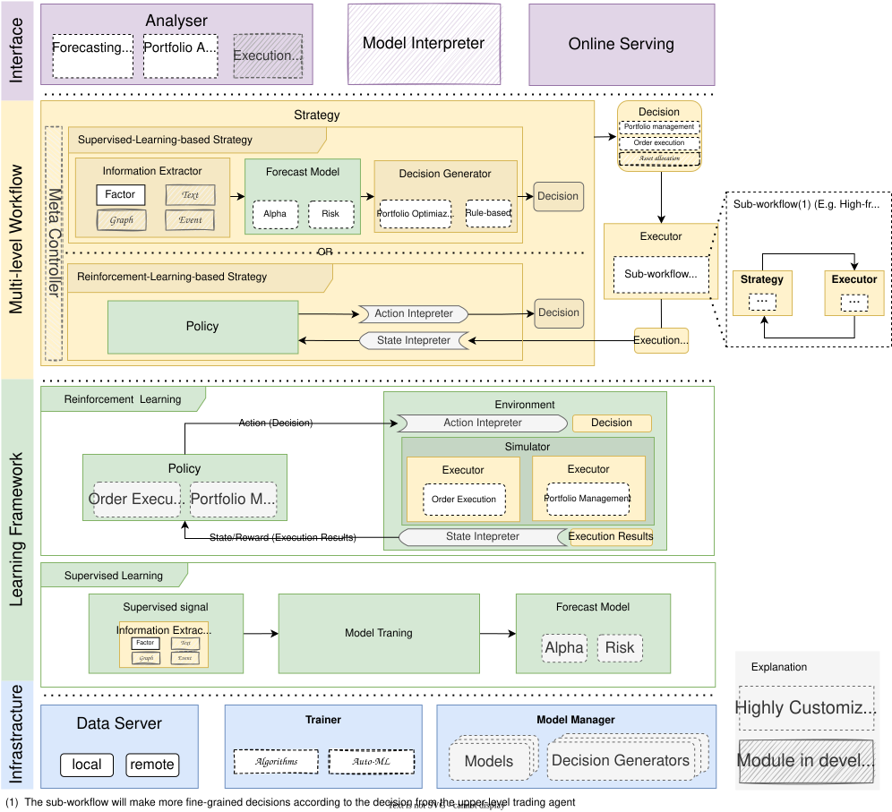
At the module level, Qlib is a platform that consists of above components. The components are designed as loose-coupled modules and each component could be used stand-alone.
This framework may be intimidating for new users to Qlib. It tries to accurately include a lot of details of Qlib’s design. For users new to Qlib, you can skip it first and read it later.
Name |
Description |
|---|---|
Infrastructure layer |
Infrastructure layer provides underlying support for Quant research. DataServer provides high-performance infrastructure for users to manage and retrieve raw data. Trainer provides flexible interface to control the training process of models which enable algorithms controlling the training process. |
Learning Framework layer |
The Forecast Model and Trading Agent are trainable. They are trained based on the Learning Framework layer and then applied to multiple scenarios in Workflow layer. The supported learning paradigms can be categorized into reinforcement learning and supervised learning. The learning framework leverages the Workflow layer as well(e.g. sharing Information Extractor, creating environments based on Execution Env). |
Workflow layer |
Workflow layer covers the whole workflow of quantitative investment. Both supervised-learning-based strategies and RL-based Strategies are supported. Information Extractor extracts data for models. Forecast Model focuses on producing all kinds of forecast signals (e.g. alpha, risk) for other modules. With these signals Decision Generator will generate the target trading decisions(i.e. portfolio, orders) If RL-based Strategies are adopted, the Policy is learned in a end-to-end way, the trading decisions are generated directly. Decisions will be executed by Execution Env (i.e. the trading market). There may be multiple levels of Strategy and Executor (e.g. an order executor trading strategy and intraday order executor could behave like an interday trading loop and be nested in daily portfolio management trading strategy and interday trading executor trading loop) |
Interface layer |
Interface layer tries to present a user-friendly interface for the underlying system. Analyser module will provide users detailed analysis reports of forecasting signals, portfolios and execution results |
The modules with hand-drawn style are under development and will be released in the future.
The modules with dashed borders are highly user-customizable and extendible.
(p.s. framework image is created with https://draw.io/)
Quick Start
Introduction
This Quick Start guide tries to demonstrate
It’s very easy to build a complete Quant research workflow and try users’ ideas with
Qlib.Though with public data and simple models, machine learning technologies work very well in practical Quant investment.
Installation
Users can easily install Qlib according to the following steps:
Before installing
Qlibfrom source, users need to install some dependencies:pip install numpy pip install --upgrade cython
Clone the repository and install
Qlibgit clone https://github.com/microsoft/qlib.git && cd qlib python setup.py install
To known more about installation, please refer to Qlib Installation.
Prepare Data
Load and prepare data by running the following code:
python scripts/get_data.py qlib_data --target_dir ~/.qlib/qlib_data/cn_data --region cn
This dataset is created by public data collected by crawler scripts in scripts/data_collector/, which have been released in the same repository. Users could create the same dataset with it.
To known more about prepare data, please refer to Data Preparation.
Auto Quant Research Workflow
Qlib provides a tool named qrun to run the whole workflow automatically (including building dataset, training models, backtest and evaluation). Users can start an auto quant research workflow and have a graphical reports analysis according to the following steps:
- Quant Research Workflow:
Run
qrunwith a config file of the LightGBM model workflow_config_lightgbm.yaml as following.cd examples # Avoid running program under the directory contains `qlib` qrun benchmarks/LightGBM/workflow_config_lightgbm.yaml
- Workflow result
The result of
qrunis as follows, which is also the typical result ofForecast model(alpha). Please refer to Intraday Trading. for more details about the result.risk excess_return_without_cost mean 0.000605 std 0.005481 annualized_return 0.152373 information_ratio 1.751319 max_drawdown -0.059055 excess_return_with_cost mean 0.000410 std 0.005478 annualized_return 0.103265 information_ratio 1.187411 max_drawdown -0.075024
To know more about workflow and qrun, please refer to Workflow: Workflow Management.
- Graphical Reports Analysis:
- Run
examples/workflow_by_code.ipynbwith jupyter notebook Users can have portfolio analysis or prediction score (model prediction) analysis by run
examples/workflow_by_code.ipynb.
- Run
- Graphical Reports
Users can get graphical reports about the analysis, please refer to Analysis: Evaluation & Results Analysis for more details.
Custom Model Integration
Qlib provides a batch of models (such as lightGBM and MLP models) as examples of Forecast Model. In addition to the default model, users can integrate their own custom models into Qlib. If users are interested in the custom model, please refer to Custom Model Integration.
Installation
Qlib Installation
Note
Qlib supports both Windows and Linux. It’s recommended to use Qlib in Linux. Qlib supports Python3, which is up to Python3.8.
Users can easily install Qlib by pip according to the following command:
pip install pyqlib
Also, Users can install Qlib by the source code according to the following steps:
Enter the root directory of
Qlib, in which the filesetup.pyexists.Then, please execute the following command to install the environment dependencies and install
Qlib:$ pip install numpy $ pip install --upgrade cython $ git clone https://github.com/microsoft/qlib.git && cd qlib $ python setup.py install
Note
It’s recommended to use anaconda/miniconda to setup the environment. Qlib needs lightgbm and pytorch packages, use pip to install them.
Use the following code to make sure the installation successful:
>>> import qlib
>>> qlib.__version__
<LATEST VERSION>
Qlib Initialization
Initialization
Please follow the steps below to initialize Qlib.
Download and prepare the Data: execute the following command to download stock data. Please pay attention that the data is collected from Yahoo Finance and the data might not be perfect. We recommend users to prepare their own data if they have high-quality datasets. Please refer to Data for more information about customized dataset.
python scripts/get_data.py qlib_data --target_dir ~/.qlib/qlib_data/cn_data --region cn
Please refer to Data Preparation for more information about get_data.py,
Initialize Qlib before calling other APIs: run following code in python.
import qlib # region in [REG_CN, REG_US] from qlib.constant import REG_CN provider_uri = "~/.qlib/qlib_data/cn_data" # target_dir qlib.init(provider_uri=provider_uri, region=REG_CN)
Note
Do not import qlib package in the repository directory of Qlib, otherwise, errors may occur.
Parameters
Besides provider_uri and region, qlib.init has other parameters. The following are several important parameters of qlib.init (Qlib has a lot of config. Only part of parameters are limited here. More detailed setting can be found here):
- provider_uri
Type: str. The URI of the Qlib data. For example, it could be the location where the data loaded by
get_data.pyare stored.
- region
- Type: str, optional parameter(default: qlib.constant.REG_CN).
Currently:
qlib.constant.REG_US(‘us’) andqlib.constant.REG_CN(‘cn’) is supported. Different value of region will result in different stock market mode. -qlib.constant.REG_US: US stock market. -qlib.constant.REG_CN: China stock market.Different modes will result in different trading limitations and costs. The region is just shortcuts for defining a batch of configurations, which include minimal trading order unit (
trade_unit), trading limitation (limit_threshold) , etc. It is not a necessary part and users can set the key configurations manually if the existing region setting can’t meet their requirements.
- redis_host
- Type: str, optional parameter(default: “127.0.0.1”), host of redis
The lock and cache mechanism relies on redis.
- redis_port
Type: int, optional parameter(default: 6379), port of redis
Note
The value of region should be aligned with the data stored in provider_uri. Currently,
scripts/get_data.pyonly provides China stock market data. If users want to use the US stock market data, they should prepare their own US-stock data in provider_uri and switch to US-stock mode.Note
If Qlib fails to connect redis via redis_host and redis_port, cache mechanism will not be used! Please refer to Cache for details.
- exp_manager
Type: dict, optional parameter, the setting of experiment manager to be used in qlib. Users can specify an experiment manager class, as well as the tracking URI for all the experiments. However, please be aware that we only support input of a dictionary in the following style for exp_manager. For more information about exp_manager, users can refer to Recorder: Experiment Management.
# For example, if you want to set your tracking_uri to a <specific folder>, you can initialize qlib below qlib.init(provider_uri=provider_uri, region=REG_CN, exp_manager= { "class": "MLflowExpManager", "module_path": "qlib.workflow.expm", "kwargs": { "uri": "python_execution_path/mlruns", "default_exp_name": "Experiment", } })
- mongo
Type: dict, optional parameter, the setting of MongoDB which will be used in some features such as Task Management, with high performance and clustered processing. Users need to follow the steps in installation to install MongoDB firstly and then access it via a URI. Users can access mongodb with credential by setting “task_url” to a string like “mongodb://%s:%s@%s” % (user, pwd, host + “:” + port).
# For example, you can initialize qlib below qlib.init(provider_uri=provider_uri, region=REG_CN, mongo={ "task_url": "mongodb://localhost:27017/", # your mongo url "task_db_name": "rolling_db", # the database name of Task Management })
- logging_level
The logging level for the system.
- kernels
The number of processes used when calculating features in Qlib’s expression engine. It is very helpful to set it to 1 when you are debuggin an expression calculating exception
Data Retrieval
Introduction
Users can get stock data with Qlib. The following examples demonstrate the basic user interface.
Examples
QLib Initialization:
Note
In order to get the data, users need to initialize Qlib with qlib.init first. Please refer to initialization.
If users followed steps in initialization and downloaded the data, they should use the following code to initialize qlib
>> import qlib
>> qlib.init(provider_uri='~/.qlib/qlib_data/cn_data')
Load trading calendar with given time range and frequency:
>> from qlib.data import D
>> D.calendar(start_time='2010-01-01', end_time='2017-12-31', freq='day')[:2]
[Timestamp('2010-01-04 00:00:00'), Timestamp('2010-01-05 00:00:00')]
Parse a given market name into a stock pool config:
>> from qlib.data import D
>> D.instruments(market='all')
{'market': 'all', 'filter_pipe': []}
Load instruments of certain stock pool in the given time range:
>> from qlib.data import D
>> instruments = D.instruments(market='csi300')
>> D.list_instruments(instruments=instruments, start_time='2010-01-01', end_time='2017-12-31', as_list=True)[:6]
['SH600036', 'SH600110', 'SH600087', 'SH600900', 'SH600089', 'SZ000912']
Load dynamic instruments from a base market according to a name filter
>> from qlib.data import D
>> from qlib.data.filter import NameDFilter
>> nameDFilter = NameDFilter(name_rule_re='SH[0-9]{4}55')
>> instruments = D.instruments(market='csi300', filter_pipe=[nameDFilter])
>> D.list_instruments(instruments=instruments, start_time='2015-01-01', end_time='2016-02-15', as_list=True)
['SH600655', 'SH601555']
Load dynamic instruments from a base market according to an expression filter
>> from qlib.data import D
>> from qlib.data.filter import ExpressionDFilter
>> expressionDFilter = ExpressionDFilter(rule_expression='$close>2000')
>> instruments = D.instruments(market='csi300', filter_pipe=[expressionDFilter])
>> D.list_instruments(instruments=instruments, start_time='2015-01-01', end_time='2016-02-15', as_list=True)
['SZ000651', 'SZ000002', 'SH600655', 'SH600570']
For more details about filter, please refer Filter API.
Load features of certain instruments in a given time range:
>> from qlib.data import D
>> instruments = ['SH600000']
>> fields = ['$close', '$volume', 'Ref($close, 1)', 'Mean($close, 3)', '$high-$low']
>> D.features(instruments, fields, start_time='2010-01-01', end_time='2017-12-31', freq='day').head().to_string()
' $close $volume Ref($close, 1) Mean($close, 3) $high-$low
... instrument datetime
... SH600000 2010-01-04 86.778313 16162960.0 88.825928 88.061483 2.907631
... 2010-01-05 87.433578 28117442.0 86.778313 87.679273 3.235252
... 2010-01-06 85.713585 23632884.0 87.433578 86.641825 1.720009
... 2010-01-07 83.788803 20813402.0 85.713585 85.645322 3.030487
... 2010-01-08 84.730675 16044853.0 83.788803 84.744354 2.047623'
Load features of certain stock pool in a given time range:
Note
With cache enabled, the qlib data server will cache data all the time for the requested stock pool and fields, it may take longer to process the request for the first time than that without cache. But after the first time, requests with the same stock pool and fields will hit the cache and be processed faster even the requested time period changes.
>> from qlib.data import D
>> from qlib.data.filter import NameDFilter, ExpressionDFilter
>> nameDFilter = NameDFilter(name_rule_re='SH[0-9]{4}55')
>> expressionDFilter = ExpressionDFilter(rule_expression='$close>Ref($close,1)')
>> instruments = D.instruments(market='csi300', filter_pipe=[nameDFilter, expressionDFilter])
>> fields = ['$close', '$volume', 'Ref($close, 1)', 'Mean($close, 3)', '$high-$low']
>> D.features(instruments, fields, start_time='2010-01-01', end_time='2017-12-31', freq='day').head().to_string()
' $close $volume Ref($close, 1) Mean($close, 3) $high-$low
... instrument datetime
... SH600655 2010-01-04 2699.567383 158193.328125 2619.070312 2626.097738 124.580566
... 2010-01-08 2612.359619 77501.406250 2584.567627 2623.220133 83.373047
... 2010-01-11 2712.982422 160852.390625 2612.359619 2636.636556 146.621582
... 2010-01-12 2788.688232 164587.937500 2712.982422 2704.676758 128.413818
... 2010-01-13 2790.604004 145460.453125 2788.688232 2764.091553 128.413818'
For more details about features, please refer Feature API.
Note
When calling D.features() at the client, use parameter disk_cache=0 to skip dataset cache, use disk_cache=1 to generate and use dataset cache. In addition, when calling at the server, users can use disk_cache=2 to update the dataset cache.
When you are building complicated expressions, implementing all the expressions in a single string may not be easy. For example, it looks quite long and complicated:
>> from qlib.data import D
>> data = D.features(["sh600519"], ["(($high / $close) + ($open / $close)) * (($high / $close) + ($open / $close)) / (($high / $close) + ($open / $close))"], start_time="20200101")
But using string is not the only way to implement the expression. You can also implement expression by code. Here is an example which does the same thing as above examples.
>> from qlib.data.ops import *
>> f1 = Feature("high") / Feature("close")
>> f2 = Feature("open") / Feature("close")
>> f3 = f1 + f2
>> f4 = f3 * f3 / f3
>> data = D.features(["sh600519"], [f4], start_time="20200101")
>> data.head()
API
To know more about how to use the Data, go to API Reference: Data API
Custom Model Integration
Introduction
Qlib’s Model Zoo includes models such as LightGBM, MLP, LSTM, etc.. These models are examples of Forecast Model. In addition to the default models Qlib provide, users can integrate their own custom models into Qlib.
Users can integrate their own custom models according to the following steps.
Define a custom model class, which should be a subclass of the qlib.model.base.Model.
Write a configuration file that describes the path and parameters of the custom model.
Test the custom model.
Custom Model Class
The Custom models need to inherit qlib.model.base.Model and override the methods in it.
- Override the __init__ method
Qlibpasses the initialized parameters to the __init__ method.The hyperparameters of model in the configuration must be consistent with those defined in the __init__ method.
Code Example: In the following example, the hyperparameters of model in the configuration file should contain parameters such as loss:mse.
def __init__(self, loss='mse', **kwargs): if loss not in {'mse', 'binary'}: raise NotImplementedError self._scorer = mean_squared_error if loss == 'mse' else roc_auc_score self._params.update(objective=loss, **kwargs) self._model = None
- Override the fit method
Qlibcalls the fit method to train the model.The parameters must include training feature dataset, which is designed in the interface.
The parameters could include some optional parameters with default values, such as num_boost_round = 1000 for GBDT.
Code Example: In the following example, num_boost_round = 1000 is an optional parameter.
def fit(self, dataset: DatasetH, num_boost_round = 1000, **kwargs): # prepare dataset for lgb training and evaluation df_train, df_valid = dataset.prepare( ["train", "valid"], col_set=["feature", "label"], data_key=DataHandlerLP.DK_L ) x_train, y_train = df_train["feature"], df_train["label"] x_valid, y_valid = df_valid["feature"], df_valid["label"] # Lightgbm need 1D array as its label if y_train.values.ndim == 2 and y_train.values.shape[1] == 1: y_train, y_valid = np.squeeze(y_train.values), np.squeeze(y_valid.values) else: raise ValueError("LightGBM doesn't support multi-label training") dtrain = lgb.Dataset(x_train.values, label=y_train) dvalid = lgb.Dataset(x_valid.values, label=y_valid) # fit the model self.model = lgb.train( self.params, dtrain, num_boost_round=num_boost_round, valid_sets=[dtrain, dvalid], valid_names=["train", "valid"], early_stopping_rounds=early_stopping_rounds, verbose_eval=verbose_eval, evals_result=evals_result, **kwargs )
- Override the predict method
The parameters must include the parameter dataset, which will be used to get the test dataset.
Return the prediction score.
Please refer to Model API for the parameter types of the fit method.
Code Example: In the following example, users need to use LightGBM to predict the label(such as preds) of test data x_test and return it.
def predict(self, dataset: DatasetH, **kwargs)-> pandas.Series: if self.model is None: raise ValueError("model is not fitted yet!") x_test = dataset.prepare("test", col_set="feature", data_key=DataHandlerLP.DK_I) return pd.Series(self.model.predict(x_test.values), index=x_test.index)
- Override the finetune method (Optional)
This method is optional to the users. When users want to use this method on their own models, they should inherit the
ModelFTbase class, which includes the interface of finetune.The parameters must include the parameter dataset.
Code Example: In the following example, users will use LightGBM as the model and finetune it.
def finetune(self, dataset: DatasetH, num_boost_round=10, verbose_eval=20): # Based on existing model and finetune by train more rounds dtrain, _ = self._prepare_data(dataset) self.model = lgb.train( self.params, dtrain, num_boost_round=num_boost_round, init_model=self.model, valid_sets=[dtrain], valid_names=["train"], verbose_eval=verbose_eval, )
Configuration File
The configuration file is described in detail in the Workflow document. In order to integrate the custom model into Qlib, users need to modify the “model” field in the configuration file. The configuration describes which models to use and how we can initialize it.
Example: The following example describes the model field of configuration file about the custom lightgbm model mentioned above, where module_path is the module path, class is the class name, and args is the hyperparameter passed into the __init__ method. All parameters in the field is passed to self._params by **kwargs in __init__ except loss = mse.
model: class: LGBModel module_path: qlib.contrib.model.gbdt args: loss: mse colsample_bytree: 0.8879 learning_rate: 0.0421 subsample: 0.8789 lambda_l1: 205.6999 lambda_l2: 580.9768 max_depth: 8 num_leaves: 210 num_threads: 20
Users could find configuration file of the baselines of the Model in examples/benchmarks. All the configurations of different models are listed under the corresponding model folder.
Model Testing
Assuming that the configuration file is examples/benchmarks/LightGBM/workflow_config_lightgbm.yaml, users can run the following command to test the custom model:
cd examples # Avoid running program under the directory contains `qlib`
qrun benchmarks/LightGBM/workflow_config_lightgbm.yaml
Note
qrun is a built-in command of Qlib.
Also, Model can also be tested as a single module. An example has been given in examples/workflow_by_code.ipynb.
Reference
To know more about Forecast Model, please refer to Forecast Model: Model Training & Prediction and Model API.
Workflow: Workflow Management
Introduction
The components in Qlib Framework are designed in a loosely-coupled way. Users could build their own Quant research workflow with these components like Example.
Besides, Qlib provides more user-friendly interfaces named qrun to automatically run the whole workflow defined by configuration. Running the whole workflow is called an execution.
With qrun, user can easily start an execution, which includes the following steps:
- Data
Loading
Processing
Slicing
- Model
Training and inference
Saving & loading
- Evaluation
Forecast signal analysis
Backtest
For each execution, Qlib has a complete system to tracking all the information as well as artifacts generated during training, inference and evaluation phase. For more information about how Qlib handles this, please refer to the related document: Recorder: Experiment Management.
Complete Example
Before getting into details, here is a complete example of qrun, which defines the workflow in typical Quant research.
Below is a typical config file of qrun.
qlib_init:
provider_uri: "~/.qlib/qlib_data/cn_data"
region: cn
market: &market csi300
benchmark: &benchmark SH000300
data_handler_config: &data_handler_config
start_time: 2008-01-01
end_time: 2020-08-01
fit_start_time: 2008-01-01
fit_end_time: 2014-12-31
instruments: *market
port_analysis_config: &port_analysis_config
strategy:
class: TopkDropoutStrategy
module_path: qlib.contrib.strategy.strategy
kwargs:
topk: 50
n_drop: 5
signal: <PRED>
backtest:
start_time: 2017-01-01
end_time: 2020-08-01
account: 100000000
benchmark: *benchmark
exchange_kwargs:
limit_threshold: 0.095
deal_price: close
open_cost: 0.0005
close_cost: 0.0015
min_cost: 5
task:
model:
class: LGBModel
module_path: qlib.contrib.model.gbdt
kwargs:
loss: mse
colsample_bytree: 0.8879
learning_rate: 0.0421
subsample: 0.8789
lambda_l1: 205.6999
lambda_l2: 580.9768
max_depth: 8
num_leaves: 210
num_threads: 20
dataset:
class: DatasetH
module_path: qlib.data.dataset
kwargs:
handler:
class: Alpha158
module_path: qlib.contrib.data.handler
kwargs: *data_handler_config
segments:
train: [2008-01-01, 2014-12-31]
valid: [2015-01-01, 2016-12-31]
test: [2017-01-01, 2020-08-01]
record:
- class: SignalRecord
module_path: qlib.workflow.record_temp
kwargs: {}
- class: PortAnaRecord
module_path: qlib.workflow.record_temp
kwargs:
config: *port_analysis_config
After saving the config into configuration.yaml, users could start the workflow and test their ideas with a single command below.
qrun configuration.yaml
If users want to use qrun under debug mode, please use the following command:
python -m pdb qlib/cli/run.py examples/benchmarks/LightGBM/workflow_config_lightgbm_Alpha158.yaml
Note
qrun will be placed in your $PATH directory when installing Qlib.
Note
The symbol & in yaml file stands for an anchor of a field, which is useful when another fields include this parameter as part of the value. Taking the configuration file above as an example, users can directly change the value of market and benchmark without traversing the entire configuration file.
Configuration File
Let’s get into details of qrun in this section.
Before using qrun, users need to prepare a configuration file. The following content shows how to prepare each part of the configuration file.
The design logic of the configuration file is very simple. It predefines fixed workflows and provide this yaml interface to users to define how to initialize each component. It follow the design of init_instance_by_config . It defines the initialization of each component of Qlib, which typically include the class and the initialization arguments.
For example, the following yaml and code are equivalent.
model:
class: LGBModel
module_path: qlib.contrib.model.gbdt
kwargs:
loss: mse
colsample_bytree: 0.8879
learning_rate: 0.0421
subsample: 0.8789
lambda_l1: 205.6999
lambda_l2: 580.9768
max_depth: 8
num_leaves: 210
num_threads: 20
from qlib.contrib.model.gbdt import LGBModel
kwargs = {
"loss": "mse" ,
"colsample_bytree": 0.8879,
"learning_rate": 0.0421,
"subsample": 0.8789,
"lambda_l1": 205.6999,
"lambda_l2": 580.9768,
"max_depth": 8,
"num_leaves": 210,
"num_threads": 20,
}
LGBModel(kwargs)
Qlib Init Section
At first, the configuration file needs to contain several basic parameters which will be used for qlib initialization.
provider_uri: "~/.qlib/qlib_data/cn_data"
region: cn
The meaning of each field is as follows:
- provider_uri
Type: str. The URI of the Qlib data. For example, it could be the location where the data loaded by
get_data.pyare stored.
- region
If region == “us”,
Qlibwill be initialized in US-stock mode.If region == “cn”,
Qlibwill be initialized in China-stock mode.
Note
The value of region should be aligned with the data stored in provider_uri.
Task Section
The task field in the configuration corresponds to a task, which contains the parameters of three different subsections: Model, Dataset and Record.
Model Section
In the task field, the model section describes the parameters of the model to be used for training and inference. For more information about the base Model class, please refer to Qlib Model.
model:
class: LGBModel
module_path: qlib.contrib.model.gbdt
kwargs:
loss: mse
colsample_bytree: 0.8879
learning_rate: 0.0421
subsample: 0.8789
lambda_l1: 205.6999
lambda_l2: 580.9768
max_depth: 8
num_leaves: 210
num_threads: 20
The meaning of each field is as follows:
- class
Type: str. The name for the model class.
- module_path
Type: str. The path for the model in qlib.
- kwargs
The keywords arguments for the model. Please refer to the specific model implementation for more information: models.
Note
Qlib provides a util named: init_instance_by_config to initialize any class inside Qlib with the configuration includes the fields: class, module_path and kwargs.
Dataset Section
The dataset field describes the parameters for the Dataset module in Qlib as well those for the module DataHandler. For more information about the Dataset module, please refer to Qlib Data.
The keywords arguments configuration of the DataHandler is as follows:
data_handler_config: &data_handler_config
start_time: 2008-01-01
end_time: 2020-08-01
fit_start_time: 2008-01-01
fit_end_time: 2014-12-31
instruments: *market
Users can refer to the document of DataHandler for more information about the meaning of each field in the configuration.
Here is the configuration for the Dataset module which will take care of data preprocessing and slicing during the training and testing phase.
dataset:
class: DatasetH
module_path: qlib.data.dataset
kwargs:
handler:
class: Alpha158
module_path: qlib.contrib.data.handler
kwargs: *data_handler_config
segments:
train: [2008-01-01, 2014-12-31]
valid: [2015-01-01, 2016-12-31]
test: [2017-01-01, 2020-08-01]
Record Section
The record field is about the parameters the Record module in Qlib. Record is responsible for tracking training process and results such as information Coefficient (IC) and backtest in a standard format.
The following script is the configuration of backtest and the strategy used in backtest:
port_analysis_config: &port_analysis_config
strategy:
class: TopkDropoutStrategy
module_path: qlib.contrib.strategy.strategy
kwargs:
topk: 50
n_drop: 5
signal: <PRED>
backtest:
limit_threshold: 0.095
account: 100000000
benchmark: *benchmark
deal_price: close
open_cost: 0.0005
close_cost: 0.0015
min_cost: 5
For more information about the meaning of each field in configuration of strategy and backtest, users can look up the documents: Strategy and Backtest.
Here is the configuration details of different Record Template such as SignalRecord and PortAnaRecord:
record:
- class: SignalRecord
module_path: qlib.workflow.record_temp
kwargs: {}
- class: PortAnaRecord
module_path: qlib.workflow.record_temp
kwargs:
config: *port_analysis_config
For more information about the Record module in Qlib, user can refer to the related document: Record.
Data Layer: Data Framework & Usage
Introduction
Data Layer provides user-friendly APIs to manage and retrieve data. It provides high-performance data infrastructure.
It is designed for quantitative investment. For example, users could build formulaic alphas with Data Layer easily. Please refer to Building Formulaic Alphas for more details.
The introduction of Data Layer includes the following parts.
Data Preparation
Data API
Data Loader
Data Handler
Dataset
Cache
Data and Cache File Structure
Here is a typical example of Qlib data workflow
Users download data and converting data into Qlib format(with filename suffix .bin). In this step, typically only some basic data are stored on disk(such as OHLCV).
Creating some basic features based on Qlib’s expression Engine(e.g. “Ref($close, 60) / $close”, the return of last 60 trading days). Supported operators in the expression engine can be found here. This step is typically implemented in Qlib’s Data Loader which is a component of Data Handler .
If users require more complicated data processing (e.g. data normalization), Data Handler support user-customized processors to process data(some predefined processors can be found here). The processors are different from operators in expression engine. It is designed for some complicated data processing methods which is hard to supported in operators in expression engine.
At last, Dataset is responsible to prepare model-specific dataset from the processed data of Data Handler
Data Preparation
Qlib Format Data
We’ve specially designed a data structure to manage financial data, please refer to the File storage design section in Qlib paper for detailed information. Such data will be stored with filename suffix .bin (We’ll call them .bin file, .bin format, or qlib format). .bin file is designed for scientific computing on finance data.
Qlib provides two different off-the-shelf datasets, which can be accessed through this link:
Dataset |
US Market |
China Market |
|---|---|---|
Alpha360 |
√ |
√ |
Alpha158 |
√ |
√ |
Also, Qlib provides a high-frequency dataset. Users can run a high-frequency dataset example through this link.
Qlib Format Dataset
Qlib has provided an off-the-shelf dataset in .bin format, users could use the script scripts/get_data.py to download the China-Stock dataset as follows. User can also use numpy to load .bin file to validate data.
The price volume data look different from the actual dealing price because of they are adjusted (adjusted price). And then you may find that the adjusted price may be different from different data sources. This is because different data sources may vary in the way of adjusting prices. Qlib normalize the price on first trading day of each stock to 1 when adjusting them.
Users can leverage $factor to get the original trading price (e.g. $close / $factor to get the original close price).
Here are some discussions about the price adjusting of Qlib.
# download 1d
python scripts/get_data.py qlib_data --target_dir ~/.qlib/qlib_data/cn_data --region cn
# download 1min
python scripts/get_data.py qlib_data --target_dir ~/.qlib/qlib_data/qlib_cn_1min --region cn --interval 1min
In addition to China-Stock data, Qlib also includes a US-Stock dataset, which can be downloaded with the following command:
python scripts/get_data.py qlib_data --target_dir ~/.qlib/qlib_data/us_data --region us
After running the above command, users can find china-stock and us-stock data in Qlib format in the ~/.qlib/qlib_data/cn_data directory and ~/.qlib/qlib_data/us_data directory respectively.
Qlib also provides the scripts in scripts/data_collector to help users crawl the latest data on the Internet and convert it to qlib format.
When Qlib is initialized with this dataset, users could build and evaluate their own models with it. Please refer to Initialization for more details.
Automatic update of daily frequency data
It is recommended that users update the data manually once (--trading_date 2021-05-25) and then set it to update automatically.
For more information refer to: yahoo collector
- Automatic update of data to the “qlib” directory each trading day(Linux)
use crontab: crontab -e
set up timed tasks:
* * * * 1-5 python <script path> update_data_to_bin --qlib_data_1d_dir <user data dir>
script path: scripts/data_collector/yahoo/collector.py
Manual update of data
python scripts/data_collector/yahoo/collector.py update_data_to_bin --qlib_data_1d_dir <user data dir> --trading_date <start date> --end_date <end date>
trading_date: start of trading day
end_date: end of trading day(not included)
Converting CSV and Parquet Format into Qlib Format
Qlib has provided the script scripts/dump_bin.py to convert any data in CSV or Parquet format into .bin files (Qlib format) as long as they are in the correct format.
Besides downloading the prepared demo data, users could download demo data directly from the Collector as follows for reference to the CSV format. Here are some example:
- for daily data:
python scripts/get_data.py download_data --file_name csv_data_cn.zip --target_dir ~/.qlib/csv_data/cn_data
- for 1min data:
python scripts/data_collector/yahoo/collector.py download_data --source_dir ~/.qlib/stock_data/source/cn_1min --region CN --start 2021-05-20 --end 2021-05-23 --delay 0.1 --interval 1min --limit_nums 10
Users can also provide their own data in CSV or Parquet format. However, the data must satisfies following criterions:
CSV or Parquet file is named after a specific stock or the CSV or Parquet file includes a column of the stock name
Name the CSV or Parquet file after a stock: SH600000.csv, AAPL.csv or SH600000.parquet, AAPL.parquet (not case sensitive).
CSV or Parquet file includes a column of the stock name. User must specify the column name when dumping the data. Here is an example:
python scripts/dump_bin.py dump_all ... --symbol_field_name symbol --file_suffix <.csv or .parquet>
where the data are in the following format:
symbol
close
SH600000
120
CSV or Parquet file must include a column for the date, and when dumping the data, user must specify the date column name. Here is an example:
python scripts/dump_bin.py dump_all ... --date_field_name date --file_suffix <.csv or .parquet>
where the data are in the following format:
symbol
date
close
open
volume
SH600000
2020-11-01
120
121
12300000
SH600000
2020-11-02
123
120
12300000
Supposed that users prepare their CSV or Parquet format data in the directory ~/.qlib/my_data, they can run the following command to start the conversion.
python scripts/dump_bin.py dump_all --data_path ~/.qlib/my_data --qlib_dir ~/.qlib/qlib_data/ --include_fields open,close,high,low,volume,factor --file_suffix <.csv or .parquet>
For other supported parameters when dumping the data into .bin file, users can refer to the information by running the following commands:
python scripts/dump_bin.py dump_all --help
After conversion, users can find their Qlib format data in the directory ~/.qlib/qlib_data/.
Note
The arguments of –include_fields should correspond with the column names of CSV or Parquet files. The columns names of dataset provided by Qlib should include open, close, high, low, volume and factor at least.
- open
The adjusted opening price
- close
The adjusted closing price
- high
The adjusted highest price
- low
The adjusted lowest price
- volume
The adjusted trading volume
- factor
The Restoration factor. Normally,
factor = adjusted_price / original_price, adjusted price reference: split adjusted
In the convention of Qlib data processing, open, close, high, low, volume, money and factor will be set to NaN if the stock is suspended. If you want to use your own alpha-factor which can’t be calculate by OCHLV, like PE, EPS and so on, you could add it to the CSV or Parquet files with OHCLV together and then dump it to the Qlib format data.
Checking the health of the data
Qlib provides a script to check the health of the data.
The main points to check are as follows
Check if any data is missing in the DataFrame.
Check if there are any large step changes above the threshold in the OHLCV columns.
Check if any of the required columns (OLHCV) are missing in the DataFrame.
Check if the ‘factor’ column is missing in the DataFrame.
You can run the following commands to check whether the data is healthy or not.
- for daily data:
python scripts/check_data_health.py check_data --qlib_dir ~/.qlib/qlib_data/cn_data
- for 1min data:
python scripts/check_data_health.py check_data --qlib_dir ~/.qlib/qlib_data/cn_data_1min --freq 1min
Of course, you can also add some parameters to adjust the test results.
The available parameters are these.
freq: Frequency of data.
large_step_threshold_price: Maximum permitted price change
large_step_threshold_volume: Maximum permitted volume change.
missing_data_num: Maximum value for which data is allowed to be null.
You can run the following commands to check whether the data is healthy or not.
- for daily data:
python scripts/check_data_health.py check_data --qlib_dir ~/.qlib/qlib_data/cn_data --missing_data_num 30055 --large_step_threshold_volume 94485 --large_step_threshold_price 20
- for 1min data:
python scripts/check_data_health.py check_data --qlib_dir ~/.qlib/qlib_data/cn_data --freq 1min --missing_data_num 35806 --large_step_threshold_volume 3205452000000 --large_step_threshold_price 0.91
Stock Pool (Market)
Qlib defines stock pool as stock list and their date ranges. Predefined stock pools (e.g. csi300) may be imported as follows.
python collector.py --index_name CSI300 --qlib_dir <user qlib data dir> --method parse_instruments
Multiple Stock Modes
Qlib now provides two different stock modes for users: China-Stock Mode & US-Stock Mode. Here are some different settings of these two modes:
Region |
Trade Unit |
Limit Threshold |
|---|---|---|
China |
100 |
0.099 |
US |
1 |
None |
The trade unit defines the unit number of stocks can be used in a trade, and the limit threshold defines the bound set to the percentage of ups and downs of a stock.
- If users use
Qlibin china-stock mode, china-stock data is required. Users can useQlibin china-stock mode according to the following steps: Download china-stock in qlib format, please refer to section Qlib Format Dataset.
- Initialize
Qlibin china-stock mode Supposed that users download their Qlib format data in the directory
~/.qlib/qlib_data/cn_data. Users only need to initializeQlibas follows.from qlib.constant import REG_CN qlib.init(provider_uri='~/.qlib/qlib_data/cn_data', region=REG_CN)
- Initialize
- If users use
- If users use
Qlibin US-stock mode, US-stock data is required.Qlibalso provides a script to download US-stock data. Users can useQlibin US-stock mode according to the following steps: Download us-stock in qlib format, please refer to section Qlib Format Dataset.
- Initialize
Qlibin US-stock mode Supposed that users prepare their Qlib format data in the directory
~/.qlib/qlib_data/us_data. Users only need to initializeQlibas follows.from qlib.config import REG_US qlib.init(provider_uri='~/.qlib/qlib_data/us_data', region=REG_US)
- Initialize
- If users use
Note
PRs for new data source are highly welcome! Users could commit the code to crawl data as a PR like the examples here. And then we will use the code to create data cache on our server which other users could use directly.
Data API
Data Retrieval
Users can use APIs in qlib.data to retrieve data, please refer to Data Retrieval.
Feature
Qlib provides Feature and ExpressionOps to fetch the features according to users’ needs.
- Feature
Load data from the data provider. User can get the features like $high, $low, $open, $close, .etc, which should correspond with the arguments of –include_fields, please refer to section Converting CSV Format into Qlib Format.
- ExpressionOps
ExpressionOps will use operator for feature construction. To know more about
Operator, please refer to Operator API. Also,Qlibsupports users to define their own customOperator, an example has been given intests/test_register_ops.py.
To know more about Feature, please refer to Feature API.
Filter
Qlib provides NameDFilter and ExpressionDFilter to filter the instruments according to users’ needs.
- NameDFilter
Name dynamic instrument filter. Filter the instruments based on a regulated name format. A name rule regular expression is required.
- ExpressionDFilter
Expression dynamic instrument filter. Filter the instruments based on a certain expression. An expression rule indicating a certain feature field is required.
basic features filter: rule_expression = ‘$close/$open>5’
cross-sectional features filter : rule_expression = ‘$rank($close)<10’
time-sequence features filter: rule_expression = ‘$Ref($close, 3)>100’
Here is a simple example showing how to use filter in a basic Qlib workflow configuration file:
filter: &filter
filter_type: ExpressionDFilter
rule_expression: "Ref($close, -2) / Ref($close, -1) > 1"
filter_start_time: 2010-01-01
filter_end_time: 2010-01-07
keep: False
data_handler_config: &data_handler_config
start_time: 2010-01-01
end_time: 2021-01-22
fit_start_time: 2010-01-01
fit_end_time: 2015-12-31
instruments: *market
filter_pipe: [*filter]
To know more about Filter, please refer to Filter API.
Reference
To know more about Data API, please refer to Data API.
Data Loader
Data Loader in Qlib is designed to load raw data from the original data source. It will be loaded and used in the Data Handler module.
QlibDataLoader
The QlibDataLoader class in Qlib is such an interface that allows users to load raw data from the Qlib data source.
StaticDataLoader
The StaticDataLoader class in Qlib is such an interface that allows users to load raw data from file or as provided.
Interface
Here are some interfaces of the QlibDataLoader class:
- class qlib.data.dataset.loader.DataLoader
DataLoader is designed for loading raw data from original data source.
- abstract load(instruments, start_time=None, end_time=None) DataFrame
load the data as pd.DataFrame.
Example of the data (The multi-index of the columns is optional.):
feature label $close $volume Ref($close, 1) Mean($close, 3) $high-$low LABEL0 datetime instrument 2010-01-04 SH600000 81.807068 17145150.0 83.737389 83.016739 2.741058 0.0032 SH600004 13.313329 11800983.0 13.313329 13.317701 0.183632 0.0042 SH600005 37.796539 12231662.0 38.258602 37.919757 0.970325 0.0289- Parameters:
instruments (str or dict) – it can either be the market name or the config file of instruments generated by InstrumentProvider. If the value of instruments is None, it means that no filtering is done.
start_time (str) – start of the time range.
end_time (str) – end of the time range.
- Returns:
data load from the under layer source
- Return type:
pd.DataFrame
- Raises:
KeyError: – if the instruments filter is not supported, raise KeyError
API
To know more about Data Loader, please refer to Data Loader API.
Data Handler
The Data Handler module in Qlib is designed to handler those common data processing methods which will be used by most of the models.
Users can use Data Handler in an automatic workflow by qrun, refer to Workflow: Workflow Management for more details.
DataHandlerLP
In addition to use Data Handler in an automatic workflow with qrun, Data Handler can be used as an independent module, by which users can easily preprocess data (standardization, remove NaN, etc.) and build datasets.
In order to achieve so, Qlib provides a base class qlib.data.dataset.DataHandlerLP. The core idea of this class is that: we will have some learnable Processors which can learn the parameters of data processing(e.g., parameters for zscore normalization). When new data comes in, these trained Processors can then process the new data and thus processing real-time data in an efficient way becomes possible. More information about Processors will be listed in the next subsection.
Interface
Here are some important interfaces that DataHandlerLP provides:
- class qlib.data.dataset.handler.DataHandlerLP(instruments=None, start_time=None, end_time=None, data_loader: dict | str | DataLoader | None = None, infer_processors: List = [], learn_processors: List = [], shared_processors: List = [], process_type='append', drop_raw=False, **kwargs)
Motivation: - For the case that we hope using different processor workflows for learning and inference;
DataHandler with (L)earnable (P)rocessor
This handler will produce three pieces of data in pd.DataFrame format.
DK_R / self._data: the raw data loaded from the loader
DK_I / self._infer: the data processed for inference
DK_L / self._learn: the data processed for learning model.
The motivation of using different processor workflows for learning and inference Here are some examples.
The instrument universe for learning and inference may be different.
The processing of some samples may rely on label (for example, some samples hit the limit may need extra processing or be dropped).
These processors only apply to the learning phase.
Tips for data handler
To reduce the memory cost
drop_raw=True: this will modify the data inplace on raw data;
Please note processed data like self._infer or self._learn are concepts different from segments in Qlib’s Dataset like “train” and “test”
Processed data like self._infer or self._learn are underlying data processed with different processors
segments in Qlib’s Dataset like “train” and “test” are simply the time segmentations when querying data(“train” are often before “test” in time-series).
For example, you can query data._infer processed by infer_processors in the “train” time segmentation.
- __init__(instruments=None, start_time=None, end_time=None, data_loader: dict | str | DataLoader | None = None, infer_processors: List = [], learn_processors: List = [], shared_processors: List = [], process_type='append', drop_raw=False, **kwargs)
- Parameters:
infer_processors (list) –
list of <description info> of processors to generate data for inference
example of <description info>:
1) classname & kwargs: { "class": "MinMaxNorm", "kwargs": { "fit_start_time": "20080101", "fit_end_time": "20121231" } } 2) Only classname: "DropnaFeature" 3) object instance of Processor
learn_processors (list) – similar to infer_processors, but for generating data for learning models
process_type (str) –
PTYPE_I = ‘independent’
self._infer will be processed by infer_processors
self._learn will be processed by learn_processors
PTYPE_A = ‘append’
self._infer will be processed by infer_processors
self._learn will be processed by infer_processors + learn_processors
(e.g. self._infer processed by learn_processors )
drop_raw (bool) – Whether to drop the raw data
- fit()
fit data without processing the data
- fit_process_data()
fit and process data
The input of the fit will be the output of the previous processor
- process_data(with_fit: bool = False)
process_data data. Fun processor.fit if necessary
Notation: (data) [processor]
# data processing flow of self.process_type == DataHandlerLP.PTYPE_I
(self._data)-[shared_processors]-(_shared_df)-[learn_processors]-(_learn_df) \ -[infer_processors]-(_infer_df)# data processing flow of self.process_type == DataHandlerLP.PTYPE_A
(self._data)-[shared_processors]-(_shared_df)-[infer_processors]-(_infer_df)-[learn_processors]-(_learn_df)
- Parameters:
with_fit (bool) – The input of the fit will be the output of the previous processor
- config(processor_kwargs: dict | None = None, **kwargs)
configuration of data. # what data to be loaded from data source
This method will be used when loading pickled handler from dataset. The data will be initialized with different time range.
- setup_data(init_type: str = 'fit_seq', **kwargs)
Set up the data in case of running initialization for multiple time
- Parameters:
init_type (str) – The type IT_* listed above.
enable_cache (bool) –
default value is false:
if enable_cache == True:
the processed data will be saved on disk, and handler will load the cached data from the disk directly when we call init next time
- fetch(selector: Timestamp | slice | str = slice(None, None, None), level: str | int = 'datetime', col_set='__all', data_key: Literal['raw', 'infer', 'learn'] = 'infer', squeeze: bool = False, proc_func: Callable | None = None) DataFrame
fetch data from underlying data source
- Parameters:
selector (Union[pd.Timestamp, slice, str]) – describe how to select data by index.
level (Union[str, int]) – which index level to select the data.
col_set (str) – select a set of meaningful columns.(e.g. features, columns).
data_key (str) – the data to fetch: DK_*.
proc_func (Callable) – please refer to the doc of DataHandler.fetch
- Return type:
pd.DataFrame
- get_cols(col_set='__all', data_key: Literal['raw', 'infer', 'learn'] = 'infer') list
get the column names
- Parameters:
col_set (str) – select a set of meaningful columns.(e.g. features, columns).
data_key (DATA_KEY_TYPE) – the data to fetch: DK_*.
- Returns:
list of column names
- Return type:
list
- classmethod cast(handler: DataHandlerLP) DataHandlerLP
Motivation
A user creates a datahandler in his customized package. Then he wants to share the processed handler to other users without introduce the package dependency and complicated data processing logic.
This class make it possible by casting the class to DataHandlerLP and only keep the processed data
- Parameters:
handler (DataHandlerLP) – A subclass of DataHandlerLP
- Returns:
the converted processed data
- Return type:
- classmethod from_df(df: DataFrame) DataHandlerLP
Motivation: - When user want to get a quick data handler.
The created data handler will have only one shared Dataframe without processors. After creating the handler, user may often want to dump the handler for reuse Here is a typical use case
from qlib.data.dataset import DataHandlerLP dh = DataHandlerLP.from_df(df) dh.to_pickle(fname, dump_all=True)
TODO: - The StaticDataLoader is quite slow. It don’t have to copy the data again…
If users want to load features and labels by config, users can define a new handler and call the static method parse_config_to_fields of qlib.contrib.data.handler.Alpha158.
Also, users can pass qlib.contrib.data.processor.ConfigSectionProcessor that provides some preprocess methods for features defined by config into the new handler.
Processor
The Processor module in Qlib is designed to be learnable and it is responsible for handling data processing such as normalization and drop none/nan features/labels.
Qlib provides the following Processors:
DropnaProcessor: processor that drops N/A features.DropnaLabel: processor that drops N/A labels.TanhProcess: processor that uses tanh to process noise data.ProcessInf: processor that handles infinity values, it will be replaces by the mean of the column.Fillna: processor that handles N/A values, which will fill the N/A value by 0 or other given number.MinMaxNorm: processor that applies min-max normalization.ZscoreNorm: processor that applies z-score normalization.RobustZScoreNorm: processor that applies robust z-score normalization.CSZScoreNorm: processor that applies cross sectional z-score normalization.CSRankNorm: processor that applies cross sectional rank normalization.CSZFillna: processor that fills N/A values in a cross sectional way by the mean of the column.
Users can also create their own processor by inheriting the base class of Processor. Please refer to the implementation of all the processors for more information (Processor Link).
To know more about Processor, please refer to Processor API.
Example
Data Handler can be run with qrun by modifying the configuration file, and can also be used as a single module.
Know more about how to run Data Handler with qrun, please refer to Workflow: Workflow Management
Qlib provides implemented data handler Alpha158. The following example shows how to run Alpha158 as a single module.
Note
Users need to initialize Qlib with qlib.init first, please refer to initialization.
import qlib
from qlib.contrib.data.handler import Alpha158
data_handler_config = {
"start_time": "2008-01-01",
"end_time": "2020-08-01",
"fit_start_time": "2008-01-01",
"fit_end_time": "2014-12-31",
"instruments": "csi300",
}
if __name__ == "__main__":
qlib.init()
h = Alpha158(**data_handler_config)
# get all the columns of the data
print(h.get_cols())
# fetch all the labels
print(h.fetch(col_set="label"))
# fetch all the features
print(h.fetch(col_set="feature"))
Note
In the Alpha158, Qlib uses the label Ref($close, -2)/Ref($close, -1) - 1 that means the change from T+1 to T+2, rather than Ref($close, -1)/$close - 1, of which the reason is that when getting the T day close price of a china stock, the stock can be bought on T+1 day and sold on T+2 day.
API
To know more about Data Handler, please refer to Data Handler API.
Dataset
The Dataset module in Qlib aims to prepare data for model training and inferencing.
The motivation of this module is that we want to maximize the flexibility of different models to handle data that are suitable for themselves. This module gives the model the flexibility to process their data in an unique way. For instance, models such as GBDT may work well on data that contains nan or None value, while neural networks such as MLP will break down on such data.
If user’s model need process its data in a different way, user could implement his own Dataset class. If the model’s
data processing is not special, DatasetH can be used directly.
The DatasetH class is the dataset with Data Handler. Here is the most important interface of the class:
- class qlib.data.dataset.__init__.DatasetH(handler: Dict | DataHandler, segments: Dict[str, Tuple], fetch_kwargs: Dict = {}, **kwargs)
Dataset with Data(H)andler
User should try to put the data preprocessing functions into handler. Only following data processing functions should be placed in Dataset:
The processing is related to specific model.
The processing is related to data split.
- __init__(handler: Dict | DataHandler, segments: Dict[str, Tuple], fetch_kwargs: Dict = {}, **kwargs)
Setup the underlying data.
- Parameters:
handler (Union[dict, DataHandler]) –
handler could be:
instance of DataHandler
config of DataHandler. Please refer to DataHandler
segments (dict) –
Describe the options to segment the data. Here are some examples:
1) 'segments': { 'train': ("2008-01-01", "2014-12-31"), 'valid': ("2017-01-01", "2020-08-01",), 'test': ("2015-01-01", "2016-12-31",), } 2) 'segments': { 'insample': ("2008-01-01", "2014-12-31"), 'outsample': ("2017-01-01", "2020-08-01",), }
- config(handler_kwargs: dict | None = None, **kwargs)
Initialize the DatasetH
- Parameters:
handler_kwargs (dict) –
Config of DataHandler, which could include the following arguments:
arguments of DataHandler.conf_data, such as ‘instruments’, ‘start_time’ and ‘end_time’.
kwargs (dict) –
Config of DatasetH, such as
- segmentsdict
Config of segments which is same as ‘segments’ in self.__init__
- setup_data(handler_kwargs: dict | None = None, **kwargs)
Setup the Data
- Parameters:
handler_kwargs (dict) –
init arguments of DataHandler, which could include the following arguments:
init_type : Init Type of Handler
enable_cache : whether to enable cache
- prepare(segments: List[str] | Tuple[str] | str | slice | Index, col_set='__all', data_key='infer', **kwargs) List[DataFrame] | DataFrame
Prepare the data for learning and inference.
- Parameters:
segments (Union[List[Text], Tuple[Text], Text, slice]) –
Describe the scope of the data to be prepared Here are some examples:
’train’
[‘train’, ‘valid’]
col_set (str) –
The col_set will be passed to self.handler when fetching data. TODO: make it automatic:
select DK_I for test data
select DK_L for training data.
data_key (str) – The data to fetch: DK_* Default is DK_I, which indicate fetching data for inference.
kwargs –
- The parameters that kwargs may contain:
- flt_colstr
It only exists in TSDatasetH, can be used to add a column of data(True or False) to filter data. This parameter is only supported when it is an instance of TSDatasetH.
- Return type:
Union[List[pd.DataFrame], pd.DataFrame]
- Raises:
NotImplementedError: –
API
To know more about Dataset, please refer to Dataset API.
Cache
Cache is an optional module that helps accelerate providing data by saving some frequently-used data as cache file. Qlib provides a Memcache class to cache the most-frequently-used data in memory, an inheritable ExpressionCache class, and an inheritable DatasetCache class.
Global Memory Cache
Memcache is a global memory cache mechanism that composes of three MemCacheUnit instances to cache Calendar, Instruments, and Features. The MemCache is defined globally in cache.py as H. Users can use H[‘c’], H[‘i’], H[‘f’] to get/set memcache.
- class qlib.data.cache.MemCacheUnit(*args, **kwargs)
Memory Cache Unit.
- __init__(*args, **kwargs)
- property limited
whether memory cache is limited
- class qlib.data.cache.MemCache(mem_cache_size_limit=None, limit_type='length')
Memory cache.
- __init__(mem_cache_size_limit=None, limit_type='length')
- Parameters:
mem_cache_size_limit – cache max size.
limit_type – length or sizeof; length(call fun: len), size(call fun: sys.getsizeof).
ExpressionCache
ExpressionCache is a cache mechanism that saves expressions such as Mean($close, 5). Users can inherit this base class to define their own cache mechanism that saves expressions according to the following steps.
Override self._uri method to define how the cache file path is generated
Override self._expression method to define what data will be cached and how to cache it.
The following shows the details about the interfaces:
- class qlib.data.cache.ExpressionCache(provider)
Expression cache mechanism base class.
This class is used to wrap expression provider with self-defined expression cache mechanism.
Note
Override the _uri and _expression method to create your own expression cache mechanism.
- expression(instrument, field, start_time, end_time, freq)
Get expression data.
Note
Same interface as expression method in expression provider
- update(cache_uri: str | Path, freq: str = 'day')
Update expression cache to latest calendar.
Override this method to define how to update expression cache corresponding to users’ own cache mechanism.
- Parameters:
cache_uri (str or Path) – the complete uri of expression cache file (include dir path).
freq (str) –
- Returns:
0(successful update)/ 1(no need to update)/ 2(update failure).
- Return type:
int
Qlib has currently provided implemented disk cache DiskExpressionCache which inherits from ExpressionCache . The expressions data will be stored in the disk.
DatasetCache
DatasetCache is a cache mechanism that saves datasets. A certain dataset is regulated by a stock pool configuration (or a series of instruments, though not recommended), a list of expressions or static feature fields, the start time, and end time for the collected features and the frequency. Users can inherit this base class to define their own cache mechanism that saves datasets according to the following steps.
Override self._uri method to define how their cache file path is generated
Override self._expression method to define what data will be cached and how to cache it.
The following shows the details about the interfaces:
- class qlib.data.cache.DatasetCache(provider)
Dataset cache mechanism base class.
This class is used to wrap dataset provider with self-defined dataset cache mechanism.
Note
Override the _uri and _dataset method to create your own dataset cache mechanism.
- dataset(instruments, fields, start_time=None, end_time=None, freq='day', disk_cache=1, inst_processors=[])
Get feature dataset.
Note
Same interface as dataset method in dataset provider
Note
The server use redis_lock to make sure read-write conflicts will not be triggered but client readers are not considered.
- update(cache_uri: str | Path, freq: str = 'day')
Update dataset cache to latest calendar.
Override this method to define how to update dataset cache corresponding to users’ own cache mechanism.
- Parameters:
cache_uri (str or Path) – the complete uri of dataset cache file (include dir path).
freq (str) –
- Returns:
0(successful update)/ 1(no need to update)/ 2(update failure)
- Return type:
int
- static cache_to_origin_data(data, fields)
cache data to origin data
- Parameters:
data – pd.DataFrame, cache data.
fields – feature fields.
- Returns:
pd.DataFrame.
- static normalize_uri_args(instruments, fields, freq)
normalize uri args
Qlib has currently provided implemented disk cache DiskDatasetCache which inherits from DatasetCache . The datasets’ data will be stored in the disk.
Data and Cache File Structure
We’ve specially designed a file structure to manage data and cache, please refer to the File storage design section in Qlib paper for detailed information. The file structure of data and cache is listed as follows.
- data/
[raw data] updated by data providers
- calendars/
- day.txt
- instruments/
- all.txt
- csi500.txt
- ...
- features/
- sh600000/
- open.day.bin
- close.day.bin
- ...
- ...
[cached data] updated when raw data is updated
- calculated features/
- sh600000/
- [hash(instrtument, field_expression, freq)]
- all-time expression -cache data file
- .meta : an assorted meta file recording the instrument name, field name, freq, and visit times
- ...
- cache/
- [hash(stockpool_config, field_expression_list, freq)]
- all-time Dataset-cache data file
- .meta : an assorted meta file recording the stockpool config, field names and visit times
- .index : an assorted index file recording the line index of all calendars
- ...
Forecast Model: Model Training & Prediction
Introduction
Forecast Model is designed to make the prediction score about stocks. Users can use the Forecast Model in an automatic workflow by qrun, please refer to Workflow: Workflow Management.
Because the components in Qlib are designed in a loosely-coupled way, Forecast Model can be used as an independent module also.
Base Class & Interface
Qlib provides a base class qlib.model.base.Model from which all models should inherit.
The base class provides the following interfaces:
- class qlib.model.base.Model
Learnable Models
- fit(dataset: Dataset, reweighter: Reweighter)
Learn model from the base model
Note
The attribute names of learned model should not start with ‘_’. So that the model could be dumped to disk.
The following code example shows how to retrieve x_train, y_train and w_train from the dataset:
# get features and labels df_train, df_valid = dataset.prepare( ["train", "valid"], col_set=["feature", "label"], data_key=DataHandlerLP.DK_L ) x_train, y_train = df_train["feature"], df_train["label"] x_valid, y_valid = df_valid["feature"], df_valid["label"] # get weights try: wdf_train, wdf_valid = dataset.prepare(["train", "valid"], col_set=["weight"], data_key=DataHandlerLP.DK_L) w_train, w_valid = wdf_train["weight"], wdf_valid["weight"] except KeyError as e: w_train = pd.DataFrame(np.ones_like(y_train.values), index=y_train.index) w_valid = pd.DataFrame(np.ones_like(y_valid.values), index=y_valid.index)
- Parameters:
dataset (Dataset) – dataset will generate the processed data from model training.
- abstract predict(dataset: Dataset, segment: str | slice = 'test') object
give prediction given Dataset
- Parameters:
dataset (Dataset) – dataset will generate the processed dataset from model training.
segment (Text or slice) – dataset will use this segment to prepare data. (default=test)
- Return type:
Prediction results with certain type such as pandas.Series.
Qlib also provides a base class qlib.model.base.ModelFT, which includes the method for finetuning the model.
For other interfaces such as finetune, please refer to Model API.
Example
Qlib’s Model Zoo includes models such as LightGBM, MLP, LSTM, etc.. These models are treated as the baselines of Forecast Model. The following steps show how to run`` LightGBM`` as an independent module.
Initialize
Qlibwith qlib.init first, please refer to Initialization.- Run the following code to get the prediction score pred_score
from qlib.contrib.model.gbdt import LGBModel from qlib.contrib.data.handler import Alpha158 from qlib.utils import init_instance_by_config, flatten_dict from qlib.workflow import R from qlib.workflow.record_temp import SignalRecord, PortAnaRecord market = "csi300" benchmark = "SH000300" data_handler_config = { "start_time": "2008-01-01", "end_time": "2020-08-01", "fit_start_time": "2008-01-01", "fit_end_time": "2014-12-31", "instruments": market, } task = { "model": { "class": "LGBModel", "module_path": "qlib.contrib.model.gbdt", "kwargs": { "loss": "mse", "colsample_bytree": 0.8879, "learning_rate": 0.0421, "subsample": 0.8789, "lambda_l1": 205.6999, "lambda_l2": 580.9768, "max_depth": 8, "num_leaves": 210, "num_threads": 20, }, }, "dataset": { "class": "DatasetH", "module_path": "qlib.data.dataset", "kwargs": { "handler": { "class": "Alpha158", "module_path": "qlib.contrib.data.handler", "kwargs": data_handler_config, }, "segments": { "train": ("2008-01-01", "2014-12-31"), "valid": ("2015-01-01", "2016-12-31"), "test": ("2017-01-01", "2020-08-01"), }, }, }, } # model initialization model = init_instance_by_config(task["model"]) dataset = init_instance_by_config(task["dataset"]) # start exp with R.start(experiment_name="workflow"): # train R.log_params(**flatten_dict(task)) model.fit(dataset) # prediction recorder = R.get_recorder() sr = SignalRecord(model, dataset, recorder) sr.generate()
Note
Alpha158 is the data handler provided by
Qlib, please refer to Data Handler. SignalRecord is the Record Template inQlib, please refer to Workflow.
Also, the above example has been given in examples/train_backtest_analyze.ipynb.
Technically, the meaning of the model prediction depends on the label setting designed by user.
By default, the meaning of the score is normally the rating of the instruments by the forecasting model. The higher the score, the more profit the instruments.
Custom Model
Qlib supports custom models. If users are interested in customizing their own models and integrating the models into Qlib, please refer to Custom Model Integration.
API
Please refer to Model API.
Portfolio Strategy: Portfolio Management
Introduction
Portfolio Strategy is designed to adopt different portfolio strategies, which means that users can adopt different algorithms to generate investment portfolios based on the prediction scores of the Forecast Model. Users can use the Portfolio Strategy in an automatic workflow by Workflow module, please refer to Workflow: Workflow Management.
Because the components in Qlib are designed in a loosely-coupled way, Portfolio Strategy can be used as an independent module also.
Qlib provides several implemented portfolio strategies. Also, Qlib supports custom strategy, users can customize strategies according to their own requirements.
After users specifying the models(forecasting signals) and strategies, running backtest will help users to check the performance of a custom model(forecasting signals)/strategy.
Base Class & Interface
BaseStrategy
Qlib provides a base class qlib.strategy.base.BaseStrategy. All strategy classes need to inherit the base class and implement its interface.
- generate_trade_decision
generate_trade_decision is a key interface that generates trade decisions in each trading bar. The frequency to call this method depends on the executor frequency(“time_per_step”=”day” by default). But the trading frequency can be decided by users’ implementation. For example, if the user wants to trading in weekly while the time_per_step is “day” in executor, user can return non-empty TradeDecision weekly(otherwise return empty like this ).
Users can inherit BaseStrategy to customize their strategy class.
WeightStrategyBase
Qlib also provides a class qlib.contrib.strategy.WeightStrategyBase that is a subclass of BaseStrategy.
WeightStrategyBase only focuses on the target positions, and automatically generates an order list based on positions. It provides the generate_target_weight_position interface.
- generate_target_weight_position
According to the current position and trading date to generate the target position. The cash is not considered in the output weight distribution.
Return the target position.
Note
Here the target position means the target percentage of total assets.
WeightStrategyBase implements the interface generate_order_list, whose processions is as follows.
Call generate_target_weight_position method to generate the target position.
Generate the target amount of stocks from the target position.
Generate the order list from the target amount
Users can inherit WeightStrategyBase and implement the interface generate_target_weight_position to customize their strategy class, which only focuses on the target positions.
Implemented Strategy
Qlib provides a implemented strategy classes named TopkDropoutStrategy.
TopkDropoutStrategy
TopkDropoutStrategy is a subclass of BaseStrategy and implement the interface generate_order_list whose process is as follows.
Adopt the
Topk-Dropalgorithm to calculate the target amount of each stockNote
There are two parameters for the
Topk-Dropalgorithm:Topk: The number of stocks held
Drop: The number of stocks sold on each trading day
In general, the number of stocks currently held is Topk, with the exception of being zero at the beginning period of trading. For each trading day, let $d$ be the number of the instruments currently held and with a rank $gt K$ when ranked by the prediction scores from high to low. Then d number of stocks currently held with the worst prediction score will be sold, and the same number of unheld stocks with the best prediction score will be bought.
In general, $d=$`Drop`, especially when the pool of the candidate instruments is large, $K$ is large, and Drop is small.
In most cases,
TopkDropalgorithm sells and buys Drop stocks every trading day, which yields a turnover rate of 2$times$`Drop`/$K$.The following images illustrate a typical scenario.
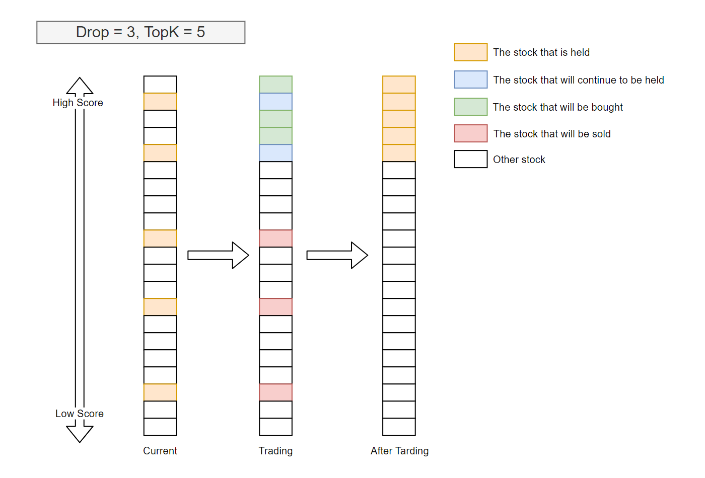
Generate the order list from the target amount
EnhancedIndexingStrategy
EnhancedIndexingStrategy Enhanced indexing combines the arts of active management and passive management, with the aim of outperforming a benchmark index (e.g., S&P 500) in terms of portfolio return while controlling the risk exposure (a.k.a. tracking error).
For more information, please refer to qlib.contrib.strategy.signal_strategy.EnhancedIndexingStrategy and qlib.contrib.strategy.optimizer.enhanced_indexing.EnhancedIndexingOptimizer.
Usage & Example
First, user can create a model to get trading signals(the variable name is pred_score in following cases).
Prediction Score
The prediction score is a pandas DataFrame. Its index is <datetime(pd.Timestamp), instrument(str)> and it must contains a score column.
A prediction sample is shown as follows.
datetime instrument score
2019-01-04 SH600000 -0.505488
2019-01-04 SZ002531 -0.320391
2019-01-04 SZ000999 0.583808
2019-01-04 SZ300569 0.819628
2019-01-04 SZ001696 -0.137140
... ...
2019-04-30 SZ000996 -1.027618
2019-04-30 SH603127 0.225677
2019-04-30 SH603126 0.462443
2019-04-30 SH603133 -0.302460
2019-04-30 SZ300760 -0.126383
Forecast Model module can make predictions, please refer to Forecast Model: Model Training & Prediction.
Normally, the prediction score is the output of the models. But some models are learned from a label with a different scale. So the scale of the prediction score may be different from your expectation(e.g. the return of instruments).
Qlib didn’t add a step to scale the prediction score to a unified scale due to the following reasons. - Because not every trading strategy cares about the scale(e.g. TopkDropoutStrategy only cares about the order). So the strategy is responsible for rescaling the prediction score(e.g. some portfolio-optimization-based strategies may require a meaningful scale). - The model has the flexibility to define the target, loss, and data processing. So we don’t think there is a silver bullet to rescale it back directly barely based on the model’s outputs. If you want to scale it back to some meaningful values(e.g. stock returns.), an intuitive solution is to create a regression model for the model’s recent outputs and your recent target values.
Running backtest
In most cases, users could backtest their portfolio management strategy with
backtest_daily.from pprint import pprint import qlib import pandas as pd from qlib.utils.time import Freq from qlib.utils import flatten_dict from qlib.contrib.evaluate import backtest_daily from qlib.contrib.evaluate import risk_analysis from qlib.contrib.strategy import TopkDropoutStrategy # init qlib qlib.init(provider_uri=<qlib data dir>) CSI300_BENCH = "SH000300" STRATEGY_CONFIG = { "topk": 50, "n_drop": 5, # pred_score, pd.Series "signal": pred_score, } strategy_obj = TopkDropoutStrategy(**STRATEGY_CONFIG) report_normal, positions_normal = backtest_daily( start_time="2017-01-01", end_time="2020-08-01", strategy=strategy_obj ) analysis = dict() # default frequency will be daily (i.e. "day") analysis["excess_return_without_cost"] = risk_analysis(report_normal["return"] - report_normal["bench"]) analysis["excess_return_with_cost"] = risk_analysis(report_normal["return"] - report_normal["bench"] - report_normal["cost"]) analysis_df = pd.concat(analysis) # type: pd.DataFrame pprint(analysis_df)
If users would like to control their strategies in a more detailed(e.g. users have a more advanced version of executor), user could follow this example.
from pprint import pprint import qlib import pandas as pd from qlib.utils.time import Freq from qlib.utils import flatten_dict from qlib.backtest import backtest, executor from qlib.contrib.evaluate import risk_analysis from qlib.contrib.strategy import TopkDropoutStrategy # init qlib qlib.init(provider_uri=<qlib data dir>) CSI300_BENCH = "SH000300" # Benchmark is for calculating the excess return of your strategy. # Its data format will be like **ONE normal instrument**. # For example, you can query its data with the code below # `D.features(["SH000300"], ["$close"], start_time='2010-01-01', end_time='2017-12-31', freq='day')` # It is different from the argument `market`, which indicates a universe of stocks (e.g. **A SET** of stocks like csi300) # For example, you can query all data from a stock market with the code below. # ` D.features(D.instruments(market='csi300'), ["$close"], start_time='2010-01-01', end_time='2017-12-31', freq='day')` FREQ = "day" STRATEGY_CONFIG = { "topk": 50, "n_drop": 5, # pred_score, pd.Series "signal": pred_score, } EXECUTOR_CONFIG = { "time_per_step": "day", "generate_portfolio_metrics": True, } backtest_config = { "start_time": "2017-01-01", "end_time": "2020-08-01", "account": 100000000, "benchmark": CSI300_BENCH, "exchange_kwargs": { "freq": FREQ, "limit_threshold": 0.095, "deal_price": "close", "open_cost": 0.0005, "close_cost": 0.0015, "min_cost": 5, }, } # strategy object strategy_obj = TopkDropoutStrategy(**STRATEGY_CONFIG) # executor object executor_obj = executor.SimulatorExecutor(**EXECUTOR_CONFIG) # backtest portfolio_metric_dict, indicator_dict = backtest(executor=executor_obj, strategy=strategy_obj, **backtest_config) analysis_freq = "{0}{1}".format(*Freq.parse(FREQ)) # backtest info report_normal, positions_normal = portfolio_metric_dict.get(analysis_freq) # analysis analysis = dict() analysis["excess_return_without_cost"] = risk_analysis( report_normal["return"] - report_normal["bench"], freq=analysis_freq ) analysis["excess_return_with_cost"] = risk_analysis( report_normal["return"] - report_normal["bench"] - report_normal["cost"], freq=analysis_freq ) analysis_df = pd.concat(analysis) # type: pd.DataFrame # log metrics analysis_dict = flatten_dict(analysis_df["risk"].unstack().T.to_dict()) # print out results pprint(f"The following are analysis results of benchmark return({analysis_freq}).") pprint(risk_analysis(report_normal["bench"], freq=analysis_freq)) pprint(f"The following are analysis results of the excess return without cost({analysis_freq}).") pprint(analysis["excess_return_without_cost"]) pprint(f"The following are analysis results of the excess return with cost({analysis_freq}).") pprint(analysis["excess_return_with_cost"])
Result
The backtest results are in the following form:
risk
excess_return_without_cost mean 0.000605
std 0.005481
annualized_return 0.152373
information_ratio 1.751319
max_drawdown -0.059055
excess_return_with_cost mean 0.000410
std 0.005478
annualized_return 0.103265
information_ratio 1.187411
max_drawdown -0.075024
- excess_return_without_cost
- mean
Mean value of the CAR (cumulative abnormal return) without cost
- std
The Standard Deviation of CAR (cumulative abnormal return) without cost.
- annualized_return
The Annualized Rate of CAR (cumulative abnormal return) without cost.
- information_ratio
The Information Ratio without cost. please refer to Information Ratio – IR.
- max_drawdown
The Maximum Drawdown of CAR (cumulative abnormal return) without cost, please refer to Maximum Drawdown (MDD).
- excess_return_with_cost
- mean
Mean value of the CAR (cumulative abnormal return) series with cost
- std
The Standard Deviation of CAR (cumulative abnormal return) series with cost.
- annualized_return
The Annualized Rate of CAR (cumulative abnormal return) with cost.
- information_ratio
The Information Ratio with cost. please refer to Information Ratio – IR.
- max_drawdown
The Maximum Drawdown of CAR (cumulative abnormal return) with cost, please refer to Maximum Drawdown (MDD).
Reference
To know more about the prediction score pred_score output by Forecast Model, please refer to Forecast Model: Model Training & Prediction.
Design of Nested Decision Execution Framework for High-Frequency Trading
Introduction
Daily trading (e.g. portfolio management) and intraday trading (e.g. orders execution) are two hot topics in Quant investment and are usually studied separately.
To get the join trading performance of daily and intraday trading, they must interact with each other and run backtest jointly. In order to support the joint backtest strategies at multiple levels, a corresponding framework is required. None of the publicly available high-frequency trading frameworks considers multi-level joint trading, which makes the backtesting aforementioned inaccurate.
Besides backtesting, the optimization of strategies from different levels is not standalone and can be affected by each other. For example, the best portfolio management strategy may change with the performance of order executions(e.g. a portfolio with higher turnover may become a better choice when we improve the order execution strategies). To achieve overall good performance, it is necessary to consider the interaction of strategies at a different levels.
Therefore, building a new framework for trading on multiple levels becomes necessary to solve the various problems mentioned above, for which we designed a nested decision execution framework that considers the interaction of strategies.
The design of the framework is shown in the yellow part in the middle of the figure above. Each level consists of Trading Agent and Execution Env. Trading Agent has its own data processing module (Information Extractor), forecasting module (Forecast Model) and decision generator (Decision Generator). The trading algorithm generates the decisions by the Decision Generator based on the forecast signals output by the Forecast Module, and the decisions generated by the trading algorithm are passed to the Execution Env, which returns the execution results.
The frequency of the trading algorithm, decision content and execution environment can be customized by users (e.g. intraday trading, daily-frequency trading, weekly-frequency trading), and the execution environment can be nested with finer-grained trading algorithm and execution environment inside (i.e. sub-workflow in the figure, e.g. daily-frequency orders can be turned into finer-grained decisions by splitting orders within the day). The flexibility of the nested decision execution framework makes it easy for users to explore the effects of combining different levels of trading strategies and break down the optimization barriers between different levels of the trading algorithm.
The optimization for the nested decision execution framework can be implemented with the support of QlibRL. To know more about how to use the QlibRL, go to API Reference: RL API.
Example
An example of a nested decision execution framework for high-frequency can be found here.
Besides, the above examples, here are some other related works about high-frequency trading in Qlib.
Meta Controller: Meta-Task & Meta-Dataset & Meta-Model
Introduction
Meta Controller provides guidance to Forecast Model, which aims to learn regular patterns among a series of forecasting tasks and use learned patterns to guide forthcoming forecasting tasks. Users can implement their own meta-model instance based on Meta Controller module.
Meta Task
A Meta Task instance is the basic element in the meta-learning framework. It saves the data that can be used for the Meta Model. Multiple Meta Task instances may share the same Data Handler, controlled by Meta Dataset. Users should use prepare_task_data() to obtain the data that can be directly fed into the Meta Model.
- class qlib.model.meta.task.MetaTask(task: dict, meta_info: object, mode: str = 'full')
A single meta-task, a meta-dataset contains a list of them. It serves as a component as in MetaDatasetDS
The data processing is different
the processed input may be different between training and testing
When training, the X, y, X_test, y_test in training tasks are necessary (# PROC_MODE_FULL #) but not necessary in test tasks. (# PROC_MODE_TEST #)
When the meta model can be transferred into other dataset, only meta_info is necessary (# PROC_MODE_TRANSFER #)
- __init__(task: dict, meta_info: object, mode: str = 'full')
The __init__ func is responsible for
store the task
store the origin input data for
process the input data for meta data
- Parameters:
task (dict) – the task to be enhanced by meta model
meta_info (object) – the input for meta model
- get_meta_input() object
Return the processed meta_info
Meta Dataset
Meta Dataset controls the meta-information generating process. It is on the duty of providing data for training the Meta Model. Users should use prepare_tasks to retrieve a list of Meta Task instances.
- class qlib.model.meta.dataset.MetaTaskDataset(segments: Dict[str, Tuple] | float, *args, **kwargs)
A dataset fetching the data in a meta-level.
A Meta Dataset is responsible for
input tasks(e.g. Qlib tasks) and prepare meta tasks
meta task contains more information than normal tasks (e.g. input data for meta model)
The learnt pattern could transfer to other meta dataset. The following cases should be supported
A meta-model trained on meta-dataset A and then applied to meta-dataset B
Some pattern are shared between meta-dataset A and B, so meta-input on meta-dataset A are used when meta model are applied on meta-dataset-B
- __init__(segments: Dict[str, Tuple] | float, *args, **kwargs)
The meta-dataset maintains a list of meta-tasks when it is initialized.
The segments indicates the way to divide the data
The duty of the __init__ function of MetaTaskDataset - initialize the tasks
- prepare_tasks(segments: List[str] | str, *args, **kwargs) List[MetaTask]
Prepare the data in each meta-task and ready for training.
The following code example shows how to retrieve a list of meta-tasks from the meta_dataset:
# get the train segment and the test segment, both of them are lists train_meta_tasks, test_meta_tasks = meta_dataset.prepare_tasks(["train", "test"])
- Parameters:
segments (Union[List[Text], Tuple[Text], Text]) – the info to select data
- Returns:
A list of the prepared data of each meta-task for training the meta-model. For multiple segments [seg1, seg2, … , segN], the returned list will be [[tasks in seg1], [tasks in seg2], … , [tasks in segN]]. Each task is a meta task
- Return type:
list
Meta Model
General Meta Model
Meta Model instance is the part that controls the workflow. The usage of the Meta Model includes: 1. Users train their Meta Model with the fit function. 2. The Meta Model instance guides the workflow by giving useful information via the inference function.
- class qlib.model.meta.model.MetaModel
The meta-model guiding the model learning.
The word Guiding can be categorized into two types based on the stage of model learning - The definition of learning tasks: Please refer to docs of MetaTaskModel - Controlling the learning process of models: Please refer to the docs of MetaGuideModel
- abstract fit(*args, **kwargs)
The training process of the meta-model.
- abstract inference(*args, **kwargs) object
The inference process of the meta-model.
- Returns:
Some information to guide the model learning
- Return type:
object
Meta Task Model
This type of meta-model may interact with task definitions directly. Then, the Meta Task Model is the class for them to inherit from. They guide the base tasks by modifying the base task definitions. The function prepare_tasks can be used to obtain the modified base task definitions.
- class qlib.model.meta.model.MetaTaskModel
This type of meta-model deals with base task definitions. The meta-model creates tasks for training new base forecasting models after it is trained. prepare_tasks directly modifies the task definitions.
- fit(meta_dataset: MetaTaskDataset)
The MetaTaskModel is expected to get prepared MetaTask from meta_dataset. And then it will learn knowledge from the meta tasks
- inference(meta_dataset: MetaTaskDataset) List[dict]
MetaTaskModel will make inference on the meta_dataset The MetaTaskModel is expected to get prepared MetaTask from meta_dataset. Then it will create modified task with Qlib format which can be executed by Qlib trainer.
- Returns:
A list of modified task definitions.
- Return type:
List[dict]
Meta Guide Model
This type of meta-model participates in the training process of the base forecasting model. The meta-model may guide the base forecasting models during their training to improve their performances.
- class qlib.model.meta.model.MetaGuideModel
This type of meta-model aims to guide the training process of the base model. The meta-model interacts with the base forecasting models during their training process.
- abstract fit(*args, **kwargs)
The training process of the meta-model.
- abstract inference(*args, **kwargs)
The inference process of the meta-model.
- Returns:
Some information to guide the model learning
- Return type:
object
Example
Qlib provides an implementation of Meta Model module, DDG-DA,
which adapts to the market dynamics.
DDG-DA includes four steps:
Calculate meta-information and encapsulate it into
Meta Taskinstances. All the meta-tasks form aMeta Datasetinstance.Train
DDG-DAbased on the training data of the meta-dataset.Do the inference of the
DDG-DAto get guide information.Apply guide information to the forecasting models to improve their performances.
The above example can be found in examples/benchmarks_dynamic/DDG-DA/workflow.py.
Qlib Recorder: Experiment Management
Introduction
Qlib contains an experiment management system named QlibRecorder, which is designed to help users handle experiment and analyse results in an efficient way.
There are three components of the system:
- ExperimentManager
a class that manages experiments.
- Experiment
a class of experiment, and each instance of it is responsible for a single experiment.
- Recorder
a class of recorder, and each instance of it is responsible for a single run.
Here is a general view of the structure of the system:
ExperimentManager
- Experiment 1
- Recorder 1
- Recorder 2
- ...
- Experiment 2
- Recorder 1
- Recorder 2
- ...
- ...
This experiment management system defines a set of interface and provided a concrete implementation MLflowExpManager, which is based on the machine learning platform: MLFlow (link).
If users set the implementation of ExpManager to be MLflowExpManager, they can use the command mlflow ui to visualize and check the experiment results. For more information, please refer to the related documents here.
Qlib Recorder
QlibRecorder provides a high level API for users to use the experiment management system. The interfaces are wrapped in the variable R in Qlib, and users can directly use R to interact with the system. The following command shows how to import R in Python:
from qlib.workflow import R
QlibRecorder includes several common API for managing experiments and recorders within a workflow. For more available APIs, please refer to the following section about Experiment Manager, Experiment and Recorder.
Here are the available interfaces of QlibRecorder:
- class qlib.workflow.__init__.QlibRecorder(exp_manager: ExpManager)
A global system that helps to manage the experiments.
- __init__(exp_manager: ExpManager)
- start(*, experiment_id: str | None = None, experiment_name: str | None = None, recorder_id: str | None = None, recorder_name: str | None = None, uri: str | None = None, resume: bool = False)
Method to start an experiment. This method can only be called within a Python’s with statement. Here is the example code:
# start new experiment and recorder with R.start(experiment_name='test', recorder_name='recorder_1'): model.fit(dataset) R.log... ... # further operations # resume previous experiment and recorder with R.start(experiment_name='test', recorder_name='recorder_1', resume=True): # if users want to resume recorder, they have to specify the exact same name for experiment and recorder. ... # further operations
- Parameters:
experiment_id (str) – id of the experiment one wants to start.
experiment_name (str) – name of the experiment one wants to start.
recorder_id (str) – id of the recorder under the experiment one wants to start.
recorder_name (str) – name of the recorder under the experiment one wants to start.
uri (str) – The tracking uri of the experiment, where all the artifacts/metrics etc. will be stored. The default uri is set in the qlib.config. Note that this uri argument will not change the one defined in the config file. Therefore, the next time when users call this function in the same experiment, they have to also specify this argument with the same value. Otherwise, inconsistent uri may occur.
resume (bool) – whether to resume the specific recorder with given name under the given experiment.
- start_exp(*, experiment_id=None, experiment_name=None, recorder_id=None, recorder_name=None, uri=None, resume=False)
Lower level method for starting an experiment. When use this method, one should end the experiment manually and the status of the recorder may not be handled properly. Here is the example code:
R.start_exp(experiment_name='test', recorder_name='recorder_1') ... # further operations R.end_exp('FINISHED') or R.end_exp(Recorder.STATUS_S)
- Parameters:
experiment_id (str) – id of the experiment one wants to start.
experiment_name (str) – the name of the experiment to be started
recorder_id (str) – id of the recorder under the experiment one wants to start.
recorder_name (str) – name of the recorder under the experiment one wants to start.
uri (str) – the tracking uri of the experiment, where all the artifacts/metrics etc. will be stored. The default uri are set in the qlib.config.
resume (bool) – whether to resume the specific recorder with given name under the given experiment.
- Return type:
An experiment instance being started.
- end_exp(recorder_status='FINISHED')
Method for ending an experiment manually. It will end the current active experiment, as well as its active recorder with the specified status type. Here is the example code of the method:
R.start_exp(experiment_name='test') ... # further operations R.end_exp('FINISHED') or R.end_exp(Recorder.STATUS_S)
- Parameters:
status (str) – The status of a recorder, which can be SCHEDULED, RUNNING, FINISHED, FAILED.
- search_records(experiment_ids, **kwargs)
Get a pandas DataFrame of records that fit the search criteria.
The arguments of this function are not set to be rigid, and they will be different with different implementation of
ExpManagerinQlib.Qlibnow provides an implementation ofExpManagerwith mlflow, and here is the example code of the method with theMLflowExpManager:R.log_metrics(m=2.50, step=0) records = R.search_records([experiment_id], order_by=["metrics.m DESC"])
- Parameters:
experiment_ids (list) – list of experiment IDs.
filter_string (str) – filter query string, defaults to searching all runs.
run_view_type (int) – one of enum values ACTIVE_ONLY, DELETED_ONLY, or ALL (e.g. in mlflow.entities.ViewType).
max_results (int) – the maximum number of runs to put in the dataframe.
order_by (list) – list of columns to order by (e.g., “metrics.rmse”).
- Returns:
A pandas.DataFrame of records, where each metric, parameter, and tag
are expanded into their own columns named metrics., params.*, and tags.**
respectively. For records that don’t have a particular metric, parameter, or tag, their
value will be (NumPy) Nan, None, or None respectively.
- list_experiments()
Method for listing all the existing experiments (except for those being deleted.)
exps = R.list_experiments()
- Return type:
A dictionary (name -> experiment) of experiments information that being stored.
- list_recorders(experiment_id=None, experiment_name=None)
Method for listing all the recorders of experiment with given id or name.
If user doesn’t provide the id or name of the experiment, this method will try to retrieve the default experiment and list all the recorders of the default experiment. If the default experiment doesn’t exist, the method will first create the default experiment, and then create a new recorder under it. (More information about the default experiment can be found here).
Here is the example code:
recorders = R.list_recorders(experiment_name='test')
- Parameters:
experiment_id (str) – id of the experiment.
experiment_name (str) – name of the experiment.
- Return type:
A dictionary (id -> recorder) of recorder information that being stored.
- get_exp(*, experiment_id=None, experiment_name=None, create: bool = True, start: bool = False) Experiment
Method for retrieving an experiment with given id or name. Once the create argument is set to True, if no valid experiment is found, this method will create one for you. Otherwise, it will only retrieve a specific experiment or raise an Error.
If ‘create’ is True:
If active experiment exists:
no id or name specified, return the active experiment.
if id or name is specified, return the specified experiment. If no such exp found, create a new experiment with given id or name.
If active experiment not exists:
no id or name specified, create a default experiment, and the experiment is set to be active.
if id or name is specified, return the specified experiment. If no such exp found, create a new experiment with given name or the default experiment.
Else If ‘create’ is False:
If active experiment exists:
no id or name specified, return the active experiment.
if id or name is specified, return the specified experiment. If no such exp found, raise Error.
If active experiment not exists:
no id or name specified. If the default experiment exists, return it, otherwise, raise Error.
if id or name is specified, return the specified experiment. If no such exp found, raise Error.
Here are some use cases:
# Case 1 with R.start('test'): exp = R.get_exp() recorders = exp.list_recorders() # Case 2 with R.start('test'): exp = R.get_exp(experiment_name='test1') # Case 3 exp = R.get_exp() -> a default experiment. # Case 4 exp = R.get_exp(experiment_name='test') # Case 5 exp = R.get_exp(create=False) -> the default experiment if exists.
- Parameters:
experiment_id (str) – id of the experiment.
experiment_name (str) – name of the experiment.
create (boolean) – an argument determines whether the method will automatically create a new experiment according to user’s specification if the experiment hasn’t been created before.
start (bool) – when start is True, if the experiment has not started(not activated), it will start It is designed for R.log_params to auto start experiments
- Return type:
An experiment instance with given id or name.
- delete_exp(experiment_id=None, experiment_name=None)
Method for deleting the experiment with given id or name. At least one of id or name must be given, otherwise, error will occur.
Here is the example code:
R.delete_exp(experiment_name='test')
- Parameters:
experiment_id (str) – id of the experiment.
experiment_name (str) – name of the experiment.
- get_uri()
Method for retrieving the uri of current experiment manager.
Here is the example code:
uri = R.get_uri()
- Return type:
The uri of current experiment manager.
- set_uri(uri: str | None)
Method to reset the default uri of current experiment manager.
NOTE:
When the uri is refer to a file path, please using the absolute path instead of strings like “~/mlruns/” The backend don’t support strings like this.
- uri_context(uri: str)
Temporarily set the exp_manager’s default_uri to uri
NOTE: - Please refer to the NOTE in the set_uri
- Parameters:
uri (Text) – the temporal uri
- get_recorder(*, recorder_id=None, recorder_name=None, experiment_id=None, experiment_name=None) Recorder
Method for retrieving a recorder.
If active recorder exists:
no id or name specified, return the active recorder.
if id or name is specified, return the specified recorder.
If active recorder not exists:
no id or name specified, raise Error.
if id or name is specified, and the corresponding experiment_name must be given, return the specified recorder. Otherwise, raise Error.
The recorder can be used for further process such as save_object, load_object, log_params, log_metrics, etc.
Here are some use cases:
# Case 1 with R.start(experiment_name='test'): recorder = R.get_recorder() # Case 2 with R.start(experiment_name='test'): recorder = R.get_recorder(recorder_id='2e7a4efd66574fa49039e00ffaefa99d') # Case 3 recorder = R.get_recorder() -> Error # Case 4 recorder = R.get_recorder(recorder_id='2e7a4efd66574fa49039e00ffaefa99d') -> Error # Case 5 recorder = R.get_recorder(recorder_id='2e7a4efd66574fa49039e00ffaefa99d', experiment_name='test')
Here are some things users may concern - Q: What recorder will it return if multiple recorder meets the query (e.g. query with experiment_name) - A: If mlflow backend is used, then the recorder with the latest start_time will be returned. Because MLflow’s search_runs function guarantee it
- Parameters:
recorder_id (str) – id of the recorder.
recorder_name (str) – name of the recorder.
experiment_name (str) – name of the experiment.
- Return type:
A recorder instance.
- delete_recorder(recorder_id=None, recorder_name=None)
Method for deleting the recorders with given id or name. At least one of id or name must be given, otherwise, error will occur.
Here is the example code:
R.delete_recorder(recorder_id='2e7a4efd66574fa49039e00ffaefa99d')
- Parameters:
recorder_id (str) – id of the experiment.
recorder_name (str) – name of the experiment.
- save_objects(local_path=None, artifact_path=None, **kwargs: Dict[str, Any])
Method for saving objects as artifacts in the experiment to the uri. It supports either saving from a local file/directory, or directly saving objects. User can use valid python’s keywords arguments to specify the object to be saved as well as its name (name: value).
In summary, this API is designs for saving objects to the experiments management backend path, 1. Qlib provide two methods to specify objects - Passing in the object directly by passing with **kwargs (e.g. R.save_objects(trained_model=model)) - Passing in the local path to the object, i.e. local_path parameter. 2. artifact_path represents the the experiments management backend path
If active recorder exists: it will save the objects through the active recorder.
If active recorder not exists: the system will create a default experiment, and a new recorder and save objects under it.
Note
If one wants to save objects with a specific recorder. It is recommended to first get the specific recorder through get_recorder API and use the recorder the save objects. The supported arguments are the same as this method.
Here are some use cases:
# Case 1 with R.start(experiment_name='test'): pred = model.predict(dataset) R.save_objects(**{"pred.pkl": pred}, artifact_path='prediction') rid = R.get_recorder().id ... R.get_recorder(recorder_id=rid).load_object("prediction/pred.pkl") # after saving objects, you can load the previous object with this api # Case 2 with R.start(experiment_name='test'): R.save_objects(local_path='results/pred.pkl', artifact_path="prediction") rid = R.get_recorder().id ... R.get_recorder(recorder_id=rid).load_object("prediction/pred.pkl") # after saving objects, you can load the previous object with this api
- Parameters:
local_path (str) – if provided, them save the file or directory to the artifact URI.
artifact_path (str) – the relative path for the artifact to be stored in the URI.
**kwargs (Dict[Text, Any]) – the object to be saved. For example, {“pred.pkl”: pred}
- load_object(name: str)
Method for loading an object from artifacts in the experiment in the uri.
- log_params(**kwargs)
Method for logging parameters during an experiment. In addition to using
R, one can also log to a specific recorder after getting it with get_recorder API.If active recorder exists: it will log parameters through the active recorder.
If active recorder not exists: the system will create a default experiment as well as a new recorder, and log parameters under it.
Here are some use cases:
# Case 1 with R.start('test'): R.log_params(learning_rate=0.01) # Case 2 R.log_params(learning_rate=0.01)
- Parameters:
argument (keyword) – name1=value1, name2=value2, …
- log_metrics(step=None, **kwargs)
Method for logging metrics during an experiment. In addition to using
R, one can also log to a specific recorder after getting it with get_recorder API.If active recorder exists: it will log metrics through the active recorder.
If active recorder not exists: the system will create a default experiment as well as a new recorder, and log metrics under it.
Here are some use cases:
# Case 1 with R.start('test'): R.log_metrics(train_loss=0.33, step=1) # Case 2 R.log_metrics(train_loss=0.33, step=1)
- Parameters:
argument (keyword) – name1=value1, name2=value2, …
- log_artifact(local_path: str, artifact_path: str | None = None)
Log a local file or directory as an artifact of the currently active run
If active recorder exists: it will set tags through the active recorder.
If active recorder not exists: the system will create a default experiment as well as a new recorder, and set the tags under it.
- Parameters:
local_path (str) – Path to the file to write.
artifact_path (Optional[str]) – If provided, the directory in
artifact_urito write to.
- download_artifact(path: str, dst_path: str | None = None) str
Download an artifact file or directory from a run to a local directory if applicable, and return a local path for it.
- Parameters:
path (str) – Relative source path to the desired artifact.
dst_path (Optional[str]) – Absolute path of the local filesystem destination directory to which to download the specified artifacts. This directory must already exist. If unspecified, the artifacts will either be downloaded to a new uniquely-named directory on the local filesystem.
- Returns:
Local path of desired artifact.
- Return type:
str
- set_tags(**kwargs)
Method for setting tags for a recorder. In addition to using
R, one can also set the tag to a specific recorder after getting it with get_recorder API.If active recorder exists: it will set tags through the active recorder.
If active recorder not exists: the system will create a default experiment as well as a new recorder, and set the tags under it.
Here are some use cases:
# Case 1 with R.start('test'): R.set_tags(release_version="2.2.0") # Case 2 R.set_tags(release_version="2.2.0")
- Parameters:
argument (keyword) – name1=value1, name2=value2, …
Experiment Manager
The ExpManager module in Qlib is responsible for managing different experiments. Most of the APIs of ExpManager are similar to QlibRecorder, and the most important API will be the get_exp method. User can directly refer to the documents above for some detailed information about how to use the get_exp method.
- class qlib.workflow.expm.ExpManager(uri: str, default_exp_name: str | None)
This is the ExpManager class for managing experiments. The API is designed similar to mlflow. (The link: https://mlflow.org/docs/latest/python_api/mlflow.html)
The ExpManager is expected to be a singleton (btw, we can have multiple Experiment`s with different uri. user can get different experiments from different uri, and then compare records of them). Global Config (i.e. `C) is also a singleton.
So we try to align them together. They share the same variable, which is called default uri. Please refer to ExpManager.default_uri for details of variable sharing.
When the user starts an experiment, the user may want to set the uri to a specific uri (it will override default uri during this period), and then unset the specific uri and fallback to the default uri. ExpManager._active_exp_uri is that specific uri.
- __init__(uri: str, default_exp_name: str | None)
- start_exp(*, experiment_id: str | None = None, experiment_name: str | None = None, recorder_id: str | None = None, recorder_name: str | None = None, uri: str | None = None, resume: bool = False, **kwargs) Experiment
Start an experiment. This method includes first get_or_create an experiment, and then set it to be active.
Maintaining _active_exp_uri is included in start_exp, remaining implementation should be included in _end_exp in subclass
- Parameters:
experiment_id (str) – id of the active experiment.
experiment_name (str) – name of the active experiment.
recorder_id (str) – id of the recorder to be started.
recorder_name (str) – name of the recorder to be started.
uri (str) – the current tracking URI.
resume (boolean) – whether to resume the experiment and recorder.
- Return type:
An active experiment.
- end_exp(recorder_status: str = 'SCHEDULED', **kwargs)
End an active experiment.
Maintaining _active_exp_uri is included in end_exp, remaining implementation should be included in _end_exp in subclass
- Parameters:
experiment_name (str) – name of the active experiment.
recorder_status (str) – the status of the active recorder of the experiment.
- create_exp(experiment_name: str | None = None)
Create an experiment.
- Parameters:
experiment_name (str) – the experiment name, which must be unique.
- Return type:
An experiment object.
- Raises:
ExpAlreadyExistError –
- search_records(experiment_ids=None, **kwargs)
Get a pandas DataFrame of records that fit the search criteria of the experiment. Inputs are the search criteria user want to apply.
- Returns:
A pandas.DataFrame of records, where each metric, parameter, and tag
are expanded into their own columns named metrics., params.*, and tags.**
respectively. For records that don’t have a particular metric, parameter, or tag, their
value will be (NumPy) Nan, None, or None respectively.
- get_exp(*, experiment_id=None, experiment_name=None, create: bool = True, start: bool = False)
Retrieve an experiment. This method includes getting an active experiment, and get_or_create a specific experiment.
When user specify experiment id and name, the method will try to return the specific experiment. When user does not provide recorder id or name, the method will try to return the current active experiment. The create argument determines whether the method will automatically create a new experiment according to user’s specification if the experiment hasn’t been created before.
If create is True:
If active experiment exists:
no id or name specified, return the active experiment.
if id or name is specified, return the specified experiment. If no such exp found, create a new experiment with given id or name. If start is set to be True, the experiment is set to be active.
If active experiment not exists:
no id or name specified, create a default experiment.
if id or name is specified, return the specified experiment. If no such exp found, create a new experiment with given id or name. If start is set to be True, the experiment is set to be active.
Else If create is False:
If active experiment exists:
no id or name specified, return the active experiment.
if id or name is specified, return the specified experiment. If no such exp found, raise Error.
If active experiment not exists:
no id or name specified. If the default experiment exists, return it, otherwise, raise Error.
if id or name is specified, return the specified experiment. If no such exp found, raise Error.
- Parameters:
experiment_id (str) – id of the experiment to return.
experiment_name (str) – name of the experiment to return.
create (boolean) – create the experiment it if hasn’t been created before.
start (boolean) – start the new experiment if one is created.
- Return type:
An experiment object.
- delete_exp(experiment_id=None, experiment_name=None)
Delete an experiment.
- Parameters:
experiment_id (str) – the experiment id.
experiment_name (str) – the experiment name.
- property default_uri
Get the default tracking URI from qlib.config.C
- property uri
Get the default tracking URI or current URI.
- Return type:
The tracking URI string.
- list_experiments()
List all the existing experiments.
- Return type:
A dictionary (name -> experiment) of experiments information that being stored.
For other interfaces such as create_exp, delete_exp, please refer to Experiment Manager API.
Experiment
The Experiment class is solely responsible for a single experiment, and it will handle any operations that are related to an experiment. Basic methods such as start, end an experiment are included. Besides, methods related to recorders are also available: such methods include get_recorder and list_recorders.
- class qlib.workflow.exp.Experiment(id, name)
This is the Experiment class for each experiment being run. The API is designed similar to mlflow. (The link: https://mlflow.org/docs/latest/python_api/mlflow.html)
- __init__(id, name)
- start(*, recorder_id=None, recorder_name=None, resume=False)
Start the experiment and set it to be active. This method will also start a new recorder.
- Parameters:
recorder_id (str) – the id of the recorder to be created.
recorder_name (str) – the name of the recorder to be created.
resume (bool) – whether to resume the first recorder
- Return type:
An active recorder.
- end(recorder_status='SCHEDULED')
End the experiment.
- Parameters:
recorder_status (str) – the status the recorder to be set with when ending (SCHEDULED, RUNNING, FINISHED, FAILED).
- create_recorder(recorder_name=None)
Create a recorder for each experiment.
- Parameters:
recorder_name (str) – the name of the recorder to be created.
- Return type:
A recorder object.
- search_records(**kwargs)
Get a pandas DataFrame of records that fit the search criteria of the experiment. Inputs are the search criteria user want to apply.
- Returns:
A pandas.DataFrame of records, where each metric, parameter, and tag
are expanded into their own columns named metrics., params.*, and tags.**
respectively. For records that don’t have a particular metric, parameter, or tag, their
value will be (NumPy) Nan, None, or None respectively.
- delete_recorder(recorder_id)
Create a recorder for each experiment.
- Parameters:
recorder_id (str) – the id of the recorder to be deleted.
- get_recorder(recorder_id=None, recorder_name=None, create: bool = True, start: bool = False) Recorder
Retrieve a Recorder for user. When user specify recorder id and name, the method will try to return the specific recorder. When user does not provide recorder id or name, the method will try to return the current active recorder. The create argument determines whether the method will automatically create a new recorder according to user’s specification if the recorder hasn’t been created before.
If create is True:
If active recorder exists:
no id or name specified, return the active recorder.
if id or name is specified, return the specified recorder. If no such exp found, create a new recorder with given id or name. If start is set to be True, the recorder is set to be active.
If active recorder not exists:
no id or name specified, create a new recorder.
if id or name is specified, return the specified experiment. If no such exp found, create a new recorder with given id or name. If start is set to be True, the recorder is set to be active.
Else If create is False:
If active recorder exists:
no id or name specified, return the active recorder.
if id or name is specified, return the specified recorder. If no such exp found, raise Error.
If active recorder not exists:
no id or name specified, raise Error.
if id or name is specified, return the specified recorder. If no such exp found, raise Error.
- Parameters:
recorder_id (str) – the id of the recorder to be deleted.
recorder_name (str) – the name of the recorder to be deleted.
create (boolean) – create the recorder if it hasn’t been created before.
start (boolean) – start the new recorder if one is created.
- Return type:
A recorder object.
- list_recorders(rtype: Literal['dict', 'list'] = 'dict', **flt_kwargs) List[Recorder] | Dict[str, Recorder]
List all the existing recorders of this experiment. Please first get the experiment instance before calling this method. If user want to use the method R.list_recorders(), please refer to the related API document in QlibRecorder.
- flt_kwargsdict
filter recorders by conditions e.g. list_recorders(status=Recorder.STATUS_FI)
- Returns:
- if rtype == “dict”:
A dictionary (id -> recorder) of recorder information that being stored.
- elif rtype == “list”:
A list of Recorder.
- Return type:
The return type depends on rtype
For other interfaces such as search_records, delete_recorder, please refer to Experiment API.
Qlib also provides a default Experiment, which will be created and used under certain situations when users use the APIs such as log_metrics or get_exp. If the default Experiment is used, there will be related logged information when running Qlib. Users are able to change the name of the default Experiment in the config file of Qlib or during Qlib’s initialization, which is set to be ‘Experiment’.
Recorder
The Recorder class is responsible for a single recorder. It will handle some detailed operations such as log_metrics, log_params of a single run. It is designed to help user to easily track results and things being generated during a run.
Here are some important APIs that are not included in the QlibRecorder:
- class qlib.workflow.recorder.Recorder(experiment_id, name)
This is the Recorder class for logging the experiments. The API is designed similar to mlflow. (The link: https://mlflow.org/docs/latest/python_api/mlflow.html)
The status of the recorder can be SCHEDULED, RUNNING, FINISHED, FAILED.
- __init__(experiment_id, name)
- save_objects(local_path=None, artifact_path=None, **kwargs)
Save objects such as prediction file or model checkpoints to the artifact URI. User can save object through keywords arguments (name:value).
Please refer to the docs of qlib.workflow:R.save_objects
- Parameters:
local_path (str) – if provided, them save the file or directory to the artifact URI.
artifact_path=None (str) – the relative path for the artifact to be stored in the URI.
- load_object(name)
Load objects such as prediction file or model checkpoints.
- Parameters:
name (str) – name of the file to be loaded.
- Return type:
The saved object.
- start_run()
Start running or resuming the Recorder. The return value can be used as a context manager within a with block; otherwise, you must call end_run() to terminate the current run. (See ActiveRun class in mlflow)
- Return type:
An active running object (e.g. mlflow.ActiveRun object).
- end_run()
End an active Recorder.
- log_params(**kwargs)
Log a batch of params for the current run.
- Parameters:
arguments (keyword) – key, value pair to be logged as parameters.
- log_metrics(step=None, **kwargs)
Log multiple metrics for the current run.
- Parameters:
arguments (keyword) – key, value pair to be logged as metrics.
- log_artifact(local_path: str, artifact_path: str | None = None)
Log a local file or directory as an artifact of the currently active run.
- Parameters:
local_path (str) – Path to the file to write.
artifact_path (Optional[str]) – If provided, the directory in
artifact_urito write to.
- set_tags(**kwargs)
Log a batch of tags for the current run.
- Parameters:
arguments (keyword) – key, value pair to be logged as tags.
- delete_tags(*keys)
Delete some tags from a run.
- Parameters:
keys (series of strs of the keys) – all the name of the tag to be deleted.
- list_artifacts(artifact_path: str | None = None)
List all the artifacts of a recorder.
- Parameters:
artifact_path (str) – the relative path for the artifact to be stored in the URI.
- Return type:
A list of artifacts information (name, path, etc.) that being stored.
- download_artifact(path: str, dst_path: str | None = None) str
Download an artifact file or directory from a run to a local directory if applicable, and return a local path for it.
- Parameters:
path (str) – Relative source path to the desired artifact.
dst_path (Optional[str]) – Absolute path of the local filesystem destination directory to which to download the specified artifacts. This directory must already exist. If unspecified, the artifacts will either be downloaded to a new uniquely-named directory on the local filesystem.
- Returns:
Local path of desired artifact.
- Return type:
str
- list_metrics()
List all the metrics of a recorder.
- Return type:
A dictionary of metrics that being stored.
- list_params()
List all the params of a recorder.
- Return type:
A dictionary of params that being stored.
- list_tags()
List all the tags of a recorder.
- Return type:
A dictionary of tags that being stored.
For other interfaces such as save_objects, load_object, please refer to Recorder API.
Record Template
The RecordTemp class is a class that enables generate experiment results such as IC and backtest in a certain format. We have provided three different Record Template class:
SignalRecord: This class generates the prediction results of the model.SigAnaRecord: This class generates the IC, ICIR, Rank IC and Rank ICIR of the model.
Here is a simple example of what is done in SigAnaRecord, which users can refer to if they want to calculate IC, Rank IC, Long-Short Return with their own prediction and label.
from qlib.contrib.eva.alpha import calc_ic, calc_long_short_return
ic, ric = calc_ic(pred.iloc[:, 0], label.iloc[:, 0])
long_short_r, long_avg_r = calc_long_short_return(pred.iloc[:, 0], label.iloc[:, 0])
PortAnaRecord: This class generates the results of backtest. The detailed information about backtest as well as the available strategy, users can refer to Strategy and Backtest.
Here is a simple example of what is done in PortAnaRecord, which users can refer to if they want to do backtest based on their own prediction and label.
from qlib.contrib.strategy.strategy import TopkDropoutStrategy
from qlib.contrib.evaluate import (
backtest as normal_backtest,
risk_analysis,
)
# backtest
STRATEGY_CONFIG = {
"topk": 50,
"n_drop": 5,
}
BACKTEST_CONFIG = {
"limit_threshold": 0.095,
"account": 100000000,
"benchmark": BENCHMARK,
"deal_price": "close",
"open_cost": 0.0005,
"close_cost": 0.0015,
"min_cost": 5,
}
strategy = TopkDropoutStrategy(**STRATEGY_CONFIG)
report_normal, positions_normal = normal_backtest(pred_score, strategy=strategy, **BACKTEST_CONFIG)
# analysis
analysis = dict()
analysis["excess_return_without_cost"] = risk_analysis(report_normal["return"] - report_normal["bench"])
analysis["excess_return_with_cost"] = risk_analysis(report_normal["return"] - report_normal["bench"] - report_normal["cost"])
analysis_df = pd.concat(analysis) # type: pd.DataFrame
print(analysis_df)
For more information about the APIs, please refer to Record Template API.
Known Limitations
The Python objects are saved based on pickle, which may results in issues when the environment dumping objects and loading objects are different.
Analysis: Evaluation & Results Analysis
Introduction
Analysis is designed to show the graphical reports of Intraday Trading , which helps users to evaluate and analyse investment portfolios visually. The following are some graphics to view:
- analysis_position
report_graph
score_ic_graph
cumulative_return_graph
risk_analysis_graph
rank_label_graph
- analysis_model
model_performance_graph
All of the accumulated profit metrics(e.g. return, max drawdown) in Qlib are calculated by summation. This avoids the metrics or the plots being skewed exponentially over time.
Graphical Reports
Users can run the following code to get all supported reports.
>> import qlib.contrib.report as qcr
>> print(qcr.GRAPH_NAME_LIST)
['analysis_position.report_graph', 'analysis_position.score_ic_graph', 'analysis_position.cumulative_return_graph', 'analysis_position.risk_analysis_graph', 'analysis_position.rank_label_graph', 'analysis_model.model_performance_graph']
Note
For more details, please refer to the function document: similar to help(qcr.analysis_position.report_graph)
Usage & Example
Usage of analysis_position.report
API
Graphical Result
Note
Axis X: Trading day
- Axis Y:
- cum bench
Cumulative returns series of benchmark
- cum return wo cost
Cumulative returns series of portfolio without cost
- cum return w cost
Cumulative returns series of portfolio with cost
- return wo mdd
Maximum drawdown series of cumulative return without cost
- return w cost mdd:
Maximum drawdown series of cumulative return with cost
- cum ex return wo cost
The CAR (cumulative abnormal return) series of the portfolio compared to the benchmark without cost.
- cum ex return w cost
The CAR (cumulative abnormal return) series of the portfolio compared to the benchmark with cost.
- turnover
Turnover rate series
- cum ex return wo cost mdd
Drawdown series of CAR (cumulative abnormal return) without cost
- cum ex return w cost mdd
Drawdown series of CAR (cumulative abnormal return) with cost
The shaded part above: Maximum drawdown corresponding to cum return wo cost
The shaded part below: Maximum drawdown corresponding to cum ex return wo cost
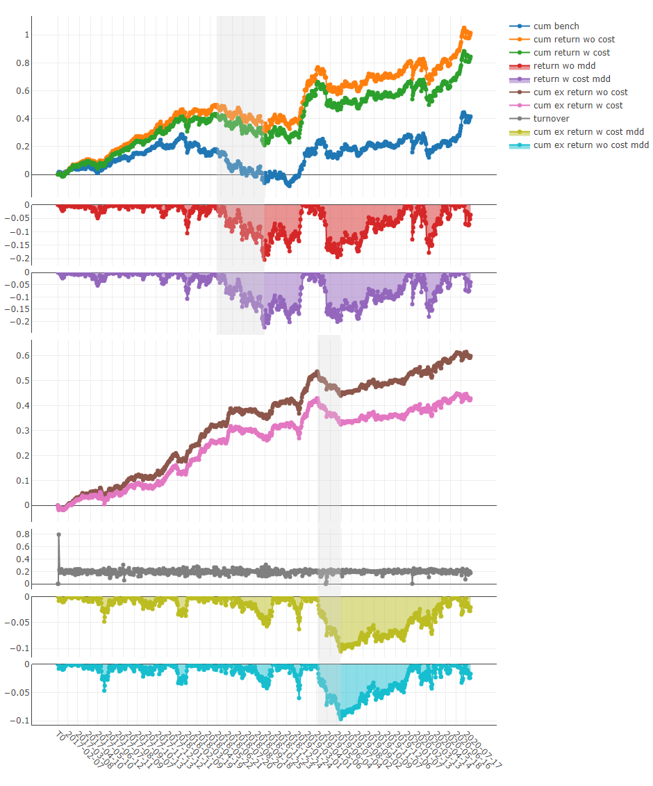
Usage of analysis_position.score_ic
API
Graphical Result
Note
Axis X: Trading day
- Axis Y:
- ic
The Pearson correlation coefficient series between label and prediction score. In the above example, the label is formulated as Ref($close, -2)/Ref($close, -1)-1. Please refer to Data Feature for more details.
- rank_ic
The Spearman’s rank correlation coefficient series between label and prediction score.
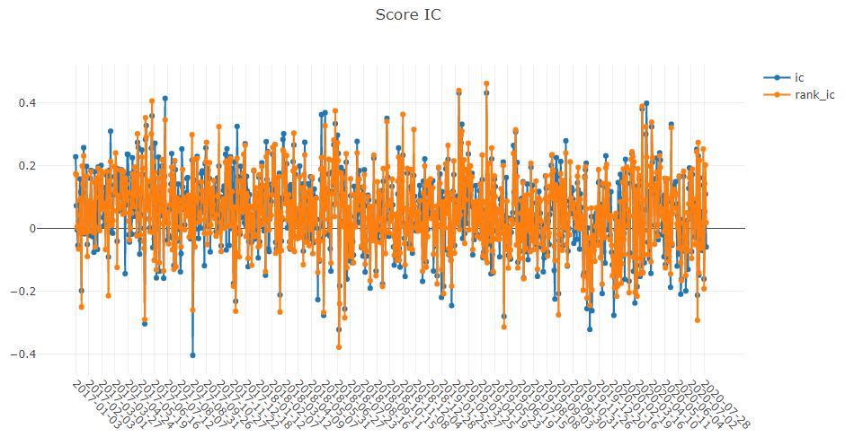
Usage of analysis_position.risk_analysis
API
Graphical Result
Note
- general graphics
- std
- excess_return_without_cost
The Standard Deviation of CAR (cumulative abnormal return) without cost.
- excess_return_with_cost
The Standard Deviation of CAR (cumulative abnormal return) with cost.
- annualized_return
- excess_return_without_cost
The Annualized Rate of CAR (cumulative abnormal return) without cost.
- excess_return_with_cost
The Annualized Rate of CAR (cumulative abnormal return) with cost.
- information_ratio
- excess_return_without_cost
The Information Ratio without cost.
- excess_return_with_cost
The Information Ratio with cost.
To know more about Information Ratio, please refer to Information Ratio – IR.
- max_drawdown
- excess_return_without_cost
The Maximum Drawdown of CAR (cumulative abnormal return) without cost.
- excess_return_with_cost
The Maximum Drawdown of CAR (cumulative abnormal return) with cost.
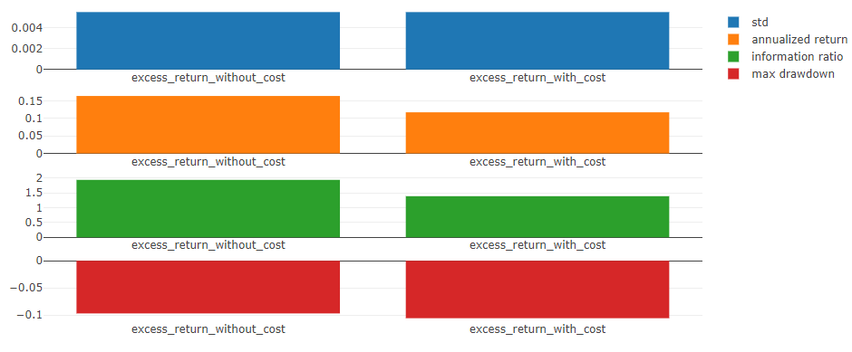
Note
- annualized_return/max_drawdown/information_ratio/std graphics
Axis X: Trading days grouped by month
- Axis Y:
- annualized_return graphics
- excess_return_without_cost_annualized_return
The Annualized Rate series of monthly CAR (cumulative abnormal return) without cost.
- excess_return_with_cost_annualized_return
The Annualized Rate series of monthly CAR (cumulative abnormal return) with cost.
- max_drawdown graphics
- excess_return_without_cost_max_drawdown
The Maximum Drawdown series of monthly CAR (cumulative abnormal return) without cost.
- excess_return_with_cost_max_drawdown
The Maximum Drawdown series of monthly CAR (cumulative abnormal return) with cost.
- information_ratio graphics
- excess_return_without_cost_information_ratio
The Information Ratio series of monthly CAR (cumulative abnormal return) without cost.
- excess_return_with_cost_information_ratio
The Information Ratio series of monthly CAR (cumulative abnormal return) with cost.
- std graphics
- excess_return_without_cost_max_drawdown
The Standard Deviation series of monthly CAR (cumulative abnormal return) without cost.
- excess_return_with_cost_max_drawdown
The Standard Deviation series of monthly CAR (cumulative abnormal return) with cost.
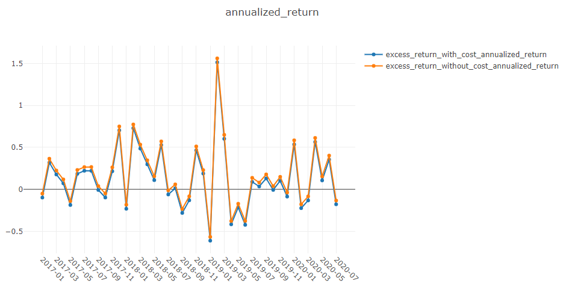
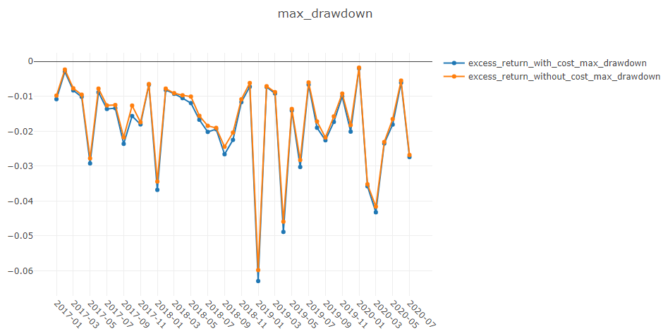
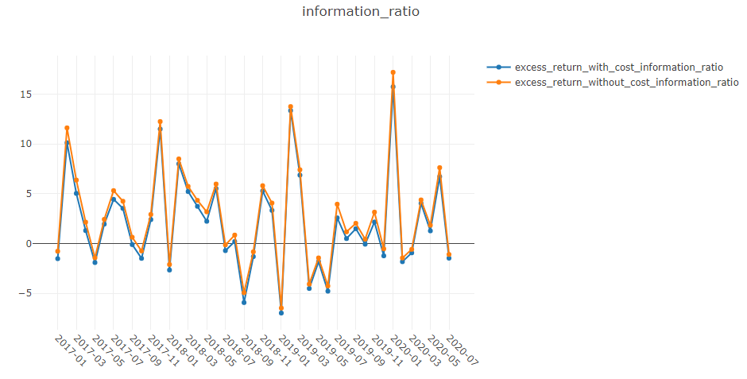
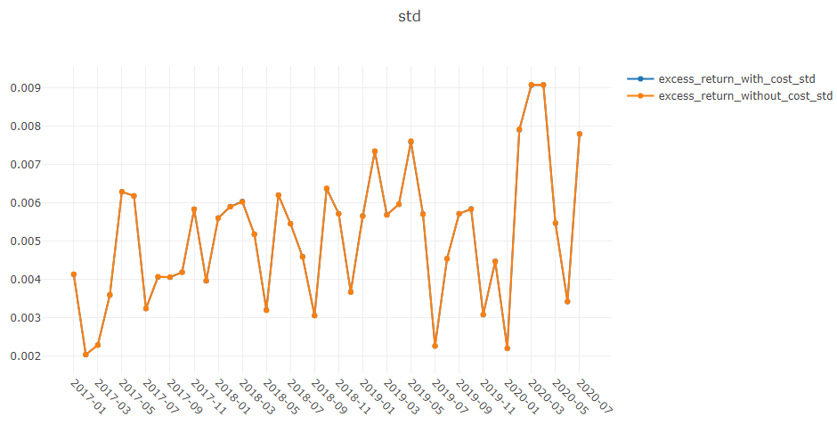
Usage of analysis_model.analysis_model_performance
API
Graphical Results
Note
- cumulative return graphics
- Group1:
The Cumulative Return series of stocks group with (ranking ratio of label <= 20%)
- Group2:
The Cumulative Return series of stocks group with (20% < ranking ratio of label <= 40%)
- Group3:
The Cumulative Return series of stocks group with (40% < ranking ratio of label <= 60%)
- Group4:
The Cumulative Return series of stocks group with (60% < ranking ratio of label <= 80%)
- Group5:
The Cumulative Return series of stocks group with (80% < ranking ratio of label)
- long-short:
The Difference series between Cumulative Return of Group1 and of Group5
- long-average
The Difference series between Cumulative Return of Group1 and average Cumulative Return for all stocks.
- The ranking ratio can be formulated as follows.
- \[ranking\ ratio = \frac{Ascending\ Ranking\ of\ label}{Number\ of\ Stocks\ in\ the\ Portfolio}\]
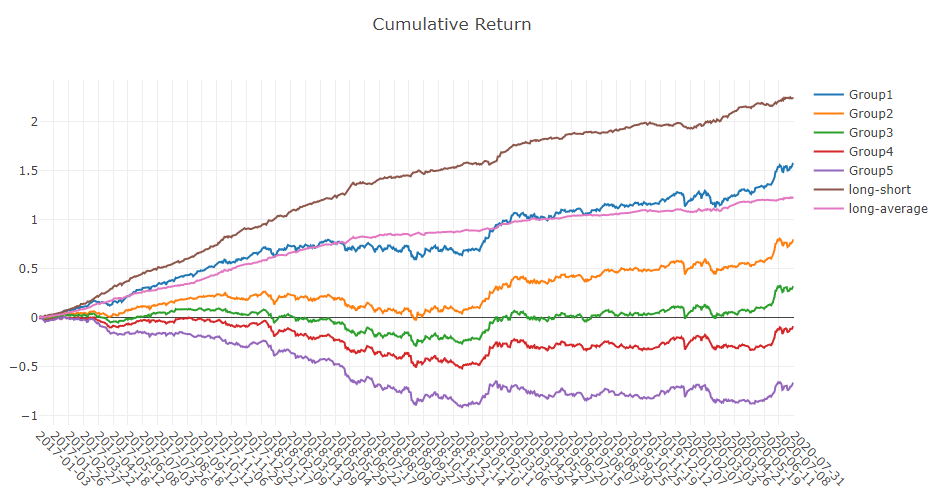
Note
- long-short/long-average
The distribution of long-short/long-average returns on each trading day
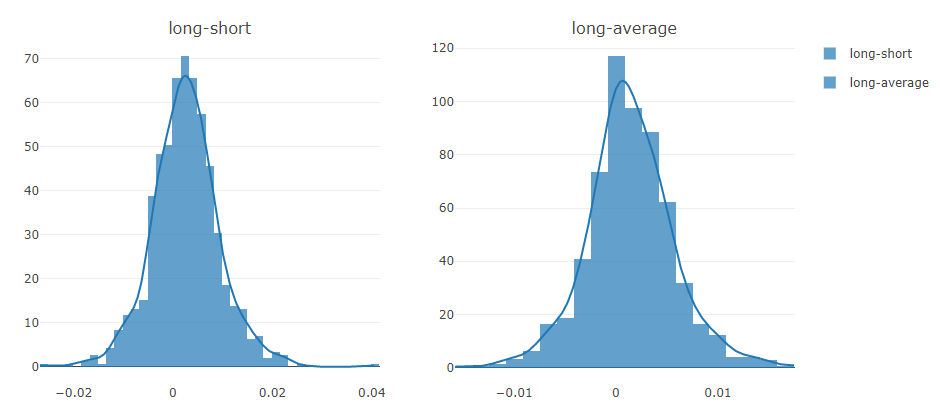
Note
- Information Coefficient
The Pearson correlation coefficient series between labels and prediction scores of stocks in portfolio.
The graphics reports can be used to evaluate the prediction scores.
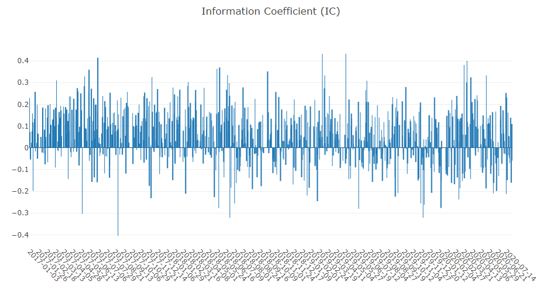
Note
- Monthly IC
Monthly average of the Information Coefficient
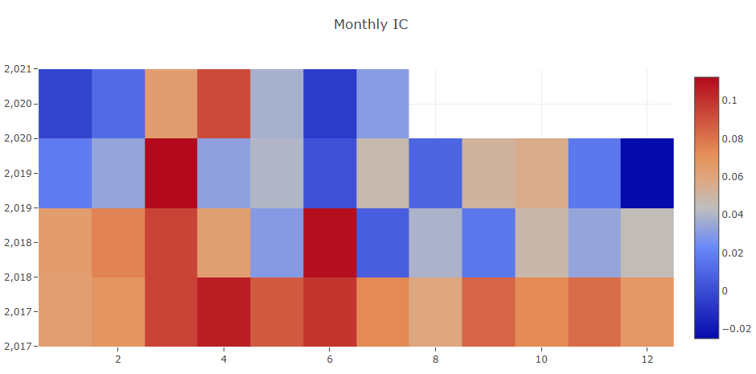
Note
- IC
The distribution of the Information Coefficient on each trading day.
- IC Normal Dist. Q-Q
The Quantile-Quantile Plot is used for the normal distribution of Information Coefficient on each trading day.
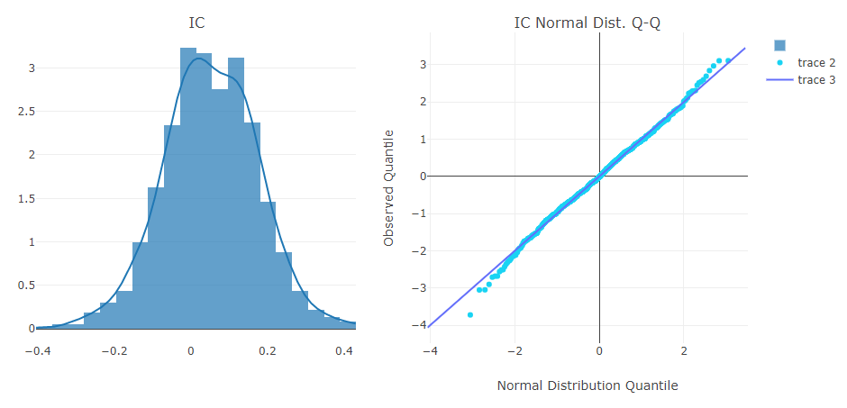
Note
- Auto Correlation
The Pearson correlation coefficient series between the latest prediction scores and the prediction scores lag days ago of stocks in portfolio on each trading day.
The graphics reports can be used to estimate the turnover rate.
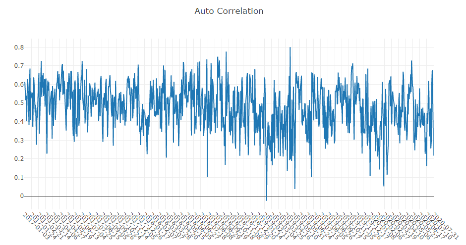
Online Serving
Introduction
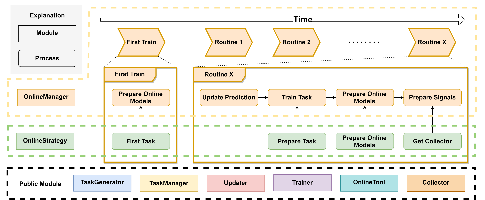
In addition to backtesting, one way to test a model is effective is to make predictions in real market conditions or even do real trading based on those predictions.
Online Serving is a set of modules for online models using the latest data,
which including Online Manager, Online Strategy, Online Tool, Updater.
Here are several examples for reference, which demonstrate different features of Online Serving.
If you have many models or task needs to be managed, please consider Task Management.
The examples are based on some components in Task Management such as TrainerRM or Collector.
NOTE: User should keep his data source updated to support online serving. For example, Qlib provides a batch of scripts to help users update Yahoo daily data.
Known limitations currently - Currently, the daily updating prediction for the next trading day is supported. But generating orders for the next trading day is not supported due to the limitations of public data <https://github.com/microsoft/qlib/issues/215#issuecomment-766293563>_
Online Manager
OnlineManager can manage a set of Online Strategy and run them dynamically.
With the change of time, the decisive models will be also changed. In this module, we call those contributing models online models. In every routine(such as every day or every minute), the online models may be changed and the prediction of them needs to be updated. So this module provides a series of methods to control this process.
This module also provides a method to simulate Online Strategy in history. Which means you can verify your strategy or find a better one.
There are 4 total situations for using different trainers in different situations:
Situations |
Description |
|---|---|
Online + Trainer |
When you want to do a REAL routine, the Trainer will help you train the models. It will train models task by task and strategy by strategy. |
Online + DelayTrainer |
DelayTrainer will skip concrete training until all tasks have been prepared by different strategies. It makes users can parallelly train all tasks at the end of routine or first_train. Otherwise, these functions will get stuck when each strategy prepare tasks. |
Simulation + Trainer |
It will behave in the same way as Online + Trainer. The only difference is that it is for simulation/backtesting instead of online trading |
Simulation + DelayTrainer |
When your models don’t have any temporal dependence, you can use DelayTrainer for the ability to multitasking. It means all tasks in all routines can be REAL trained at the end of simulating. The signals will be prepared well at different time segments (based on whether or not any new model is online). |
Here is some pseudo code that demonstrate the workflow of each situation
- For simplicity
Only one strategy is used in the strategy
update_online_pred is only called in the online mode and is ignored
Online + Trainer
tasks = first_train()
models = trainer.train(tasks)
trainer.end_train(models)
for day in online_trading_days:
# OnlineManager.routine
models = trainer.train(strategy.prepare_tasks()) # for each strategy
strategy.prepare_online_models(models) # for each strategy
trainer.end_train(models)
prepare_signals() # prepare trading signals daily
Online + DelayTrainer: the workflow is the same as Online + Trainer.
Simulation + DelayTrainer
# simulate
tasks = first_train()
models = trainer.train(tasks)
for day in historical_calendars:
# OnlineManager.routine
models = trainer.train(strategy.prepare_tasks()) # for each strategy
strategy.prepare_online_models(models) # for each strategy
# delay_prepare()
# FIXME: Currently the delay_prepare is not implemented in a proper way.
trainer.end_train(<for all previous models>)
prepare_signals()
# Can we simplify current workflow?
Can reduce the number of state of tasks?
For each task, we have three phases (i.e. task, partly trained task, final trained task)
- class qlib.workflow.online.manager.OnlineManager(strategies: OnlineStrategy | List[OnlineStrategy], trainer: Trainer | None = None, begin_time: str | Timestamp | None = None, freq='day')
OnlineManager can manage online models with Online Strategy. It also provides a history recording of which models are online at what time.
- __init__(strategies: OnlineStrategy | List[OnlineStrategy], trainer: Trainer | None = None, begin_time: str | Timestamp | None = None, freq='day')
Init OnlineManager. One OnlineManager must have at least one OnlineStrategy.
- Parameters:
strategies (Union[OnlineStrategy, List[OnlineStrategy]]) – an instance of OnlineStrategy or a list of OnlineStrategy
begin_time (Union[str,pd.Timestamp], optional) – the OnlineManager will begin at this time. Defaults to None for using the latest date.
trainer (qlib.model.trainer.Trainer) – the trainer to train task. None for using TrainerR.
freq (str, optional) – data frequency. Defaults to “day”.
- first_train(strategies: List[OnlineStrategy] | None = None, model_kwargs: dict = {})
Get tasks from every strategy’s first_tasks method and train them. If using DelayTrainer, it can finish training all together after every strategy’s first_tasks.
- Parameters:
strategies (List[OnlineStrategy]) – the strategies list (need this param when adding strategies). None for use default strategies.
model_kwargs (dict) – the params for prepare_online_models
- routine(cur_time: str | Timestamp | None = None, task_kwargs: dict = {}, model_kwargs: dict = {}, signal_kwargs: dict = {})
Typical update process for every strategy and record the online history.
The typical update process after a routine, such as day by day or month by month. The process is: Update predictions -> Prepare tasks -> Prepare online models -> Prepare signals.
If using DelayTrainer, it can finish training all together after every strategy’s prepare_tasks.
- Parameters:
cur_time (Union[str,pd.Timestamp], optional) – run routine method in this time. Defaults to None.
task_kwargs (dict) – the params for prepare_tasks
model_kwargs (dict) – the params for prepare_online_models
signal_kwargs (dict) – the params for prepare_signals
- get_collector(**kwargs) MergeCollector
Get the instance of Collector to collect results from every strategy. This collector can be a basis as the signals preparation.
- Parameters:
**kwargs – the params for get_collector.
- Returns:
the collector to merge other collectors.
- Return type:
- add_strategy(strategies: OnlineStrategy | List[OnlineStrategy])
Add some new strategies to OnlineManager.
- Parameters:
strategy (Union[OnlineStrategy, List[OnlineStrategy]]) – a list of OnlineStrategy
- prepare_signals(prepare_func: ~typing.Callable = <qlib.model.ens.ensemble.AverageEnsemble object>, over_write=False)
After preparing the data of the last routine (a box in box-plot) which means the end of the routine, we can prepare trading signals for the next routine.
NOTE: Given a set prediction, all signals before these prediction end times will be prepared well.
Even if the latest signal already exists, the latest calculation result will be overwritten.
Note
Given a prediction of a certain time, all signals before this time will be prepared well.
- Parameters:
prepare_func (Callable, optional) – Get signals from a dict after collecting. Defaults to AverageEnsemble(), the results collected by MergeCollector must be {xxx:pred}.
over_write (bool, optional) – If True, the new signals will overwrite. If False, the new signals will append to the end of signals. Defaults to False.
- Returns:
the signals.
- Return type:
pd.DataFrame
- get_signals() Series | DataFrame
Get prepared online signals.
- Returns:
pd.Series for only one signals every datetime. pd.DataFrame for multiple signals, for example, buy and sell operations use different trading signals.
- Return type:
Union[pd.Series, pd.DataFrame]
- simulate(end_time=None, frequency='day', task_kwargs={}, model_kwargs={}, signal_kwargs={}) Series | DataFrame
Starting from the current time, this method will simulate every routine in OnlineManager until the end time.
Considering the parallel training, the models and signals can be prepared after all routine simulating.
The delay training way can be
DelayTrainerand the delay preparing signals way can bedelay_prepare.- Parameters:
end_time – the time the simulation will end
frequency – the calendar frequency
task_kwargs (dict) – the params for prepare_tasks
model_kwargs (dict) – the params for prepare_online_models
signal_kwargs (dict) – the params for prepare_signals
- Returns:
pd.Series for only one signals every datetime. pd.DataFrame for multiple signals, for example, buy and sell operations use different trading signals.
- Return type:
Union[pd.Series, pd.DataFrame]
- delay_prepare(model_kwargs={}, signal_kwargs={})
Prepare all models and signals if something is waiting for preparation.
- Parameters:
model_kwargs – the params for end_train
signal_kwargs – the params for prepare_signals
Online Strategy
OnlineStrategy module is an element of online serving.
- class qlib.workflow.online.strategy.OnlineStrategy(name_id: str)
OnlineStrategy is working with Online Manager, responding to how the tasks are generated, the models are updated and signals are prepared.
- __init__(name_id: str)
Init OnlineStrategy. This module MUST use Trainer to finishing model training.
- Parameters:
name_id (str) – a unique name or id.
trainer (qlib.model.trainer.Trainer, optional) – a instance of Trainer. Defaults to None.
- prepare_tasks(cur_time, **kwargs) List[dict]
After the end of a routine, check whether we need to prepare and train some new tasks based on cur_time (None for latest).. Return the new tasks waiting for training.
You can find the last online models by OnlineTool.online_models.
- prepare_online_models(trained_models, cur_time=None) List[object]
Select some models from trained models and set them to online models. This is a typical implementation to online all trained models, you can override it to implement the complex method. You can find the last online models by OnlineTool.online_models if you still need them.
NOTE: Reset all online models to trained models. If there are no trained models, then do nothing.
- NOTE:
Current implementation is very naive. Here is a more complex situation which is more closer to the practical scenarios. 1. Train new models at the day before test_start (at time stamp T) 2. Switch models at the test_start (at time timestamp T + 1 typically)
- Parameters:
models (list) – a list of models.
cur_time (pd.Dataframe) – current time from OnlineManger. None for the latest.
- Returns:
a list of online models.
- Return type:
List[object]
- first_tasks() List[dict]
Generate a series of tasks firstly and return them.
- class qlib.workflow.online.strategy.RollingStrategy(name_id: str, task_template: dict | List[dict], rolling_gen: RollingGen)
This example strategy always uses the latest rolling model sas online models.
- __init__(name_id: str, task_template: dict | List[dict], rolling_gen: RollingGen)
Init RollingStrategy.
Assumption: the str of name_id, the experiment name, and the trainer’s experiment name are the same.
- Parameters:
name_id (str) – a unique name or id. Will be also the name of the Experiment.
task_template (Union[dict, List[dict]]) – a list of task_template or a single template, which will be used to generate many tasks using rolling_gen.
rolling_gen (RollingGen) – an instance of RollingGen
- get_collector(process_list=[<qlib.model.ens.group.RollingGroup object>], rec_key_func=None, rec_filter_func=None, artifacts_key=None)
Get the instance of Collector to collect results. The returned collector must distinguish results in different models.
Assumption: the models can be distinguished based on the model name and rolling test segments. If you do not want this assumption, please implement your method or use another rec_key_func.
- Parameters:
rec_key_func (Callable) – a function to get the key of a recorder. If None, use recorder id.
rec_filter_func (Callable, optional) – filter the recorder by return True or False. Defaults to None.
artifacts_key (List[str], optional) – the artifacts key you want to get. If None, get all artifacts.
- first_tasks() List[dict]
Use rolling_gen to generate different tasks based on task_template.
- Returns:
a list of tasks
- Return type:
List[dict]
- prepare_tasks(cur_time) List[dict]
Prepare new tasks based on cur_time (None for the latest).
You can find the last online models by OnlineToolR.online_models.
- Returns:
a list of new tasks.
- Return type:
List[dict]
Online Tool
OnlineTool is a module to set and unset a series of online models. The online models are some decisive models in some time points, which can be changed with the change of time. This allows us to use efficient submodels as the market-style changing.
- class qlib.workflow.online.utils.OnlineTool
OnlineTool will manage online models in an experiment that includes the model recorders.
- __init__()
Init OnlineTool.
- set_online_tag(tag, recorder: list | object)
Set tag to the model to sign whether online.
- Parameters:
tag (str) – the tags in ONLINE_TAG, OFFLINE_TAG
recorder (Union[list,object]) – the model’s recorder
- get_online_tag(recorder: object) str
Given a model recorder and return its online tag.
- Parameters:
recorder (Object) – the model’s recorder
- Returns:
the online tag
- Return type:
str
- reset_online_tag(recorder: list | object)
Offline all models and set the recorders to ‘online’.
- Parameters:
recorder (Union[list,object]) – the recorder you want to reset to ‘online’.
- online_models() list
Get current online models
- Returns:
a list of online models.
- Return type:
list
- update_online_pred(to_date=None)
Update the predictions of online models to to_date.
- Parameters:
to_date (pd.Timestamp) – the pred before this date will be updated. None for updating to the latest.
- class qlib.workflow.online.utils.OnlineToolR(default_exp_name: str | None = None)
The implementation of OnlineTool based on (R)ecorder.
- __init__(default_exp_name: str | None = None)
Init OnlineToolR.
- Parameters:
default_exp_name (str) – the default experiment name.
- set_online_tag(tag, recorder: Recorder | List)
Set tag to the model’s recorder to sign whether online.
- Parameters:
tag (str) – the tags in ONLINE_TAG, NEXT_ONLINE_TAG, OFFLINE_TAG
recorder (Union[Recorder, List]) – a list of Recorder or an instance of Recorder
- get_online_tag(recorder: Recorder) str
Given a model recorder and return its online tag.
- Parameters:
recorder (Recorder) – an instance of recorder
- Returns:
the online tag
- Return type:
str
- reset_online_tag(recorder: Recorder | List, exp_name: str | None = None)
Offline all models and set the recorders to ‘online’.
- Parameters:
recorder (Union[Recorder, List]) – the recorder you want to reset to ‘online’.
exp_name (str) – the experiment name. If None, then use default_exp_name.
- online_models(exp_name: str | None = None) list
Get current online models
- Parameters:
exp_name (str) – the experiment name. If None, then use default_exp_name.
- Returns:
a list of online models.
- Return type:
list
- update_online_pred(to_date=None, from_date=None, exp_name: str | None = None)
Update the predictions of online models to to_date.
- Parameters:
to_date (pd.Timestamp) – the pred before this date will be updated. None for updating to latest time in Calendar.
exp_name (str) – the experiment name. If None, then use default_exp_name.
Updater
Updater is a module to update artifacts such as predictions when the stock data is updating.
- class qlib.workflow.online.update.RMDLoader(rec: Recorder)
Recorder Model Dataset Loader
- __init__(rec: Recorder)
- get_dataset(start_time, end_time, segments=None, unprepared_dataset: DatasetH | None = None) DatasetH
Load, config and setup dataset.
This dataset is for inference.
- Parameters:
start_time – the start_time of underlying data
end_time – the end_time of underlying data
segments – dict the segments config for dataset Due to the time series dataset (TSDatasetH), the test segments maybe different from start_time and end_time
unprepared_dataset – Optional[DatasetH] if user don’t want to load dataset from recorder, please specify user’s dataset
- Returns:
the instance of DatasetH
- Return type:
- class qlib.workflow.online.update.RecordUpdater(record: Recorder, *args, **kwargs)
Update a specific recorders
- __init__(record: Recorder, *args, **kwargs)
- abstract update(*args, **kwargs)
Update info for specific recorder
- class qlib.workflow.online.update.DSBasedUpdater(record: ~qlib.workflow.recorder.Recorder, to_date=None, from_date=None, hist_ref: int | None = None, freq='day', fname='pred.pkl', loader_cls: type = <class 'qlib.workflow.online.update.RMDLoader'>)
Dataset-Based Updater
Providing updating feature for Updating data based on Qlib Dataset
Assumption
Based on Qlib dataset
The data to be updated is a multi-level index pd.DataFrame. For example label, prediction.
LABEL0 datetime instrument 2021-05-10 SH600000 0.006965 SH600004 0.003407 ... ... 2021-05-28 SZ300498 0.015748 SZ300676 -0.001321
- __init__(record: ~qlib.workflow.recorder.Recorder, to_date=None, from_date=None, hist_ref: int | None = None, freq='day', fname='pred.pkl', loader_cls: type = <class 'qlib.workflow.online.update.RMDLoader'>)
Init PredUpdater.
Expected behavior in following cases:
if to_date is greater than the max date in the calendar, the data will be updated to the latest date
if there are data before from_date or after to_date, only the data between from_date and to_date are affected.
- Parameters:
record – Recorder
to_date –
update to prediction to the to_date
if to_date is None:
data will updated to the latest date.
from_date –
the update will start from from_date
if from_date is None:
the updating will occur on the next tick after the latest data in historical data
hist_ref –
int Sometimes, the dataset will have historical depends. Leave the problem to users to set the length of historical dependency If user doesn’t specify this parameter, Updater will try to load dataset to automatically determine the hist_ref
Note
the start_time is not included in the hist_ref; So the hist_ref will be step_len - 1 in most cases
loader_cls – type the class to load the model and dataset
- prepare_data(unprepared_dataset: DatasetH | None = None) DatasetH
Load dataset - if unprepared_dataset is specified, then prepare the dataset directly - Otherwise,
Separating this function will make it easier to reuse the dataset
- Returns:
the instance of DatasetH
- Return type:
- update(dataset: DatasetH | None = None, write: bool = True, ret_new: bool = False) object | None
- Parameters:
dataset (DatasetH) – DatasetH: the instance of DatasetH. None for prepare it again.
write (bool) – will the the write action be executed
ret_new (bool) – will the updated data be returned
- Returns:
the updated dataset
- Return type:
Optional[object]
- abstract get_update_data(dataset: Dataset) DataFrame
return the updated data based on the given dataset
The difference between get_update_data and update - update_date only include some data specific feature - update include some general routine steps(e.g. prepare dataset, checking)
- class qlib.workflow.online.update.PredUpdater(record: ~qlib.workflow.recorder.Recorder, to_date=None, from_date=None, hist_ref: int | None = None, freq='day', fname='pred.pkl', loader_cls: type = <class 'qlib.workflow.online.update.RMDLoader'>)
Update the prediction in the Recorder
- get_update_data(dataset: Dataset) DataFrame
return the updated data based on the given dataset
The difference between get_update_data and update - update_date only include some data specific feature - update include some general routine steps(e.g. prepare dataset, checking)
- class qlib.workflow.online.update.LabelUpdater(record: Recorder, to_date=None, **kwargs)
Update the label in the recorder
Assumption - The label is generated from record_temp.SignalRecord.
- __init__(record: Recorder, to_date=None, **kwargs)
Init PredUpdater.
Expected behavior in following cases:
if to_date is greater than the max date in the calendar, the data will be updated to the latest date
if there are data before from_date or after to_date, only the data between from_date and to_date are affected.
- Parameters:
record – Recorder
to_date –
update to prediction to the to_date
if to_date is None:
data will updated to the latest date.
from_date –
the update will start from from_date
if from_date is None:
the updating will occur on the next tick after the latest data in historical data
hist_ref –
int Sometimes, the dataset will have historical depends. Leave the problem to users to set the length of historical dependency If user doesn’t specify this parameter, Updater will try to load dataset to automatically determine the hist_ref
Note
the start_time is not included in the hist_ref; So the hist_ref will be step_len - 1 in most cases
loader_cls – type the class to load the model and dataset
- get_update_data(dataset: Dataset) DataFrame
return the updated data based on the given dataset
The difference between get_update_data and update - update_date only include some data specific feature - update include some general routine steps(e.g. prepare dataset, checking)
Reinforcement Learning in Quantitative Trading
Guidance
QlibRL can help users quickly get started and conveniently implement quantitative strategies based on reinforcement learning(RL) algorithms. For different user groups, we recommend the following guidance to use QlibRL.
Beginners to Reinforcement Learning Algorithms
- Whether you are a quantitative researcher who wants to understand what RL can do in trading or a learner who wants to get started with RL algorithms in trading scenarios, if you have limited knowledge of RL and want to shield various detailed settings to quickly get started with RL algorithms, we recommend the following sequence to learn qlibrl:
Learn the fundamentals of RL in part1.
Understand the trading scenarios where RL methods can be applied in part2.
Run the examples in part3 to solve trading problems using RL.
If you want to further explore QlibRL and make some customizations, you need to first understand the framework of QlibRL in part4 and rewrite specific components according to your needs.
Reinforcement Learning Algorithm Researcher
- If you are already familiar with existing RL algorithms and dedicated to researching RL algorithms but lack domain knowledge in the financial field, and you want to validate the effectiveness of your algorithms in financial trading scenarios, we recommend the following steps to get started with QlibRL:
Understand the trading scenarios where RL methods can be applied in part2.
Choose an RL application scenario (currently, QlibRL has implemented two scenario examples: order execution and algorithmic trading). Run the example in part3 to get it working.
Modify the policy part to incorporate your own RL algorithm.
Quantitative Researcher
- If you have a certain level of financial domain knowledge and coding skills, and you want to explore the application of RL algorithms in the investment field, we recommend the following steps to explore QlibRL:
Learn the fundamentals of RL in part1.
Understand the trading scenarios where RL methods can be applied in part2.
Run the examples in part3 to solve trading problems using RL.
Understand the framework of QlibRL in part4.
Choose a suitable RL algorithm based on the characteristics of the problem you want to solve (currently, QlibRL supports PPO and DQN algorithms based on tianshou).
Design the MDP (Markov Decision Process) process based on market trading rules and the problem you want to solve. Refer to the example in order execution and make corresponding modifications to the following modules: State, Metrics, ActionInterpreter, StateInterpreter, Reward, Observation, Simulator.
Reinforcement Learning in Quantitative Trading
Reinforcement Learning
Different from supervised learning tasks such as classification tasks and regression tasks. Another important paradigm in machine learning is Reinforcement Learning(RL), which attempts to optimize an accumulative numerical reward signal by directly interacting with the environment under a few assumptions such as Markov Decision Process(MDP).
As demonstrated in the following figure, an RL system consists of four elements, 1)the agent 2) the environment the agent interacts with 3) the policy that the agent follows to take actions on the environment and 4)the reward signal from the environment to the agent. In general, the agent can perceive and interpret its environment, take actions and learn through reward, to seek long-term and maximum overall reward to achieve an optimal solution.
{kind=link}
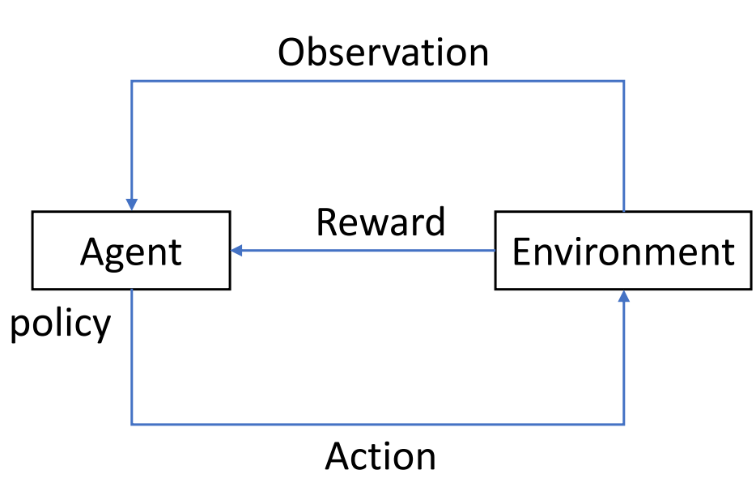
RL attempts to learn to produce actions by trial and error. By sampling actions and then observing which one leads to our desired outcome, a policy is obtained to generate optimal actions. In contrast to supervised learning, RL learns this not from a label but from a time-delayed label called a reward. This scalar value lets us know whether the current outcome is good or bad. In a word, the target of RL is to take actions to maximize reward.
The Qlib Reinforcement Learning toolkit (QlibRL) is an RL platform for quantitative investment, which provides support to implement the RL algorithms in Qlib.
Potential Application Scenarios in Quantitative Trading
RL methods have demonstrated remarkable achievements in various applications, including game playing, resource allocation, recommendation systems, marketing, and advertising. In the context of investment, which involves continuous decision-making, let’s consider the example of the stock market. Investors strive to optimize their investment returns by effectively managing their positions and stock holdings through various buying and selling behaviors. Furthermore, investors carefully evaluate market conditions and stock-specific information before making each buying or selling decision. From an investor’s perspective, this process can be viewed as a continuous decision-making process driven by interactions with the market. RL algorithms offer a promising approach to tackle such challenges. Here are several scenarios where RL holds potential for application in quantitative investment.
Order Execution
The order execution task is to execute orders efficiently while considering multiple factors, including optimal prices, minimizing trading costs, reducing market impact, maximizing order fullfill rates, and achieving execution within a specified time frame. RL can be applied to such tasks by incorporating these objectives into the reward function and action selection process. Specifically, the RL agent interacts with the market environment, observes the state from market information, and makes decisions on next step execution. The RL algorithm learns an optimal execution strategy through trial and error, aiming to maximize the expected cumulative reward, which incorporates the desired objectives.
- General Setting
Environment: The environment represents the financial market where order execution takes place. It encompasses variables such as the order book dynamics, liquidity, price movements, and market conditions.
State: The state refers to the information available to the RL agent at a given time step. It typically includes features such as the current order book state (bid-ask spread, order depth), historical price data, historical trading volume, market volatility, and any other relevant information that can aid in decision-making.
Action: The action is the decision made by the RL agent based on the observed state. In order execution, actions can include selecting the order size, price, and timing of execution.
Reward: The reward is a scalar signal that indicates the performance of the RL agent’s action in the environment. The reward function is designed to encourage actions that lead to efficient and cost-effective order execution. It typically considers multiple objectives, such as maximizing price advantages, minimizing trading costs (including transaction fees and slippage), reducing market impact (the effect of the order on the market price) and maximizing order fullfill rates.
- Scenarios
Single-asset order execution: Single-asset order execution focuses on the task of executing a single order for a specific asset, such as a stock or a cryptocurrency. The primary objective is to execute the order efficiently while considering factors such as maximizing price advantages, minimizing trading costs, reducing market impact, and achieving a high fullfill rate. The RL agent interacts with the market environment and makes decisions on order size, price, and timing of execution for that particular asset. The goal is to learn an optimal execution strategy for the single asset, maximizing the expected cumulative reward while considering the specific dynamics and characteristics of that asset.
Multi-asset order execution: Multi-asset order execution expands the order execution task to involve multiple assets or securities. It typically involves executing a portfolio of orders across different assets simultaneously or sequentially. Unlike single-asset order execution, the focus is not only on the execution of individual orders but also on managing the interactions and dependencies between different assets within the portfolio. The RL agent needs to make decisions on the order sizes, prices, and timings for each asset in the portfolio, considering their interdependencies, cash constraints, market conditions, and transaction costs. The goal is to learn an optimal execution strategy that balances the execution efficiency for each asset while considering the overall performance and objectives of the portfolio as a whole.
The choice of settings and RL algorithm depends on the specific requirements of the task, available data, and desired performance objectives.
Portfolio Construction
- Portfolio construction is a process of selecting and allocating assets in an investment portfolio. RL provides a framework to optimize portfolio management decisions by learning from interactions with the market environment and maximizing long-term returns while considering risk management.
- General Setting
State: The state represents the current information about the market and the portfolio. It typically includes historical prices and volumes, technical indicators, and other relevant data.
Action: The action corresponds to the decision of allocating capital to different assets in the portfolio. It determines the weights or proportions of investments in each asset.
Reward: The reward is a metric that evaluates the performance of the portfolio. It can be defined in various ways, such as total return, risk-adjusted return, or other objectives like maximizing Sharpe ratio or minimizing drawdown.
- Scenarios
Stock market: RL can be used to construct portfolios of stocks, where the agent learns to allocate capital among different stocks.
Cryptocurrency market: RL can be applied to construct portfolios of cryptocurrencies, where the agent learns to make allocation decisions.
Foreign exchange (Forex) market: RL can be used to construct portfolios of currency pairs, where the agent learns to allocate capital across different currencies based on exchange rate data, economic indicators, and other factors.
Similarly, the choice of basic setting and algorithm depends on the specific requirements of the problem and the characteristics of the market.
Quick Start
QlibRL provides an example of an implementation of a single asset order execution task and the following is an example of the config file to train with QlibRL.
simulator:
# Each step contains 30mins
time_per_step: 30
# Upper bound of volume, should be null or a float between 0 and 1, if it is a float, represent upper bound is calculated by the percentage of the market volume
vol_limit: null
env:
# Concurrent environment workers.
concurrency: 1
# dummy or subproc or shmem. Corresponding to `parallelism in tianshou <https://tianshou.readthedocs.io/en/master/api/tianshou.env.html#vectorenv>`_.
parallel_mode: dummy
action_interpreter:
class: CategoricalActionInterpreter
kwargs:
# Candidate actions, it can be a list with length L: [a_1, a_2,..., a_L] or an integer n, in which case the list of length n+1 is auto-generated, i.e., [0, 1/n, 2/n,..., n/n].
values: 14
# Total number of steps (an upper-bound estimation)
max_step: 8
module_path: qlib.rl.order_execution.interpreter
state_interpreter:
class: FullHistoryStateInterpreter
kwargs:
# Number of dimensions in data.
data_dim: 6
# Equal to the total number of records. For example, in SAOE per minute, data_ticks is the length of the day in minutes.
data_ticks: 240
# The total number of steps (an upper-bound estimation). For example, 390min / 30min-per-step = 13 steps.
max_step: 8
# Provider of the processed data.
processed_data_provider:
class: PickleProcessedDataProvider
module_path: qlib.rl.data.pickle_styled
kwargs:
data_dir: ./data/pickle_dataframe/feature
module_path: qlib.rl.order_execution.interpreter
reward:
class: PAPenaltyReward
kwargs:
# The penalty for a large volume in a short time.
penalty: 100.0
module_path: qlib.rl.order_execution.reward
data:
source:
order_dir: ./data/training_order_split
data_dir: ./data/pickle_dataframe/backtest
# number of time indexes
total_time: 240
# start time index
default_start_time: 0
# end time index
default_end_time: 240
proc_data_dim: 6
num_workers: 0
queue_size: 20
network:
class: Recurrent
module_path: qlib.rl.order_execution.network
policy:
class: PPO
kwargs:
lr: 0.0001
module_path: qlib.rl.order_execution.policy
runtime:
seed: 42
use_cuda: false
trainer:
max_epoch: 2
# Number of episodes collected in each training iteration
repeat_per_collect: 5
earlystop_patience: 2
# Episodes per collect at training.
episode_per_collect: 20
batch_size: 16
# Perform validation every n iterations
val_every_n_epoch: 1
checkpoint_path: ./checkpoints
checkpoint_every_n_iters: 1
And the config file for backtesting:
order_file: ./data/backtest_orders.csv
start_time: "9:45"
end_time: "14:44"
qlib:
provider_uri_1min: ./data/bin
feature_root_dir: ./data/pickle
# feature generated by today's information
feature_columns_today: [
"$open", "$high", "$low", "$close", "$vwap", "$volume",
]
# feature generated by yesterday's information
feature_columns_yesterday: [
"$open_v1", "$high_v1", "$low_v1", "$close_v1", "$vwap_v1", "$volume_v1",
]
exchange:
# the expression for buying and selling stock limitation
limit_threshold: ['$close == 0', '$close == 0']
# deal price for buying and selling
deal_price: ["If($close == 0, $vwap, $close)", "If($close == 0, $vwap, $close)"]
volume_threshold:
# volume limits are both buying and selling, "cum" means that this is a cumulative value over time
all: ["cum", "0.2 * DayCumsum($volume, '9:45', '14:44')"]
# the volume limits of buying
buy: ["current", "$close"]
# the volume limits of selling, "current" means that this is a real-time value and will not accumulate over time
sell: ["current", "$close"]
strategies:
30min:
class: TWAPStrategy
module_path: qlib.contrib.strategy.rule_strategy
kwargs: {}
1day:
class: SAOEIntStrategy
module_path: qlib.rl.order_execution.strategy
kwargs:
state_interpreter:
class: FullHistoryStateInterpreter
module_path: qlib.rl.order_execution.interpreter
kwargs:
max_step: 8
data_ticks: 240
data_dim: 6
processed_data_provider:
class: PickleProcessedDataProvider
module_path: qlib.rl.data.pickle_styled
kwargs:
data_dir: ./data/pickle_dataframe/feature
action_interpreter:
class: CategoricalActionInterpreter
module_path: qlib.rl.order_execution.interpreter
kwargs:
values: 14
max_step: 8
network:
class: Recurrent
module_path: qlib.rl.order_execution.network
kwargs: {}
policy:
class: PPO
module_path: qlib.rl.order_execution.policy
kwargs:
lr: 1.0e-4
# Local path to the latest model. The model is generated during training, so please run training first if you want to run backtest with a trained policy. You could also remove this parameter file to run backtest with a randomly initialized policy.
weight_file: ./checkpoints/latest.pth
# Concurrent environment workers.
concurrency: 5
With the above config files, you can start training the agent by the following command:
$ python -m qlib.rl.contrib.train_onpolicy.py --config_path train_config.yml
After the training, you can backtest with the following command:
$ python -m qlib.rl.contrib.backtest.py --config_path backtest_config.yml
In that case, SingleAssetOrderExecution and SingleAssetOrderExecutionSimple as examples for simulator, qlib.rl.order_execution.interpreter.FullHistoryStateInterpreter and qlib.rl.order_execution.interpreter.CategoricalActionInterpreter as examples for interpreter, qlib.rl.order_execution.policy.PPO as an example for policy, and qlib.rl.order_execution.reward.PAPenaltyReward as an example for reward.
For the single asset order execution task, if developers have already defined their simulator/interpreters/reward function/policy, they could launch the training and backtest pipeline by simply modifying the corresponding settings in the config files.
The details about the example can be found here.
In the future, we will provide more examples for different scenarios such as RL-based portfolio construction.
The Framework of QlibRL
QlibRL contains a full set of components that cover the entire lifecycle of an RL pipeline, including building the simulator of the market, shaping states & actions, training policies (strategies), and backtesting strategies in the simulated environment.
QlibRL is basically implemented with the support of Tianshou and Gym frameworks. The high-level structure of QlibRL is demonstrated below:
{kind=link}
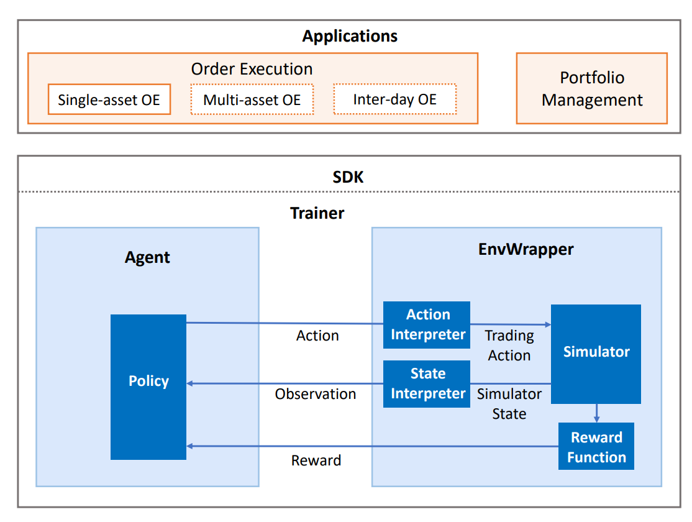
Here, we briefly introduce each component in the figure.
EnvWrapper
EnvWrapper is the complete capsulation of the simulated environment. It receives actions from outside (policy/strategy/agent), simulates the changes in the market, and then replies rewards and updated states, thus forming an interaction loop.
In QlibRL, EnvWrapper is a subclass of gym.Env, so it implements all necessary interfaces of gym.Env. Any classes or pipelines that accept gym.Env should also accept EnvWrapper. Developers do not need to implement their own EnvWrapper to build their own environment. Instead, they only need to implement 4 components of the EnvWrapper:
- Simulator
The simulator is the core component responsible for the environment simulation. Developers could implement all the logic that is directly related to the environment simulation in the Simulator in any way they like. In QlibRL, there are already two implementations of Simulator for single asset trading: 1)
SingleAssetOrderExecution, which is built based on Qlib’s backtest toolkits and hence considers a lot of practical trading details but is slow. 2)SimpleSingleAssetOrderExecution, which is built based on a simplified trading simulator, which ignores a lot of details (e.g. trading limitations, rounding) but is quite fast.
- State interpreter
The state interpreter is responsible for “interpret” states in the original format (format provided by the simulator) into states in a format that the policy could understand. For example, transform unstructured raw features into numerical tensors.
- Action interpreter
The action interpreter is similar to the state interpreter. But instead of states, it interprets actions generated by the policy, from the format provided by the policy to the format that is acceptable to the simulator.
- Reward function
The reward function returns a numerical reward to the policy after each time the policy takes an action.
EnvWrapper will organically organize these components. Such decomposition allows for better flexibility in development. For example, if the developers want to train multiple types of policies in the same environment, they only need to design one simulator and design different state interpreters/action interpreters/reward functions for different types of policies.
QlibRL has well-defined base classes for all these 4 components. All the developers need to do is define their own components by inheriting the base classes and then implementing all interfaces required by the base classes. The API for the above base components can be found here.
Policy
QlibRL directly uses Tianshou’s policy. Developers could use policies provided by Tianshou off the shelf, or implement their own policies by inheriting Tianshou’s policies.
Training Vessel & Trainer
As stated by their names, training vessels and trainers are helper classes used in training. A training vessel is a ship that contains a simulator/interpreters/reward function/policy, and it controls algorithm-related parts of training. Correspondingly, the trainer is responsible for controlling the runtime parts of training.
As you may have noticed, a training vessel itself holds all the required components to build an EnvWrapper rather than holding an instance of EnvWrapper directly. This allows the training vessel to create duplicates of EnvWrapper dynamically when necessary (for example, under parallel training).
With a training vessel, the trainer could finally launch the training pipeline by simple, Scikit-learn-like interfaces (i.e., trainer.fit()).
The API for Trainer and TrainingVessel and can be found here.
The RL module is designed in a loosely-coupled way. Currently, RL examples are integrated with concrete business logic. But the core part of RL is much simpler than what you see. To demonstrate the simple core of RL, a dedicated notebook for RL without business loss is created.
Building Formulaic Alphas
Introduction
In quantitative trading practice, designing novel factors that can explain and predict future asset returns are of vital importance to the profitability of a strategy. Such factors are usually called alpha factors, or alphas in short.
A formulaic alpha, as the name suggests, is a kind of alpha that can be presented as a formula or a mathematical expression.
Building Formulaic Alphas in Qlib
In Qlib, users can easily build formulaic alphas.
Example
MACD, short for moving average convergence/divergence, is a formulaic alpha used in technical analysis of stock prices. It is designed to reveal changes in the strength, direction, momentum, and duration of a trend in a stock’s price.
MACD can be presented as the following formula:
Note
DIF means Differential value, which is 12-period EMA minus 26-period EMA.
DEA means a 9-period EMA of the DIF.
Users can use Data Handler to build formulaic alphas MACD in qlib:
Note
Users need to initialize Qlib with qlib.init first. Please refer to initialization.
>> from qlib.data.dataset.loader import QlibDataLoader
>> MACD_EXP = '2 * ((EMA($close, 12) - EMA($close, 26))/$close - EMA((EMA($close, 12) - EMA($close, 26))/$close, 9))'
>> fields = [MACD_EXP] # MACD
>> names = ['MACD']
>> labels = ['Ref($close, -2)/Ref($close, -1) - 1'] # label
>> label_names = ['LABEL']
>> data_loader_config = {
.. "feature": (fields, names),
.. "label": (labels, label_names)
.. }
>> data_loader = QlibDataLoader(config=data_loader_config)
>> df = data_loader.load(instruments='csi300', start_time='2010-01-01', end_time='2017-12-31')
>> print(df)
feature label
MACD LABEL
datetime instrument
2010-01-04 SH600000 0.008781 -0.019672
SH600004 0.006699 -0.014721
SH600006 0.005714 0.002911
SH600008 0.000798 0.009818
SH600009 0.017015 -0.017758
... ... ...
2017-12-29 SZ300124 0.015071 -0.005074
SZ300136 -0.015466 0.056352
SZ300144 0.013082 0.011853
SZ300251 -0.001026 0.021739
SZ300315 -0.007559 0.012455
Reference
To learn more about Data Loader, please refer to Data Loader
To learn more about Data API, please refer to Data API
Online & Offline mode
Introduction
Qlib supports Online mode and Offline mode. Only the Offline mode is introduced in this document.
The Online mode is designed to solve the following problems:
Manage the data in a centralized way. Users don’t have to manage data of different versions.
Reduce the amount of cache to be generated.
Make the data can be accessed in a remote way.
Qlib-Server
Qlib-Server is the assorted server system for Qlib, which utilizes Qlib for basic calculations and provides extensive server system and cache mechanism. With QLibServer, the data provided for Qlib can be managed in a centralized manner. With Qlib-Server, users can use Qlib in Online mode.
Reference
If users are interested in Qlib-Server and Online mode, please refer to Qlib-Server Project and Qlib-Server Document.
Serialization
Introduction
Qlib supports dumping the state of DataHandler, DataSet, Processor and Model, etc. into a disk and reloading them.
Serializable Class
Qlib provides a base class qlib.utils.serial.Serializable, whose state can be dumped into or loaded from disk in pickle format.
When users dump the state of a Serializable instance, the attributes of the instance whose name does not start with _ will be saved on the disk.
However, users can use config method or override default_dump_all attribute to prevent this feature.
Users can also override pickle_backend attribute to choose a pickle backend. The supported value is “pickle” (default and common) and “dill” (dump more things such as function, more information in here).
Example
Qlib’s serializable class includes DataHandler, DataSet, Processor and Model, etc., which are subclass of qlib.utils.serial.Serializable.
Specifically, qlib.data.dataset.DatasetH is one of them. Users can serialize DatasetH as follows.
##=============dump dataset=============
dataset.to_pickle(path="dataset.pkl") # dataset is an instance of qlib.data.dataset.DatasetH
##=============reload dataset=============
with open("dataset.pkl", "rb") as file_dataset:
dataset = pickle.load(file_dataset)
Note
Only state of DatasetH should be saved on the disk, such as some mean and variance used for data normalization, etc.
After reloading the DatasetH, users need to reinitialize it. It means that users can reset some states of DatasetH or QlibDataHandler such as instruments, start_time, end_time and segments, etc., and generate new data according to the states (data is not state and should not be saved on the disk).
A more detailed example is in this link.
API
Please refer to Serializable API.
Task Management
Introduction
The Workflow part introduces how to run research workflow in a loosely-coupled way. But it can only execute one task when you use qrun.
To automatically generate and execute different tasks, Task Management provides a whole process including Task Generating, Task Storing, Task Training and Task Collecting.
With this module, users can run their task automatically at different periods, in different losses, or even by different models.The processes of task generation, model training and combine and collect data are shown in the following figure.
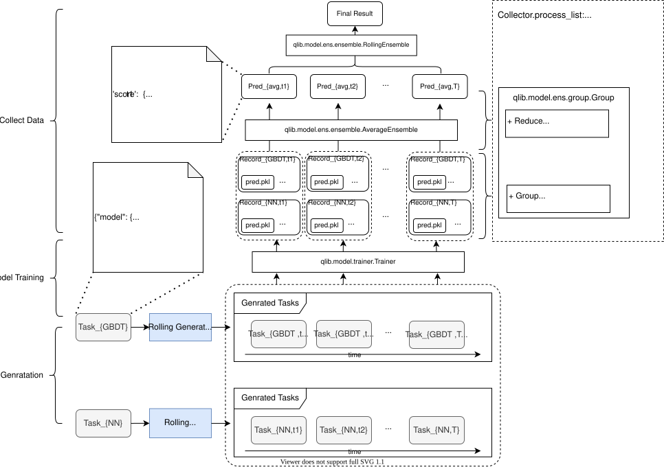
This whole process can be used in Online Serving.
An example of the entire process is shown here.
Task Generating
A task consists of Model, Dataset, Record, or anything added by users.
The specific task template can be viewed in
Task Section.
Even though the task template is fixed, users can customize their TaskGen to generate different task by task template.
Here is the base class of TaskGen:
- class qlib.workflow.task.gen.TaskGen
The base class for generating different tasks
Example 1:
input: a specific task template and rolling steps
output: rolling version of the tasks
Example 2:
input: a specific task template and losses list
output: a set of tasks with different losses
- abstract generate(task: dict) List[dict]
Generate different tasks based on a task template
- Parameters:
task (dict) – a task template
- Returns:
A list of tasks
- Return type:
List[dict]
Qlib provides a class RollingGen to generate a list of task of the dataset in different date segments.
This class allows users to verify the effect of data from different periods on the model in one experiment. More information is here.
Task Storing
To achieve higher efficiency and the possibility of cluster operation, Task Manager will store all tasks in MongoDB.
TaskManager can fetch undone tasks automatically and manage the lifecycle of a set of tasks with error handling.
Users MUST finish the configuration of MongoDB when using this module.
Users need to provide the MongoDB URL and database name for using TaskManager in initialization or make a statement like this.
from qlib.config import C C["mongo"] = { "task_url" : "mongodb://localhost:27017/", # your MongoDB url "task_db_name" : "rolling_db" # database name }
- class qlib.workflow.task.manage.TaskManager(task_pool: str)
Here is what will a task looks like when it created by TaskManager
{ 'def': pickle serialized task definition. using pickle will make it easier 'filter': json-like data. This is for filtering the tasks. 'status': 'waiting' | 'running' | 'done' 'res': pickle serialized task result, }
The tasks manager assumes that you will only update the tasks you fetched. The mongo fetch one and update will make it date updating secure.
This class can be used as a tool from commandline. Here are several examples. You can view the help of manage module with the following commands: python -m qlib.workflow.task.manage -h # show manual of manage module CLI python -m qlib.workflow.task.manage wait -h # show manual of the wait command of manage
python -m qlib.workflow.task.manage -t <pool_name> wait python -m qlib.workflow.task.manage -t <pool_name> task_stat
Note
Assumption: the data in MongoDB was encoded and the data out of MongoDB was decoded
Here are four status which are:
STATUS_WAITING: waiting for training
STATUS_RUNNING: training
STATUS_PART_DONE: finished some step and waiting for next step
STATUS_DONE: all work done
- __init__(task_pool: str)
Init Task Manager, remember to make the statement of MongoDB url and database name firstly. A TaskManager instance serves a specific task pool. The static method of this module serves the whole MongoDB.
- Parameters:
task_pool (str) – the name of Collection in MongoDB
- static list() list
List the all collection(task_pool) of the db.
- Returns:
list
- replace_task(task, new_task)
Use a new task to replace a old one
- Parameters:
task – old task
new_task – new task
- insert_task(task)
Insert a task.
- Parameters:
task – the task waiting for insert
- Returns:
pymongo.results.InsertOneResult
- insert_task_def(task_def)
Insert a task to task_pool
- Parameters:
task_def (dict) – the task definition
- Return type:
pymongo.results.InsertOneResult
- create_task(task_def_l, dry_run=False, print_nt=False) List[str]
If the tasks in task_def_l are new, then insert new tasks into the task_pool, and record inserted_id. If a task is not new, then just query its _id.
- Parameters:
task_def_l (list) – a list of task
dry_run (bool) – if insert those new tasks to task pool
print_nt (bool) – if print new task
- Returns:
a list of the _id of task_def_l
- Return type:
List[str]
- fetch_task(query={}, status='waiting') dict
Use query to fetch tasks.
- Parameters:
query (dict, optional) – query dict. Defaults to {}.
status (str, optional) – [description]. Defaults to STATUS_WAITING.
- Returns:
a task(document in collection) after decoding
- Return type:
dict
- safe_fetch_task(query={}, status='waiting')
Fetch task from task_pool using query with contextmanager
- Parameters:
query (dict) – the dict of query
- Returns:
dict
- Return type:
a task(document in collection) after decoding
- query(query={}, decode=True)
Query task in collection. This function may raise exception pymongo.errors.CursorNotFound: cursor id not found if it takes too long to iterate the generator
python -m qlib.workflow.task.manage -t <your task pool> query ‘{“_id”: “615498be837d0053acbc5d58”}’
- Parameters:
query (dict) – the dict of query
decode (bool) –
- Returns:
dict
- Return type:
a task(document in collection) after decoding
- re_query(_id) dict
Use _id to query task.
- Parameters:
_id (str) – _id of a document
- Returns:
a task(document in collection) after decoding
- Return type:
dict
- commit_task_res(task, res, status='done')
Commit the result to task[‘res’].
- Parameters:
task ([type]) – [description]
res (object) – the result you want to save
status (str, optional) – STATUS_WAITING, STATUS_RUNNING, STATUS_DONE, STATUS_PART_DONE. Defaults to STATUS_DONE.
- return_task(task, status='waiting')
Return a task to status. Always using in error handling.
- Parameters:
task ([type]) – [description]
status (str, optional) – STATUS_WAITING, STATUS_RUNNING, STATUS_DONE, STATUS_PART_DONE. Defaults to STATUS_WAITING.
- remove(query={})
Remove the task using query
- Parameters:
query (dict) – the dict of query
- task_stat(query={}) dict
Count the tasks in every status.
- Parameters:
query (dict, optional) – the query dict. Defaults to {}.
- Returns:
dict
- reset_waiting(query={})
Reset all running task into waiting status. Can be used when some running task exit unexpected.
- Parameters:
query (dict, optional) – the query dict. Defaults to {}.
- prioritize(task, priority: int)
Set priority for task
- Parameters:
task (dict) – The task query from the database
priority (int) – the target priority
- wait(query={})
When multiprocessing, the main progress may fetch nothing from TaskManager because there are still some running tasks. So main progress should wait until all tasks are trained well by other progress or machines.
- Parameters:
query (dict, optional) – the query dict. Defaults to {}.
More information of Task Manager can be found in here.
Task Training
After generating and storing those task, it’s time to run the task which is in the WAITING status.
Qlib provides a method called run_task to run those task in task pool, however, users can also customize how tasks are executed.
An easy way to get the task_func is using qlib.model.trainer.task_train directly.
It will run the whole workflow defined by task, which includes Model, Dataset, Record.
- qlib.workflow.task.manage.run_task(task_func: Callable, task_pool: str, query: dict = {}, force_release: bool = False, before_status: str = 'waiting', after_status: str = 'done', **kwargs)
While the task pool is not empty (has WAITING tasks), use task_func to fetch and run tasks in task_pool
After running this method, here are 4 situations (before_status -> after_status):
STATUS_WAITING -> STATUS_DONE: use task[“def”] as task_func param, it means that the task has not been started
STATUS_WAITING -> STATUS_PART_DONE: use task[“def”] as task_func param
STATUS_PART_DONE -> STATUS_PART_DONE: use task[“res”] as task_func param, it means that the task has been started but not completed
STATUS_PART_DONE -> STATUS_DONE: use task[“res”] as task_func param
- Parameters:
task_func (Callable) –
def (task_def, **kwargs) -> <res which will be committed>
the function to run the task
task_pool (str) – the name of the task pool (Collection in MongoDB)
query (dict) – will use this dict to query task_pool when fetching task
force_release (bool) – will the program force to release the resource
before_status (str:) – the tasks in before_status will be fetched and trained. Can be STATUS_WAITING, STATUS_PART_DONE.
after_status (str:) – the tasks after trained will become after_status. Can be STATUS_WAITING, STATUS_PART_DONE.
kwargs – the params for task_func
Meanwhile, Qlib provides a module called Trainer.
- class qlib.model.trainer.Trainer
The trainer can train a list of models. There are Trainer and DelayTrainer, which can be distinguished by when it will finish real training.
- __init__()
- train(tasks: list, *args, **kwargs) list
Given a list of task definitions, begin training, and return the models.
For Trainer, it finishes real training in this method. For DelayTrainer, it only does some preparation in this method.
- Parameters:
tasks – a list of tasks
- Returns:
a list of models
- Return type:
list
- end_train(models: list, *args, **kwargs) list
Given a list of models, finished something at the end of training if you need. The models may be Recorder, txt file, database, and so on.
For Trainer, it does some finishing touches in this method. For DelayTrainer, it finishes real training in this method.
- Parameters:
models – a list of models
- Returns:
a list of models
- Return type:
list
- is_delay() bool
If Trainer will delay finishing end_train.
- Returns:
if DelayTrainer
- Return type:
bool
- has_worker() bool
Some trainer has backend worker to support parallel training This method can tell if the worker is enabled.
- Returns:
if the worker is enabled
- Return type:
bool
- worker()
start the worker
- Raises:
NotImplementedError: – If the worker is not supported
Trainer will train a list of tasks and return a list of model recorders.
Qlib offer two kinds of Trainer, TrainerR is the simplest way and TrainerRM is based on TaskManager to help manager tasks lifecycle automatically.
If you do not want to use Task Manager to manage tasks, then use TrainerR to train a list of tasks generated by TaskGen is enough.
Here are the details about different Trainer.
Task Collecting
Before collecting model training results, you need to use the qlib.init to specify the path of mlruns.
To collect the results of task after training, Qlib provides Collector, Group and Ensemble to collect the results in a readable, expandable and loosely-coupled way.
Collector can collect objects from everywhere and process them such as merging, grouping, averaging and so on. It has 2 step action including collect (collect anything in a dict) and process_collect (process collected dict).
Group also has 2 steps including group (can group a set of object based on group_func and change them to a dict) and reduce (can make a dict become an ensemble based on some rule).
For example: {(A,B,C1): object, (A,B,C2): object} —group—> {(A,B): {C1: object, C2: object}} —reduce—> {(A,B): object}
Ensemble can merge the objects in an ensemble.
For example: {C1: object, C2: object} —Ensemble—> object.
You can set the ensembles you want in the Collector’s process_list.
Common ensembles include AverageEnsemble and RollingEnsemble. Average ensemble is used to ensemble the results of different models in the same time period. Rollingensemble is used to ensemble the results of different models in the same time period
So the hierarchy is Collector’s second step corresponds to Group. And Group’s second step correspond to Ensemble.
For more information, please see Collector, Group and Ensemble, or the example.
(P)oint-(I)n-(T)ime Database
Introduction
Point-in-time data is a very important consideration when performing any sort of historical market analysis.
For example, let’s say we are backtesting a trading strategy and we are using the past five years of historical data as our input. Our model is assumed to trade once a day, at the market close, and we’ll say we are calculating the trading signal for 1 January 2020 in our backtest. At that point, we should only have data for 1 January 2020, 31 December 2019, 30 December 2019 etc.
In financial data (especially financial reports), the same piece of data may be amended for multiple times overtime. If we only use the latest version for historical backtesting, data leakage will happen. Point-in-time database is designed for solving this problem to make sure user get the right version of data at any historical timestamp. It will keep the performance of online trading and historical backtesting the same.
Data Preparation
Qlib provides a crawler to help users to download financial data and then a converter to dump the data in Qlib format. Please follow scripts/data_collector/pit/README.md to download and convert data. Besides, you can find some additional usage examples there.
File-based design for PIT data
Qlib provides a file-based storage for PIT data.
For each feature, it contains 4 columns, i.e. date, period, value, _next. Each row corresponds to a statement.
The meaning of each feature with filename like XXX_a.data:
date: the statement’s date of publication.
- period: the period of the statement. (e.g. it will be quarterly frequency in most of the markets)
If it is an annual period, it will be an integer corresponding to the year
If it is an quarterly periods, it will be an integer like <year><index of quarter>. The last two decimal digits represents the index of quarter. Others represent the year.
value: the described value
_next: the byte index of the next occurance of the field.
Besides the feature data, an index XXX_a.index is included to speed up the querying performance
The statements are soted by the date in ascending order from the beginning of the file.
# the data format from XXXX.data
array([(20070428, 200701, 0.090219 , 4294967295),
(20070817, 200702, 0.13933 , 4294967295),
(20071023, 200703, 0.24586301, 4294967295),
(20080301, 200704, 0.3479 , 80),
(20080313, 200704, 0.395989 , 4294967295),
(20080422, 200801, 0.100724 , 4294967295),
(20080828, 200802, 0.24996801, 4294967295),
(20081027, 200803, 0.33412001, 4294967295),
(20090325, 200804, 0.39011699, 4294967295),
(20090421, 200901, 0.102675 , 4294967295),
(20090807, 200902, 0.230712 , 4294967295),
(20091024, 200903, 0.30072999, 4294967295),
(20100402, 200904, 0.33546099, 4294967295),
(20100426, 201001, 0.083825 , 4294967295),
(20100812, 201002, 0.200545 , 4294967295),
(20101029, 201003, 0.260986 , 4294967295),
(20110321, 201004, 0.30739301, 4294967295),
(20110423, 201101, 0.097411 , 4294967295),
(20110831, 201102, 0.24825101, 4294967295),
(20111018, 201103, 0.318919 , 4294967295),
(20120323, 201104, 0.4039 , 420),
(20120411, 201104, 0.403925 , 4294967295),
(20120426, 201201, 0.112148 , 4294967295),
(20120810, 201202, 0.26484701, 4294967295),
(20121026, 201203, 0.370487 , 4294967295),
(20130329, 201204, 0.45004699, 4294967295),
(20130418, 201301, 0.099958 , 4294967295),
(20130831, 201302, 0.21044201, 4294967295),
(20131016, 201303, 0.30454299, 4294967295),
(20140325, 201304, 0.394328 , 4294967295),
(20140425, 201401, 0.083217 , 4294967295),
(20140829, 201402, 0.16450299, 4294967295),
(20141030, 201403, 0.23408499, 4294967295),
(20150421, 201404, 0.319612 , 4294967295),
(20150421, 201501, 0.078494 , 4294967295),
(20150828, 201502, 0.137504 , 4294967295),
(20151023, 201503, 0.201709 , 4294967295),
(20160324, 201504, 0.26420501, 4294967295),
(20160421, 201601, 0.073664 , 4294967295),
(20160827, 201602, 0.136576 , 4294967295),
(20161029, 201603, 0.188062 , 4294967295),
(20170415, 201604, 0.244385 , 4294967295),
(20170425, 201701, 0.080614 , 4294967295),
(20170728, 201702, 0.15151 , 4294967295),
(20171026, 201703, 0.25416601, 4294967295),
(20180328, 201704, 0.32954201, 4294967295),
(20180428, 201801, 0.088887 , 4294967295),
(20180802, 201802, 0.170563 , 4294967295),
(20181029, 201803, 0.25522 , 4294967295),
(20190329, 201804, 0.34464401, 4294967295),
(20190425, 201901, 0.094737 , 4294967295),
(20190713, 201902, 0. , 1040),
(20190718, 201902, 0.175322 , 4294967295),
(20191016, 201903, 0.25581899, 4294967295)],
dtype=[('date', '<u4'), ('period', '<u4'), ('value', '<f8'), ('_next', '<u4')])
# - each row contains 20 byte
# The data format from XXXX.index. It consists of two parts
# 1) the start index of the data. So the first part of the info will be like
2007
# 2) the remain index data will be like information below
# - The data indicate the **byte index** of first data update of a period.
# - e.g. Because the info at both byte 80 and 100 corresponds to 200704. The byte index of first occurance (i.e. 100) is recorded in the data.
array([ 0, 20, 40, 60, 100,
120, 140, 160, 180, 200,
220, 240, 260, 280, 300,
320, 340, 360, 380, 400,
440, 460, 480, 500, 520,
540, 560, 580, 600, 620,
640, 660, 680, 700, 720,
740, 760, 780, 800, 820,
840, 860, 880, 900, 920,
940, 960, 980, 1000, 1020,
1060, 4294967295], dtype=uint32)
Known limitations:
Currently, the PIT database is designed for quarterly or annually factors, which can handle fundamental data of financial reports in most markets.
Qlib leverage the file name to identify the type of the data. File with name like XXX_q.data corresponds to quarterly data. File with name like XXX_a.data corresponds to annual data.
The caclulation of PIT is not performed in the optimal way. There is great potential to boost the performance of PIT data calcuation.
Code Standard
Docstring
Please use the Numpydoc Style.
Continuous Integration
Continuous Integration (CI) tools help you stick to the quality standards by running tests every time you push a new commit and reporting the results to a pull request.
When you submit a PR request, you can check whether your code passes the CI tests in the “check” section at the bottom of the web page.
Qlib will check the code format with black. The PR will raise error if your code does not align to the standard of Qlib(e.g. a common error is the mixed use of space and tab).
You can fix the bug by inputting the following code in the command line.
pip install black
python -m black . -l 120
Qlib will check your code style pylint. The checking command is implemented in [github action workflow](https://github.com/microsoft/qlib/blob/0e8b94a552f1c457cfa6cd2c1bb3b87ebb3fb279/.github/workflows/test.yml#L66). Sometime pylint’s restrictions are not that reasonable. You can ignore specific errors like this
return -ICLoss()(pred, target, index) # pylint: disable=E1130
Qlib will check your code style flake8. The checking command is implemented in [github action workflow](https://github.com/microsoft/qlib/blob/0e8b94a552f1c457cfa6cd2c1bb3b87ebb3fb279/.github/workflows/test.yml#L73).
You can fix the bug by inputing the following code in the command line.
flake8 --ignore E501,F541,E402,F401,W503,E741,E266,E203,E302,E731,E262,F523,F821,F811,F841,E713,E265,W291,E712,E722,W293 qlib
Qlib has integrated pre-commit, which will make it easier for developers to format their code.
Just run the following two commands, and the code will be automatically formatted using black and flake8 when the git commit command is executed.
pip install -e .[dev]
pre-commit install
Development Guidance
As a developer, you often want make changes to Qlib and hope it would reflect directly in your environment without reinstalling it. You can install Qlib in editable mode with following command. The [dev] option will help you to install some related packages when developing Qlib (e.g. pytest, sphinx)
pip install -e ".[dev]"
Build Docker Image
Dockerfile
There is a Dockerfile file in the root directory of the project from which you can build the docker image. There are two build methods in Dockerfile to choose from.
When executing the build command, use the --build-arg parameter to control the image version. The --build-arg parameter defaults to yes, which builds the stable version of the qlib image.
1.For the stable version, use pip install pyqlib to build the qlib image.
docker build --build-arg IS_STABLE=yes -t <image name> -f ./Dockerfile .
docker build -t <image name> -f ./Dockerfile .
For the
nightlyversion, use current source code to build the qlib image.
docker build --build-arg IS_STABLE=no -t <image name> -f ./Dockerfile .
Auto build of qlib images
There is a build_docker_image.sh file in the root directory of your project, which can be used to automatically build docker images and upload them to your docker hub repository(Optional, configuration required).
sh build_docker_image.sh
>>> Do you want to build the nightly version of the qlib image? (default is stable) (yes/no):
>>> Is it uploaded to docker hub? (default is no) (yes/no):
If you want to upload the built image to your docker hub repository, you need to edit your build_docker_image.sh file first, fill in
docker_userin the file, and then execute this file.
How to use qlib images
Start a new Docker container
docker run -it --name <container name> -v <Mounted local directory>:/app <image name>
At this point you are in the docker environment and can run the qlib scripts. An example:
>>> python scripts/get_data.py qlib_data --name qlib_data_simple --target_dir ~/.qlib/qlib_data/cn_data --interval 1d --region cn
>>> python qlib/cli/run.py examples/benchmarks/LightGBM/workflow_config_lightgbm_Alpha158.yaml
Exit the container
>>> exit
Restart the container
docker start -i -a <container name>
Stop the container
docker stop -i -a <container name>
Delete the container
docker rm <container name>
For more information on using docker see the docker documentation.
API Reference
Here you can find all Qlib interfaces.
Data
Provider
- class qlib.data.data.ProviderBackendMixin
This helper class tries to make the provider based on storage backend more convenient It is not necessary to inherent this class if that provider don’t rely on the backend storage
- class qlib.data.data.CalendarProvider
Calendar provider base class
Provide calendar data.
- calendar(start_time=None, end_time=None, freq='day', future=False)
Get calendar of certain market in given time range.
- Parameters:
start_time (str) – start of the time range.
end_time (str) – end of the time range.
freq (str) – time frequency, available: year/quarter/month/week/day.
future (bool) – whether including future trading day.
- Returns:
calendar list
- Return type:
list
- locate_index(start_time: Timestamp | str, end_time: Timestamp | str, freq: str, future: bool = False)
Locate the start time index and end time index in a calendar under certain frequency.
- Parameters:
start_time (pd.Timestamp) – start of the time range.
end_time (pd.Timestamp) – end of the time range.
freq (str) – time frequency, available: year/quarter/month/week/day.
future (bool) – whether including future trading day.
- Returns:
pd.Timestamp – the real start time.
pd.Timestamp – the real end time.
int – the index of start time.
int – the index of end time.
- load_calendar(freq, future)
Load original calendar timestamp from file.
- Parameters:
freq (str) – frequency of read calendar file.
future (bool) –
- Returns:
list of timestamps
- Return type:
list
- class qlib.data.data.InstrumentProvider
Instrument provider base class
Provide instrument data.
- static instruments(market: List | str = 'all', filter_pipe: List | None = None)
Get the general config dictionary for a base market adding several dynamic filters.
- Parameters:
market (Union[List, str]) –
- str:
market/industry/index shortname, e.g. all/sse/szse/sse50/csi300/csi500.
- list:
[“ID1”, “ID2”]. A list of stocks
filter_pipe (list) – the list of dynamic filters.
- Returns:
dict (if isinstance(market, str)) – dict of stockpool config.
{market => base market name, filter_pipe => list of filters}
example :
{'market': 'csi500', 'filter_pipe': [{'filter_type': 'ExpressionDFilter', 'rule_expression': '$open<40', 'filter_start_time': None, 'filter_end_time': None, 'keep': False}, {'filter_type': 'NameDFilter', 'name_rule_re': 'SH[0-9]{4}55', 'filter_start_time': None, 'filter_end_time': None}]}
list (if isinstance(market, list)) – just return the original list directly. NOTE: this will make the instruments compatible with more cases. The user code will be simpler.
- abstract list_instruments(instruments, start_time=None, end_time=None, freq='day', as_list=False)
List the instruments based on a certain stockpool config.
- Parameters:
instruments (dict) – stockpool config.
start_time (str) – start of the time range.
end_time (str) – end of the time range.
as_list (bool) – return instruments as list or dict.
- Returns:
instruments list or dictionary with time spans
- Return type:
dict or list
- class qlib.data.data.FeatureProvider
Feature provider class
Provide feature data.
- abstract feature(instrument, field, start_time, end_time, freq)
Get feature data.
- Parameters:
instrument (str) – a certain instrument.
field (str) – a certain field of feature.
start_time (str) – start of the time range.
end_time (str) – end of the time range.
freq (str) – time frequency, available: year/quarter/month/week/day.
- Returns:
data of a certain feature
- Return type:
pd.Series
- class qlib.data.data.PITProvider
- abstract period_feature(instrument, field, start_index: int, end_index: int, cur_time: Timestamp, period: int | None = None) Series
get the historical periods data series between start_index and end_index
- Parameters:
start_index (int) – start_index is a relative index to the latest period to cur_time
end_index (int) – end_index is a relative index to the latest period to cur_time in most cases, the start_index and end_index will be a non-positive values For example, start_index == -3 end_index == 0 and current period index is cur_idx, then the data between [start_index + cur_idx, end_index + cur_idx] will be retrieved.
period (int) – This is used for query specific period. The period is represented with int in Qlib. (e.g. 202001 may represent the first quarter in 2020) NOTE: period will override start_index and end_index
- Returns:
The index will be integers to indicate the periods of the data An typical examples will be TODO
- Return type:
pd.Series
- Raises:
FileNotFoundError – This exception will be raised if the queried data do not exist.
- class qlib.data.data.ExpressionProvider
Expression provider class
Provide Expression data.
- __init__()
- abstract expression(instrument, field, start_time=None, end_time=None, freq='day') Series
Get Expression data.
The responsibility of expression - parse the field and load the according data. - When loading the data, it should handle the time dependency of the data. get_expression_instance is commonly used in this method
- Parameters:
instrument (str) – a certain instrument.
field (str) – a certain field of feature.
start_time (str) – start of the time range.
end_time (str) – end of the time range.
freq (str) – time frequency, available: year/quarter/month/week/day.
- Returns:
data of a certain expression
The data has two types of format
expression with datetime index
expression with integer index
because the datetime is not as good as
- Return type:
pd.Series
- class qlib.data.data.DatasetProvider
Dataset provider class
Provide Dataset data.
- abstract dataset(instruments, fields, start_time=None, end_time=None, freq='day', inst_processors=[])
Get dataset data.
- Parameters:
instruments (list or dict) – list/dict of instruments or dict of stockpool config.
fields (list) – list of feature instances.
start_time (str) – start of the time range.
end_time (str) – end of the time range.
freq (str) – time frequency.
inst_processors (Iterable[Union[dict, InstProcessor]]) – the operations performed on each instrument
- Returns:
a pandas dataframe with <instrument, datetime> index.
- Return type:
pd.DataFrame
- static get_instruments_d(instruments, freq)
Parse different types of input instruments to output instruments_d Wrong format of input instruments will lead to exception.
- static get_column_names(fields)
Get column names from input fields
- static dataset_processor(instruments_d, column_names, start_time, end_time, freq, inst_processors=[])
Load and process the data, return the data set. - default using multi-kernel method.
- static inst_calculator(inst, start_time, end_time, freq, column_names, spans=None, g_config=None, inst_processors=[])
Calculate the expressions for one instrument, return a df result. If the expression has been calculated before, load from cache.
return value: A data frame with index ‘datetime’ and other data columns.
- class qlib.data.data.LocalCalendarProvider(remote=False, backend={})
Local calendar data provider class
Provide calendar data from local data source.
- __init__(remote=False, backend={})
- load_calendar(freq, future)
Load original calendar timestamp from file.
- Parameters:
freq (str) – frequency of read calendar file.
future (bool) –
- Returns:
list of timestamps
- Return type:
list
- class qlib.data.data.LocalInstrumentProvider(backend={})
Local instrument data provider class
Provide instrument data from local data source.
- __init__(backend={}) None
- list_instruments(instruments, start_time=None, end_time=None, freq='day', as_list=False)
List the instruments based on a certain stockpool config.
- Parameters:
instruments (dict) – stockpool config.
start_time (str) – start of the time range.
end_time (str) – end of the time range.
as_list (bool) – return instruments as list or dict.
- Returns:
instruments list or dictionary with time spans
- Return type:
dict or list
- class qlib.data.data.LocalFeatureProvider(remote=False, backend={})
Local feature data provider class
Provide feature data from local data source.
- __init__(remote=False, backend={})
- feature(instrument, field, start_index, end_index, freq)
Get feature data.
- Parameters:
instrument (str) – a certain instrument.
field (str) – a certain field of feature.
start_time (str) – start of the time range.
end_time (str) – end of the time range.
freq (str) – time frequency, available: year/quarter/month/week/day.
- Returns:
data of a certain feature
- Return type:
pd.Series
- class qlib.data.data.LocalPITProvider
- period_feature(instrument, field, start_index, end_index, cur_time, period=None)
get the historical periods data series between start_index and end_index
- Parameters:
start_index (int) – start_index is a relative index to the latest period to cur_time
end_index (int) – end_index is a relative index to the latest period to cur_time in most cases, the start_index and end_index will be a non-positive values For example, start_index == -3 end_index == 0 and current period index is cur_idx, then the data between [start_index + cur_idx, end_index + cur_idx] will be retrieved.
period (int) – This is used for query specific period. The period is represented with int in Qlib. (e.g. 202001 may represent the first quarter in 2020) NOTE: period will override start_index and end_index
- Returns:
The index will be integers to indicate the periods of the data An typical examples will be TODO
- Return type:
pd.Series
- Raises:
FileNotFoundError – This exception will be raised if the queried data do not exist.
- class qlib.data.data.LocalExpressionProvider(time2idx=True)
Local expression data provider class
Provide expression data from local data source.
- __init__(time2idx=True)
- expression(instrument, field, start_time=None, end_time=None, freq='day')
Get Expression data.
The responsibility of expression - parse the field and load the according data. - When loading the data, it should handle the time dependency of the data. get_expression_instance is commonly used in this method
- Parameters:
instrument (str) – a certain instrument.
field (str) – a certain field of feature.
start_time (str) – start of the time range.
end_time (str) – end of the time range.
freq (str) – time frequency, available: year/quarter/month/week/day.
- Returns:
data of a certain expression
The data has two types of format
expression with datetime index
expression with integer index
because the datetime is not as good as
- Return type:
pd.Series
- class qlib.data.data.LocalDatasetProvider(align_time: bool = True)
Local dataset data provider class
Provide dataset data from local data source.
- __init__(align_time: bool = True)
- Parameters:
align_time (bool) –
Will we align the time to calendar the frequency is flexible in some dataset and can’t be aligned. For the data with fixed frequency with a shared calendar, the align data to the calendar will provides following benefits
Align queries to the same parameters, so the cache can be shared.
- dataset(instruments, fields, start_time=None, end_time=None, freq='day', inst_processors=[])
Get dataset data.
- Parameters:
instruments (list or dict) – list/dict of instruments or dict of stockpool config.
fields (list) – list of feature instances.
start_time (str) – start of the time range.
end_time (str) – end of the time range.
freq (str) – time frequency.
inst_processors (Iterable[Union[dict, InstProcessor]]) – the operations performed on each instrument
- Returns:
a pandas dataframe with <instrument, datetime> index.
- Return type:
pd.DataFrame
- static multi_cache_walker(instruments, fields, start_time=None, end_time=None, freq='day')
This method is used to prepare the expression cache for the client. Then the client will load the data from expression cache by itself.
- static cache_walker(inst, start_time, end_time, freq, column_names)
If the expressions of one instrument haven’t been calculated before, calculate it and write it into expression cache.
- class qlib.data.data.ClientCalendarProvider
Client calendar data provider class
Provide calendar data by requesting data from server as a client.
- __init__()
- calendar(start_time=None, end_time=None, freq='day', future=False)
Get calendar of certain market in given time range.
- Parameters:
start_time (str) – start of the time range.
end_time (str) – end of the time range.
freq (str) – time frequency, available: year/quarter/month/week/day.
future (bool) – whether including future trading day.
- Returns:
calendar list
- Return type:
list
- class qlib.data.data.ClientInstrumentProvider
Client instrument data provider class
Provide instrument data by requesting data from server as a client.
- __init__()
- list_instruments(instruments, start_time=None, end_time=None, freq='day', as_list=False)
List the instruments based on a certain stockpool config.
- Parameters:
instruments (dict) – stockpool config.
start_time (str) – start of the time range.
end_time (str) – end of the time range.
as_list (bool) – return instruments as list or dict.
- Returns:
instruments list or dictionary with time spans
- Return type:
dict or list
- class qlib.data.data.ClientDatasetProvider
Client dataset data provider class
Provide dataset data by requesting data from server as a client.
- __init__()
- dataset(instruments, fields, start_time=None, end_time=None, freq='day', disk_cache=0, return_uri=False, inst_processors=[])
Get dataset data.
- Parameters:
instruments (list or dict) – list/dict of instruments or dict of stockpool config.
fields (list) – list of feature instances.
start_time (str) – start of the time range.
end_time (str) – end of the time range.
freq (str) – time frequency.
inst_processors (Iterable[Union[dict, InstProcessor]]) – the operations performed on each instrument
- Returns:
a pandas dataframe with <instrument, datetime> index.
- Return type:
pd.DataFrame
- class qlib.data.data.BaseProvider
Local provider class It is a set of interface that allow users to access data. Because PITD is not exposed publicly to users, so it is not included in the interface.
To keep compatible with old qlib provider.
- features(instruments, fields, start_time=None, end_time=None, freq='day', disk_cache=None, inst_processors=[])
- Parameters:
disk_cache (int) – whether to skip(0)/use(1)/replace(2) disk_cache
This function will try to use cache method which has a keyword disk_cache, and will use provider method if a type error is raised because the DatasetD instance is a provider class.
- class qlib.data.data.LocalProvider
- features_uri(instruments, fields, start_time, end_time, freq, disk_cache=1)
Return the uri of the generated cache of features/dataset
- Parameters:
disk_cache –
instruments –
fields –
start_time –
end_time –
freq –
- class qlib.data.data.ClientProvider
Client Provider
Requesting data from server as a client. Can propose requests:
Calendar : Directly respond a list of calendars
Instruments (without filter): Directly respond a list/dict of instruments
Instruments (with filters): Respond a list/dict of instruments
Features : Respond a cache uri
The general workflow is described as follows: When the user use client provider to propose a request, the client provider will connect the server and send the request. The client will start to wait for the response. The response will be made instantly indicating whether the cache is available. The waiting procedure will terminate only when the client get the response saying feature_available is true. BUG : Everytime we make request for certain data we need to connect to the server, wait for the response and disconnect from it. We can’t make a sequence of requests within one connection. You can refer to https://python-socketio.readthedocs.io/en/latest/client.html for documentation of python-socketIO client.
- __init__()
- qlib.data.data.CalendarProviderWrapper
alias of
CalendarProvider
- qlib.data.data.InstrumentProviderWrapper
alias of
InstrumentProvider
- qlib.data.data.FeatureProviderWrapper
alias of
FeatureProvider
- qlib.data.data.PITProviderWrapper
alias of
PITProvider
- qlib.data.data.ExpressionProviderWrapper
alias of
ExpressionProvider
- qlib.data.data.DatasetProviderWrapper
alias of
DatasetProvider
- qlib.data.data.BaseProviderWrapper
alias of
BaseProvider
- qlib.data.data.register_all_wrappers(C)
Filter
- class qlib.data.filter.BaseDFilter
Dynamic Instruments Filter Abstract class
Users can override this class to construct their own filter
Override __init__ to input filter regulations
Override filter_main to use the regulations to filter instruments
- __init__()
- static from_config(config)
Construct an instance from config dict.
- Parameters:
config (dict) – dict of config parameters.
- abstract to_config()
Construct an instance from config dict.
- Returns:
return the dict of config parameters.
- Return type:
dict
- class qlib.data.filter.SeriesDFilter(fstart_time=None, fend_time=None, keep=False)
Dynamic Instruments Filter Abstract class to filter a series of certain features
Filters should provide parameters:
filter start time
filter end time
filter rule
Override __init__ to assign a certain rule to filter the series.
Override _getFilterSeries to use the rule to filter the series and get a dict of {inst => series}, or override filter_main for more advanced series filter rule
- __init__(fstart_time=None, fend_time=None, keep=False)
- Init function for filter base class.
Filter a set of instruments based on a certain rule within a certain period assigned by fstart_time and fend_time.
- Parameters:
fstart_time (str) – the time for the filter rule to start filter the instruments.
fend_time (str) – the time for the filter rule to stop filter the instruments.
keep (bool) – whether to keep the instruments of which features don’t exist in the filter time span.
- filter_main(instruments, start_time=None, end_time=None)
Implement this method to filter the instruments.
- Parameters:
instruments (dict) – input instruments to be filtered.
start_time (str) – start of the time range.
end_time (str) – end of the time range.
- Returns:
filtered instruments, same structure as input instruments.
- Return type:
dict
- class qlib.data.filter.NameDFilter(name_rule_re, fstart_time=None, fend_time=None)
Name dynamic instrument filter
Filter the instruments based on a regulated name format.
A name rule regular expression is required.
- __init__(name_rule_re, fstart_time=None, fend_time=None)
Init function for name filter class
- Parameters:
name_rule_re (str) – regular expression for the name rule.
- static from_config(config)
Construct an instance from config dict.
- Parameters:
config (dict) – dict of config parameters.
- to_config()
Construct an instance from config dict.
- Returns:
return the dict of config parameters.
- Return type:
dict
- class qlib.data.filter.ExpressionDFilter(rule_expression, fstart_time=None, fend_time=None, keep=False)
Expression dynamic instrument filter
Filter the instruments based on a certain expression.
An expression rule indicating a certain feature field is required.
Examples
basic features filter : rule_expression = ‘$close/$open>5’
cross-sectional features filter : rule_expression = ‘$rank($close)<10’
time-sequence features filter : rule_expression = ‘$Ref($close, 3)>100’
- __init__(rule_expression, fstart_time=None, fend_time=None, keep=False)
Init function for expression filter class
- Parameters:
fstart_time (str) – filter the feature starting from this time.
fend_time (str) – filter the feature ending by this time.
rule_expression (str) – an input expression for the rule.
- static from_config(config)
Construct an instance from config dict.
- Parameters:
config (dict) – dict of config parameters.
- to_config()
Construct an instance from config dict.
- Returns:
return the dict of config parameters.
- Return type:
dict
Class
- class qlib.data.base.Expression
Expression base class
Expression is designed to handle the calculation of data with the format below data with two dimension for each instrument,
feature
time: it could be observation time or period time.
period time is designed for Point-in-time database. For example, the period time maybe 2014Q4, its value can observed for multiple times(different value may be observed at different time due to amendment).
- load(instrument, start_index, end_index, *args)
load feature This function is responsible for loading feature/expression based on the expression engine.
The concrete implementation will be separated into two parts:
caching data, handle errors.
This part is shared by all the expressions and implemented in Expression
processing and calculating data based on the specific expression.
This part is different in each expression and implemented in each expression
Expression Engine is shared by different data. Different data will have different extra information for args.
- Parameters:
instrument (str) – instrument code.
start_index (str) – feature start index [in calendar].
end_index (str) – feature end index [in calendar].
information (*args may contain following) –
data (2) if is used in PIT) –
- freq: str
feature frequency.
arguments (it contains following) –
- freq: str
feature frequency.
data –
- cur_pit:
it is designed for the point-in-time data.
- period: int
This is used for query specific period. The period is represented with int in Qlib. (e.g. 202001 may represent the first quarter in 2020)
arguments –
- cur_pit:
it is designed for the point-in-time data.
- period: int
This is used for query specific period. The period is represented with int in Qlib. (e.g. 202001 may represent the first quarter in 2020)
- Returns:
feature series: The index of the series is the calendar index
- Return type:
pd.Series
- abstract get_longest_back_rolling()
Get the longest length of historical data the feature has accessed
This is designed for getting the needed range of the data to calculate the features in specific range at first. However, situations like Ref(Ref($close, -1), 1) can not be handled rightly.
So this will only used for detecting the length of historical data needed.
- abstract get_extended_window_size()
get_extend_window_size
For to calculate this Operator in range[start_index, end_index] We have to get the leaf feature in range[start_index - lft_etd, end_index + rght_etd].
- Returns:
lft_etd, rght_etd
- Return type:
(int, int)
- class qlib.data.base.Feature(name=None)
Static Expression
This kind of feature will load data from provider
- __init__(name=None)
- get_longest_back_rolling()
Get the longest length of historical data the feature has accessed
This is designed for getting the needed range of the data to calculate the features in specific range at first. However, situations like Ref(Ref($close, -1), 1) can not be handled rightly.
So this will only used for detecting the length of historical data needed.
- get_extended_window_size()
get_extend_window_size
For to calculate this Operator in range[start_index, end_index] We have to get the leaf feature in range[start_index - lft_etd, end_index + rght_etd].
- Returns:
lft_etd, rght_etd
- Return type:
(int, int)
- class qlib.data.base.PFeature(name=None)
- class qlib.data.base.ExpressionOps
Operator Expression
This kind of feature will use operator for feature construction on the fly.
Operator
- class qlib.data.ops.ElemOperator(feature)
Element-wise Operator
- Parameters:
feature (Expression) – feature instance
- Returns:
feature operation output
- Return type:
- __init__(feature)
- get_longest_back_rolling()
Get the longest length of historical data the feature has accessed
This is designed for getting the needed range of the data to calculate the features in specific range at first. However, situations like Ref(Ref($close, -1), 1) can not be handled rightly.
So this will only used for detecting the length of historical data needed.
- get_extended_window_size()
get_extend_window_size
For to calculate this Operator in range[start_index, end_index] We have to get the leaf feature in range[start_index - lft_etd, end_index + rght_etd].
- Returns:
lft_etd, rght_etd
- Return type:
(int, int)
- class qlib.data.ops.ChangeInstrument(instrument, feature)
Change Instrument Operator In some case, one may want to change to another instrument when calculating, for example, to calculate beta of a stock with respect to a market index. This would require changing the calculation of features from the stock (original instrument) to the index (reference instrument) :param instrument: i.e., SH000300 (CSI300 index), or ^GPSC (SP500 index). :type instrument: new instrument for which the downstream operations should be performed upon. :param feature: :type feature: the feature to be calculated for the new instrument.
- Returns:
feature operation output
- Return type:
- __init__(instrument, feature)
- load(instrument, start_index, end_index, *args)
load feature This function is responsible for loading feature/expression based on the expression engine.
The concrete implementation will be separated into two parts:
caching data, handle errors.
This part is shared by all the expressions and implemented in Expression
processing and calculating data based on the specific expression.
This part is different in each expression and implemented in each expression
Expression Engine is shared by different data. Different data will have different extra information for args.
- Parameters:
instrument (str) – instrument code.
start_index (str) – feature start index [in calendar].
end_index (str) – feature end index [in calendar].
information (*args may contain following) –
data (2) if is used in PIT) –
- freq: str
feature frequency.
arguments (it contains following) –
- freq: str
feature frequency.
data –
- cur_pit:
it is designed for the point-in-time data.
- period: int
This is used for query specific period. The period is represented with int in Qlib. (e.g. 202001 may represent the first quarter in 2020)
arguments –
- cur_pit:
it is designed for the point-in-time data.
- period: int
This is used for query specific period. The period is represented with int in Qlib. (e.g. 202001 may represent the first quarter in 2020)
- Returns:
feature series: The index of the series is the calendar index
- Return type:
pd.Series
- class qlib.data.ops.NpElemOperator(feature, func)
Numpy Element-wise Operator
- Parameters:
feature (Expression) – feature instance
func (str) – numpy feature operation method
- Returns:
feature operation output
- Return type:
- __init__(feature, func)
- class qlib.data.ops.Abs(feature)
Feature Absolute Value
- Parameters:
feature (Expression) – feature instance
- Returns:
a feature instance with absolute output
- Return type:
- __init__(feature)
- class qlib.data.ops.Sign(feature)
Feature Sign
- Parameters:
feature (Expression) – feature instance
- Returns:
a feature instance with sign
- Return type:
- __init__(feature)
- class qlib.data.ops.Log(feature)
Feature Log
- Parameters:
feature (Expression) – feature instance
- Returns:
a feature instance with log
- Return type:
- __init__(feature)
- class qlib.data.ops.Mask(feature, instrument)
Feature Mask
- Parameters:
feature (Expression) – feature instance
instrument (str) – instrument mask
- Returns:
a feature instance with masked instrument
- Return type:
- __init__(feature, instrument)
- class qlib.data.ops.Not(feature)
Not Operator
- Parameters:
feature (Expression) – feature instance
- Returns:
feature elementwise not output
- Return type:
- __init__(feature)
- class qlib.data.ops.PairOperator(feature_left, feature_right)
Pair-wise operator
- Parameters:
feature_left (Expression) – feature instance or numeric value
feature_right (Expression) – feature instance or numeric value
- Returns:
two features’ operation output
- Return type:
- __init__(feature_left, feature_right)
- get_longest_back_rolling()
Get the longest length of historical data the feature has accessed
This is designed for getting the needed range of the data to calculate the features in specific range at first. However, situations like Ref(Ref($close, -1), 1) can not be handled rightly.
So this will only used for detecting the length of historical data needed.
- get_extended_window_size()
get_extend_window_size
For to calculate this Operator in range[start_index, end_index] We have to get the leaf feature in range[start_index - lft_etd, end_index + rght_etd].
- Returns:
lft_etd, rght_etd
- Return type:
(int, int)
- class qlib.data.ops.NpPairOperator(feature_left, feature_right, func)
Numpy Pair-wise operator
- Parameters:
feature_left (Expression) – feature instance or numeric value
feature_right (Expression) – feature instance or numeric value
func (str) – operator function
- Returns:
two features’ operation output
- Return type:
- __init__(feature_left, feature_right, func)
- class qlib.data.ops.Power(feature_left, feature_right)
Power Operator
- Parameters:
feature_left (Expression) – feature instance
feature_right (Expression) – feature instance
- Returns:
The bases in feature_left raised to the exponents in feature_right
- Return type:
- __init__(feature_left, feature_right)
- class qlib.data.ops.Add(feature_left, feature_right)
Add Operator
- Parameters:
feature_left (Expression) – feature instance
feature_right (Expression) – feature instance
- Returns:
two features’ sum
- Return type:
- __init__(feature_left, feature_right)
- class qlib.data.ops.Sub(feature_left, feature_right)
Subtract Operator
- Parameters:
feature_left (Expression) – feature instance
feature_right (Expression) – feature instance
- Returns:
two features’ subtraction
- Return type:
- __init__(feature_left, feature_right)
- class qlib.data.ops.Mul(feature_left, feature_right)
Multiply Operator
- Parameters:
feature_left (Expression) – feature instance
feature_right (Expression) – feature instance
- Returns:
two features’ product
- Return type:
- __init__(feature_left, feature_right)
- class qlib.data.ops.Div(feature_left, feature_right)
Division Operator
- Parameters:
feature_left (Expression) – feature instance
feature_right (Expression) – feature instance
- Returns:
two features’ division
- Return type:
- __init__(feature_left, feature_right)
- class qlib.data.ops.Greater(feature_left, feature_right)
Greater Operator
- Parameters:
feature_left (Expression) – feature instance
feature_right (Expression) – feature instance
- Returns:
greater elements taken from the input two features
- Return type:
- __init__(feature_left, feature_right)
- class qlib.data.ops.Less(feature_left, feature_right)
Less Operator
- Parameters:
feature_left (Expression) – feature instance
feature_right (Expression) – feature instance
- Returns:
smaller elements taken from the input two features
- Return type:
- __init__(feature_left, feature_right)
- class qlib.data.ops.Gt(feature_left, feature_right)
Greater Than Operator
- Parameters:
feature_left (Expression) – feature instance
feature_right (Expression) – feature instance
- Returns:
bool series indicate left > right
- Return type:
- __init__(feature_left, feature_right)
- class qlib.data.ops.Ge(feature_left, feature_right)
Greater Equal Than Operator
- Parameters:
feature_left (Expression) – feature instance
feature_right (Expression) – feature instance
- Returns:
bool series indicate left >= right
- Return type:
- __init__(feature_left, feature_right)
- class qlib.data.ops.Lt(feature_left, feature_right)
Less Than Operator
- Parameters:
feature_left (Expression) – feature instance
feature_right (Expression) – feature instance
- Returns:
bool series indicate left < right
- Return type:
- __init__(feature_left, feature_right)
- class qlib.data.ops.Le(feature_left, feature_right)
Less Equal Than Operator
- Parameters:
feature_left (Expression) – feature instance
feature_right (Expression) – feature instance
- Returns:
bool series indicate left <= right
- Return type:
- __init__(feature_left, feature_right)
- class qlib.data.ops.Eq(feature_left, feature_right)
Equal Operator
- Parameters:
feature_left (Expression) – feature instance
feature_right (Expression) – feature instance
- Returns:
bool series indicate left == right
- Return type:
- __init__(feature_left, feature_right)
- class qlib.data.ops.Ne(feature_left, feature_right)
Not Equal Operator
- Parameters:
feature_left (Expression) – feature instance
feature_right (Expression) – feature instance
- Returns:
bool series indicate left != right
- Return type:
- __init__(feature_left, feature_right)
- class qlib.data.ops.And(feature_left, feature_right)
And Operator
- Parameters:
feature_left (Expression) – feature instance
feature_right (Expression) – feature instance
- Returns:
two features’ row by row & output
- Return type:
- __init__(feature_left, feature_right)
- class qlib.data.ops.Or(feature_left, feature_right)
Or Operator
- Parameters:
feature_left (Expression) – feature instance
feature_right (Expression) – feature instance
- Returns:
two features’ row by row | outputs
- Return type:
- __init__(feature_left, feature_right)
- class qlib.data.ops.If(condition, feature_left, feature_right)
If Operator
- Parameters:
condition (Expression) – feature instance with bool values as condition
feature_left (Expression) – feature instance
feature_right (Expression) – feature instance
- __init__(condition, feature_left, feature_right)
- get_longest_back_rolling()
Get the longest length of historical data the feature has accessed
This is designed for getting the needed range of the data to calculate the features in specific range at first. However, situations like Ref(Ref($close, -1), 1) can not be handled rightly.
So this will only used for detecting the length of historical data needed.
- get_extended_window_size()
get_extend_window_size
For to calculate this Operator in range[start_index, end_index] We have to get the leaf feature in range[start_index - lft_etd, end_index + rght_etd].
- Returns:
lft_etd, rght_etd
- Return type:
(int, int)
- class qlib.data.ops.Rolling(feature, N, func)
Rolling Operator The meaning of rolling and expanding is the same in pandas. When the window is set to 0, the behaviour of the operator should follow expanding Otherwise, it follows rolling
- Parameters:
feature (Expression) – feature instance
N (int) – rolling window size
func (str) – rolling method
- Returns:
rolling outputs
- Return type:
- __init__(feature, N, func)
- get_longest_back_rolling()
Get the longest length of historical data the feature has accessed
This is designed for getting the needed range of the data to calculate the features in specific range at first. However, situations like Ref(Ref($close, -1), 1) can not be handled rightly.
So this will only used for detecting the length of historical data needed.
- get_extended_window_size()
get_extend_window_size
For to calculate this Operator in range[start_index, end_index] We have to get the leaf feature in range[start_index - lft_etd, end_index + rght_etd].
- Returns:
lft_etd, rght_etd
- Return type:
(int, int)
- class qlib.data.ops.Ref(feature, N)
Feature Reference
- Parameters:
feature (Expression) – feature instance
N (int) – N = 0, retrieve the first data; N > 0, retrieve data of N periods ago; N < 0, future data
- Returns:
a feature instance with target reference
- Return type:
- __init__(feature, N)
- get_longest_back_rolling()
Get the longest length of historical data the feature has accessed
This is designed for getting the needed range of the data to calculate the features in specific range at first. However, situations like Ref(Ref($close, -1), 1) can not be handled rightly.
So this will only used for detecting the length of historical data needed.
- get_extended_window_size()
get_extend_window_size
For to calculate this Operator in range[start_index, end_index] We have to get the leaf feature in range[start_index - lft_etd, end_index + rght_etd].
- Returns:
lft_etd, rght_etd
- Return type:
(int, int)
- class qlib.data.ops.Mean(feature, N)
Rolling Mean (MA)
- Parameters:
feature (Expression) – feature instance
N (int) – rolling window size
- Returns:
a feature instance with rolling average
- Return type:
- __init__(feature, N)
- class qlib.data.ops.Sum(feature, N)
Rolling Sum
- Parameters:
feature (Expression) – feature instance
N (int) – rolling window size
- Returns:
a feature instance with rolling sum
- Return type:
- __init__(feature, N)
- class qlib.data.ops.Std(feature, N)
Rolling Std
- Parameters:
feature (Expression) – feature instance
N (int) – rolling window size
- Returns:
a feature instance with rolling std
- Return type:
- __init__(feature, N)
- class qlib.data.ops.Var(feature, N)
Rolling Variance
- Parameters:
feature (Expression) – feature instance
N (int) – rolling window size
- Returns:
a feature instance with rolling variance
- Return type:
- __init__(feature, N)
- class qlib.data.ops.Skew(feature, N)
Rolling Skewness
- Parameters:
feature (Expression) – feature instance
N (int) – rolling window size
- Returns:
a feature instance with rolling skewness
- Return type:
- __init__(feature, N)
- class qlib.data.ops.Kurt(feature, N)
Rolling Kurtosis
- Parameters:
feature (Expression) – feature instance
N (int) – rolling window size
- Returns:
a feature instance with rolling kurtosis
- Return type:
- __init__(feature, N)
- class qlib.data.ops.Max(feature, N)
Rolling Max
- Parameters:
feature (Expression) – feature instance
N (int) – rolling window size
- Returns:
a feature instance with rolling max
- Return type:
- __init__(feature, N)
- class qlib.data.ops.IdxMax(feature, N)
Rolling Max Index
- Parameters:
feature (Expression) – feature instance
N (int) – rolling window size
- Returns:
a feature instance with rolling max index
- Return type:
- __init__(feature, N)
- class qlib.data.ops.Min(feature, N)
Rolling Min
- Parameters:
feature (Expression) – feature instance
N (int) – rolling window size
- Returns:
a feature instance with rolling min
- Return type:
- __init__(feature, N)
- class qlib.data.ops.IdxMin(feature, N)
Rolling Min Index
- Parameters:
feature (Expression) – feature instance
N (int) – rolling window size
- Returns:
a feature instance with rolling min index
- Return type:
- __init__(feature, N)
- class qlib.data.ops.Quantile(feature, N, qscore)
Rolling Quantile
- Parameters:
feature (Expression) – feature instance
N (int) – rolling window size
- Returns:
a feature instance with rolling quantile
- Return type:
- __init__(feature, N, qscore)
- class qlib.data.ops.Med(feature, N)
Rolling Median
- Parameters:
feature (Expression) – feature instance
N (int) – rolling window size
- Returns:
a feature instance with rolling median
- Return type:
- __init__(feature, N)
- class qlib.data.ops.Mad(feature, N)
Rolling Mean Absolute Deviation
- Parameters:
feature (Expression) – feature instance
N (int) – rolling window size
- Returns:
a feature instance with rolling mean absolute deviation
- Return type:
- __init__(feature, N)
- class qlib.data.ops.Rank(feature, N)
Rolling Rank (Percentile)
- Parameters:
feature (Expression) – feature instance
N (int) – rolling window size
- Returns:
a feature instance with rolling rank
- Return type:
- __init__(feature, N)
- class qlib.data.ops.Count(feature, N)
Rolling Count
- Parameters:
feature (Expression) – feature instance
N (int) – rolling window size
- Returns:
a feature instance with rolling count of number of non-NaN elements
- Return type:
- __init__(feature, N)
- class qlib.data.ops.Delta(feature, N)
Rolling Delta
- Parameters:
feature (Expression) – feature instance
N (int) – rolling window size
- Returns:
a feature instance with end minus start in rolling window
- Return type:
- __init__(feature, N)
- class qlib.data.ops.Slope(feature, N)
Rolling Slope This operator calculate the slope between idx and feature. (e.g. [<feature_t1>, <feature_t2>, <feature_t3>] and [1, 2, 3])
Usage Example: - “Slope($close, %d)/$close”
# TODO: # Some users may want pair-wise rolling like Slope(A, B, N)
- Parameters:
feature (Expression) – feature instance
N (int) – rolling window size
- Returns:
a feature instance with linear regression slope of given window
- Return type:
- __init__(feature, N)
- class qlib.data.ops.Rsquare(feature, N)
Rolling R-value Square
- Parameters:
feature (Expression) – feature instance
N (int) – rolling window size
- Returns:
a feature instance with linear regression r-value square of given window
- Return type:
- __init__(feature, N)
- class qlib.data.ops.Resi(feature, N)
Rolling Regression Residuals
- Parameters:
feature (Expression) – feature instance
N (int) – rolling window size
- Returns:
a feature instance with regression residuals of given window
- Return type:
- __init__(feature, N)
- class qlib.data.ops.WMA(feature, N)
Rolling WMA
- Parameters:
feature (Expression) – feature instance
N (int) – rolling window size
- Returns:
a feature instance with weighted moving average output
- Return type:
- __init__(feature, N)
- class qlib.data.ops.EMA(feature, N)
Rolling Exponential Mean (EMA)
- Parameters:
feature (Expression) – feature instance
N (int, float) – rolling window size
- Returns:
a feature instance with regression r-value square of given window
- Return type:
- __init__(feature, N)
- class qlib.data.ops.PairRolling(feature_left, feature_right, N, func)
Pair Rolling Operator
- Parameters:
feature_left (Expression) – feature instance
feature_right (Expression) – feature instance
N (int) – rolling window size
- Returns:
a feature instance with rolling output of two input features
- Return type:
- __init__(feature_left, feature_right, N, func)
- get_longest_back_rolling()
Get the longest length of historical data the feature has accessed
This is designed for getting the needed range of the data to calculate the features in specific range at first. However, situations like Ref(Ref($close, -1), 1) can not be handled rightly.
So this will only used for detecting the length of historical data needed.
- get_extended_window_size()
get_extend_window_size
For to calculate this Operator in range[start_index, end_index] We have to get the leaf feature in range[start_index - lft_etd, end_index + rght_etd].
- Returns:
lft_etd, rght_etd
- Return type:
(int, int)
- class qlib.data.ops.Corr(feature_left, feature_right, N)
Rolling Correlation
- Parameters:
feature_left (Expression) – feature instance
feature_right (Expression) – feature instance
N (int) – rolling window size
- Returns:
a feature instance with rolling correlation of two input features
- Return type:
- __init__(feature_left, feature_right, N)
- class qlib.data.ops.Cov(feature_left, feature_right, N)
Rolling Covariance
- Parameters:
feature_left (Expression) – feature instance
feature_right (Expression) – feature instance
N (int) – rolling window size
- Returns:
a feature instance with rolling max of two input features
- Return type:
- __init__(feature_left, feature_right, N)
- class qlib.data.ops.TResample(feature, freq, func)
- __init__(feature, freq, func)
Resampling the data to target frequency. The resample function of pandas is used.
the timestamp will be at the start of the time span after resample.
- Parameters:
feature (Expression) – An expression for calculating the feature
freq (str) – It will be passed into the resample method for resampling basedn on given frequency
func (method) – The method to get the resampled values Some expression are high frequently used
- class qlib.data.ops.OpsWrapper
Ops Wrapper
- __init__()
- register(ops_list: List[Type[ExpressionOps] | dict])
register operator
- Parameters:
ops_list (List[Union[Type[ExpressionOps], dict]]) –
if type(ops_list) is List[Type[ExpressionOps]], each element of ops_list represents the operator class, which should be the subclass of ExpressionOps.
if type(ops_list) is List[dict], each element of ops_list represents the config of operator, which has the following format:
{ "class": class_name, "module_path": path, }Note: class should be the class name of operator, module_path should be a python module or path of file.
- qlib.data.ops.register_all_ops(C)
register all operator
Cache
- class qlib.data.cache.MemCacheUnit(*args, **kwargs)
Memory Cache Unit.
- __init__(*args, **kwargs)
- property limited
whether memory cache is limited
- class qlib.data.cache.MemCache(mem_cache_size_limit=None, limit_type='length')
Memory cache.
- __init__(mem_cache_size_limit=None, limit_type='length')
- Parameters:
mem_cache_size_limit – cache max size.
limit_type – length or sizeof; length(call fun: len), size(call fun: sys.getsizeof).
- class qlib.data.cache.ExpressionCache(provider)
Expression cache mechanism base class.
This class is used to wrap expression provider with self-defined expression cache mechanism.
Note
Override the _uri and _expression method to create your own expression cache mechanism.
- expression(instrument, field, start_time, end_time, freq)
Get expression data.
Note
Same interface as expression method in expression provider
- update(cache_uri: str | Path, freq: str = 'day')
Update expression cache to latest calendar.
Override this method to define how to update expression cache corresponding to users’ own cache mechanism.
- Parameters:
cache_uri (str or Path) – the complete uri of expression cache file (include dir path).
freq (str) –
- Returns:
0(successful update)/ 1(no need to update)/ 2(update failure).
- Return type:
int
- class qlib.data.cache.DatasetCache(provider)
Dataset cache mechanism base class.
This class is used to wrap dataset provider with self-defined dataset cache mechanism.
Note
Override the _uri and _dataset method to create your own dataset cache mechanism.
- dataset(instruments, fields, start_time=None, end_time=None, freq='day', disk_cache=1, inst_processors=[])
Get feature dataset.
Note
Same interface as dataset method in dataset provider
Note
The server use redis_lock to make sure read-write conflicts will not be triggered but client readers are not considered.
- update(cache_uri: str | Path, freq: str = 'day')
Update dataset cache to latest calendar.
Override this method to define how to update dataset cache corresponding to users’ own cache mechanism.
- Parameters:
cache_uri (str or Path) – the complete uri of dataset cache file (include dir path).
freq (str) –
- Returns:
0(successful update)/ 1(no need to update)/ 2(update failure)
- Return type:
int
- static cache_to_origin_data(data, fields)
cache data to origin data
- Parameters:
data – pd.DataFrame, cache data.
fields – feature fields.
- Returns:
pd.DataFrame.
- static normalize_uri_args(instruments, fields, freq)
normalize uri args
- class qlib.data.cache.DiskExpressionCache(provider, **kwargs)
Prepared cache mechanism for server.
- __init__(provider, **kwargs)
- gen_expression_cache(expression_data, cache_path, instrument, field, freq, last_update)
use bin file to save like feature-data.
- update(sid, cache_uri, freq: str = 'day')
Update expression cache to latest calendar.
Override this method to define how to update expression cache corresponding to users’ own cache mechanism.
- Parameters:
cache_uri (str or Path) – the complete uri of expression cache file (include dir path).
freq (str) –
- Returns:
0(successful update)/ 1(no need to update)/ 2(update failure).
- Return type:
int
- class qlib.data.cache.DiskDatasetCache(provider, **kwargs)
Prepared cache mechanism for server.
- __init__(provider, **kwargs)
- classmethod read_data_from_cache(cache_path: str | Path, start_time, end_time, fields)
read_cache_from
This function can read data from the disk cache dataset
- Parameters:
cache_path –
start_time –
end_time –
fields – The fields order of the dataset cache is sorted. So rearrange the columns to make it consistent.
- Returns:
- class IndexManager(cache_path: str | Path)
The lock is not considered in the class. Please consider the lock outside the code. This class is the proxy of the disk data.
- __init__(cache_path: str | Path)
- gen_dataset_cache(cache_path: str | Path, instruments, fields, freq, inst_processors=[])
Note
This function does not consider the cache read write lock. Please acquire the lock outside this function
The format the cache contains 3 parts(followed by typical filename).
index : cache/d41366901e25de3ec47297f12e2ba11d.index
The content of the file may be in following format(pandas.Series)
start end 1999-11-10 00:00:00 0 1 1999-11-11 00:00:00 1 2 1999-11-12 00:00:00 2 3 ...
Note
The start is closed. The end is open!!!!!
Each line contains two element <start_index, end_index> with a timestamp as its index.
It indicates the start_index (included) and end_index (excluded) of the data for timestamp
meta data: cache/d41366901e25de3ec47297f12e2ba11d.meta
data : cache/d41366901e25de3ec47297f12e2ba11d
This is a hdf file sorted by datetime
- Parameters:
cache_path – The path to store the cache.
instruments – The instruments to store the cache.
fields – The fields to store the cache.
freq – The freq to store the cache.
inst_processors – Instrument processors.
:return type pd.DataFrame; The fields of the returned DataFrame are consistent with the parameters of the function.
- update(cache_uri, freq: str = 'day')
Update dataset cache to latest calendar.
Override this method to define how to update dataset cache corresponding to users’ own cache mechanism.
- Parameters:
cache_uri (str or Path) – the complete uri of dataset cache file (include dir path).
freq (str) –
- Returns:
0(successful update)/ 1(no need to update)/ 2(update failure)
- Return type:
int
Storage
- class qlib.data.storage.storage.BaseStorage
- class qlib.data.storage.storage.CalendarStorage(freq: str, future: bool, **kwargs)
The behavior of CalendarStorage’s methods and List’s methods of the same name remain consistent
- __init__(freq: str, future: bool, **kwargs)
- property data: Iterable[str]
get all data
- Raises:
ValueError – If the data(storage) does not exist, raise ValueError
- index(value: str) int
- Raises:
ValueError – If the data(storage) does not exist, raise ValueError
- class qlib.data.storage.storage.InstrumentStorage(market: str, freq: str, **kwargs)
- __init__(market: str, freq: str, **kwargs)
- property data: Dict[str, List[Tuple[str, str]]]
get all data
- Raises:
ValueError – If the data(storage) does not exist, raise ValueError
- update([E, ]**F) None. Update D from mapping/iterable E and F.
Notes
If E present and has a .keys() method, does: for k in E: D[k] = E[k]
If E present and lacks .keys() method, does: for (k, v) in E: D[k] = v
In either case, this is followed by: for k, v in F.items(): D[k] = v
- class qlib.data.storage.storage.FeatureStorage(instrument: str, field: str, freq: str, **kwargs)
- __init__(instrument: str, field: str, freq: str, **kwargs)
- property data: Series
get all data
Notes
if data(storage) does not exist, return empty pd.Series: return pd.Series(dtype=np.float32)
- property start_index: int | None
get FeatureStorage start index
Notes
If the data(storage) does not exist, return None
- property end_index: int | None
get FeatureStorage end index
Notes
The right index of the data range (both sides are closed)
The next data appending point will be end_index + 1
If the data(storage) does not exist, return None
- write(data_array: List | ndarray | Tuple, index: int | None = None)
Write data_array to FeatureStorage starting from index.
Notes
If index is None, append data_array to feature.
If len(data_array) == 0; return
If (index - self.end_index) >= 1, self[end_index+1: index] will be filled with np.nan
Examples
feature: 3 4 4 5 5 6 >>> self.write([6, 7], index=6) feature: 3 4 4 5 5 6 6 6 7 7 >>> self.write([8], index=9) feature: 3 4 4 5 5 6 6 6 7 7 8 np.nan 9 8 >>> self.write([1, np.nan], index=3) feature: 3 1 4 np.nan 5 6 6 6 7 7 8 np.nan 9 8
- rebase(start_index: int | None = None, end_index: int | None = None)
Rebase the start_index and end_index of the FeatureStorage.
start_index and end_index are closed intervals: [start_index, end_index]
Examples
feature: 3 4 4 5 5 6 >>> self.rebase(start_index=4) feature: 4 5 5 6 >>> self.rebase(start_index=3) feature: 3 np.nan 4 5 5 6 >>> self.write([3], index=3) feature: 3 3 4 5 5 6 >>> self.rebase(end_index=4) feature: 3 3 4 5 >>> self.write([6, 7, 8], index=4) feature: 3 3 4 6 5 7 6 8 >>> self.rebase(start_index=4, end_index=5) feature: 4 6 5 7
- rewrite(data: List | ndarray | Tuple, index: int)
overwrite all data in FeatureStorage with data
- Parameters:
data (Union[List, np.ndarray, Tuple]) – data
index (int) – data start index
- class qlib.data.storage.file_storage.FileStorageMixin
FileStorageMixin, applicable to FileXXXStorage Subclasses need to have provider_uri, freq, storage_name, file_name attributes
- check()
check self.uri
- Raises:
ValueError –
- class qlib.data.storage.file_storage.FileCalendarStorage(freq: str, future: bool, provider_uri: dict | None = None, **kwargs)
- __init__(freq: str, future: bool, provider_uri: dict | None = None, **kwargs)
- property data: List[str]
get all data
- Raises:
ValueError – If the data(storage) does not exist, raise ValueError
- index(value: str) int
- Raises:
ValueError – If the data(storage) does not exist, raise ValueError
- class qlib.data.storage.file_storage.FileInstrumentStorage(market: str, freq: str, provider_uri: dict | None = None, **kwargs)
- __init__(market: str, freq: str, provider_uri: dict | None = None, **kwargs)
- property data: Dict[str, List[Tuple[str, str]]]
get all data
- Raises:
ValueError – If the data(storage) does not exist, raise ValueError
- update([E, ]**F) None. Update D from mapping/iterable E and F.
Notes
If E present and has a .keys() method, does: for k in E: D[k] = E[k]
If E present and lacks .keys() method, does: for (k, v) in E: D[k] = v
In either case, this is followed by: for k, v in F.items(): D[k] = v
- class qlib.data.storage.file_storage.FileFeatureStorage(instrument: str, field: str, freq: str, provider_uri: dict | None = None, **kwargs)
- __init__(instrument: str, field: str, freq: str, provider_uri: dict | None = None, **kwargs)
- property data: Series
get all data
Notes
if data(storage) does not exist, return empty pd.Series: return pd.Series(dtype=np.float32)
- write(data_array: List | ndarray, index: int | None = None) None
Write data_array to FeatureStorage starting from index.
Notes
If index is None, append data_array to feature.
If len(data_array) == 0; return
If (index - self.end_index) >= 1, self[end_index+1: index] will be filled with np.nan
Examples
feature: 3 4 4 5 5 6 >>> self.write([6, 7], index=6) feature: 3 4 4 5 5 6 6 6 7 7 >>> self.write([8], index=9) feature: 3 4 4 5 5 6 6 6 7 7 8 np.nan 9 8 >>> self.write([1, np.nan], index=3) feature: 3 1 4 np.nan 5 6 6 6 7 7 8 np.nan 9 8
- property start_index: int | None
get FeatureStorage start index
Notes
If the data(storage) does not exist, return None
- property end_index: int | None
get FeatureStorage end index
Notes
The right index of the data range (both sides are closed)
The next data appending point will be end_index + 1
If the data(storage) does not exist, return None
Dataset
Dataset Class
- class qlib.data.dataset.__init__.Dataset(**kwargs)
Preparing data for model training and inferencing.
- __init__(**kwargs)
init is designed to finish following steps:
- init the sub instance and the state of the dataset(info to prepare the data)
The name of essential state for preparing data should not start with ‘_’ so that it could be serialized on disk when serializing.
- setup data
The data related attributes’ names should start with ‘_’ so that it will not be saved on disk when serializing.
The data could specify the info to calculate the essential data for preparation
- config(**kwargs)
config is designed to configure and parameters that cannot be learned from the data
- setup_data(**kwargs)
Setup the data.
We split the setup_data function for following situation:
User have a Dataset object with learned status on disk.
User load the Dataset object from the disk.
User call setup_data to load new data.
User prepare data for model based on previous status.
- prepare(**kwargs) object
The type of dataset depends on the model. (It could be pd.DataFrame, pytorch.DataLoader, etc.) The parameters should specify the scope for the prepared data The method should: - process the data
return the processed data
- Returns:
return the object
- Return type:
object
- class qlib.data.dataset.__init__.DatasetH(handler: Dict | DataHandler, segments: Dict[str, Tuple], fetch_kwargs: Dict = {}, **kwargs)
Dataset with Data(H)andler
User should try to put the data preprocessing functions into handler. Only following data processing functions should be placed in Dataset:
The processing is related to specific model.
The processing is related to data split.
- __init__(handler: Dict | DataHandler, segments: Dict[str, Tuple], fetch_kwargs: Dict = {}, **kwargs)
Setup the underlying data.
- Parameters:
handler (Union[dict, DataHandler]) –
handler could be:
instance of DataHandler
config of DataHandler. Please refer to DataHandler
segments (dict) –
Describe the options to segment the data. Here are some examples:
1) 'segments': { 'train': ("2008-01-01", "2014-12-31"), 'valid': ("2017-01-01", "2020-08-01",), 'test': ("2015-01-01", "2016-12-31",), } 2) 'segments': { 'insample': ("2008-01-01", "2014-12-31"), 'outsample': ("2017-01-01", "2020-08-01",), }
- config(handler_kwargs: dict | None = None, **kwargs)
Initialize the DatasetH
- Parameters:
handler_kwargs (dict) –
Config of DataHandler, which could include the following arguments:
arguments of DataHandler.conf_data, such as ‘instruments’, ‘start_time’ and ‘end_time’.
kwargs (dict) –
Config of DatasetH, such as
- segmentsdict
Config of segments which is same as ‘segments’ in self.__init__
- setup_data(handler_kwargs: dict | None = None, **kwargs)
Setup the Data
- Parameters:
handler_kwargs (dict) –
init arguments of DataHandler, which could include the following arguments:
init_type : Init Type of Handler
enable_cache : whether to enable cache
- prepare(segments: List[str] | Tuple[str] | str | slice | Index, col_set='__all', data_key='infer', **kwargs) List[DataFrame] | DataFrame
Prepare the data for learning and inference.
- Parameters:
segments (Union[List[Text], Tuple[Text], Text, slice]) –
Describe the scope of the data to be prepared Here are some examples:
’train’
[‘train’, ‘valid’]
col_set (str) –
The col_set will be passed to self.handler when fetching data. TODO: make it automatic:
select DK_I for test data
select DK_L for training data.
data_key (str) – The data to fetch: DK_* Default is DK_I, which indicate fetching data for inference.
kwargs –
- The parameters that kwargs may contain:
- flt_colstr
It only exists in TSDatasetH, can be used to add a column of data(True or False) to filter data. This parameter is only supported when it is an instance of TSDatasetH.
- Return type:
Union[List[pd.DataFrame], pd.DataFrame]
- Raises:
NotImplementedError: –
Data Loader
- class qlib.data.dataset.loader.DataLoader
DataLoader is designed for loading raw data from original data source.
- abstract load(instruments, start_time=None, end_time=None) DataFrame
load the data as pd.DataFrame.
Example of the data (The multi-index of the columns is optional.):
feature label $close $volume Ref($close, 1) Mean($close, 3) $high-$low LABEL0 datetime instrument 2010-01-04 SH600000 81.807068 17145150.0 83.737389 83.016739 2.741058 0.0032 SH600004 13.313329 11800983.0 13.313329 13.317701 0.183632 0.0042 SH600005 37.796539 12231662.0 38.258602 37.919757 0.970325 0.0289- Parameters:
instruments (str or dict) – it can either be the market name or the config file of instruments generated by InstrumentProvider. If the value of instruments is None, it means that no filtering is done.
start_time (str) – start of the time range.
end_time (str) – end of the time range.
- Returns:
data load from the under layer source
- Return type:
pd.DataFrame
- Raises:
KeyError: – if the instruments filter is not supported, raise KeyError
- class qlib.data.dataset.loader.DLWParser(config: list | tuple | dict)
(D)ata(L)oader (W)ith (P)arser for features and names
Extracting this class so that QlibDataLoader and other dataloaders(such as QdbDataLoader) can share the fields.
- __init__(config: list | tuple | dict)
- Parameters:
config (Union[list, tuple, dict]) –
Config will be used to describe the fields and column names
<config> := { "group_name1": <fields_info1> "group_name2": <fields_info2> } or <config> := <fields_info> <fields_info> := ["expr", ...] | (["expr", ...], ["col_name", ...]) # NOTE: list or tuple will be treated as the things when parsing
- abstract load_group_df(instruments, exprs: list, names: list, start_time: Timestamp | str | None = None, end_time: Timestamp | str | None = None, gp_name: str | None = None) DataFrame
load the dataframe for specific group
- Parameters:
instruments – the instruments.
exprs (list) – the expressions to describe the content of the data.
names (list) – the name of the data.
- Returns:
the queried dataframe.
- Return type:
pd.DataFrame
- load(instruments=None, start_time=None, end_time=None) DataFrame
load the data as pd.DataFrame.
Example of the data (The multi-index of the columns is optional.):
feature label $close $volume Ref($close, 1) Mean($close, 3) $high-$low LABEL0 datetime instrument 2010-01-04 SH600000 81.807068 17145150.0 83.737389 83.016739 2.741058 0.0032 SH600004 13.313329 11800983.0 13.313329 13.317701 0.183632 0.0042 SH600005 37.796539 12231662.0 38.258602 37.919757 0.970325 0.0289- Parameters:
instruments (str or dict) – it can either be the market name or the config file of instruments generated by InstrumentProvider. If the value of instruments is None, it means that no filtering is done.
start_time (str) – start of the time range.
end_time (str) – end of the time range.
- Returns:
data load from the under layer source
- Return type:
pd.DataFrame
- Raises:
KeyError: – if the instruments filter is not supported, raise KeyError
- class qlib.data.dataset.loader.QlibDataLoader(config: Tuple[list, tuple, dict], filter_pipe: List | None = None, swap_level: bool = True, freq: str | dict = 'day', inst_processors: dict | list | None = None)
Same as QlibDataLoader. The fields can be define by config
- __init__(config: Tuple[list, tuple, dict], filter_pipe: List | None = None, swap_level: bool = True, freq: str | dict = 'day', inst_processors: dict | list | None = None)
- Parameters:
config (Tuple[list, tuple, dict]) – Please refer to the doc of DLWParser
filter_pipe – Filter pipe for the instruments
swap_level – Whether to swap level of MultiIndex
freq (dict or str) – If type(config) == dict and type(freq) == str, load config data using freq. If type(config) == dict and type(freq) == dict, load config[<group_name>] data using freq[<group_name>]
inst_processors (dict | list) – If inst_processors is not None and type(config) == dict; load config[<group_name>] data using inst_processors[<group_name>] If inst_processors is a list, then it will be applied to all groups.
- load_group_df(instruments, exprs: list, names: list, start_time: Timestamp | str | None = None, end_time: Timestamp | str | None = None, gp_name: str | None = None) DataFrame
load the dataframe for specific group
- Parameters:
instruments – the instruments.
exprs (list) – the expressions to describe the content of the data.
names (list) – the name of the data.
- Returns:
the queried dataframe.
- Return type:
pd.DataFrame
- class qlib.data.dataset.loader.StaticDataLoader(config: dict | str | DataFrame, join='outer')
DataLoader that supports loading data from file or as provided.
- __init__(config: dict | str | DataFrame, join='outer')
- Parameters:
config (dict) – {fields_group: <path or object>}
join (str) – How to align different dataframes
- load(instruments=None, start_time=None, end_time=None) DataFrame
load the data as pd.DataFrame.
Example of the data (The multi-index of the columns is optional.):
feature label $close $volume Ref($close, 1) Mean($close, 3) $high-$low LABEL0 datetime instrument 2010-01-04 SH600000 81.807068 17145150.0 83.737389 83.016739 2.741058 0.0032 SH600004 13.313329 11800983.0 13.313329 13.317701 0.183632 0.0042 SH600005 37.796539 12231662.0 38.258602 37.919757 0.970325 0.0289- Parameters:
instruments (str or dict) – it can either be the market name or the config file of instruments generated by InstrumentProvider. If the value of instruments is None, it means that no filtering is done.
start_time (str) – start of the time range.
end_time (str) – end of the time range.
- Returns:
data load from the under layer source
- Return type:
pd.DataFrame
- Raises:
KeyError: – if the instruments filter is not supported, raise KeyError
- class qlib.data.dataset.loader.NestedDataLoader(dataloader_l: List[Dict], join='left')
We have multiple DataLoader, we can use this class to combine them.
- __init__(dataloader_l: List[Dict], join='left') None
- Parameters:
dataloader_l (list[dict]) –
A list of dataloader, for exmaple
nd = NestedDataLoader( dataloader_l=[ { "class": "qlib.contrib.data.loader.Alpha158DL", }, { "class": "qlib.contrib.data.loader.Alpha360DL", "kwargs": { "config": { "label": ( ["Ref($close, -2)/Ref($close, -1) - 1"], ["LABEL0"]) } } } ] )
join – it will pass to pd.concat when merging it.
- load(instruments=None, start_time=None, end_time=None) DataFrame
load the data as pd.DataFrame.
Example of the data (The multi-index of the columns is optional.):
feature label $close $volume Ref($close, 1) Mean($close, 3) $high-$low LABEL0 datetime instrument 2010-01-04 SH600000 81.807068 17145150.0 83.737389 83.016739 2.741058 0.0032 SH600004 13.313329 11800983.0 13.313329 13.317701 0.183632 0.0042 SH600005 37.796539 12231662.0 38.258602 37.919757 0.970325 0.0289- Parameters:
instruments (str or dict) – it can either be the market name or the config file of instruments generated by InstrumentProvider. If the value of instruments is None, it means that no filtering is done.
start_time (str) – start of the time range.
end_time (str) – end of the time range.
- Returns:
data load from the under layer source
- Return type:
pd.DataFrame
- Raises:
KeyError: – if the instruments filter is not supported, raise KeyError
- class qlib.data.dataset.loader.DataLoaderDH(handler_config: dict, fetch_kwargs: dict = {}, is_group=False)
DataLoader based on (D)ata (H)andler It is designed to load multiple data from data handler - If you just want to load data from single datahandler, you can write them in single data handler
TODO: What make this module not that easy to use.
For online scenario
The underlayer data handler should be configured. But data loader doesn’t provide such interface & hook.
- __init__(handler_config: dict, fetch_kwargs: dict = {}, is_group=False)
- Parameters:
handler_config (dict) –
handler_config will be used to describe the handlers
<handler_config> := { "group_name1": <handler> "group_name2": <handler> } or <handler_config> := <handler> <handler> := DataHandler Instance | DataHandler Config
fetch_kwargs (dict) – fetch_kwargs will be used to describe the different arguments of fetch method, such as col_set, squeeze, data_key, etc.
is_group (bool) – is_group will be used to describe whether the key of handler_config is group
- load(instruments=None, start_time=None, end_time=None) DataFrame
load the data as pd.DataFrame.
Example of the data (The multi-index of the columns is optional.):
feature label $close $volume Ref($close, 1) Mean($close, 3) $high-$low LABEL0 datetime instrument 2010-01-04 SH600000 81.807068 17145150.0 83.737389 83.016739 2.741058 0.0032 SH600004 13.313329 11800983.0 13.313329 13.317701 0.183632 0.0042 SH600005 37.796539 12231662.0 38.258602 37.919757 0.970325 0.0289- Parameters:
instruments (str or dict) – it can either be the market name or the config file of instruments generated by InstrumentProvider. If the value of instruments is None, it means that no filtering is done.
start_time (str) – start of the time range.
end_time (str) – end of the time range.
- Returns:
data load from the under layer source
- Return type:
pd.DataFrame
- Raises:
KeyError: – if the instruments filter is not supported, raise KeyError
Data Handler
- class qlib.data.dataset.handler.DataHandlerABC(*args, **kwargs)
Interface for data handler.
This class does not assume the internal data structure of the data handler. It only defines the interface for external users (uses DataFrame as the internal data structure).
In the future, the data handler’s more detailed implementation should be refactored. Here are some guidelines:
It covers several components:
[data loader] -> internal representation of the data -> data preprocessing -> interface adaptor for the fetch interface
The workflow to combine them all: The workflow may be very complicated. DataHandlerLP is one of the practices, but it can’t satisfy all the requirements. So leaving the flexibility to the user to implement the workflow is a more reasonable choice.
- __init__(*args, **kwargs)
We should define how to get ready for the fetching.
- class qlib.data.dataset.handler.DataHandler(instruments=None, start_time=None, end_time=None, data_loader: dict | str | DataLoader | None = None, init_data=True, fetch_orig=True)
The motivation of DataHandler:
- It provides an implementation of BaseDataHandler that we implement with:
Handling responses with an internal loaded DataFrame
The DataFrame is loaded by a data loader.
The steps to using a handler 1. initialized data handler (call by init). 2. use the data.
The data handler try to maintain a handler with 2 level. datetime & instruments.
Any order of the index level can be supported (The order will be implied in the data). The order <datetime, instruments> will be used when the dataframe index name is missed.
Example of the data: The multi-index of the columns is optional.
feature label $close $volume Ref($close, 1) Mean($close, 3) $high-$low LABEL0 datetime instrument 2010-01-04 SH600000 81.807068 17145150.0 83.737389 83.016739 2.741058 0.0032 SH600004 13.313329 11800983.0 13.313329 13.317701 0.183632 0.0042 SH600005 37.796539 12231662.0 38.258602 37.919757 0.970325 0.0289Tips for improving the performance of datahandler - Fetching data with col_set=CS_RAW will return the raw data and may avoid pandas from copying the data when calling loc
- __init__(instruments=None, start_time=None, end_time=None, data_loader: dict | str | DataLoader | None = None, init_data=True, fetch_orig=True)
- Parameters:
instruments – The stock list to retrieve.
start_time – start_time of the original data.
end_time – end_time of the original data.
data_loader (Union[dict, str, DataLoader]) – data loader to load the data.
init_data – initialize the original data in the constructor.
fetch_orig (bool) – Return the original data instead of copy if possible.
- config(**kwargs)
configuration of data. # what data to be loaded from data source
This method will be used when loading pickled handler from dataset. The data will be initialized with different time range.
- setup_data(enable_cache: bool = False)
Set Up the data in case of running initialization for multiple time
It is responsible for maintaining following variable 1) self._data
- Parameters:
enable_cache (bool) –
default value is false:
if enable_cache == True:
the processed data will be saved on disk, and handler will load the cached data from the disk directly when we call init next time
- fetch(selector: Timestamp | slice | str | Index = slice(None, None, None), level: str | int = 'datetime', col_set: str | List[str] = '__all', data_key: Literal['raw', 'infer', 'learn'] = 'infer', squeeze: bool = False, proc_func: Callable | None = None) DataFrame
fetch data from underlying data source
Design motivation: - providing a unified interface for underlying data. - Potential to make the interface more friendly. - User can improve performance when fetching data in this extra layer
- Parameters:
selector (Union[pd.Timestamp, slice, str]) –
describe how to select data by index It can be categories as following
fetch single index
fetch a range of index
a slice range
pd.Index for specific indexes
Following conflicts may occur
Does [“20200101”, “20210101”] mean selecting this slice or these two days?
slice have higher priorities
level (Union[str, int]) – which index level to select the data
col_set (Union[str, List[str]]) –
if isinstance(col_set, str):
select a set of meaningful, pd.Index columns.(e.g. features, columns)
if col_set == CS_RAW:
the raw dataset will be returned.
if isinstance(col_set, List[str]):
select several sets of meaningful columns, the returned data has multiple levels
proc_func (Callable) –
Give a hook for processing data before fetching
An example to explain the necessity of the hook:
A Dataset learned some processors to process data which is related to data segmentation
It will apply them every time when preparing data.
The learned processor require the dataframe remains the same format when fitting and applying
However the data format will change according to the parameters.
So the processors should be applied to the underlayer data.
squeeze (bool) – whether squeeze columns and index
- Return type:
pd.DataFrame.
- get_cols(col_set='__all') list
get the column names
- Parameters:
col_set (str) – select a set of meaningful columns.(e.g. features, columns)
- Returns:
list of column names
- Return type:
list
- get_range_selector(cur_date: Timestamp | str, periods: int) slice
get range selector by number of periods
- Parameters:
cur_date (pd.Timestamp or str) – current date
periods (int) – number of periods
- get_range_iterator(periods: int, min_periods: int | None = None, **kwargs) Iterator[Tuple[Timestamp, DataFrame]]
get an iterator of sliced data with given periods
- Parameters:
periods (int) – number of periods.
min_periods (int) – minimum periods for sliced dataframe.
kwargs (dict) – will be passed to self.fetch.
- class qlib.data.dataset.handler.DataHandlerLP(instruments=None, start_time=None, end_time=None, data_loader: dict | str | DataLoader | None = None, infer_processors: List = [], learn_processors: List = [], shared_processors: List = [], process_type='append', drop_raw=False, **kwargs)
Motivation: - For the case that we hope using different processor workflows for learning and inference;
DataHandler with (L)earnable (P)rocessor
This handler will produce three pieces of data in pd.DataFrame format.
DK_R / self._data: the raw data loaded from the loader
DK_I / self._infer: the data processed for inference
DK_L / self._learn: the data processed for learning model.
The motivation of using different processor workflows for learning and inference Here are some examples.
The instrument universe for learning and inference may be different.
The processing of some samples may rely on label (for example, some samples hit the limit may need extra processing or be dropped).
These processors only apply to the learning phase.
Tips for data handler
To reduce the memory cost
drop_raw=True: this will modify the data inplace on raw data;
Please note processed data like self._infer or self._learn are concepts different from segments in Qlib’s Dataset like “train” and “test”
Processed data like self._infer or self._learn are underlying data processed with different processors
segments in Qlib’s Dataset like “train” and “test” are simply the time segmentations when querying data(“train” are often before “test” in time-series).
For example, you can query data._infer processed by infer_processors in the “train” time segmentation.
- __init__(instruments=None, start_time=None, end_time=None, data_loader: dict | str | DataLoader | None = None, infer_processors: List = [], learn_processors: List = [], shared_processors: List = [], process_type='append', drop_raw=False, **kwargs)
- Parameters:
infer_processors (list) –
list of <description info> of processors to generate data for inference
example of <description info>:
1) classname & kwargs: { "class": "MinMaxNorm", "kwargs": { "fit_start_time": "20080101", "fit_end_time": "20121231" } } 2) Only classname: "DropnaFeature" 3) object instance of Processor
learn_processors (list) – similar to infer_processors, but for generating data for learning models
process_type (str) –
PTYPE_I = ‘independent’
self._infer will be processed by infer_processors
self._learn will be processed by learn_processors
PTYPE_A = ‘append’
self._infer will be processed by infer_processors
self._learn will be processed by infer_processors + learn_processors
(e.g. self._infer processed by learn_processors )
drop_raw (bool) – Whether to drop the raw data
- fit()
fit data without processing the data
- fit_process_data()
fit and process data
The input of the fit will be the output of the previous processor
- process_data(with_fit: bool = False)
process_data data. Fun processor.fit if necessary
Notation: (data) [processor]
# data processing flow of self.process_type == DataHandlerLP.PTYPE_I
(self._data)-[shared_processors]-(_shared_df)-[learn_processors]-(_learn_df) \ -[infer_processors]-(_infer_df)# data processing flow of self.process_type == DataHandlerLP.PTYPE_A
(self._data)-[shared_processors]-(_shared_df)-[infer_processors]-(_infer_df)-[learn_processors]-(_learn_df)
- Parameters:
with_fit (bool) – The input of the fit will be the output of the previous processor
- config(processor_kwargs: dict | None = None, **kwargs)
configuration of data. # what data to be loaded from data source
This method will be used when loading pickled handler from dataset. The data will be initialized with different time range.
- setup_data(init_type: str = 'fit_seq', **kwargs)
Set up the data in case of running initialization for multiple time
- Parameters:
init_type (str) – The type IT_* listed above.
enable_cache (bool) –
default value is false:
if enable_cache == True:
the processed data will be saved on disk, and handler will load the cached data from the disk directly when we call init next time
- fetch(selector: Timestamp | slice | str = slice(None, None, None), level: str | int = 'datetime', col_set='__all', data_key: Literal['raw', 'infer', 'learn'] = 'infer', squeeze: bool = False, proc_func: Callable | None = None) DataFrame
fetch data from underlying data source
- Parameters:
selector (Union[pd.Timestamp, slice, str]) – describe how to select data by index.
level (Union[str, int]) – which index level to select the data.
col_set (str) – select a set of meaningful columns.(e.g. features, columns).
data_key (str) – the data to fetch: DK_*.
proc_func (Callable) – please refer to the doc of DataHandler.fetch
- Return type:
pd.DataFrame
- get_cols(col_set='__all', data_key: Literal['raw', 'infer', 'learn'] = 'infer') list
get the column names
- Parameters:
col_set (str) – select a set of meaningful columns.(e.g. features, columns).
data_key (DATA_KEY_TYPE) – the data to fetch: DK_*.
- Returns:
list of column names
- Return type:
list
- classmethod cast(handler: DataHandlerLP) DataHandlerLP
Motivation
A user creates a datahandler in his customized package. Then he wants to share the processed handler to other users without introduce the package dependency and complicated data processing logic.
This class make it possible by casting the class to DataHandlerLP and only keep the processed data
- Parameters:
handler (DataHandlerLP) – A subclass of DataHandlerLP
- Returns:
the converted processed data
- Return type:
- classmethod from_df(df: DataFrame) DataHandlerLP
Motivation: - When user want to get a quick data handler.
The created data handler will have only one shared Dataframe without processors. After creating the handler, user may often want to dump the handler for reuse Here is a typical use case
from qlib.data.dataset import DataHandlerLP dh = DataHandlerLP.from_df(df) dh.to_pickle(fname, dump_all=True)
TODO: - The StaticDataLoader is quite slow. It don’t have to copy the data again…
Processor
- qlib.data.dataset.processor.get_group_columns(df: DataFrame, group: str | None)
get a group of columns from multi-index columns DataFrame
- Parameters:
df (pd.DataFrame) – with multi of columns.
group (str) – the name of the feature group, i.e. the first level value of the group index.
- class qlib.data.dataset.processor.Processor
- fit(df: DataFrame | None = None)
learn data processing parameters
- Parameters:
df (pd.DataFrame) – When we fit and process data with processor one by one. The fit function reiles on the output of previous processor, i.e. df.
- is_for_infer() bool
Is this processor usable for inference Some processors are not usable for inference.
- Returns:
if it is usable for infenrece.
- Return type:
bool
- readonly() bool
Does the processor treat the input data readonly (i.e. does not write the input data) when processing
Knowning the readonly information is helpful to the Handler to avoid uncessary copy
- config(**kwargs)
configure the serializable object
- Parameters:
keys (kwargs may include following) –
- dump_allbool
will the object dump all object
- excludelist
What attribute will not be dumped
- includelist
What attribute will be dumped
recursive (bool) – will the configuration be recursive
- class qlib.data.dataset.processor.DropnaProcessor(fields_group=None)
- __init__(fields_group=None)
- readonly()
Does the processor treat the input data readonly (i.e. does not write the input data) when processing
Knowning the readonly information is helpful to the Handler to avoid uncessary copy
- class qlib.data.dataset.processor.DropnaLabel(fields_group='label')
- __init__(fields_group='label')
- is_for_infer() bool
The samples are dropped according to label. So it is not usable for inference
- class qlib.data.dataset.processor.DropCol(col_list=[])
- __init__(col_list=[])
- readonly()
Does the processor treat the input data readonly (i.e. does not write the input data) when processing
Knowning the readonly information is helpful to the Handler to avoid uncessary copy
- class qlib.data.dataset.processor.FilterCol(fields_group='feature', col_list=[])
- __init__(fields_group='feature', col_list=[])
- readonly()
Does the processor treat the input data readonly (i.e. does not write the input data) when processing
Knowning the readonly information is helpful to the Handler to avoid uncessary copy
- class qlib.data.dataset.processor.TanhProcess
Use tanh to process noise data
- class qlib.data.dataset.processor.ProcessInf
Process infinity
- class qlib.data.dataset.processor.Fillna(fields_group=None, fill_value=0)
Process NaN
- __init__(fields_group=None, fill_value=0)
- class qlib.data.dataset.processor.MinMaxNorm(fit_start_time, fit_end_time, fields_group=None)
- __init__(fit_start_time, fit_end_time, fields_group=None)
- fit(df: DataFrame | None = None)
learn data processing parameters
- Parameters:
df (pd.DataFrame) – When we fit and process data with processor one by one. The fit function reiles on the output of previous processor, i.e. df.
- class qlib.data.dataset.processor.ZScoreNorm(fit_start_time, fit_end_time, fields_group=None)
ZScore Normalization
- __init__(fit_start_time, fit_end_time, fields_group=None)
- fit(df: DataFrame | None = None)
learn data processing parameters
- Parameters:
df (pd.DataFrame) – When we fit and process data with processor one by one. The fit function reiles on the output of previous processor, i.e. df.
- class qlib.data.dataset.processor.RobustZScoreNorm(fit_start_time, fit_end_time, fields_group=None, clip_outlier=True)
Robust ZScore Normalization
- Use robust statistics for Z-Score normalization:
mean(x) = median(x) std(x) = MAD(x) * 1.4826
- Reference:
- __init__(fit_start_time, fit_end_time, fields_group=None, clip_outlier=True)
- fit(df: DataFrame | None = None)
learn data processing parameters
- Parameters:
df (pd.DataFrame) – When we fit and process data with processor one by one. The fit function reiles on the output of previous processor, i.e. df.
- class qlib.data.dataset.processor.CSZScoreNorm(fields_group=None, method='zscore')
Cross Sectional ZScore Normalization
- __init__(fields_group=None, method='zscore')
- class qlib.data.dataset.processor.CSRankNorm(fields_group=None)
Cross Sectional Rank Normalization. “Cross Sectional” is often used to describe data operations. The operations across different stocks are often called Cross Sectional Operation.
For example, CSRankNorm is an operation that grouping the data by each day and rank across all the stocks in each day.
Explanation about 3.46 & 0.5
import numpy as np import pandas as pd x = np.random.random(10000) # for any variable x_rank = pd.Series(x).rank(pct=True) # if it is converted to rank, it will be a uniform distributed x_rank_norm = (x_rank - x_rank.mean()) / x_rank.std() # Normally, we will normalize it to make it like normal distribution x_rank.mean() # accounts for 0.5 1 / x_rank.std() # accounts for 3.46
- __init__(fields_group=None)
- class qlib.data.dataset.processor.CSZFillna(fields_group=None)
Cross Sectional Fill Nan
- __init__(fields_group=None)
- class qlib.data.dataset.processor.HashStockFormat
Process the storage of from df into hasing stock format
- class qlib.data.dataset.processor.TimeRangeFlt(start_time: Timestamp | str | None = None, end_time: Timestamp | str | None = None, freq: str = 'day')
This is a filter to filter stock. Only keep the data that exist from start_time to end_time (the existence in the middle is not checked.) WARNING: It may induce leakage!!!
- __init__(start_time: Timestamp | str | None = None, end_time: Timestamp | str | None = None, freq: str = 'day')
- Parameters:
start_time (Optional[Union[pd.Timestamp, str]]) – The data must start earlier (or equal) than start_time None indicates data will not be filtered based on start_time
end_time (Optional[Union[pd.Timestamp, str]]) – similar to start_time
freq (str) – The frequency of the calendar
Contrib
Model
- class qlib.model.base.BaseModel
Modeling things
- abstract predict(*args, **kwargs) object
Make predictions after modeling things
- class qlib.model.base.Model
Learnable Models
- fit(dataset: Dataset, reweighter: Reweighter)
Learn model from the base model
Note
The attribute names of learned model should not start with ‘_’. So that the model could be dumped to disk.
The following code example shows how to retrieve x_train, y_train and w_train from the dataset:
# get features and labels df_train, df_valid = dataset.prepare( ["train", "valid"], col_set=["feature", "label"], data_key=DataHandlerLP.DK_L ) x_train, y_train = df_train["feature"], df_train["label"] x_valid, y_valid = df_valid["feature"], df_valid["label"] # get weights try: wdf_train, wdf_valid = dataset.prepare(["train", "valid"], col_set=["weight"], data_key=DataHandlerLP.DK_L) w_train, w_valid = wdf_train["weight"], wdf_valid["weight"] except KeyError as e: w_train = pd.DataFrame(np.ones_like(y_train.values), index=y_train.index) w_valid = pd.DataFrame(np.ones_like(y_valid.values), index=y_valid.index)
- Parameters:
dataset (Dataset) – dataset will generate the processed data from model training.
- abstract predict(dataset: Dataset, segment: str | slice = 'test') object
give prediction given Dataset
- Parameters:
dataset (Dataset) – dataset will generate the processed dataset from model training.
segment (Text or slice) – dataset will use this segment to prepare data. (default=test)
- Return type:
Prediction results with certain type such as pandas.Series.
- class qlib.model.base.ModelFT
Model (F)ine(t)unable
- abstract finetune(dataset: Dataset)
finetune model based given dataset
A typical use case of finetuning model with qlib.workflow.R
# start exp to train init model with R.start(experiment_name="init models"): model.fit(dataset) R.save_objects(init_model=model) rid = R.get_recorder().id # Finetune model based on previous trained model with R.start(experiment_name="finetune model"): recorder = R.get_recorder(recorder_id=rid, experiment_name="init models") model = recorder.load_object("init_model") model.finetune(dataset, num_boost_round=10)
- Parameters:
dataset (Dataset) – dataset will generate the processed dataset from model training.
Strategy
- class qlib.contrib.strategy.TopkDropoutStrategy(*, topk, n_drop, method_sell='bottom', method_buy='top', hold_thresh=1, only_tradable=False, forbid_all_trade_at_limit=True, **kwargs)
- __init__(*, topk, n_drop, method_sell='bottom', method_buy='top', hold_thresh=1, only_tradable=False, forbid_all_trade_at_limit=True, **kwargs)
- Parameters:
topk (int) – the number of stocks in the portfolio.
n_drop (int) – number of stocks to be replaced in each trading date.
method_sell (str) – dropout method_sell, random/bottom.
method_buy (str) – dropout method_buy, random/top.
hold_thresh (int) – minimum holding days before sell stock , will check current.get_stock_count(order.stock_id) >= self.hold_thresh.
only_tradable (bool) –
will the strategy only consider the tradable stock when buying and selling.
if only_tradable:
strategy will make decision with the tradable state of the stock info and avoid buy and sell them.
else:
strategy will make buy sell decision without checking the tradable state of the stock.
forbid_all_trade_at_limit (bool) –
if forbid all trades when limit_up or limit_down reached.
if forbid_all_trade_at_limit:
strategy will not do any trade when price reaches limit up/down, even not sell at limit up nor buy at limit down, though allowed in reality.
else:
strategy will sell at limit up and buy ad limit down.
- generate_trade_decision(execute_result=None)
Generate trade decision in each trading bar
- Parameters:
execute_result (List[object], optional) –
the executed result for trade decision, by default None
When call the generate_trade_decision firstly, execute_result could be None
- class qlib.contrib.strategy.WeightStrategyBase(*, order_generator_cls_or_obj=<class 'qlib.contrib.strategy.order_generator.OrderGenWOInteract'>, **kwargs)
- __init__(*, order_generator_cls_or_obj=<class 'qlib.contrib.strategy.order_generator.OrderGenWOInteract'>, **kwargs)
- signal :
the information to describe a signal. Please refer to the docs of qlib.backtest.signal.create_signal_from the decision of the strategy will base on the given signal
- trade_exchangeExchange
exchange that provides market info, used to deal order and generate report
If trade_exchange is None, self.trade_exchange will be set with common_infra
It allowes different trade_exchanges is used in different executions.
For example:
In daily execution, both daily exchange and minutely are usable, but the daily exchange is recommended because it runs faster.
In minutely execution, the daily exchange is not usable, only the minutely exchange is recommended.
- generate_target_weight_position(score, current, trade_start_time, trade_end_time)
Generate target position from score for this date and the current position.The cash is not considered in the position
- Parameters:
score (pd.Series) – pred score for this trade date, index is stock_id, contain ‘score’ column.
current (Position()) – current position.
trade_start_time (pd.Timestamp) –
trade_end_time (pd.Timestamp) –
- generate_trade_decision(execute_result=None)
Generate trade decision in each trading bar
- Parameters:
execute_result (List[object], optional) –
the executed result for trade decision, by default None
When call the generate_trade_decision firstly, execute_result could be None
- class qlib.contrib.strategy.EnhancedIndexingStrategy(*, riskmodel_root, market='csi500', turn_limit=None, name_mapping={}, optimizer_kwargs={}, verbose=False, **kwargs)
Enhanced Indexing Strategy
Enhanced indexing combines the arts of active management and passive management, with the aim of outperforming a benchmark index (e.g., S&P 500) in terms of portfolio return while controlling the risk exposure (a.k.a. tracking error).
Users need to prepare their risk model data like below:
├── /path/to/riskmodel ├──── 20210101 ├────── factor_exp.{csv|pkl|h5} ├────── factor_cov.{csv|pkl|h5} ├────── specific_risk.{csv|pkl|h5} ├────── blacklist.{csv|pkl|h5} # optionalThe risk model data can be obtained from risk data provider. You can also use qlib.model.riskmodel.structured.StructuredCovEstimator to prepare these data.
- Parameters:
riskmodel_path (str) – risk model path
name_mapping (dict) – alternative file names
- __init__(*, riskmodel_root, market='csi500', turn_limit=None, name_mapping={}, optimizer_kwargs={}, verbose=False, **kwargs)
- signal :
the information to describe a signal. Please refer to the docs of qlib.backtest.signal.create_signal_from the decision of the strategy will base on the given signal
- trade_exchangeExchange
exchange that provides market info, used to deal order and generate report
If trade_exchange is None, self.trade_exchange will be set with common_infra
It allowes different trade_exchanges is used in different executions.
For example:
In daily execution, both daily exchange and minutely are usable, but the daily exchange is recommended because it runs faster.
In minutely execution, the daily exchange is not usable, only the minutely exchange is recommended.
- generate_target_weight_position(score, current, trade_start_time, trade_end_time)
Generate target position from score for this date and the current position.The cash is not considered in the position
- Parameters:
score (pd.Series) – pred score for this trade date, index is stock_id, contain ‘score’ column.
current (Position()) – current position.
trade_start_time (pd.Timestamp) –
trade_end_time (pd.Timestamp) –
- class qlib.contrib.strategy.TWAPStrategy(outer_trade_decision: BaseTradeDecision = None, level_infra: LevelInfrastructure = None, common_infra: CommonInfrastructure = None, trade_exchange: Exchange = None)
TWAP Strategy for trading
Note
This TWAP strategy will celling round when trading. This will make the TWAP trading strategy produce the order earlier when the total trade unit of amount is less than the trading step
- reset(outer_trade_decision: BaseTradeDecision | None = None, **kwargs)
- Parameters:
outer_trade_decision (BaseTradeDecision, optional) –
- generate_trade_decision(execute_result=None)
Generate trade decision in each trading bar
- Parameters:
execute_result (List[object], optional) –
the executed result for trade decision, by default None
When call the generate_trade_decision firstly, execute_result could be None
- class qlib.contrib.strategy.SBBStrategyBase(outer_trade_decision: BaseTradeDecision = None, level_infra: LevelInfrastructure = None, common_infra: CommonInfrastructure = None, trade_exchange: Exchange = None)
(S)elect the (B)etter one among every two adjacent trading (B)ars to sell or buy.
- reset(outer_trade_decision: BaseTradeDecision | None = None, **kwargs)
- Parameters:
outer_trade_decision (BaseTradeDecision, optional) –
- generate_trade_decision(execute_result=None)
Generate trade decision in each trading bar
- Parameters:
execute_result (List[object], optional) –
the executed result for trade decision, by default None
When call the generate_trade_decision firstly, execute_result could be None
- class qlib.contrib.strategy.SBBStrategyEMA(outer_trade_decision: BaseTradeDecision | None = None, instruments: List | str = 'csi300', freq: str = 'day', trade_exchange: Exchange | None = None, level_infra: LevelInfrastructure | None = None, common_infra: CommonInfrastructure | None = None, **kwargs)
(S)elect the (B)etter one among every two adjacent trading (B)ars to sell or buy with (EMA) signal.
- __init__(outer_trade_decision: BaseTradeDecision | None = None, instruments: List | str = 'csi300', freq: str = 'day', trade_exchange: Exchange | None = None, level_infra: LevelInfrastructure | None = None, common_infra: CommonInfrastructure | None = None, **kwargs)
- Parameters:
instruments (Union[List, str], optional) – instruments of EMA signal, by default “csi300”
freq (str, optional) – freq of EMA signal, by default “day” Note: freq may be different from time_per_step
- reset_level_infra(level_infra)
reset level-shared infra - After reset the trade calendar, the signal will be changed
- class qlib.contrib.strategy.SoftTopkStrategy(model, dataset, topk, order_generator_cls_or_obj=<class 'qlib.contrib.strategy.order_generator.OrderGenWInteract'>, max_sold_weight=1.0, risk_degree=0.95, buy_method='first_fill', trade_exchange=None, level_infra=None, common_infra=None, **kwargs)
- __init__(model, dataset, topk, order_generator_cls_or_obj=<class 'qlib.contrib.strategy.order_generator.OrderGenWInteract'>, max_sold_weight=1.0, risk_degree=0.95, buy_method='first_fill', trade_exchange=None, level_infra=None, common_infra=None, **kwargs)
- Parameters:
topk (int) – top-N stocks to buy
risk_degree (float) –
position percentage of total value buy_method:
rank_fill: assign the weight stocks that rank high first(1/topk max) average_fill: assign the weight to the stocks rank high averagely.
- get_risk_degree(trade_step=None)
Return the proportion of your total value you will used in investment. Dynamically risk_degree will result in Market timing
- generate_target_weight_position(score, current, trade_start_time, trade_end_time)
- Parameters:
score – pred score for this trade date, pd.Series, index is stock_id, contain ‘score’ column
current – current position, use Position() class
trade_date –
trade date
generate target position from score for this date and the current position
The cache is not considered in the position
Evaluate
- qlib.contrib.evaluate.risk_analysis(r, N: int | None = None, freq: str = 'day', mode: Literal['sum', 'product'] = 'sum')
Risk Analysis NOTE: The calculation of annualized return is different from the definition of annualized return. It is implemented by design. Qlib tries to cumulate returns by summation instead of production to avoid the cumulated curve being skewed exponentially. All the calculation of annualized returns follows this principle in Qlib.
- Parameters:
r (pandas.Series) – daily return series.
N (int) – scaler for annualizing information_ratio (day: 252, week: 50, month: 12), at least one of N and freq should exist
freq (str) – analysis frequency used for calculating the scaler, at least one of N and freq should exist
mode (Literal["sum", "product"]) – the method by which returns are accumulated: - “sum”: Arithmetic accumulation (linear returns). - “product”: Geometric accumulation (compounded returns).
- qlib.contrib.evaluate.indicator_analysis(df, method='mean')
analyze statistical time-series indicators of trading
- Parameters:
df (pandas.DataFrame) –
- columns: like [‘pa’, ‘pos’, ‘ffr’, ‘deal_amount’, ‘value’].
- Necessary fields:
’pa’ is the price advantage in trade indicators
’pos’ is the positive rate in trade indicators
’ffr’ is the fulfill rate in trade indicators
- Optional fields:
’deal_amount’ is the total deal deal_amount, only necessary when method is ‘amount_weighted’
’value’ is the total trade value, only necessary when method is ‘value_weighted’
index: Index(datetime)
method (str, optional) –
statistics method of pa/ffr, by default “mean”
if method is ‘mean’, count the mean statistical value of each trade indicator
if method is ‘amount_weighted’, count the deal_amount weighted mean statistical value of each trade indicator
if method is ‘value_weighted’, count the value weighted mean statistical value of each trade indicator
Note: statistics method of pos is always “mean”
- Returns:
statistical value of each trade indicators
- Return type:
pd.DataFrame
- qlib.contrib.evaluate.backtest_daily(start_time: str | Timestamp, end_time: str | Timestamp, strategy: str | dict | BaseStrategy, executor: str | dict | BaseExecutor | None = None, account: float | int | Position = 100000000.0, benchmark: str = 'SH000300', exchange_kwargs: dict | None = None, pos_type: str = 'Position')
initialize the strategy and executor, then executor the backtest of daily frequency
- Parameters:
start_time (Union[str, pd.Timestamp]) – closed start time for backtest NOTE: This will be applied to the outmost executor’s calendar.
end_time (Union[str, pd.Timestamp]) – closed end time for backtest NOTE: This will be applied to the outmost executor’s calendar. E.g. Executor[day](Executor[1min]), setting end_time == 20XX0301 will include all the minutes on 20XX0301
strategy (Union[str, dict, BaseStrategy]) –
for initializing outermost portfolio strategy. Please refer to the docs of init_instance_by_config for more information.
E.g.
# dict strategy = { "class": "TopkDropoutStrategy", "module_path": "qlib.contrib.strategy.signal_strategy", "kwargs": { "signal": (model, dataset), "topk": 50, "n_drop": 5, }, } # BaseStrategy pred_score = pd.read_pickle("score.pkl")["score"] STRATEGY_CONFIG = { "topk": 50, "n_drop": 5, "signal": pred_score, } strategy = TopkDropoutStrategy(**STRATEGY_CONFIG) # str example. # 1) specify a pickle object # - path like 'file:///<path to pickle file>/obj.pkl' # 2) specify a class name # - "ClassName": getattr(module, "ClassName")() will be used. # 3) specify module path with class name # - "a.b.c.ClassName" getattr(<a.b.c.module>, "ClassName")() will be used.
executor (Union[str, dict, BaseExecutor]) – for initializing the outermost executor.
benchmark (str) – the benchmark for reporting.
account (Union[float, int, Position]) –
information for describing how to creating the account
For float or int:
Using Account with only initial cash
For Position:
Using Account with a Position
exchange_kwargs (dict) –
the kwargs for initializing Exchange E.g.
exchange_kwargs = { "freq": freq, "limit_threshold": None, # limit_threshold is None, using C.limit_threshold "deal_price": None, # deal_price is None, using C.deal_price "open_cost": 0.0005, "close_cost": 0.0015, "min_cost": 5, }
pos_type (str) – the type of Position.
- Returns:
report_normal (pd.DataFrame) – backtest report
positions_normal (pd.DataFrame) – backtest positions
- qlib.contrib.evaluate.long_short_backtest(pred, topk=50, deal_price=None, shift=1, open_cost=0, close_cost=0, trade_unit=None, limit_threshold=None, min_cost=5, subscribe_fields=[], extract_codes=False)
A backtest for long-short strategy
- Parameters:
pred – The trading signal produced on day T.
topk – The short topk securities and long topk securities.
deal_price – The price to deal the trading.
shift – Whether to shift prediction by one day. The trading day will be T+1 if shift==1.
open_cost – open transaction cost.
close_cost – close transaction cost.
trade_unit – 100 for China A.
limit_threshold – limit move 0.1 (10%) for example, long and short with same limit.
min_cost – min transaction cost.
subscribe_fields – subscribe fields.
extract_codes – bool. will we pass the codes extracted from the pred to the exchange. NOTE: This will be faster with offline qlib.
- Returns:
The result of backtest, it is represented by a dict. { “long”: long_returns(excess), “short”: short_returns(excess), “long_short”: long_short_returns}
Report
Workflow
Experiment Manager
- class qlib.workflow.expm.ExpManager(uri: str, default_exp_name: str | None)
This is the ExpManager class for managing experiments. The API is designed similar to mlflow. (The link: https://mlflow.org/docs/latest/python_api/mlflow.html)
The ExpManager is expected to be a singleton (btw, we can have multiple Experiment`s with different uri. user can get different experiments from different uri, and then compare records of them). Global Config (i.e. `C) is also a singleton.
So we try to align them together. They share the same variable, which is called default uri. Please refer to ExpManager.default_uri for details of variable sharing.
When the user starts an experiment, the user may want to set the uri to a specific uri (it will override default uri during this period), and then unset the specific uri and fallback to the default uri. ExpManager._active_exp_uri is that specific uri.
- __init__(uri: str, default_exp_name: str | None)
- start_exp(*, experiment_id: str | None = None, experiment_name: str | None = None, recorder_id: str | None = None, recorder_name: str | None = None, uri: str | None = None, resume: bool = False, **kwargs) Experiment
Start an experiment. This method includes first get_or_create an experiment, and then set it to be active.
Maintaining _active_exp_uri is included in start_exp, remaining implementation should be included in _end_exp in subclass
- Parameters:
experiment_id (str) – id of the active experiment.
experiment_name (str) – name of the active experiment.
recorder_id (str) – id of the recorder to be started.
recorder_name (str) – name of the recorder to be started.
uri (str) – the current tracking URI.
resume (boolean) – whether to resume the experiment and recorder.
- Return type:
An active experiment.
- end_exp(recorder_status: str = 'SCHEDULED', **kwargs)
End an active experiment.
Maintaining _active_exp_uri is included in end_exp, remaining implementation should be included in _end_exp in subclass
- Parameters:
experiment_name (str) – name of the active experiment.
recorder_status (str) – the status of the active recorder of the experiment.
- create_exp(experiment_name: str | None = None)
Create an experiment.
- Parameters:
experiment_name (str) – the experiment name, which must be unique.
- Return type:
An experiment object.
- Raises:
ExpAlreadyExistError –
- search_records(experiment_ids=None, **kwargs)
Get a pandas DataFrame of records that fit the search criteria of the experiment. Inputs are the search criteria user want to apply.
- Returns:
A pandas.DataFrame of records, where each metric, parameter, and tag
are expanded into their own columns named metrics., params.*, and tags.**
respectively. For records that don’t have a particular metric, parameter, or tag, their
value will be (NumPy) Nan, None, or None respectively.
- get_exp(*, experiment_id=None, experiment_name=None, create: bool = True, start: bool = False)
Retrieve an experiment. This method includes getting an active experiment, and get_or_create a specific experiment.
When user specify experiment id and name, the method will try to return the specific experiment. When user does not provide recorder id or name, the method will try to return the current active experiment. The create argument determines whether the method will automatically create a new experiment according to user’s specification if the experiment hasn’t been created before.
If create is True:
If active experiment exists:
no id or name specified, return the active experiment.
if id or name is specified, return the specified experiment. If no such exp found, create a new experiment with given id or name. If start is set to be True, the experiment is set to be active.
If active experiment not exists:
no id or name specified, create a default experiment.
if id or name is specified, return the specified experiment. If no such exp found, create a new experiment with given id or name. If start is set to be True, the experiment is set to be active.
Else If create is False:
If active experiment exists:
no id or name specified, return the active experiment.
if id or name is specified, return the specified experiment. If no such exp found, raise Error.
If active experiment not exists:
no id or name specified. If the default experiment exists, return it, otherwise, raise Error.
if id or name is specified, return the specified experiment. If no such exp found, raise Error.
- Parameters:
experiment_id (str) – id of the experiment to return.
experiment_name (str) – name of the experiment to return.
create (boolean) – create the experiment it if hasn’t been created before.
start (boolean) – start the new experiment if one is created.
- Return type:
An experiment object.
- delete_exp(experiment_id=None, experiment_name=None)
Delete an experiment.
- Parameters:
experiment_id (str) – the experiment id.
experiment_name (str) – the experiment name.
- property default_uri
Get the default tracking URI from qlib.config.C
- property uri
Get the default tracking URI or current URI.
- Return type:
The tracking URI string.
- list_experiments()
List all the existing experiments.
- Return type:
A dictionary (name -> experiment) of experiments information that being stored.
Experiment
- class qlib.workflow.exp.Experiment(id, name)
This is the Experiment class for each experiment being run. The API is designed similar to mlflow. (The link: https://mlflow.org/docs/latest/python_api/mlflow.html)
- __init__(id, name)
- start(*, recorder_id=None, recorder_name=None, resume=False)
Start the experiment and set it to be active. This method will also start a new recorder.
- Parameters:
recorder_id (str) – the id of the recorder to be created.
recorder_name (str) – the name of the recorder to be created.
resume (bool) – whether to resume the first recorder
- Return type:
An active recorder.
- end(recorder_status='SCHEDULED')
End the experiment.
- Parameters:
recorder_status (str) – the status the recorder to be set with when ending (SCHEDULED, RUNNING, FINISHED, FAILED).
- create_recorder(recorder_name=None)
Create a recorder for each experiment.
- Parameters:
recorder_name (str) – the name of the recorder to be created.
- Return type:
A recorder object.
- search_records(**kwargs)
Get a pandas DataFrame of records that fit the search criteria of the experiment. Inputs are the search criteria user want to apply.
- Returns:
A pandas.DataFrame of records, where each metric, parameter, and tag
are expanded into their own columns named metrics., params.*, and tags.**
respectively. For records that don’t have a particular metric, parameter, or tag, their
value will be (NumPy) Nan, None, or None respectively.
- delete_recorder(recorder_id)
Create a recorder for each experiment.
- Parameters:
recorder_id (str) – the id of the recorder to be deleted.
- get_recorder(recorder_id=None, recorder_name=None, create: bool = True, start: bool = False) Recorder
Retrieve a Recorder for user. When user specify recorder id and name, the method will try to return the specific recorder. When user does not provide recorder id or name, the method will try to return the current active recorder. The create argument determines whether the method will automatically create a new recorder according to user’s specification if the recorder hasn’t been created before.
If create is True:
If active recorder exists:
no id or name specified, return the active recorder.
if id or name is specified, return the specified recorder. If no such exp found, create a new recorder with given id or name. If start is set to be True, the recorder is set to be active.
If active recorder not exists:
no id or name specified, create a new recorder.
if id or name is specified, return the specified experiment. If no such exp found, create a new recorder with given id or name. If start is set to be True, the recorder is set to be active.
Else If create is False:
If active recorder exists:
no id or name specified, return the active recorder.
if id or name is specified, return the specified recorder. If no such exp found, raise Error.
If active recorder not exists:
no id or name specified, raise Error.
if id or name is specified, return the specified recorder. If no such exp found, raise Error.
- Parameters:
recorder_id (str) – the id of the recorder to be deleted.
recorder_name (str) – the name of the recorder to be deleted.
create (boolean) – create the recorder if it hasn’t been created before.
start (boolean) – start the new recorder if one is created.
- Return type:
A recorder object.
- list_recorders(rtype: Literal['dict', 'list'] = 'dict', **flt_kwargs) List[Recorder] | Dict[str, Recorder]
List all the existing recorders of this experiment. Please first get the experiment instance before calling this method. If user want to use the method R.list_recorders(), please refer to the related API document in QlibRecorder.
- flt_kwargsdict
filter recorders by conditions e.g. list_recorders(status=Recorder.STATUS_FI)
- Returns:
- if rtype == “dict”:
A dictionary (id -> recorder) of recorder information that being stored.
- elif rtype == “list”:
A list of Recorder.
- Return type:
The return type depends on rtype
Recorder
- class qlib.workflow.recorder.Recorder(experiment_id, name)
This is the Recorder class for logging the experiments. The API is designed similar to mlflow. (The link: https://mlflow.org/docs/latest/python_api/mlflow.html)
The status of the recorder can be SCHEDULED, RUNNING, FINISHED, FAILED.
- __init__(experiment_id, name)
- save_objects(local_path=None, artifact_path=None, **kwargs)
Save objects such as prediction file or model checkpoints to the artifact URI. User can save object through keywords arguments (name:value).
Please refer to the docs of qlib.workflow:R.save_objects
- Parameters:
local_path (str) – if provided, them save the file or directory to the artifact URI.
artifact_path=None (str) – the relative path for the artifact to be stored in the URI.
- load_object(name)
Load objects such as prediction file or model checkpoints.
- Parameters:
name (str) – name of the file to be loaded.
- Return type:
The saved object.
- start_run()
Start running or resuming the Recorder. The return value can be used as a context manager within a with block; otherwise, you must call end_run() to terminate the current run. (See ActiveRun class in mlflow)
- Return type:
An active running object (e.g. mlflow.ActiveRun object).
- end_run()
End an active Recorder.
- log_params(**kwargs)
Log a batch of params for the current run.
- Parameters:
arguments (keyword) – key, value pair to be logged as parameters.
- log_metrics(step=None, **kwargs)
Log multiple metrics for the current run.
- Parameters:
arguments (keyword) – key, value pair to be logged as metrics.
- log_artifact(local_path: str, artifact_path: str | None = None)
Log a local file or directory as an artifact of the currently active run.
- Parameters:
local_path (str) – Path to the file to write.
artifact_path (Optional[str]) – If provided, the directory in
artifact_urito write to.
- set_tags(**kwargs)
Log a batch of tags for the current run.
- Parameters:
arguments (keyword) – key, value pair to be logged as tags.
- delete_tags(*keys)
Delete some tags from a run.
- Parameters:
keys (series of strs of the keys) – all the name of the tag to be deleted.
- list_artifacts(artifact_path: str | None = None)
List all the artifacts of a recorder.
- Parameters:
artifact_path (str) – the relative path for the artifact to be stored in the URI.
- Return type:
A list of artifacts information (name, path, etc.) that being stored.
- download_artifact(path: str, dst_path: str | None = None) str
Download an artifact file or directory from a run to a local directory if applicable, and return a local path for it.
- Parameters:
path (str) – Relative source path to the desired artifact.
dst_path (Optional[str]) – Absolute path of the local filesystem destination directory to which to download the specified artifacts. This directory must already exist. If unspecified, the artifacts will either be downloaded to a new uniquely-named directory on the local filesystem.
- Returns:
Local path of desired artifact.
- Return type:
str
- list_metrics()
List all the metrics of a recorder.
- Return type:
A dictionary of metrics that being stored.
- list_params()
List all the params of a recorder.
- Return type:
A dictionary of params that being stored.
- list_tags()
List all the tags of a recorder.
- Return type:
A dictionary of tags that being stored.
Record Template
- class qlib.workflow.record_temp.RecordTemp(recorder)
This is the Records Template class that enables user to generate experiment results such as IC and backtest in a certain format.
- save(**kwargs)
It behaves the same as self.recorder.save_objects. But it is an easier interface because users don’t have to care about get_path and artifact_path
- __init__(recorder)
- generate(**kwargs)
Generate certain records such as IC, backtest etc., and save them.
- Parameters:
kwargs –
- load(name: str, parents: bool = True)
It behaves the same as self.recorder.load_object. But it is an easier interface because users don’t have to care about get_path and artifact_path
- Parameters:
name (str) – the name for the file to be load.
parents (bool) – Each recorder has different artifact_path. So parents recursively find the path in parents Sub classes has higher priority
- Return type:
The stored records.
- list()
List the supported artifacts. Users don’t have to consider self.get_path
- Return type:
A list of all the supported artifacts.
- check(include_self: bool = False, parents: bool = True)
Check if the records is properly generated and saved. It is useful in following examples
checking if the dependant files complete before generating new things.
checking if the final files is completed
- Parameters:
include_self (bool) – is the file generated by self included
parents (bool) – will we check parents
- Raises:
FileNotFoundError – whether the records are stored properly.
- class qlib.workflow.record_temp.SignalRecord(model=None, dataset=None, recorder=None)
This is the Signal Record class that generates the signal prediction. This class inherits the
RecordTempclass.- __init__(model=None, dataset=None, recorder=None)
- generate(**kwargs)
Generate certain records such as IC, backtest etc., and save them.
- Parameters:
kwargs –
- list()
List the supported artifacts. Users don’t have to consider self.get_path
- Return type:
A list of all the supported artifacts.
- class qlib.workflow.record_temp.ACRecordTemp(recorder, skip_existing=False)
Automatically checking record template
- __init__(recorder, skip_existing=False)
- generate(*args, **kwargs)
automatically checking the files and then run the concrete generating task
- class qlib.workflow.record_temp.HFSignalRecord(recorder, **kwargs)
This is the Signal Analysis Record class that generates the analysis results such as IC and IR. This class inherits the
RecordTempclass.- depend_cls
alias of
SignalRecord
- __init__(recorder, **kwargs)
- generate()
Generate certain records such as IC, backtest etc., and save them.
- Parameters:
kwargs –
- list()
List the supported artifacts. Users don’t have to consider self.get_path
- Return type:
A list of all the supported artifacts.
- class qlib.workflow.record_temp.SigAnaRecord(recorder, ana_long_short=False, ann_scaler=252, label_col=0, skip_existing=False)
This is the Signal Analysis Record class that generates the analysis results such as IC and IR. This class inherits the
RecordTempclass.- depend_cls
alias of
SignalRecord
- __init__(recorder, ana_long_short=False, ann_scaler=252, label_col=0, skip_existing=False)
- list()
List the supported artifacts. Users don’t have to consider self.get_path
- Return type:
A list of all the supported artifacts.
- class qlib.workflow.record_temp.PortAnaRecord(recorder, config=None, risk_analysis_freq: List | str | None = None, indicator_analysis_freq: List | str | None = None, indicator_analysis_method=None, skip_existing=False, **kwargs)
This is the Portfolio Analysis Record class that generates the analysis results such as those of backtest. This class inherits the
RecordTempclass.The following files will be stored in recorder
report_normal.pkl & positions_normal.pkl:
The return report and detailed positions of the backtest, returned by qlib/contrib/evaluate.py:backtest
port_analysis.pkl : The risk analysis of your portfolio, returned by qlib/contrib/evaluate.py:risk_analysis
- depend_cls
alias of
SignalRecord
- __init__(recorder, config=None, risk_analysis_freq: List | str | None = None, indicator_analysis_freq: List | str | None = None, indicator_analysis_method=None, skip_existing=False, **kwargs)
- config[“strategy”]dict
define the strategy class as well as the kwargs.
- config[“executor”]dict
define the executor class as well as the kwargs.
- config[“backtest”]dict
define the backtest kwargs.
- risk_analysis_freqstr|List[str]
risk analysis freq of report
- indicator_analysis_freqstr|List[str]
indicator analysis freq of report
- indicator_analysis_methodstr, optional, default by None
the candidate values include ‘mean’, ‘amount_weighted’, ‘value_weighted’
- list()
List the supported artifacts. Users don’t have to consider self.get_path
- Return type:
A list of all the supported artifacts.
- class qlib.workflow.record_temp.MultiPassPortAnaRecord(recorder, pass_num=10, shuffle_init_score=True, **kwargs)
This is the Multiple Pass Portfolio Analysis Record class that run backtest multiple times and generates the analysis results such as those of backtest. This class inherits the
PortAnaRecordclass.If shuffle_init_score enabled, the prediction score of the first backtest date will be shuffled, so that initial position will be random. The shuffle_init_score will only works when the signal is used as <PRED> placeholder. The placeholder will be replaced by pred.pkl saved in recorder.
- Parameters:
recorder (Recorder) – The recorder used to save the backtest results.
pass_num (int) – The number of backtest passes.
shuffle_init_score (bool) – Whether to shuffle the prediction score of the first backtest date.
- depend_cls
alias of
SignalRecord
- __init__(recorder, pass_num=10, shuffle_init_score=True, **kwargs)
- Parameters:
recorder (Recorder) – The recorder used to save the backtest results.
pass_num (int) – The number of backtest passes.
shuffle_init_score (bool) – Whether to shuffle the prediction score of the first backtest date.
- list()
List the supported artifacts. Users don’t have to consider self.get_path
- Return type:
A list of all the supported artifacts.
Task Management
TaskGen
TaskGenerator module can generate many tasks based on TaskGen and some task templates.
- qlib.workflow.task.gen.task_generator(tasks, generators) list
Use a list of TaskGen and a list of task templates to generate different tasks.
For examples:
There are 3 task templates a,b,c and 2 TaskGen A,B. A will generates 2 tasks from a template and B will generates 3 tasks from a template. task_generator([a, b, c], [A, B]) will finally generate 3*2*3 = 18 tasks.
- class qlib.workflow.task.gen.TaskGen
The base class for generating different tasks
Example 1:
input: a specific task template and rolling steps
output: rolling version of the tasks
Example 2:
input: a specific task template and losses list
output: a set of tasks with different losses
- abstract generate(task: dict) List[dict]
Generate different tasks based on a task template
- Parameters:
task (dict) – a task template
- Returns:
A list of tasks
- Return type:
List[dict]
- qlib.workflow.task.gen.handler_mod(task: dict, rolling_gen)
Help to modify the handler end time when using RollingGen It try to handle the following case
Hander’s data end_time is earlier than dataset’s test_data’s segments.
To handle this, handler’s data’s end_time is extended.
If the handler’s end_time is None, then it is not necessary to change it’s end time.
- Parameters:
task (dict) – a task template
rg (RollingGen) – an instance of RollingGen
- qlib.workflow.task.gen.trunc_segments(ta: TimeAdjuster, segments: Dict[str, Timestamp], days, test_key='test')
To avoid the leakage of future information, the segments should be truncated according to the test start_time
Note
This function will change segments inplace
- class qlib.workflow.task.gen.RollingGen(step: int = 40, rtype: str = 'expanding', ds_extra_mod_func: None | ~typing.Callable = <function handler_mod>, test_key='test', train_key='train', trunc_days: int | None = None, task_copy_func: ~typing.Callable = <function deepcopy>)
- __init__(step: int = 40, rtype: str = 'expanding', ds_extra_mod_func: None | ~typing.Callable = <function handler_mod>, test_key='test', train_key='train', trunc_days: int | None = None, task_copy_func: ~typing.Callable = <function deepcopy>)
Generate tasks for rolling
- Parameters:
step (int) – step to rolling
rtype (str) – rolling type (expanding, sliding)
ds_extra_mod_func (Callable) – A method like: handler_mod(task: dict, rg: RollingGen) Do some extra action after generating a task. For example, use
handler_modto modify the end time of the handler of a dataset.trunc_days (int) – trunc some data to avoid future information leakage
task_copy_func (Callable) – the function to copy entire task. This is very useful when user want to share something between tasks
- gen_following_tasks(task: dict, test_end: Timestamp) List[dict]
generating following rolling tasks for task until test_end
- Parameters:
task (dict) – Qlib task format
test_end (pd.Timestamp) – the latest rolling task includes test_end
- Returns:
the following tasks of task`(`task itself is excluded)
- Return type:
List[dict]
- generate(task: dict) List[dict]
Converting the task into a rolling task.
- Parameters:
task (dict) –
A dict describing a task. For example.
DEFAULT_TASK = { "model": { "class": "LGBModel", "module_path": "qlib.contrib.model.gbdt", }, "dataset": { "class": "DatasetH", "module_path": "qlib.data.dataset", "kwargs": { "handler": { "class": "Alpha158", "module_path": "qlib.contrib.data.handler", "kwargs": { "start_time": "2008-01-01", "end_time": "2020-08-01", "fit_start_time": "2008-01-01", "fit_end_time": "2014-12-31", "instruments": "csi100", }, }, "segments": { "train": ("2008-01-01", "2014-12-31"), "valid": ("2015-01-01", "2016-12-20"), # Please avoid leaking the future test data into validation "test": ("2017-01-01", "2020-08-01"), }, }, }, "record": [ { "class": "SignalRecord", "module_path": "qlib.workflow.record_temp", }, ] }
- Returns:
List[dict]
- Return type:
a list of tasks
- class qlib.workflow.task.gen.MultiHorizonGenBase(horizon: List[int] = [5], label_leak_n=2)
- __init__(horizon: List[int] = [5], label_leak_n=2)
This task generator tries to generate tasks for different horizons based on an existing task
- Parameters:
horizon (List[int]) – the possible horizons of the tasks
label_leak_n (int) – How many future days it will take to get complete label after the day making prediction For example: - User make prediction on day T`(after getting the close price on `T) - The label is the return of buying stock on T + 1 and selling it on T + 2 - the label_leak_n will be 2 (e.g. two days of information is leaked to leverage this sample)
- abstract set_horizon(task: dict, hr: int)
This method is designed to change the task in place
- Parameters:
task (dict) – Qlib’s task
hr (int) – the horizon of task
- generate(task: dict)
Generate different tasks based on a task template
- Parameters:
task (dict) – a task template
- Returns:
A list of tasks
- Return type:
List[dict]
TaskManager
TaskManager can fetch unused tasks automatically and manage the lifecycle of a set of tasks with error handling. These features can run tasks concurrently and ensure every task will be used only once. Task Manager will store all tasks in MongoDB. Users MUST finished the configuration of MongoDB when using this module.
A task in TaskManager consists of 3 parts - tasks description: the desc will define the task - tasks status: the status of the task - tasks result: A user can get the task with the task description and task result.
- class qlib.workflow.task.manage.TaskManager(task_pool: str)
Here is what will a task looks like when it created by TaskManager
{ 'def': pickle serialized task definition. using pickle will make it easier 'filter': json-like data. This is for filtering the tasks. 'status': 'waiting' | 'running' | 'done' 'res': pickle serialized task result, }
The tasks manager assumes that you will only update the tasks you fetched. The mongo fetch one and update will make it date updating secure.
This class can be used as a tool from commandline. Here are several examples. You can view the help of manage module with the following commands: python -m qlib.workflow.task.manage -h # show manual of manage module CLI python -m qlib.workflow.task.manage wait -h # show manual of the wait command of manage
python -m qlib.workflow.task.manage -t <pool_name> wait python -m qlib.workflow.task.manage -t <pool_name> task_stat
Note
Assumption: the data in MongoDB was encoded and the data out of MongoDB was decoded
Here are four status which are:
STATUS_WAITING: waiting for training
STATUS_RUNNING: training
STATUS_PART_DONE: finished some step and waiting for next step
STATUS_DONE: all work done
- __init__(task_pool: str)
Init Task Manager, remember to make the statement of MongoDB url and database name firstly. A TaskManager instance serves a specific task pool. The static method of this module serves the whole MongoDB.
- Parameters:
task_pool (str) – the name of Collection in MongoDB
- static list() list
List the all collection(task_pool) of the db.
- Returns:
list
- replace_task(task, new_task)
Use a new task to replace a old one
- Parameters:
task – old task
new_task – new task
- insert_task(task)
Insert a task.
- Parameters:
task – the task waiting for insert
- Returns:
pymongo.results.InsertOneResult
- insert_task_def(task_def)
Insert a task to task_pool
- Parameters:
task_def (dict) – the task definition
- Return type:
pymongo.results.InsertOneResult
- create_task(task_def_l, dry_run=False, print_nt=False) List[str]
If the tasks in task_def_l are new, then insert new tasks into the task_pool, and record inserted_id. If a task is not new, then just query its _id.
- Parameters:
task_def_l (list) – a list of task
dry_run (bool) – if insert those new tasks to task pool
print_nt (bool) – if print new task
- Returns:
a list of the _id of task_def_l
- Return type:
List[str]
- fetch_task(query={}, status='waiting') dict
Use query to fetch tasks.
- Parameters:
query (dict, optional) – query dict. Defaults to {}.
status (str, optional) – [description]. Defaults to STATUS_WAITING.
- Returns:
a task(document in collection) after decoding
- Return type:
dict
- safe_fetch_task(query={}, status='waiting')
Fetch task from task_pool using query with contextmanager
- Parameters:
query (dict) – the dict of query
- Returns:
dict
- Return type:
a task(document in collection) after decoding
- query(query={}, decode=True)
Query task in collection. This function may raise exception pymongo.errors.CursorNotFound: cursor id not found if it takes too long to iterate the generator
python -m qlib.workflow.task.manage -t <your task pool> query ‘{“_id”: “615498be837d0053acbc5d58”}’
- Parameters:
query (dict) – the dict of query
decode (bool) –
- Returns:
dict
- Return type:
a task(document in collection) after decoding
- re_query(_id) dict
Use _id to query task.
- Parameters:
_id (str) – _id of a document
- Returns:
a task(document in collection) after decoding
- Return type:
dict
- commit_task_res(task, res, status='done')
Commit the result to task[‘res’].
- Parameters:
task ([type]) – [description]
res (object) – the result you want to save
status (str, optional) – STATUS_WAITING, STATUS_RUNNING, STATUS_DONE, STATUS_PART_DONE. Defaults to STATUS_DONE.
- return_task(task, status='waiting')
Return a task to status. Always using in error handling.
- Parameters:
task ([type]) – [description]
status (str, optional) – STATUS_WAITING, STATUS_RUNNING, STATUS_DONE, STATUS_PART_DONE. Defaults to STATUS_WAITING.
- remove(query={})
Remove the task using query
- Parameters:
query (dict) – the dict of query
- task_stat(query={}) dict
Count the tasks in every status.
- Parameters:
query (dict, optional) – the query dict. Defaults to {}.
- Returns:
dict
- reset_waiting(query={})
Reset all running task into waiting status. Can be used when some running task exit unexpected.
- Parameters:
query (dict, optional) – the query dict. Defaults to {}.
- prioritize(task, priority: int)
Set priority for task
- Parameters:
task (dict) – The task query from the database
priority (int) – the target priority
- wait(query={})
When multiprocessing, the main progress may fetch nothing from TaskManager because there are still some running tasks. So main progress should wait until all tasks are trained well by other progress or machines.
- Parameters:
query (dict, optional) – the query dict. Defaults to {}.
- qlib.workflow.task.manage.run_task(task_func: Callable, task_pool: str, query: dict = {}, force_release: bool = False, before_status: str = 'waiting', after_status: str = 'done', **kwargs)
While the task pool is not empty (has WAITING tasks), use task_func to fetch and run tasks in task_pool
After running this method, here are 4 situations (before_status -> after_status):
STATUS_WAITING -> STATUS_DONE: use task[“def”] as task_func param, it means that the task has not been started
STATUS_WAITING -> STATUS_PART_DONE: use task[“def”] as task_func param
STATUS_PART_DONE -> STATUS_PART_DONE: use task[“res”] as task_func param, it means that the task has been started but not completed
STATUS_PART_DONE -> STATUS_DONE: use task[“res”] as task_func param
- Parameters:
task_func (Callable) –
def (task_def, **kwargs) -> <res which will be committed>
the function to run the task
task_pool (str) – the name of the task pool (Collection in MongoDB)
query (dict) – will use this dict to query task_pool when fetching task
force_release (bool) – will the program force to release the resource
before_status (str:) – the tasks in before_status will be fetched and trained. Can be STATUS_WAITING, STATUS_PART_DONE.
after_status (str:) – the tasks after trained will become after_status. Can be STATUS_WAITING, STATUS_PART_DONE.
kwargs – the params for task_func
Trainer
The Trainer will train a list of tasks and return a list of model recorders.
There are two steps in each Trainer including train (make model recorder) and end_train (modify model recorder).
This is a concept called DelayTrainer, which can be used in online simulating for parallel training.
In DelayTrainer, the first step is only to save some necessary info to model recorders, and the second step which will be finished in the end can do some concurrent and time-consuming operations such as model fitting.
Qlib offer two kinds of Trainer, TrainerR is the simplest way and TrainerRM is based on TaskManager to help manager tasks lifecycle automatically.
- qlib.model.trainer.begin_task_train(task_config: dict, experiment_name: str, recorder_name: str | None = None) Recorder
Begin task training to start a recorder and save the task config.
- Parameters:
task_config (dict) – the config of a task
experiment_name (str) – the name of experiment
recorder_name (str) – the given name will be the recorder name. None for using rid.
- Returns:
the model recorder
- Return type:
- qlib.model.trainer.end_task_train(rec: Recorder, experiment_name: str) Recorder
Finish task training with real model fitting and saving.
- qlib.model.trainer.task_train(task_config: dict, experiment_name: str, recorder_name: str | None = None) Recorder
Task based training, will be divided into two steps.
- Parameters:
task_config (dict) – The config of a task.
experiment_name (str) – The name of experiment
recorder_name (str) – The name of recorder
- Returns:
Recorder
- Return type:
The instance of the recorder
- class qlib.model.trainer.Trainer
The trainer can train a list of models. There are Trainer and DelayTrainer, which can be distinguished by when it will finish real training.
- __init__()
- train(tasks: list, *args, **kwargs) list
Given a list of task definitions, begin training, and return the models.
For Trainer, it finishes real training in this method. For DelayTrainer, it only does some preparation in this method.
- Parameters:
tasks – a list of tasks
- Returns:
a list of models
- Return type:
list
- end_train(models: list, *args, **kwargs) list
Given a list of models, finished something at the end of training if you need. The models may be Recorder, txt file, database, and so on.
For Trainer, it does some finishing touches in this method. For DelayTrainer, it finishes real training in this method.
- Parameters:
models – a list of models
- Returns:
a list of models
- Return type:
list
- is_delay() bool
If Trainer will delay finishing end_train.
- Returns:
if DelayTrainer
- Return type:
bool
- has_worker() bool
Some trainer has backend worker to support parallel training This method can tell if the worker is enabled.
- Returns:
if the worker is enabled
- Return type:
bool
- worker()
start the worker
- Raises:
NotImplementedError: – If the worker is not supported
- class qlib.model.trainer.TrainerR(experiment_name: str | None = None, train_func: ~typing.Callable = <function task_train>, call_in_subproc: bool = False, default_rec_name: str | None = None)
Trainer based on (R)ecorder. It will train a list of tasks and return a list of model recorders in a linear way.
Assumption: models were defined by task and the results will be saved to Recorder.
- __init__(experiment_name: str | None = None, train_func: ~typing.Callable = <function task_train>, call_in_subproc: bool = False, default_rec_name: str | None = None)
Init TrainerR.
- Parameters:
experiment_name (str, optional) – the default name of experiment.
train_func (Callable, optional) – default training method. Defaults to task_train.
call_in_subproc (bool) – call the process in subprocess to force memory release
- train(tasks: list, train_func: Callable | None = None, experiment_name: str | None = None, **kwargs) List[Recorder]
Given a list of tasks and return a list of trained Recorder. The order can be guaranteed.
- Parameters:
tasks (list) – a list of definitions based on task dict
train_func (Callable) – the training method which needs at least tasks and experiment_name. None for the default training method.
experiment_name (str) – the experiment name, None for use default name.
kwargs – the params for train_func.
- Returns:
a list of Recorders
- Return type:
List[Recorder]
- class qlib.model.trainer.DelayTrainerR(experiment_name: str | None = None, train_func=<function begin_task_train>, end_train_func=<function end_task_train>, **kwargs)
A delayed implementation based on TrainerR, which means train method may only do some preparation and end_train method can do the real model fitting.
- __init__(experiment_name: str | None = None, train_func=<function begin_task_train>, end_train_func=<function end_task_train>, **kwargs)
Init TrainerRM.
- Parameters:
experiment_name (str) – the default name of experiment.
train_func (Callable, optional) – default train method. Defaults to begin_task_train.
end_train_func (Callable, optional) – default end_train method. Defaults to end_task_train.
- end_train(models, end_train_func=None, experiment_name: str | None = None, **kwargs) List[Recorder]
Given a list of Recorder and return a list of trained Recorder. This class will finish real data loading and model fitting.
- Parameters:
models (list) – a list of Recorder, the tasks have been saved to them
end_train_func (Callable, optional) – the end_train method which needs at least recorders and experiment_name. Defaults to None for using self.end_train_func.
experiment_name (str) – the experiment name, None for use default name.
kwargs – the params for end_train_func.
- Returns:
a list of Recorders
- Return type:
List[Recorder]
- class qlib.model.trainer.TrainerRM(experiment_name: str | None = None, task_pool: str | None = None, train_func=<function task_train>, skip_run_task: bool = False, default_rec_name: str | None = None)
Trainer based on (R)ecorder and Task(M)anager. It can train a list of tasks and return a list of model recorders in a multiprocessing way.
Assumption: task will be saved to TaskManager and task will be fetched and trained from TaskManager
- __init__(experiment_name: str | None = None, task_pool: str | None = None, train_func=<function task_train>, skip_run_task: bool = False, default_rec_name: str | None = None)
Init TrainerR.
- Parameters:
experiment_name (str) – the default name of experiment.
task_pool (str) – task pool name in TaskManager. None for use same name as experiment_name.
train_func (Callable, optional) – default training method. Defaults to task_train.
skip_run_task (bool) – If skip_run_task == True: Only run_task in the worker. Otherwise skip run_task.
- train(tasks: list, train_func: Callable | None = None, experiment_name: str | None = None, before_status: str = 'waiting', after_status: str = 'done', default_rec_name: str | None = None, **kwargs) List[Recorder]
Given a list of tasks and return a list of trained Recorder. The order can be guaranteed.
This method defaults to a single process, but TaskManager offered a great way to parallel training. Users can customize their train_func to realize multiple processes or even multiple machines.
- Parameters:
tasks (list) – a list of definitions based on task dict
train_func (Callable) – the training method which needs at least tasks and experiment_name. None for the default training method.
experiment_name (str) – the experiment name, None for use default name.
before_status (str) – the tasks in before_status will be fetched and trained. Can be STATUS_WAITING, STATUS_PART_DONE.
after_status (str) – the tasks after trained will become after_status. Can be STATUS_WAITING, STATUS_PART_DONE.
kwargs – the params for train_func.
- Returns:
a list of Recorders
- Return type:
List[Recorder]
- end_train(recs: list, **kwargs) List[Recorder]
Set STATUS_END tag to the recorders.
- Parameters:
recs (list) – a list of trained recorders.
- Returns:
the same list as the param.
- Return type:
List[Recorder]
- worker(train_func: Callable | None = None, experiment_name: str | None = None)
The multiprocessing method for train. It can share a same task_pool with train and can run in other progress or other machines.
- Parameters:
train_func (Callable) – the training method which needs at least tasks and experiment_name. None for the default training method.
experiment_name (str) – the experiment name, None for use default name.
- has_worker() bool
Some trainer has backend worker to support parallel training This method can tell if the worker is enabled.
- Returns:
if the worker is enabled
- Return type:
bool
- class qlib.model.trainer.DelayTrainerRM(experiment_name: str | None = None, task_pool: str | None = None, train_func=<function begin_task_train>, end_train_func=<function end_task_train>, skip_run_task: bool = False, **kwargs)
A delayed implementation based on TrainerRM, which means train method may only do some preparation and end_train method can do the real model fitting.
- __init__(experiment_name: str | None = None, task_pool: str | None = None, train_func=<function begin_task_train>, end_train_func=<function end_task_train>, skip_run_task: bool = False, **kwargs)
Init DelayTrainerRM.
- Parameters:
experiment_name (str) – the default name of experiment.
task_pool (str) – task pool name in TaskManager. None for use same name as experiment_name.
train_func (Callable, optional) – default train method. Defaults to begin_task_train.
end_train_func (Callable, optional) – default end_train method. Defaults to end_task_train.
skip_run_task (bool) – If skip_run_task == True: Only run_task in the worker. Otherwise skip run_task. E.g. Starting trainer on a CPU VM and then waiting tasks to be finished on GPU VMs.
- train(tasks: list, train_func=None, experiment_name: str | None = None, **kwargs) List[Recorder]
Same as train of TrainerRM, after_status will be STATUS_PART_DONE.
- Parameters:
tasks (list) – a list of definition based on task dict
train_func (Callable) – the train method which need at least tasks and experiment_name. Defaults to None for using self.train_func.
experiment_name (str) – the experiment name, None for use default name.
- Returns:
a list of Recorders
- Return type:
List[Recorder]
- end_train(recs, end_train_func=None, experiment_name: str | None = None, **kwargs) List[Recorder]
Given a list of Recorder and return a list of trained Recorder. This class will finish real data loading and model fitting.
- Parameters:
recs (list) – a list of Recorder, the tasks have been saved to them.
end_train_func (Callable, optional) – the end_train method which need at least recorders and experiment_name. Defaults to None for using self.end_train_func.
experiment_name (str) – the experiment name, None for use default name.
kwargs – the params for end_train_func.
- Returns:
a list of Recorders
- Return type:
List[Recorder]
- worker(end_train_func=None, experiment_name: str | None = None)
The multiprocessing method for end_train. It can share a same task_pool with end_train and can run in other progress or other machines.
- Parameters:
end_train_func (Callable, optional) – the end_train method which need at least recorders and experiment_name. Defaults to None for using self.end_train_func.
experiment_name (str) – the experiment name, None for use default name.
- has_worker() bool
Some trainer has backend worker to support parallel training This method can tell if the worker is enabled.
- Returns:
if the worker is enabled
- Return type:
bool
Collector
Collector module can collect objects from everywhere and process them such as merging, grouping, averaging and so on.
- class qlib.workflow.task.collect.Collector(process_list=[])
The collector to collect different results
- __init__(process_list=[])
Init Collector.
- Parameters:
process_list (list or Callable) – the list of processors or the instance of a processor to process dict.
- collect() dict
Collect the results and return a dict like {key: things}
- Returns:
the dict after collecting.
For example:
{“prediction”: pd.Series}
{“IC”: {“Xgboost”: pd.Series, “LSTM”: pd.Series}}
…
- Return type:
dict
- static process_collect(collected_dict, process_list=[], *args, **kwargs) dict
Do a series of processing to the dict returned by collect and return a dict like {key: things} For example, you can group and ensemble.
- Parameters:
collected_dict (dict) – the dict return by collect
process_list (list or Callable) – the list of processors or the instance of a processor to process dict. The processor order is the same as the list order. For example: [Group1(…, Ensemble1()), Group2(…, Ensemble2())]
- Returns:
the dict after processing.
- Return type:
dict
- class qlib.workflow.task.collect.MergeCollector(collector_dict: Dict[str, Collector], process_list: List[Callable] = [], merge_func=None)
A collector to collect the results of other Collectors
For example:
We have 2 collector, which named A and B. A can collect {“prediction”: pd.Series} and B can collect {“IC”: {“Xgboost”: pd.Series, “LSTM”: pd.Series}}. Then after this class’s collect, we can collect {“A_prediction”: pd.Series, “B_IC”: {“Xgboost”: pd.Series, “LSTM”: pd.Series}}
…
- __init__(collector_dict: Dict[str, Collector], process_list: List[Callable] = [], merge_func=None)
Init MergeCollector.
- Parameters:
collector_dict (Dict[str,Collector]) – the dict like {collector_key, Collector}
process_list (List[Callable]) – the list of processors or the instance of processor to process dict.
merge_func (Callable) – a method to generate outermost key. The given params are
collector_keyfrom collector_dict andkeyfrom every collector after collecting. None for using tuple to connect them, such as “ABC”+(“a”,”b”) -> (“ABC”, (“a”,”b”)).
- collect() dict
Collect all results of collector_dict and change the outermost key to a recombination key.
- Returns:
the dict after collecting.
- Return type:
dict
- class qlib.workflow.task.collect.RecorderCollector(experiment, process_list=[], rec_key_func=None, rec_filter_func=None, artifacts_path={'pred': 'pred.pkl'}, artifacts_key=None, list_kwargs={}, status: Iterable = {'FINISHED'})
- __init__(experiment, process_list=[], rec_key_func=None, rec_filter_func=None, artifacts_path={'pred': 'pred.pkl'}, artifacts_key=None, list_kwargs={}, status: Iterable = {'FINISHED'})
Init RecorderCollector.
- Parameters:
experiment – (Experiment or str): an instance of an Experiment or the name of an Experiment (Callable): an callable function, which returns a list of experiments
process_list (list or Callable) – the list of processors or the instance of a processor to process dict.
rec_key_func (Callable) – a function to get the key of a recorder. If None, use recorder id.
rec_filter_func (Callable, optional) – filter the recorder by return True or False. Defaults to None.
artifacts_path (dict, optional) – The artifacts name and its path in Recorder. Defaults to {“pred”: “pred.pkl”, “IC”: “sig_analysis/ic.pkl”}.
artifacts_key (str or List, optional) – the artifacts key you want to get. If None, get all artifacts.
list_kwargs (str) – arguments for list_recorders function.
status (Iterable) – only collect recorders with specific status. None indicating collecting all the recorders
- collect(artifacts_key=None, rec_filter_func=None, only_exist=True) dict
Collect different artifacts based on recorder after filtering.
- Parameters:
artifacts_key (str or List, optional) – the artifacts key you want to get. If None, use the default.
rec_filter_func (Callable, optional) – filter the recorder by return True or False. If None, use the default.
only_exist (bool, optional) – if only collect the artifacts when a recorder really has. If True, the recorder with exception when loading will not be collected. But if False, it will raise the exception.
- Returns:
the dict after collected like {artifact: {rec_key: object}}
- Return type:
dict
- get_exp_name() str
Get experiment name
- Returns:
experiment name
- Return type:
str
Group
Group can group a set of objects based on group_func and change them to a dict. After group, we provide a method to reduce them.
For example:
group: {(A,B,C1): object, (A,B,C2): object} -> {(A,B): {C1: object, C2: object}} reduce: {(A,B): {C1: object, C2: object}} -> {(A,B): object}
- class qlib.model.ens.group.Group(group_func=None, ens: Ensemble | None = None)
Group the objects based on dict
- __init__(group_func=None, ens: Ensemble | None = None)
Init Group.
- Parameters:
group_func (Callable, optional) –
Given a dict and return the group key and one of the group elements.
For example: {(A,B,C1): object, (A,B,C2): object} -> {(A,B): {C1: object, C2: object}}
None. (Defaults to) –
ens (Ensemble, optional) – If not None, do ensemble for grouped value after grouping.
- group(*args, **kwargs) dict
Group a set of objects and change them to a dict.
For example: {(A,B,C1): object, (A,B,C2): object} -> {(A,B): {C1: object, C2: object}}
- Returns:
grouped dict
- Return type:
dict
- reduce(*args, **kwargs) dict
Reduce grouped dict.
For example: {(A,B): {C1: object, C2: object}} -> {(A,B): object}
- Returns:
reduced dict
- Return type:
dict
- class qlib.model.ens.group.RollingGroup(ens=<qlib.model.ens.ensemble.RollingEnsemble object>)
Group the rolling dict
- group(rolling_dict: dict) dict
Given an rolling dict likes {(A,B,R): things}, return the grouped dict likes {(A,B): {R:things}}
NOTE: There is an assumption which is the rolling key is at the end of the key tuple, because the rolling results always need to be ensemble firstly.
- Parameters:
rolling_dict (dict) – an rolling dict. If the key is not a tuple, then do nothing.
- Returns:
grouped dict
- Return type:
dict
- __init__(ens=<qlib.model.ens.ensemble.RollingEnsemble object>)
Init Group.
- Parameters:
group_func (Callable, optional) –
Given a dict and return the group key and one of the group elements.
For example: {(A,B,C1): object, (A,B,C2): object} -> {(A,B): {C1: object, C2: object}}
None. (Defaults to) –
ens (Ensemble, optional) – If not None, do ensemble for grouped value after grouping.
Ensemble
Ensemble module can merge the objects in an Ensemble. For example, if there are many submodels predictions, we may need to merge them into an ensemble prediction.
- class qlib.model.ens.ensemble.Ensemble
Merge the ensemble_dict into an ensemble object.
For example: {Rollinga_b: object, Rollingb_c: object} -> object
When calling this class:
- Args:
ensemble_dict (dict): the ensemble dict like {name: things} waiting for merging
- Returns:
object: the ensemble object
- class qlib.model.ens.ensemble.SingleKeyEnsemble
Extract the object if there is only one key and value in the dict. Make the result more readable. {Only key: Only value} -> Only value
If there is more than 1 key or less than 1 key, then do nothing. Even you can run this recursively to make dict more readable.
NOTE: Default runs recursively.
When calling this class:
- Args:
ensemble_dict (dict): the dict. The key of the dict will be ignored.
- Returns:
dict: the readable dict.
- class qlib.model.ens.ensemble.RollingEnsemble
Merge a dict of rolling dataframe like prediction or IC into an ensemble.
NOTE: The values of dict must be pd.DataFrame, and have the index “datetime”.
When calling this class:
- Args:
ensemble_dict (dict): a dict like {“A”: pd.DataFrame, “B”: pd.DataFrame}. The key of the dict will be ignored.
- Returns:
pd.DataFrame: the complete result of rolling.
- class qlib.model.ens.ensemble.AverageEnsemble
Average and standardize a dict of same shape dataframe like prediction or IC into an ensemble.
NOTE: The values of dict must be pd.DataFrame, and have the index “datetime”. If it is a nested dict, then flat it.
When calling this class:
- Args:
ensemble_dict (dict): a dict like {“A”: pd.DataFrame, “B”: pd.DataFrame}. The key of the dict will be ignored.
- Returns:
pd.DataFrame: the complete result of averaging and standardizing.
Utils
Some tools for task management.
- qlib.workflow.task.utils.get_mongodb() Database
Get database in MongoDB, which means you need to declare the address and the name of a database at first.
For example:
Using qlib.init():
mongo_conf = { "task_url": task_url, # your MongoDB url "task_db_name": task_db_name, # database name } qlib.init(..., mongo=mongo_conf)
After qlib.init():
C["mongo"] = { "task_url" : "mongodb://localhost:27017/", "task_db_name" : "rolling_db" }
- Returns:
the Database instance
- Return type:
Database
- qlib.workflow.task.utils.list_recorders(experiment, rec_filter_func=None)
List all recorders which can pass the filter in an experiment.
- Parameters:
experiment (str or Experiment) – the name of an Experiment or an instance
rec_filter_func (Callable, optional) – return True to retain the given recorder. Defaults to None.
- Returns:
a dict {rid: recorder} after filtering.
- Return type:
dict
- class qlib.workflow.task.utils.TimeAdjuster(future=True, end_time=None)
Find appropriate date and adjust date.
- __init__(future=True, end_time=None)
- set_end_time(end_time=None)
Set end time. None for use calendar’s end time.
- Parameters:
end_time –
- get(idx: int)
Get datetime by index.
- Parameters:
idx (int) – index of the calendar
- max() Timestamp
Return the max calendar datetime
- align_idx(time_point, tp_type='start') int
Align the index of time_point in the calendar.
- Parameters:
time_point –
tp_type (str) –
- Returns:
index
- Return type:
int
- cal_interval(time_point_A, time_point_B) int
Calculate the trading day interval (time_point_A - time_point_B)
- Parameters:
time_point_A – time_point_A
time_point_B – time_point_B (is the past of time_point_A)
- Returns:
the interval between A and B
- Return type:
int
- align_time(time_point, tp_type='start') Timestamp
Align time_point to trade date of calendar
- Parameters:
time_point – Time point
tp_type – str time point type (“start”, “end”)
- Returns:
pd.Timestamp
- align_seg(segment: dict | tuple) dict | tuple
Align the given date to the trade date
for example:
input: {'train': ('2008-01-01', '2014-12-31'), 'valid': ('2015-01-01', '2016-12-31'), 'test': ('2017-01-01', '2020-08-01')} output: {'train': (Timestamp('2008-01-02 00:00:00'), Timestamp('2014-12-31 00:00:00')), 'valid': (Timestamp('2015-01-05 00:00:00'), Timestamp('2016-12-30 00:00:00')), 'test': (Timestamp('2017-01-03 00:00:00'), Timestamp('2020-07-31 00:00:00'))}
- Parameters:
segment –
- Returns:
Union[dict, tuple]
- Return type:
the start and end trade date (pd.Timestamp) between the given start and end date.
- truncate(segment: tuple, test_start, days: int) tuple
Truncate the segment based on the test_start date
- Parameters:
segment (tuple) – time segment
test_start –
days (int) – The trading days to be truncated the data in this segment may need ‘days’ data days are based on the test_start. For example, if the label contains the information of 2 days in the near future, the prediction horizon 1 day. (e.g. the prediction target is Ref($close, -2)/Ref($close, -1) - 1) the days should be 2 + 1 == 3 days.
- Returns:
tuple
- Return type:
new segment
- shift(seg: tuple, step: int, rtype='sliding') tuple
Shift the datetime of segment
If there are None (which indicates unbounded index) in the segment, this method will return None.
- Parameters:
seg – datetime segment
step (int) – rolling step
rtype (str) – rolling type (“sliding” or “expanding”)
- Returns:
tuple
- Return type:
new segment
- Raises:
KeyError: – shift will raise error if the index(both start and end) is out of self.cal
- qlib.workflow.task.utils.replace_task_handler_with_cache(task: dict, cache_dir: str | Path = '.') dict
Replace the handler in task with a cache handler. It will automatically cache the file and save it in cache_dir.
>>> import qlib >>> qlib.auto_init() >>> import datetime >>> # it is simplified task >>> task = {"dataset": {"kwargs":{'handler': {'class': 'Alpha158', 'module_path': 'qlib.contrib.data.handler', 'kwargs': {'start_time': datetime.date(2008, 1, 1), 'end_time': datetime.date(2020, 8, 1), 'fit_start_time': datetime.date(2008, 1, 1), 'fit_end_time': datetime.date(2014, 12, 31), 'instruments': 'CSI300'}}}}} >>> new_task = replace_task_handler_with_cache(task) >>> print(new_task) {'dataset': {'kwargs': {'handler': 'file...Alpha158.3584f5f8b4.pkl'}}}
Online Serving
Online Manager
OnlineManager can manage a set of Online Strategy and run them dynamically.
With the change of time, the decisive models will be also changed. In this module, we call those contributing models online models. In every routine(such as every day or every minute), the online models may be changed and the prediction of them needs to be updated. So this module provides a series of methods to control this process.
This module also provides a method to simulate Online Strategy in history. Which means you can verify your strategy or find a better one.
There are 4 total situations for using different trainers in different situations:
Situations |
Description |
|---|---|
Online + Trainer |
When you want to do a REAL routine, the Trainer will help you train the models. It will train models task by task and strategy by strategy. |
Online + DelayTrainer |
DelayTrainer will skip concrete training until all tasks have been prepared by different strategies. It makes users can parallelly train all tasks at the end of routine or first_train. Otherwise, these functions will get stuck when each strategy prepare tasks. |
Simulation + Trainer |
It will behave in the same way as Online + Trainer. The only difference is that it is for simulation/backtesting instead of online trading |
Simulation + DelayTrainer |
When your models don’t have any temporal dependence, you can use DelayTrainer for the ability to multitasking. It means all tasks in all routines can be REAL trained at the end of simulating. The signals will be prepared well at different time segments (based on whether or not any new model is online). |
Here is some pseudo code that demonstrate the workflow of each situation
- For simplicity
Only one strategy is used in the strategy
update_online_pred is only called in the online mode and is ignored
Online + Trainer
tasks = first_train()
models = trainer.train(tasks)
trainer.end_train(models)
for day in online_trading_days:
# OnlineManager.routine
models = trainer.train(strategy.prepare_tasks()) # for each strategy
strategy.prepare_online_models(models) # for each strategy
trainer.end_train(models)
prepare_signals() # prepare trading signals daily
Online + DelayTrainer: the workflow is the same as Online + Trainer.
Simulation + DelayTrainer
# simulate
tasks = first_train()
models = trainer.train(tasks)
for day in historical_calendars:
# OnlineManager.routine
models = trainer.train(strategy.prepare_tasks()) # for each strategy
strategy.prepare_online_models(models) # for each strategy
# delay_prepare()
# FIXME: Currently the delay_prepare is not implemented in a proper way.
trainer.end_train(<for all previous models>)
prepare_signals()
# Can we simplify current workflow?
Can reduce the number of state of tasks?
For each task, we have three phases (i.e. task, partly trained task, final trained task)
- class qlib.workflow.online.manager.OnlineManager(strategies: OnlineStrategy | List[OnlineStrategy], trainer: Trainer | None = None, begin_time: str | Timestamp | None = None, freq='day')
OnlineManager can manage online models with Online Strategy. It also provides a history recording of which models are online at what time.
- __init__(strategies: OnlineStrategy | List[OnlineStrategy], trainer: Trainer | None = None, begin_time: str | Timestamp | None = None, freq='day')
Init OnlineManager. One OnlineManager must have at least one OnlineStrategy.
- Parameters:
strategies (Union[OnlineStrategy, List[OnlineStrategy]]) – an instance of OnlineStrategy or a list of OnlineStrategy
begin_time (Union[str,pd.Timestamp], optional) – the OnlineManager will begin at this time. Defaults to None for using the latest date.
trainer (qlib.model.trainer.Trainer) – the trainer to train task. None for using TrainerR.
freq (str, optional) – data frequency. Defaults to “day”.
- first_train(strategies: List[OnlineStrategy] | None = None, model_kwargs: dict = {})
Get tasks from every strategy’s first_tasks method and train them. If using DelayTrainer, it can finish training all together after every strategy’s first_tasks.
- Parameters:
strategies (List[OnlineStrategy]) – the strategies list (need this param when adding strategies). None for use default strategies.
model_kwargs (dict) – the params for prepare_online_models
- routine(cur_time: str | Timestamp | None = None, task_kwargs: dict = {}, model_kwargs: dict = {}, signal_kwargs: dict = {})
Typical update process for every strategy and record the online history.
The typical update process after a routine, such as day by day or month by month. The process is: Update predictions -> Prepare tasks -> Prepare online models -> Prepare signals.
If using DelayTrainer, it can finish training all together after every strategy’s prepare_tasks.
- Parameters:
cur_time (Union[str,pd.Timestamp], optional) – run routine method in this time. Defaults to None.
task_kwargs (dict) – the params for prepare_tasks
model_kwargs (dict) – the params for prepare_online_models
signal_kwargs (dict) – the params for prepare_signals
- get_collector(**kwargs) MergeCollector
Get the instance of Collector to collect results from every strategy. This collector can be a basis as the signals preparation.
- Parameters:
**kwargs – the params for get_collector.
- Returns:
the collector to merge other collectors.
- Return type:
- add_strategy(strategies: OnlineStrategy | List[OnlineStrategy])
Add some new strategies to OnlineManager.
- Parameters:
strategy (Union[OnlineStrategy, List[OnlineStrategy]]) – a list of OnlineStrategy
- prepare_signals(prepare_func: ~typing.Callable = <qlib.model.ens.ensemble.AverageEnsemble object>, over_write=False)
After preparing the data of the last routine (a box in box-plot) which means the end of the routine, we can prepare trading signals for the next routine.
NOTE: Given a set prediction, all signals before these prediction end times will be prepared well.
Even if the latest signal already exists, the latest calculation result will be overwritten.
Note
Given a prediction of a certain time, all signals before this time will be prepared well.
- Parameters:
prepare_func (Callable, optional) – Get signals from a dict after collecting. Defaults to AverageEnsemble(), the results collected by MergeCollector must be {xxx:pred}.
over_write (bool, optional) – If True, the new signals will overwrite. If False, the new signals will append to the end of signals. Defaults to False.
- Returns:
the signals.
- Return type:
pd.DataFrame
- get_signals() Series | DataFrame
Get prepared online signals.
- Returns:
pd.Series for only one signals every datetime. pd.DataFrame for multiple signals, for example, buy and sell operations use different trading signals.
- Return type:
Union[pd.Series, pd.DataFrame]
- simulate(end_time=None, frequency='day', task_kwargs={}, model_kwargs={}, signal_kwargs={}) Series | DataFrame
Starting from the current time, this method will simulate every routine in OnlineManager until the end time.
Considering the parallel training, the models and signals can be prepared after all routine simulating.
The delay training way can be
DelayTrainerand the delay preparing signals way can bedelay_prepare.- Parameters:
end_time – the time the simulation will end
frequency – the calendar frequency
task_kwargs (dict) – the params for prepare_tasks
model_kwargs (dict) – the params for prepare_online_models
signal_kwargs (dict) – the params for prepare_signals
- Returns:
pd.Series for only one signals every datetime. pd.DataFrame for multiple signals, for example, buy and sell operations use different trading signals.
- Return type:
Union[pd.Series, pd.DataFrame]
- delay_prepare(model_kwargs={}, signal_kwargs={})
Prepare all models and signals if something is waiting for preparation.
- Parameters:
model_kwargs – the params for end_train
signal_kwargs – the params for prepare_signals
Online Strategy
OnlineStrategy module is an element of online serving.
- class qlib.workflow.online.strategy.OnlineStrategy(name_id: str)
OnlineStrategy is working with Online Manager, responding to how the tasks are generated, the models are updated and signals are prepared.
- __init__(name_id: str)
Init OnlineStrategy. This module MUST use Trainer to finishing model training.
- Parameters:
name_id (str) – a unique name or id.
trainer (qlib.model.trainer.Trainer, optional) – a instance of Trainer. Defaults to None.
- prepare_tasks(cur_time, **kwargs) List[dict]
After the end of a routine, check whether we need to prepare and train some new tasks based on cur_time (None for latest).. Return the new tasks waiting for training.
You can find the last online models by OnlineTool.online_models.
- prepare_online_models(trained_models, cur_time=None) List[object]
Select some models from trained models and set them to online models. This is a typical implementation to online all trained models, you can override it to implement the complex method. You can find the last online models by OnlineTool.online_models if you still need them.
NOTE: Reset all online models to trained models. If there are no trained models, then do nothing.
- NOTE:
Current implementation is very naive. Here is a more complex situation which is more closer to the practical scenarios. 1. Train new models at the day before test_start (at time stamp T) 2. Switch models at the test_start (at time timestamp T + 1 typically)
- Parameters:
models (list) – a list of models.
cur_time (pd.Dataframe) – current time from OnlineManger. None for the latest.
- Returns:
a list of online models.
- Return type:
List[object]
- first_tasks() List[dict]
Generate a series of tasks firstly and return them.
- class qlib.workflow.online.strategy.RollingStrategy(name_id: str, task_template: dict | List[dict], rolling_gen: RollingGen)
This example strategy always uses the latest rolling model sas online models.
- __init__(name_id: str, task_template: dict | List[dict], rolling_gen: RollingGen)
Init RollingStrategy.
Assumption: the str of name_id, the experiment name, and the trainer’s experiment name are the same.
- Parameters:
name_id (str) – a unique name or id. Will be also the name of the Experiment.
task_template (Union[dict, List[dict]]) – a list of task_template or a single template, which will be used to generate many tasks using rolling_gen.
rolling_gen (RollingGen) – an instance of RollingGen
- get_collector(process_list=[<qlib.model.ens.group.RollingGroup object>], rec_key_func=None, rec_filter_func=None, artifacts_key=None)
Get the instance of Collector to collect results. The returned collector must distinguish results in different models.
Assumption: the models can be distinguished based on the model name and rolling test segments. If you do not want this assumption, please implement your method or use another rec_key_func.
- Parameters:
rec_key_func (Callable) – a function to get the key of a recorder. If None, use recorder id.
rec_filter_func (Callable, optional) – filter the recorder by return True or False. Defaults to None.
artifacts_key (List[str], optional) – the artifacts key you want to get. If None, get all artifacts.
- first_tasks() List[dict]
Use rolling_gen to generate different tasks based on task_template.
- Returns:
a list of tasks
- Return type:
List[dict]
- prepare_tasks(cur_time) List[dict]
Prepare new tasks based on cur_time (None for the latest).
You can find the last online models by OnlineToolR.online_models.
- Returns:
a list of new tasks.
- Return type:
List[dict]
Online Tool
OnlineTool is a module to set and unset a series of online models. The online models are some decisive models in some time points, which can be changed with the change of time. This allows us to use efficient submodels as the market-style changing.
- class qlib.workflow.online.utils.OnlineTool
OnlineTool will manage online models in an experiment that includes the model recorders.
- __init__()
Init OnlineTool.
- set_online_tag(tag, recorder: list | object)
Set tag to the model to sign whether online.
- Parameters:
tag (str) – the tags in ONLINE_TAG, OFFLINE_TAG
recorder (Union[list,object]) – the model’s recorder
- get_online_tag(recorder: object) str
Given a model recorder and return its online tag.
- Parameters:
recorder (Object) – the model’s recorder
- Returns:
the online tag
- Return type:
str
- reset_online_tag(recorder: list | object)
Offline all models and set the recorders to ‘online’.
- Parameters:
recorder (Union[list,object]) – the recorder you want to reset to ‘online’.
- online_models() list
Get current online models
- Returns:
a list of online models.
- Return type:
list
- update_online_pred(to_date=None)
Update the predictions of online models to to_date.
- Parameters:
to_date (pd.Timestamp) – the pred before this date will be updated. None for updating to the latest.
- class qlib.workflow.online.utils.OnlineToolR(default_exp_name: str | None = None)
The implementation of OnlineTool based on (R)ecorder.
- __init__(default_exp_name: str | None = None)
Init OnlineToolR.
- Parameters:
default_exp_name (str) – the default experiment name.
- set_online_tag(tag, recorder: Recorder | List)
Set tag to the model’s recorder to sign whether online.
- Parameters:
tag (str) – the tags in ONLINE_TAG, NEXT_ONLINE_TAG, OFFLINE_TAG
recorder (Union[Recorder, List]) – a list of Recorder or an instance of Recorder
- get_online_tag(recorder: Recorder) str
Given a model recorder and return its online tag.
- Parameters:
recorder (Recorder) – an instance of recorder
- Returns:
the online tag
- Return type:
str
- reset_online_tag(recorder: Recorder | List, exp_name: str | None = None)
Offline all models and set the recorders to ‘online’.
- Parameters:
recorder (Union[Recorder, List]) – the recorder you want to reset to ‘online’.
exp_name (str) – the experiment name. If None, then use default_exp_name.
- online_models(exp_name: str | None = None) list
Get current online models
- Parameters:
exp_name (str) – the experiment name. If None, then use default_exp_name.
- Returns:
a list of online models.
- Return type:
list
- update_online_pred(to_date=None, from_date=None, exp_name: str | None = None)
Update the predictions of online models to to_date.
- Parameters:
to_date (pd.Timestamp) – the pred before this date will be updated. None for updating to latest time in Calendar.
exp_name (str) – the experiment name. If None, then use default_exp_name.
RecordUpdater
Updater is a module to update artifacts such as predictions when the stock data is updating.
- class qlib.workflow.online.update.RMDLoader(rec: Recorder)
Recorder Model Dataset Loader
- get_dataset(start_time, end_time, segments=None, unprepared_dataset: DatasetH | None = None) DatasetH
Load, config and setup dataset.
This dataset is for inference.
- Parameters:
start_time – the start_time of underlying data
end_time – the end_time of underlying data
segments – dict the segments config for dataset Due to the time series dataset (TSDatasetH), the test segments maybe different from start_time and end_time
unprepared_dataset – Optional[DatasetH] if user don’t want to load dataset from recorder, please specify user’s dataset
- Returns:
the instance of DatasetH
- Return type:
- class qlib.workflow.online.update.RecordUpdater(record: Recorder, *args, **kwargs)
Update a specific recorders
- abstract update(*args, **kwargs)
Update info for specific recorder
- class qlib.workflow.online.update.DSBasedUpdater(record: ~qlib.workflow.recorder.Recorder, to_date=None, from_date=None, hist_ref: int | None = None, freq='day', fname='pred.pkl', loader_cls: type = <class 'qlib.workflow.online.update.RMDLoader'>)
Dataset-Based Updater
Providing updating feature for Updating data based on Qlib Dataset
Assumption
Based on Qlib dataset
The data to be updated is a multi-level index pd.DataFrame. For example label, prediction.
LABEL0 datetime instrument 2021-05-10 SH600000 0.006965 SH600004 0.003407 ... ... 2021-05-28 SZ300498 0.015748 SZ300676 -0.001321
- __init__(record: ~qlib.workflow.recorder.Recorder, to_date=None, from_date=None, hist_ref: int | None = None, freq='day', fname='pred.pkl', loader_cls: type = <class 'qlib.workflow.online.update.RMDLoader'>)
Init PredUpdater.
Expected behavior in following cases:
if to_date is greater than the max date in the calendar, the data will be updated to the latest date
if there are data before from_date or after to_date, only the data between from_date and to_date are affected.
- Parameters:
record – Recorder
to_date –
update to prediction to the to_date
if to_date is None:
data will updated to the latest date.
from_date –
the update will start from from_date
if from_date is None:
the updating will occur on the next tick after the latest data in historical data
hist_ref –
int Sometimes, the dataset will have historical depends. Leave the problem to users to set the length of historical dependency If user doesn’t specify this parameter, Updater will try to load dataset to automatically determine the hist_ref
Note
the start_time is not included in the hist_ref; So the hist_ref will be step_len - 1 in most cases
loader_cls – type the class to load the model and dataset
- prepare_data(unprepared_dataset: DatasetH | None = None) DatasetH
Load dataset - if unprepared_dataset is specified, then prepare the dataset directly - Otherwise,
Separating this function will make it easier to reuse the dataset
- Returns:
the instance of DatasetH
- Return type:
- update(dataset: DatasetH | None = None, write: bool = True, ret_new: bool = False) object | None
- Parameters:
dataset (DatasetH) – DatasetH: the instance of DatasetH. None for prepare it again.
write (bool) – will the the write action be executed
ret_new (bool) – will the updated data be returned
- Returns:
the updated dataset
- Return type:
Optional[object]
- abstract get_update_data(dataset: Dataset) DataFrame
return the updated data based on the given dataset
The difference between get_update_data and update - update_date only include some data specific feature - update include some general routine steps(e.g. prepare dataset, checking)
- class qlib.workflow.online.update.PredUpdater(record: ~qlib.workflow.recorder.Recorder, to_date=None, from_date=None, hist_ref: int | None = None, freq='day', fname='pred.pkl', loader_cls: type = <class 'qlib.workflow.online.update.RMDLoader'>)
Update the prediction in the Recorder
- get_update_data(dataset: Dataset) DataFrame
return the updated data based on the given dataset
The difference between get_update_data and update - update_date only include some data specific feature - update include some general routine steps(e.g. prepare dataset, checking)
- class qlib.workflow.online.update.LabelUpdater(record: Recorder, to_date=None, **kwargs)
Update the label in the recorder
Assumption - The label is generated from record_temp.SignalRecord.
- __init__(record: Recorder, to_date=None, **kwargs)
Init PredUpdater.
Expected behavior in following cases:
if to_date is greater than the max date in the calendar, the data will be updated to the latest date
if there are data before from_date or after to_date, only the data between from_date and to_date are affected.
- Parameters:
record – Recorder
to_date –
update to prediction to the to_date
if to_date is None:
data will updated to the latest date.
from_date –
the update will start from from_date
if from_date is None:
the updating will occur on the next tick after the latest data in historical data
hist_ref –
int Sometimes, the dataset will have historical depends. Leave the problem to users to set the length of historical dependency If user doesn’t specify this parameter, Updater will try to load dataset to automatically determine the hist_ref
Note
the start_time is not included in the hist_ref; So the hist_ref will be step_len - 1 in most cases
loader_cls – type the class to load the model and dataset
- get_update_data(dataset: Dataset) DataFrame
return the updated data based on the given dataset
The difference between get_update_data and update - update_date only include some data specific feature - update include some general routine steps(e.g. prepare dataset, checking)
Utils
Serializable
- class qlib.utils.serial.Serializable
Serializable will change the behaviors of pickle.
The rule to tell if a attribute will be kept or dropped when dumping. The rule with higher priorities is on the top - in the config attribute list -> always dropped - in the include attribute list -> always kept - in the exclude attribute list -> always dropped - name not starts with _ -> kept - name starts with _ -> kept if dump_all is true else dropped
It provides a syntactic sugar for distinguish the attributes which user doesn’t want. - For examples, a learnable Datahandler just wants to save the parameters without data when dumping to disk
- __init__()
- property dump_all
will the object dump all object
- config(recursive=False, **kwargs)
configure the serializable object
- Parameters:
keys (kwargs may include following) –
- dump_allbool
will the object dump all object
- excludelist
What attribute will not be dumped
- includelist
What attribute will be dumped
recursive (bool) – will the configuration be recursive
- to_pickle(path: Path | str, **kwargs)
Dump self to a pickle file.
path (Union[Path, str]): the path to dump
kwargs may include following keys
- dump_allbool
will the object dump all object
- excludelist
What attribute will not be dumped
- includelist
What attribute will be dumped
- classmethod load(filepath)
Load the serializable class from a filepath.
- Parameters:
filepath (str) – the path of file
- Raises:
TypeError – the pickled file must be type(cls)
- Returns:
the instance of type(cls)
- Return type:
type(cls)
- classmethod get_backend()
Return the real backend of a Serializable class. The pickle_backend value can be “pickle” or “dill”.
- Returns:
pickle or dill module based on pickle_backend
- Return type:
module
- static general_dump(obj, path: Path | str)
A general dumping method for object
- Parameters:
obj (object) – the object to be dumped
path (Union[Path, str]) – the target path the data will be dumped
RL
Base Component
- class qlib.rl.Interpreter
Interpreter is a media between states produced by simulators and states needed by RL policies. Interpreters are two-way:
From simulator state to policy state (aka observation), see
StateInterpreter.From policy action to action accepted by simulator, see
ActionInterpreter.
Inherit one of the two sub-classes to define your own interpreter. This super-class is only used for isinstance check.
Interpreters are recommended to be stateless, meaning that storing temporary information with
self.xxxin interpreter is anti-pattern. In future, we might support register some interpreter-related states by callingself.env.register_state(), but it’s not planned for first iteration.
- class qlib.rl.StateInterpreter(*args, **kwds)
State Interpreter that interpret execution result of qlib executor into rl env state
- validate(obs: ObsType) None
Validate whether an observation belongs to the pre-defined observation space.
- interpret(simulator_state: StateType) ObsType
Interpret the state of simulator.
- Parameters:
simulator_state – Retrieved with
simulator.get_state().- Return type:
State needed by policy. Should conform with the state space defined in
observation_space.
- class qlib.rl.ActionInterpreter(*args, **kwds)
Action Interpreter that interpret rl agent action into qlib orders
- validate(action: PolicyActType) None
Validate whether an action belongs to the pre-defined action space.
- interpret(simulator_state: StateType, action: PolicyActType) ActType
Convert the policy action to simulator action.
- Parameters:
simulator_state – Retrieved with
simulator.get_state().action – Raw action given by policy.
- Return type:
The action needed by simulator,
- class qlib.rl.Reward(*args, **kwds)
Reward calculation component that takes a single argument: state of simulator. Returns a real number: reward.
Subclass should implement
reward(simulator_state)to implement their own reward calculation recipe.- reward(simulator_state: SimulatorState) float
Implement this method for your own reward.
- class qlib.rl.RewardCombination(rewards: Dict[str, Tuple[Reward, float]])
Combination of multiple reward.
- reward(simulator_state: Any) float
Implement this method for your own reward.
- class qlib.rl.Simulator(initial: InitialStateType, **kwargs: Any)
Simulator that resets with
__init__, and transits withstep(action).To make the data-flow clear, we make the following restrictions to Simulator:
The only way to modify the inner status of a simulator is by using
step(action).External modules can read the status of a simulator by using
simulator.get_state(), and check whether the simulator is in the ending state by callingsimulator.done().
A simulator is defined to be bounded with three types:
InitialStateType that is the type of the data used to create the simulator.
StateType that is the type of the status (state) of the simulator.
ActType that is the type of the action, which is the input received in each step.
Different simulators might share the same StateType. For example, when they are dealing with the same task, but with different simulation implementation. With the same type, they can safely share other components in the MDP.
Simulators are ephemeral. The lifecycle of a simulator starts with an initial state, and ends with the trajectory. In another word, when the trajectory ends, simulator is recycled. If simulators want to share context between (e.g., for speed-up purposes), this could be done by accessing the weak reference of environment wrapper.
- env
A reference of env-wrapper, which could be useful in some corner cases. Simulators are discouraged to use this, because it’s prone to induce errors.
- Type:
Optional[EnvWrapper]
- __init__(initial: InitialStateType, **kwargs: Any) None
- step(action: ActType) None
Receives an action of ActType.
Simulator should update its internal state, and return None. The updated state can be retrieved with
simulator.get_state().
- done() bool
Check whether the simulator is in a “done” state. When simulator is in a “done” state, it should no longer receives any
steprequest. As simulators are ephemeral, to reset the simulator, the old one should be destroyed and a new simulator can be created.
Strategy
- class qlib.rl.strategy.SingleOrderStrategy(order: Order, trade_range: TradeRange | None = None)
Strategy used to generate a trade decision with exactly one order.
- __init__(order: Order, trade_range: TradeRange | None = None) None
- Parameters:
outer_trade_decision (BaseTradeDecision, optional) –
the trade decision of outer strategy which this strategy relies, and it will be traded in [start_time, end_time], by default None
If the strategy is used to split trade decision, it will be used
If the strategy is used for portfolio management, it can be ignored
level_infra (LevelInfrastructure, optional) – level shared infrastructure for backtesting, including trade calendar
common_infra (CommonInfrastructure, optional) – common infrastructure for backtesting, including trade_account, trade_exchange, .etc
trade_exchange (Exchange) –
exchange that provides market info, used to deal order and generate report
If trade_exchange is None, self.trade_exchange will be set with common_infra
It allows different trade_exchanges is used in different executions.
For example:
In daily execution, both daily exchange and minutely are usable, but the daily exchange is recommended because it run faster.
In minutely execution, the daily exchange is not usable, only the minutely exchange is recommended.
- generate_trade_decision(execute_result: list | None = None) TradeDecisionWO
Generate trade decision in each trading bar
- Parameters:
execute_result (List[object], optional) –
the executed result for trade decision, by default None
When call the generate_trade_decision firstly, execute_result could be None
Trainer
Train, test, inference utilities.
- class qlib.rl.trainer.Trainer(*, max_iters: int | None = None, val_every_n_iters: int | None = None, loggers: LogWriter | List[LogWriter] | None = None, callbacks: List[Callback] | None = None, finite_env_type: FiniteEnvType = 'subproc', concurrency: int = 2, fast_dev_run: int | None = None)
Utility to train a policy on a particular task.
Different from traditional DL trainer, the iteration of this trainer is “collect”, rather than “epoch”, or “mini-batch”. In each collect,
Collectorcollects a number of policy-env interactions, and accumulates them into a replay buffer. This buffer is used as the “data” to train the policy. At the end of each collect, the policy is updated several times.The API has some resemblence with PyTorch Lightning, but it’s essentially different because this trainer is built for RL applications, and thus most configurations are under RL context. We are still looking for ways to incorporate existing trainer libraries, because it looks like big efforts to build a trainer as powerful as those libraries, and also, that’s not our primary goal.
It’s essentially different tianshou’s built-in trainers, as it’s far much more complicated than that.
- Parameters:
max_iters – Maximum iterations before stopping.
val_every_n_iters – Perform validation every n iterations (i.e., training collects).
logger – Logger to record the backtest results. Logger must be present because without logger, all information will be lost.
finite_env_type – Type of finite env implementation.
concurrency – Parallel workers.
fast_dev_run – Create a subset for debugging. How this is implemented depends on the implementation of training vessel. For
TrainingVessel, if greater than zero, a random subset sizedfast_dev_runwill be used instead oftrain_initial_statesandval_initial_states.
- should_stop: bool
Set to stop the training.
- metrics: dict
Numeric metrics of produced in train/val/test. In the middle of training / validation, metrics will be of the latest episode. When each iteration of training / validation finishes, metrics will be the aggregation of all episodes encountered in this iteration.
Cleared on every new iteration of training.
In fit, validation metrics will be prefixed with
val/.
- current_iter: int
Current iteration (collect) of training.
- __init__(*, max_iters: int | None = None, val_every_n_iters: int | None = None, loggers: LogWriter | List[LogWriter] | None = None, callbacks: List[Callback] | None = None, finite_env_type: FiniteEnvType = 'subproc', concurrency: int = 2, fast_dev_run: int | None = None)
- initialize()
Initialize the whole training process.
The states here should be synchronized with state_dict.
- initialize_iter()
Initialize one iteration / collect.
- state_dict() dict
Putting every states of current training into a dict, at best effort.
It doesn’t try to handle all the possible kinds of states in the middle of one training collect. For most cases at the end of each iteration, things should be usually correct.
Note that it’s also intended behavior that replay buffer data in the collector will be lost.
- load_state_dict(state_dict: dict) None
Load all states into current trainer.
- named_callbacks() Dict[str, Callback]
Retrieve a collection of callbacks where each one has a name. Useful when saving checkpoints.
- named_loggers() Dict[str, LogWriter]
Retrieve a collection of loggers where each one has a name. Useful when saving checkpoints.
- fit(vessel: TrainingVesselBase, ckpt_path: Path | None = None) None
Train the RL policy upon the defined simulator.
- Parameters:
vessel – A bundle of all elements used in training.
ckpt_path – Load a pre-trained / paused training checkpoint.
- test(vessel: TrainingVesselBase) None
Test the RL policy against the simulator.
The simulator will be fed with data generated in
test_seed_iterator.- Parameters:
vessel – A bundle of all related elements.
- venv_from_iterator(iterator: Iterable[InitialStateType]) FiniteVectorEnv
Create a vectorized environment from iterator and the training vessel.
- class qlib.rl.trainer.TrainingVessel(*, simulator_fn: Callable[[InitialStateType], Simulator[InitialStateType, StateType, ActType]], state_interpreter: StateInterpreter[StateType, ObsType], action_interpreter: ActionInterpreter[StateType, PolicyActType, ActType], policy: BasePolicy, reward: Reward, train_initial_states: Sequence[InitialStateType] | None = None, val_initial_states: Sequence[InitialStateType] | None = None, test_initial_states: Sequence[InitialStateType] | None = None, buffer_size: int = 20000, episode_per_iter: int = 1000, update_kwargs: Dict[str, Any] = None)
The default implementation of training vessel.
__init__accepts a sequence of initial states so that iterator can be created.train,validate,testeach do one collect (and also update in train). By default, the train initial states will be repeated infinitely during training, and collector will control the number of episodes for each iteration. In validation and testing, the val / test initial states will be used exactly once.Extra hyper-parameters (only used in train) include:
buffer_size: Size of replay buffer.episode_per_iter: Episodes per collect at training. Can be overridden by fast dev run.update_kwargs: Keyword arguments appearing inpolicy.update. For example,dict(repeat=10, batch_size=64).
- __init__(*, simulator_fn: Callable[[InitialStateType], Simulator[InitialStateType, StateType, ActType]], state_interpreter: StateInterpreter[StateType, ObsType], action_interpreter: ActionInterpreter[StateType, PolicyActType, ActType], policy: BasePolicy, reward: Reward, train_initial_states: Sequence[InitialStateType] | None = None, val_initial_states: Sequence[InitialStateType] | None = None, test_initial_states: Sequence[InitialStateType] | None = None, buffer_size: int = 20000, episode_per_iter: int = 1000, update_kwargs: Dict[str, Any] = None)
- train_seed_iterator() ContextManager[Iterable[InitialStateType]] | Iterable[InitialStateType]
Override this to create a seed iterator for training. If the iterable is a context manager, the whole training will be invoked in the with-block, and the iterator will be automatically closed after the training is done.
- val_seed_iterator() ContextManager[Iterable[InitialStateType]] | Iterable[InitialStateType]
Override this to create a seed iterator for validation.
- test_seed_iterator() ContextManager[Iterable[InitialStateType]] | Iterable[InitialStateType]
Override this to create a seed iterator for testing.
- train(vector_env: FiniteVectorEnv) Dict[str, Any]
Create a collector and collects
episode_per_iterepisodes. Update the policy on the collected replay buffer.
- validate(vector_env: FiniteVectorEnv) Dict[str, Any]
Implement this to validate the policy once.
- test(vector_env: FiniteVectorEnv) Dict[str, Any]
Implement this to evaluate the policy on test environment once.
- class qlib.rl.trainer.TrainingVesselBase(*args, **kwds)
A ship that contains simulator, interpreter, and policy, will be sent to trainer. This class controls algorithm-related parts of training, while trainer is responsible for runtime part.
The ship also defines the most important logic of the core training part, and (optionally) some callbacks to insert customized logics at specific events.
- train_seed_iterator() ContextManager[Iterable[InitialStateType]] | Iterable[InitialStateType]
Override this to create a seed iterator for training. If the iterable is a context manager, the whole training will be invoked in the with-block, and the iterator will be automatically closed after the training is done.
- val_seed_iterator() ContextManager[Iterable[InitialStateType]] | Iterable[InitialStateType]
Override this to create a seed iterator for validation.
- test_seed_iterator() ContextManager[Iterable[InitialStateType]] | Iterable[InitialStateType]
Override this to create a seed iterator for testing.
- train(vector_env: BaseVectorEnv) Dict[str, Any]
Implement this to train one iteration. In RL, one iteration usually refers to one collect.
- validate(vector_env: FiniteVectorEnv) Dict[str, Any]
Implement this to validate the policy once.
- test(vector_env: FiniteVectorEnv) Dict[str, Any]
Implement this to evaluate the policy on test environment once.
- state_dict() Dict
Return a checkpoint of current vessel state.
- load_state_dict(state_dict: Dict) None
Restore a checkpoint from a previously saved state dict.
- class qlib.rl.trainer.Checkpoint(dirpath: Path, filename: str = '{iter:03d}.pth', save_latest: Literal['link', 'copy'] | None = 'link', every_n_iters: int | None = None, time_interval: int | None = None, save_on_fit_end: bool = True)
Save checkpoints periodically for persistence and recovery.
- Parameters:
dirpath – Directory to save the checkpoint file.
filename –
Checkpoint filename. Can contain named formatting options to be auto-filled. For example:
{iter:03d}-{reward:.2f}.pth. Supported argument names are:iter (int)
metrics in
trainer.metricstime string, in the format of
%Y%m%d%H%M%S
save_latest – Save the latest checkpoint in
latest.pth. Iflink,latest.pthwill be created as a softlink. Ifcopy,latest.pthwill be stored as an individual copy. Set to none to disable this.every_n_iters – Checkpoints are saved at the end of every n iterations of training, after validation if applicable.
time_interval – Maximum time (seconds) before checkpoints save again.
save_on_fit_end – Save one last checkpoint at the end to fit. Do nothing if a checkpoint is already saved there.
- __init__(dirpath: Path, filename: str = '{iter:03d}.pth', save_latest: Literal['link', 'copy'] | None = 'link', every_n_iters: int | None = None, time_interval: int | None = None, save_on_fit_end: bool = True)
- on_fit_end(trainer: Trainer, vessel: TrainingVesselBase) None
Called after the whole fit process ends.
- on_iter_end(trainer: Trainer, vessel: TrainingVesselBase) None
Called upon every end of iteration. This is called after the bump of
current_iter, when the previous iteration is considered complete.
- class qlib.rl.trainer.EarlyStopping(monitor: str = 'reward', min_delta: float = 0.0, patience: int = 0, mode: Literal['min', 'max'] = 'max', baseline: float | None = None, restore_best_weights: bool = False)
Stop training when a monitored metric has stopped improving.
The earlystopping callback will be triggered each time validation ends. It will examine the metrics produced in validation, and get the metric with name
monitor` (``monitorisrewardby default), to check whether it’s no longer increasing / decreasing. It takesmin_deltaandpatienceif applicable. If it’s found to be not increasing / decreasing any more.trainer.should_stopwill be set to true, and the training terminates.Implementation reference: https://github.com/keras-team/keras/blob/v2.9.0/keras/callbacks.py#L1744-L1893
- __init__(monitor: str = 'reward', min_delta: float = 0.0, patience: int = 0, mode: Literal['min', 'max'] = 'max', baseline: float | None = None, restore_best_weights: bool = False)
- state_dict() dict
Get a state dict of the callback for pause and resume.
- load_state_dict(state_dict: dict) None
Resume the callback from a saved state dict.
- on_fit_start(trainer: Trainer, vessel: TrainingVesselBase) None
Called before the whole fit process begins.
- on_validate_end(trainer: Trainer, vessel: TrainingVesselBase) None
Called when the validation ends.
- class qlib.rl.trainer.MetricsWriter(dirpath: Path)
Dump training metrics to file.
- __init__(dirpath: Path) None
- on_train_end(trainer: Trainer, vessel: TrainingVesselBase) None
Called when the training ends. To access all outputs produced during training, cache the data in either trainer and vessel, and post-process them in this hook.
- on_validate_end(trainer: Trainer, vessel: TrainingVesselBase) None
Called when the validation ends.
- qlib.rl.trainer.train(simulator_fn: Callable[[InitialStateType], Simulator], state_interpreter: StateInterpreter, action_interpreter: ActionInterpreter, initial_states: Sequence[InitialStateType], policy: BasePolicy, reward: Reward, vessel_kwargs: Dict[str, Any], trainer_kwargs: Dict[str, Any]) None
Train a policy with the parallelism provided by RL framework.
Experimental API. Parameters might change shortly.
- Parameters:
simulator_fn – Callable receiving initial seed, returning a simulator.
state_interpreter – Interprets the state of simulators.
action_interpreter – Interprets the policy actions.
initial_states – Initial states to iterate over. Every state will be run exactly once.
policy – Policy to train against.
reward – Reward function.
vessel_kwargs – Keyword arguments passed to
TrainingVessel, likeepisode_per_iter.trainer_kwargs – Keyword arguments passed to
Trainer, likefinite_env_type,concurrency.
- qlib.rl.trainer.backtest(simulator_fn: Callable[[InitialStateType], Simulator], state_interpreter: StateInterpreter, action_interpreter: ActionInterpreter, initial_states: Sequence[InitialStateType], policy: BasePolicy, logger: LogWriter | List[LogWriter], reward: Reward | None = None, finite_env_type: FiniteEnvType = 'subproc', concurrency: int = 2) None
Backtest with the parallelism provided by RL framework.
Experimental API. Parameters might change shortly.
- Parameters:
simulator_fn – Callable receiving initial seed, returning a simulator.
state_interpreter – Interprets the state of simulators.
action_interpreter – Interprets the policy actions.
initial_states – Initial states to iterate over. Every state will be run exactly once.
policy – Policy to test against.
logger – Logger to record the backtest results. Logger must be present because without logger, all information will be lost.
reward – Optional reward function. For backtest, this is for testing the rewards and logging them only.
finite_env_type – Type of finite env implementation.
concurrency – Parallel workers.
Order Execution
Currently it supports single-asset order execution. Multi-asset is on the way.
- class qlib.rl.order_execution.FullHistoryStateInterpreter(max_step: int, data_ticks: int, data_dim: int, processed_data_provider: dict | ProcessedDataProvider)
The observation of all the history, including today (until this moment), and yesterday.
- Parameters:
max_step – Total number of steps (an upper-bound estimation). For example, 390min / 30min-per-step = 13 steps.
data_ticks – Equal to the total number of records. For example, in SAOE per minute, the total ticks is the length of day in minutes.
data_dim – Number of dimensions in data.
processed_data_provider – Provider of the processed data.
- __init__(max_step: int, data_ticks: int, data_dim: int, processed_data_provider: dict | ProcessedDataProvider) None
- class qlib.rl.order_execution.CurrentStepStateInterpreter(max_step: int)
The observation of current step.
Used when policy only depends on the latest state, but not history. The key list is not full. You can add more if more information is needed by your policy.
- __init__(max_step: int) None
- class qlib.rl.order_execution.CategoricalActionInterpreter(values: int | List[float], max_step: int | None = None)
Convert a discrete policy action to a continuous action, then multiplied by
order.amount.- Parameters:
values – It can be a list of length $L$: $[a_1, a_2, ldots, a_L]$. Then when policy givens decision $x$, $a_x$ times order amount is the output. It can also be an integer $n$, in which case the list of length $n+1$ is auto-generated, i.e., $[0, 1/n, 2/n, ldots, n/n]$.
max_step – Total number of steps (an upper-bound estimation). For example, 390min / 30min-per-step = 13 steps.
- __init__(values: int | List[float], max_step: int | None = None) None
- class qlib.rl.order_execution.TwapRelativeActionInterpreter(*args, **kwds)
Convert a continuous ratio to deal amount.
The ratio is relative to TWAP on the remainder of the day. For example, there are 5 steps left, and the left position is 300. With TWAP strategy, in each position, 60 should be traded. When this interpreter receives action $a$, its output is $60 cdot a$.
- class qlib.rl.order_execution.Recurrent(obs_space: FullHistoryObs, hidden_dim: int = 64, output_dim: int = 32, rnn_type: Literal['rnn', 'lstm', 'gru'] = 'gru', rnn_num_layers: int = 1)
The network architecture proposed in OPD.
At every time step the input of policy network is divided into two parts, the public variables and the private variables. which are handled by
raw_rnnandpri_rnnin this network, respectively.One minor difference is that, in this implementation, we don’t assume the direction to be fixed. Thus, another
dire_fcis added to produce an extra direction-related feature.- __init__(obs_space: FullHistoryObs, hidden_dim: int = 64, output_dim: int = 32, rnn_type: Literal['rnn', 'lstm', 'gru'] = 'gru', rnn_num_layers: int = 1) None
Initialize internal Module state, shared by both nn.Module and ScriptModule.
- forward(batch: Batch) Tensor
Input should be a dict (at least) containing:
data_processed: [N, T, C]
cur_step: [N] (int)
cur_time: [N] (int)
position_history: [N, S] (S is number of steps)
target: [N]
num_step: [N] (int)
acquiring: [N] (0 or 1)
- class qlib.rl.order_execution.AllOne(obs_space: gym.Space, action_space: gym.Space, fill_value: float | int = 1.0)
Forward returns a batch full of 1.
Useful when implementing some baselines (e.g., TWAP).
- __init__(obs_space: gym.Space, action_space: gym.Space, fill_value: float | int = 1.0) None
- forward(batch: Batch, state: dict | Batch | np.ndarray = None, **kwargs: Any) Batch
Compute action over the given batch data.
- Returns:
A
Batchwhich MUST have the following keys:actan numpy.ndarray or a torch.Tensor, the action over given batch data.statea dict, an numpy.ndarray or a torch.Tensor, the internal state of the policy,Noneas default.
Other keys are user-defined. It depends on the algorithm. For example,
# some code return Batch(logits=..., act=..., state=None, dist=...)
The keyword
policyis reserved and the corresponding data will be stored into the replay buffer. For instance,# some code return Batch(..., policy=Batch(log_prob=dist.log_prob(act))) # and in the sampled data batch, you can directly use # batch.policy.log_prob to get your data.
Note
In continuous action space, you should do another step “map_action” to get the real action:
act = policy(batch).act # doesn't map to the target action range act = policy.map_action(act, batch)
- class qlib.rl.order_execution.PPO(network: Module, obs_space: Space, action_space: Space, lr: float, weight_decay: float = 0.0, discount_factor: float = 1.0, max_grad_norm: float = 100.0, reward_normalization: bool = True, eps_clip: float = 0.3, value_clip: bool = True, vf_coef: float = 1.0, gae_lambda: float = 1.0, max_batch_size: int = 256, deterministic_eval: bool = True, weight_file: Path | None = None)
A wrapper of tianshou PPOPolicy.
Differences:
Auto-create actor and critic network. Supports discrete action space only.
Dedup common parameters between actor network and critic network (not sure whether this is included in latest tianshou or not).
Support a
weight_filethat supports loading checkpoint.Some parameters’ default values are different from original.
- __init__(network: Module, obs_space: Space, action_space: Space, lr: float, weight_decay: float = 0.0, discount_factor: float = 1.0, max_grad_norm: float = 100.0, reward_normalization: bool = True, eps_clip: float = 0.3, value_clip: bool = True, vf_coef: float = 1.0, gae_lambda: float = 1.0, max_batch_size: int = 256, deterministic_eval: bool = True, weight_file: Path | None = None) None
- class qlib.rl.order_execution.PAPenaltyReward(penalty: float = 100.0, scale: float = 1.0)
Encourage higher PAs, but penalize stacking all the amounts within a very short time. Formally, for each time step, the reward is \((PA_t * vol_t / target - vol_t^2 * penalty)\).
- Parameters:
penalty – The penalty for large volume in a short time.
scale – The weight used to scale up or down the reward.
- __init__(penalty: float = 100.0, scale: float = 1.0) None
- class qlib.rl.order_execution.SingleAssetOrderExecutionSimple(order: Order, data_dir: Path, feature_columns_today: List[str] = [], feature_columns_yesterday: List[str] = [], data_granularity: int = 1, ticks_per_step: int = 30, vol_threshold: float | None = None)
Single-asset order execution (SAOE) simulator.
As there’s no “calendar” in the simple simulator, ticks are used to trade. A tick is a record (a line) in the pickle-styled data file. Each tick is considered as a individual trading opportunity. If such fine granularity is not needed, use
ticks_per_stepto lengthen the ticks for each step.In each step, the traded amount are “equally” separated to each tick, then bounded by volume maximum execution volume (i.e.,
vol_threshold), and if it’s the last step, try to ensure all the amount to be executed.- Parameters:
order – The seed to start an SAOE simulator is an order.
data_dir – Path to load backtest data.
feature_columns_today – Columns of today’s feature.
feature_columns_yesterday – Columns of yesterday’s feature.
data_granularity – Number of ticks between consecutive data entries.
ticks_per_step – How many ticks per step.
vol_threshold – Maximum execution volume (divided by market execution volume).
- __init__(order: Order, data_dir: Path, feature_columns_today: List[str] = [], feature_columns_yesterday: List[str] = [], data_granularity: int = 1, ticks_per_step: int = 30, vol_threshold: float | None = None) None
- ticks_index: pd.DatetimeIndex
All available ticks for the day (not restricted to order).
- ticks_for_order: pd.DatetimeIndex
Ticks that is available for trading (sliced by order).
- twap_price: float
This price is used to compute price advantage. It”s defined as the average price in the period from order”s start time to end time.
- history_exec: pd.DataFrame
All execution history at every possible time ticks. See
SAOEMetricsfor available columns. Index isdatetime.
- history_steps: pd.DataFrame
Positions at each step. The position before first step is also recorded. See
SAOEMetricsfor available columns. Index isdatetime, which is the starting time of each step.
- metrics: SAOEMetrics | None
Metrics. Only available when done.
- step(amount: float) None
Execute one step or SAOE.
- Parameters:
amount – The amount you wish to deal. The simulator doesn’t guarantee all the amount to be successfully dealt.
- done() bool
Check whether the simulator is in a “done” state. When simulator is in a “done” state, it should no longer receives any
steprequest. As simulators are ephemeral, to reset the simulator, the old one should be destroyed and a new simulator can be created.
- class qlib.rl.order_execution.SAOEStateAdapter(order: Order, trade_decision: BaseTradeDecision, executor: BaseExecutor, exchange: Exchange, ticks_per_step: int, backtest_data: IntradayBacktestData, data_granularity: int = 1)
Maintain states of the environment. SAOEStateAdapter accepts execution results and update its internal state according to the execution results with additional information acquired from executors & exchange. For example, it gets the dealt order amount from execution results, and get the corresponding market price / volume from exchange.
Example usage:
adapter = SAOEStateAdapter(...) adapter.update(...) state = adapter.saoe_state
- __init__(order: Order, trade_decision: BaseTradeDecision, executor: BaseExecutor, exchange: Exchange, ticks_per_step: int, backtest_data: IntradayBacktestData, data_granularity: int = 1) None
- generate_metrics_after_done() None
Generate metrics once the upper level execution is done
- class qlib.rl.order_execution.SAOEMetrics(*args, **kwargs)
Metrics for SAOE accumulated for a “period”. It could be accumulated for a day, or a period of time (e.g., 30min), or calculated separately for every minute.
Warning
The type hints are for single elements. In lots of times, they can be vectorized. For example,
market_volumecould be a list of float (or ndarray) rather tahn a single float.- stock_id: str
Stock ID of this record.
- datetime: pd.Timestamp | pd.DatetimeIndex
Datetime of this record (this is index in the dataframe).
- direction: int
Direction of the order. 0 for sell, 1 for buy.
- market_volume: np.ndarray | float
(total) market volume traded in the period.
- market_price: np.ndarray | float
Deal price. If it’s a period of time, this is the average market deal price.
- amount: np.ndarray | float
Total amount (volume) strategy intends to trade.
- inner_amount: np.ndarray | float
Total amount that the lower-level strategy intends to trade (might be larger than amount, e.g., to ensure ffr).
- deal_amount: np.ndarray | float
Amount that successfully takes effect (must be less than inner_amount).
- trade_price: np.ndarray | float
The average deal price for this strategy.
- trade_value: np.ndarray | float
Total worth of trading. In the simple simulation, trade_value = deal_amount * price.
- position: np.ndarray | float
Position left after this “period”.
- ffr: np.ndarray | float
Completed how much percent of the daily order.
- pa: np.ndarray | float
Price advantage compared to baseline (i.e., trade with baseline market price). The baseline is trade price when using TWAP strategy to execute this order. Please note that there could be data leak here). Unit is BP (basis point, 1/10000).
- class qlib.rl.order_execution.SAOEState(order: Order, cur_time: pd.Timestamp, cur_step: int, position: float, history_exec: pd.DataFrame, history_steps: pd.DataFrame, metrics: SAOEMetrics | None, backtest_data: BaseIntradayBacktestData, ticks_per_step: int, ticks_index: pd.DatetimeIndex, ticks_for_order: pd.DatetimeIndex)
Data structure holding a state for SAOE simulator.
- order: Order
The order we are dealing with.
- cur_time: pd.Timestamp
- Type:
Current time, e.g., 9
- cur_step: int
Current step, e.g., 0.
- position: float
Current remaining volume to execute.
- history_exec: pd.DataFrame
See
SingleAssetOrderExecution.history_exec.
- history_steps: pd.DataFrame
See
SingleAssetOrderExecution.history_steps.
- metrics: SAOEMetrics | None
Daily metric, only available when the trading is in “done” state.
- backtest_data: BaseIntradayBacktestData
Backtest data is included in the state. Actually, only the time index of this data is needed, at this moment. I include the full data so that algorithms (e.g., VWAP) that relies on the raw data can be implemented. Interpreter can use this as they wish, but they should be careful not to leak future data.
- ticks_per_step: int
How many ticks for each step.
- ticks_index: pd.DatetimeIndex
31, …, 14:59].
- Type:
Trading ticks in all day, NOT sliced by order (defined in data). e.g., [9
- Type:
30, 9
- ticks_for_order: pd.DatetimeIndex
46, …, 14:44].
- Type:
Trading ticks sliced by order, e.g., [9
- Type:
45, 9
- class qlib.rl.order_execution.SAOEStrategy(policy: BasePolicy, outer_trade_decision: BaseTradeDecision | None = None, level_infra: LevelInfrastructure | None = None, common_infra: CommonInfrastructure | None = None, data_granularity: int = 1, **kwargs: Any)
RL-based strategies that use SAOEState as state.
- __init__(policy: BasePolicy, outer_trade_decision: BaseTradeDecision | None = None, level_infra: LevelInfrastructure | None = None, common_infra: CommonInfrastructure | None = None, data_granularity: int = 1, **kwargs: Any) None
- Parameters:
policy – RL policy for generate action
- reset(outer_trade_decision: BaseTradeDecision | None = None, **kwargs: Any) None
reset level_infra, used to reset trade calendar, .etc
reset common_infra, used to reset trade_account, trade_exchange, .etc
reset outer_trade_decision, used to make split decision
NOTE: split this function into reset and _reset will make following cases more convenient 1. Users want to initialize his strategy by overriding reset, but they don’t want to affect the _reset called when initialization
- post_upper_level_exe_step() None
A hook for doing sth after the upper level executor finished its execution (for example, finalize the metrics collection).
- post_exe_step(execute_result: list | None) None
A hook for doing sth after the corresponding executor finished its execution.
- Parameters:
execute_result – the execution result
- generate_trade_decision(execute_result: list | None = None) BaseTradeDecision | Generator[Any, Any, BaseTradeDecision]
For SAOEStrategy, we need to update the self._last_step_range every time a decision is generated. This operation should be invisible to developers, so we implement it in generate_trade_decision() The concrete logic to generate decisions should be implemented in _generate_trade_decision(). In other words, all subclass of SAOEStrategy should overwrite _generate_trade_decision() instead of generate_trade_decision().
- class qlib.rl.order_execution.ProxySAOEStrategy(outer_trade_decision: BaseTradeDecision | None = None, level_infra: LevelInfrastructure | None = None, common_infra: CommonInfrastructure | None = None, **kwargs: Any)
Proxy strategy that uses SAOEState. It is called a ‘proxy’ strategy because it does not make any decisions by itself. Instead, when the strategy is required to generate a decision, it will yield the environment’s information and let the outside agents to make the decision. Please refer to _generate_trade_decision for more details.
- __init__(outer_trade_decision: BaseTradeDecision | None = None, level_infra: LevelInfrastructure | None = None, common_infra: CommonInfrastructure | None = None, **kwargs: Any) None
- Parameters:
policy – RL policy for generate action
- reset(outer_trade_decision: BaseTradeDecision | None = None, **kwargs: Any) None
reset level_infra, used to reset trade calendar, .etc
reset common_infra, used to reset trade_account, trade_exchange, .etc
reset outer_trade_decision, used to make split decision
NOTE: split this function into reset and _reset will make following cases more convenient 1. Users want to initialize his strategy by overriding reset, but they don’t want to affect the _reset called when initialization
- class qlib.rl.order_execution.SAOEIntStrategy(policy: dict | BasePolicy, state_interpreter: dict | StateInterpreter, action_interpreter: dict | ActionInterpreter, network: dict | torch.nn.Module | None = None, outer_trade_decision: BaseTradeDecision | None = None, level_infra: LevelInfrastructure | None = None, common_infra: CommonInfrastructure | None = None, **kwargs: Any)
(SAOE)state based strategy with (Int)preters.
- __init__(policy: dict | BasePolicy, state_interpreter: dict | StateInterpreter, action_interpreter: dict | ActionInterpreter, network: dict | torch.nn.Module | None = None, outer_trade_decision: BaseTradeDecision | None = None, level_infra: LevelInfrastructure | None = None, common_infra: CommonInfrastructure | None = None, **kwargs: Any) None
- Parameters:
policy – RL policy for generate action
- reset(outer_trade_decision: BaseTradeDecision | None = None, **kwargs: Any) None
reset level_infra, used to reset trade calendar, .etc
reset common_infra, used to reset trade_account, trade_exchange, .etc
reset outer_trade_decision, used to make split decision
NOTE: split this function into reset and _reset will make following cases more convenient 1. Users want to initialize his strategy by overriding reset, but they don’t want to affect the _reset called when initialization
Utils
- class qlib.rl.utils.LogLevel(value)
Log-levels for RL training. The behavior of handling each log level depends on the implementation of
LogWriter.- DEBUG = 10
If you only want to see the metric in debug mode.
- PERIODIC = 20
If you want to see the metric periodically.
- INFO = 30
Important log messages.
- CRITICAL = 40
LogWriter should always handle CRITICAL messages
- class qlib.rl.utils.DataQueue(dataset: Sequence[T], repeat: int = 1, shuffle: bool = True, producer_num_workers: int = 0, queue_maxsize: int = 0)
Main process (producer) produces data and stores them in a queue. Sub-processes (consumers) can retrieve the data-points from the queue. Data-points are generated via reading items from
dataset.DataQueueis ephemeral. You must create a new DataQueue when therepeatis exhausted.See the documents of
qlib.rl.utils.FiniteVectorEnvfor more background.- Parameters:
dataset – The dataset to read data from. Must implement
__len__and__getitem__.repeat – Iterate over the data-points for how many times. Use
-1to iterate forever.shuffle – If
shuffleis true, the items will be read in random order.producer_num_workers – Concurrent workers for data-loading.
queue_maxsize – Maximum items to put into queue before it jams.
Examples
>>> data_queue = DataQueue(my_dataset) >>> with data_queue: ... ...
In worker:
>>> for data in data_queue: ... print(data)
- __init__(dataset: Sequence[T], repeat: int = 1, shuffle: bool = True, producer_num_workers: int = 0, queue_maxsize: int = 0) None
- class qlib.rl.utils.EnvWrapper(simulator_fn: Callable[..., Simulator[InitialStateType, StateType, ActType]], state_interpreter: StateInterpreter[StateType, ObsType], action_interpreter: ActionInterpreter[StateType, PolicyActType, ActType], seed_iterator: Iterable[InitialStateType] | None, reward_fn: Reward | None = None, aux_info_collector: AuxiliaryInfoCollector[StateType, Any] | None = None, logger: LogCollector | None = None)
Qlib-based RL environment, subclassing
gym.Env. A wrapper of components, including simulator, state-interpreter, action-interpreter, reward.This is what the framework of simulator - interpreter - policy looks like in RL training. All the components other than policy needs to be assembled into a single object called “environment”. The “environment” are replicated into multiple workers, and (at least in tianshou’s implementation), one single policy (agent) plays against a batch of environments.
- Parameters:
simulator_fn – A callable that is the simulator factory. When
seed_iteratoris present, the factory should take one argument, that is the seed (aka initial state). Otherwise, it should take zero argument.state_interpreter – State-observation converter.
action_interpreter – Policy-simulator action converter.
seed_iterator (str | Iterator[InitialStateType] | None) – An iterable of seed. With the help of
qlib.rl.utils.DataQueue, environment workers in different processes can share oneseed_iterator.reward_fn – A callable that accepts the StateType and returns a float (at least in single-agent case).
aux_info_collector – Collect auxiliary information. Could be useful in MARL.
logger – Log collector that collects the logs. The collected logs are sent back to main process, via the return value of
env.step().
- status
Status indicator. All terms are in RL language. It can be used if users care about data on the RL side. Can be none when no trajectory is available.
- Type:
- __init__(simulator_fn: Callable[..., Simulator[InitialStateType, StateType, ActType]], state_interpreter: StateInterpreter[StateType, ObsType], action_interpreter: ActionInterpreter[StateType, PolicyActType, ActType], seed_iterator: Iterable[InitialStateType] | None, reward_fn: Reward | None = None, aux_info_collector: AuxiliaryInfoCollector[StateType, Any] | None = None, logger: LogCollector | None = None) None
- reset(**kwargs: Any) ObsType
Try to get a state from state queue, and init the simulator with this state. If the queue is exhausted, generate an invalid (nan) observation.
- step(policy_action: PolicyActType, **kwargs: Any) Tuple[ObsType, float, bool, InfoDict]
Environment step.
See the code along with comments to get a sequence of things happening here.
- render(mode: str = 'human') None
Compute the render frames as specified by render_mode attribute during initialization of the environment.
The set of supported modes varies per environment. (And some third-party environments may not support rendering at all.) By convention, if render_mode is:
None (default): no render is computed.
human: render return None. The environment is continuously rendered in the current display or terminal. Usually for human consumption.
rgb_array: return a single frame representing the current state of the environment. A frame is a numpy.ndarray with shape (x, y, 3) representing RGB values for an x-by-y pixel image.
rgb_array_list: return a list of frames representing the states of the environment since the last reset. Each frame is a numpy.ndarray with shape (x, y, 3), as with rgb_array.
ansi: Return a strings (str) or StringIO.StringIO containing a terminal-style text representation for each time step. The text can include newlines and ANSI escape sequences (e.g. for colors).
Note
Make sure that your class’s metadata ‘render_modes’ key includes the list of supported modes. It’s recommended to call super() in implementations to use the functionality of this method.
- class qlib.rl.utils.LogCollector(min_loglevel: int | LogLevel = LogLevel.PERIODIC)
Logs are first collected in each environment worker, and then aggregated to stream at the central thread in vector env.
In
LogCollector, every metric is added to a dict, which needs to bereset()at each step. The dict is sent via theinfoinenv.step(), and decoded by theLogWriterat vector env.min_loglevelis for optimization purposes: to avoid too much traffic on networks / in pipe.- reset() None
Clear all collected contents.
- add_string(name: str, string: str, loglevel: int | LogLevel = LogLevel.PERIODIC) None
Add a string with name into logged contents.
- add_scalar(name: str, scalar: Any, loglevel: int | LogLevel = LogLevel.PERIODIC) None
Add a scalar with name into logged contents. Scalar will be converted into a float.
- class qlib.rl.utils.LogWriter(loglevel: int | LogLevel = LogLevel.PERIODIC)
Base class for log writers, triggered at every reset and step by finite env.
What to do with a specific log depends on the implementation of subclassing
LogWriter. The general principle is that, it should handle logs above its loglevel (inclusive), and discard logs that are not acceptable. For instance, console loggers obviously can’t handle an image.- episode_count: int
Counter of episodes.
- step_count: int
Counter of steps.
- active_env_ids: Set[int]
Active environment ids in vector env.
- global_step: int
Counter of steps. Won”t be cleared in
clear.
- global_episode: int
Counter of episodes. Won”t be cleared in
clear.
- episode_lengths: Dict[int, int]
Map from environment id to episode length.
- episode_rewards: Dict[int, List[float]]
Map from environment id to episode total reward.
- episode_logs: Dict[int, list]
Map from environment id to episode logs.
- clear()
Clear all the metrics for a fresh start. To make the logger instance reusable.
- state_dict() dict
Save the states of the logger to a dict.
- load_state_dict(state_dict: dict) None
Load the states of current logger from a dict.
- static aggregation(array: Sequence[Any], name: str | None = None) Any
Aggregation function from step-wise to episode-wise.
If it’s a sequence of float, take the mean. Otherwise, take the first element.
If a name is specified and,
if it’s
reward, the reduction will be sum.
- log_episode(length: int, rewards: List[float], contents: List[Dict[str, Any]]) None
This is triggered at the end of each trajectory.
- Parameters:
length – Length of this trajectory.
rewards – A list of rewards at each step of this episode.
contents – Logged contents for every step.
- log_step(reward: float, contents: Dict[str, Any]) None
This is triggered at each step.
- Parameters:
reward – Reward for this step.
contents – Logged contents for this step.
- on_env_step(env_id: int, obs: ObsType, rew: float, done: bool, info: InfoDict) None
Callback for finite env, on each step.
- on_env_reset(env_id: int, _: ObsType) None
Callback for finite env.
Reset episode statistics. Nothing task-specific is logged here because of a limitation of tianshou.
- on_env_all_ready() None
When all environments are ready to run. Usually, loggers should be reset here.
- on_env_all_done() None
All done. Time for cleanup.
- qlib.rl.utils.vectorize_env(env_factory: Callable[..., gym.Env], env_type: FiniteEnvType, concurrency: int, logger: LogWriter | List[LogWriter]) FiniteVectorEnv
Helper function to create a vector env. Can be used to replace usual VectorEnv.
For example, once you wrote:
DummyVectorEnv([lambda: gym.make(task) for _ in range(env_num)])
Now you can replace it with:
finite_env_factory(lambda: gym.make(task), "dummy", env_num, my_logger)
By doing such replacement, you have two additional features enabled (compared to normal VectorEnv):
The vector env will check for NaN observation and kill the worker when its found. See
FiniteVectorEnvfor why we need this.A logger to explicit collect logs from environment workers.
- Parameters:
env_factory – Callable to instantiate one single
gym.Env. All concurrent workers will have the sameenv_factory.env_type – dummy or subproc or shmem. Corresponding to parallelism in tianshou.
concurrency – Concurrent environment workers.
logger – Log writers.
Warning
Please do not use lambda expression here for
env_factoryas it may create incorrectly-shared instances.Don’t do:
vectorize_env(lambda: EnvWrapper(...), ...)
Please do:
def env_factory(): ... vectorize_env(env_factory, ...)
- class qlib.rl.utils.ConsoleWriter(log_every_n_episode: int = 20, total_episodes: int | None = None, float_format: str = ':.4f', counter_format: str = ':4d', loglevel: int | LogLevel = LogLevel.PERIODIC)
Write log messages to console periodically.
It tracks an average meter for each metric, which is the average value since last
clear()till now. The display format for each metric is<name> <latest_value> (<average_value>).Non-single-number metrics are auto skipped.
- __init__(log_every_n_episode: int = 20, total_episodes: int | None = None, float_format: str = ':.4f', counter_format: str = ':4d', loglevel: int | LogLevel = LogLevel.PERIODIC) None
- prefix: str
Prefix can be set via
writer.prefix.
- clear() None
Clear all the metrics for a fresh start. To make the logger instance reusable.
- log_episode(length: int, rewards: List[float], contents: List[Dict[str, Any]]) None
This is triggered at the end of each trajectory.
- Parameters:
length – Length of this trajectory.
rewards – A list of rewards at each step of this episode.
contents – Logged contents for every step.
- class qlib.rl.utils.CsvWriter(output_dir: Path, loglevel: int | LogLevel = LogLevel.PERIODIC)
Dump all episode metrics to a
result.csv.This is not the correct implementation. It’s only used for first iteration.
- clear() None
Clear all the metrics for a fresh start. To make the logger instance reusable.
- log_episode(length: int, rewards: List[float], contents: List[Dict[str, Any]]) None
This is triggered at the end of each trajectory.
- Parameters:
length – Length of this trajectory.
rewards – A list of rewards at each step of this episode.
contents – Logged contents for every step.
- on_env_all_done() None
All done. Time for cleanup.
- class qlib.rl.utils.EnvWrapperStatus(*args, **kwargs)
This is the status data structure used in EnvWrapper. The fields here are in the semantics of RL. For example,
obsmeans the observation fed into policy.actionmeans the raw action returned by policy.
- class qlib.rl.utils.LogBuffer(callback: Callable[[bool, bool, LogBuffer], None], loglevel: int | LogLevel = LogLevel.PERIODIC)
Keep all numbers in memory.
Objects that can’t be aggregated like strings, tensors, images can’t be stored in the buffer. To persist them, please use
PickleWriter.Every time, Log buffer receives a new metric, the callback is triggered, which is useful when tracking metrics inside a trainer.
- Parameters:
callback –
A callback receiving three arguments:
on_episode: Whether it’s called at the end of an episode
on_collect: Whether it’s called at the end of a collect
log_buffer: the
LogBbufferobject
No return value is expected.
- __init__(callback: Callable[[bool, bool, LogBuffer], None], loglevel: int | LogLevel = LogLevel.PERIODIC)
- state_dict() dict
Save the states of the logger to a dict.
- load_state_dict(state_dict: dict) None
Load the states of current logger from a dict.
- clear()
Clear all the metrics for a fresh start. To make the logger instance reusable.
- log_episode(length: int, rewards: list[float], contents: list[dict[str, Any]]) None
This is triggered at the end of each trajectory.
- Parameters:
length – Length of this trajectory.
rewards – A list of rewards at each step of this episode.
contents – Logged contents for every step.
- on_env_all_done() None
All done. Time for cleanup.
- episode_metrics() dict[str, float]
Retrieve the numeric metrics of the latest episode.
- collect_metrics() dict[str, float]
Retrieve the aggregated metrics of the latest collect.
- episode_count: int
Counter of episodes.
- step_count: int
Counter of steps.
- global_step: int
Counter of steps. Won”t be cleared in
clear.
- global_episode: int
Counter of episodes. Won”t be cleared in
clear.
- active_env_ids: Set[int]
Active environment ids in vector env.
- episode_lengths: Dict[int, int]
Map from environment id to episode length.
- episode_rewards: Dict[int, List[float]]
Map from environment id to episode total reward.
- episode_logs: Dict[int, list]
Map from environment id to episode logs.
Qlib FAQ
Qlib Frequently Asked Questions
1. RuntimeError: An attempt has been made to start a new process before the current process has finished its bootstrapping phase…
RuntimeError:
An attempt has been made to start a new process before the
current process has finished its bootstrapping phase.
This probably means that you are not using fork to start your
child processes and you have forgotten to use the proper idiom
in the main module:
if __name__ == '__main__':
freeze_support()
...
The "freeze_support()" line can be omitted if the program
is not going to be frozen to produce an executable.
This is caused by the limitation of multiprocessing under windows OS. Please refer to here for more info.
Solution: To select a start method you use the D.features in the if __name__ == ‘__main__’ clause of the main module. For example:
import qlib
from qlib.data import D
if __name__ == "__main__":
qlib.init()
instruments = ["SH600000"]
fields = ["$close", "$change"]
df = D.features(instruments, fields, start_time='2010-01-01', end_time='2012-12-31')
print(df.head())
2. qlib.data.cache.QlibCacheException: It sees the key(…) of the redis lock has existed in your redis db now.
It sees the key of the redis lock has existed in your redis db now. You can use the following command to clear your redis keys and rerun your commands
$ redis-cli
> select 1
> flushdb
If the issue is not resolved, use keys * to find if multiple keys exist. If so, try using flushall to clear all the keys.
Note
qlib.config.redis_task_db defaults is 1, users can use qlib.init(redis_task_db=<other_db>) settings.
Also, feel free to post a new issue in our GitHub repository. We always check each issue carefully and try our best to solve them.
3. ModuleNotFoundError: No module named ‘qlib.data._libs.rolling’
#### Do not import qlib package in the repository directory in case of importing qlib from . without compiling #####
Traceback (most recent call last):
File "<stdin>", line 1, in <module>
File "qlib/qlib/__init__.py", line 19, in init
from .data.cache import H
File "qlib/qlib/data/__init__.py", line 8, in <module>
from .data import (
File "qlib/qlib/data/data.py", line 20, in <module>
from .cache import H
File "qlib/qlib/data/cache.py", line 36, in <module>
from .ops import Operators
File "qlib/qlib/data/ops.py", line 19, in <module>
from ._libs.rolling import rolling_slope, rolling_rsquare, rolling_resi
ModuleNotFoundError: No module named 'qlib.data._libs.rolling'
If the error occurs when importing
qlibpackage withPyCharmIDE, users can execute the following command in the project root folder to compile Cython files and generate executable files:python setup.py build_ext --inplace
If the error occurs when importing
qlibpackage with commandpython, users need to change the running directory to ensure that the script does not run in the project directory.
4. BadNamespaceError: / is not a connected namespace
File "qlib_online.py", line 35, in <module>
cal = D.calendar()
File "e:\code\python\microsoft\qlib_latest\qlib\qlib\data\data.py", line 973, in calendar
return Cal.calendar(start_time, end_time, freq, future=future)
File "e:\code\python\microsoft\qlib_latest\qlib\qlib\data\data.py", line 798, in calendar
self.conn.send_request(
File "e:\code\python\microsoft\qlib_latest\qlib\qlib\data\client.py", line 101, in send_request
self.sio.emit(request_type + "_request", request_content)
File "G:\apps\miniconda\envs\qlib\lib\site-packages\python_socketio-5.3.0-py3.8.egg\socketio\client.py", line 369, in emit
raise exceptions.BadNamespaceError(
BadNamespaceError: / is not a connected namespace.
The version of
python-socketioin qlib needs to be the same as the version ofpython-socketioin qlib-server:pip install -U python-socketio==<qlib-server python-socketio version>
5. TypeError: send() got an unexpected keyword argument ‘binary’
File "qlib_online.py", line 35, in <module>
cal = D.calendar()
File "e:\code\python\microsoft\qlib_latest\qlib\qlib\data\data.py", line 973, in calendar
return Cal.calendar(start_time, end_time, freq, future=future)
File "e:\code\python\microsoft\qlib_latest\qlib\qlib\data\data.py", line 798, in calendar
self.conn.send_request(
File "e:\code\python\microsoft\qlib_latest\qlib\qlib\data\client.py", line 101, in send_request
self.sio.emit(request_type + "_request", request_content)
File "G:\apps\miniconda\envs\qlib\lib\site-packages\socketio\client.py", line 263, in emit
self._send_packet(packet.Packet(packet.EVENT, namespace=namespace,
File "G:\apps\miniconda\envs\qlib\lib\site-packages\socketio\client.py", line 339, in _send_packet
self.eio.send(ep, binary=binary)
TypeError: send() got an unexpected keyword argument 'binary'
The
python-engineioversion needs to be compatible with thepython-socketioversion, reference: https://github.com/miguelgrinberg/python-socketio#version-compatibilitypip install -U python-engineio==<compatible python-socketio version> # or pip install -U python-socketio==3.1.2 python-engineio==3.13.2
Changelog
Here you can see the full list of changes between each QLib release.
Version 0.1.0
This is the initial release of QLib library.
Version 0.1.1
Performance optimize. Add more features and operators.
Version 0.1.2
Support operator syntax. Now
High() - Low()is equivalent toSub(High(), Low()).Add more technical indicators.
Version 0.1.3
Bug fix and add instruments filtering mechanism.
Version 0.2.0
Redesign
LocalProviderdatabase format for performance improvement.Support load features as string fields.
Add scripts for database construction.
More operators and technical indicators.
Version 0.2.1
Support registering user-defined
Provider.Support use operators in string format, e.g.
['Ref($close, 1)']is valid field format.Support dynamic fields in
$some_fieldformat. And existing fields likeClose()may be deprecated in the future.
Version 0.2.2
Add
disk_cachefor reusing features (enabled by default).Add
qlib.contribfor experimental model construction and evaluation.
Version 0.2.3
Add
backtestmoduleDecoupling the Strategy, Account, Position, Exchange from the backtest module
Version 0.2.4
Add
profit attributionmoduleAdd
rick_controlandcost_controlstrategies
Version 0.3.0
Add
estimatormodule
Version 0.3.1
Add
filtermodule
Version 0.3.2
Add real price trading, if the
factorfield in the data set is incomplete, useadj_pricetradingRefactor
handlerlaunchertrainercodeSupport
backtestconfiguration parameters in the configuration fileFix bug in position
amountis 0Fix bug of
filtermodule
Version 0.3.3
Fix bug of
filtermodule
Version 0.3.4
Support for
finetune modelRefactor
fetchercode
Version 0.3.5
Support multi-label training, you can provide multiple label in
handler. (But LightGBM doesn’t support due to the algorithm itself)Refactor
handlercode, dataset.py is no longer used, and you can deploy your own labels and features infeature_label_configHandler only offer DataFrame. Also,
trainerand model.py only receive DataFrameChange
split_rolling_data, we roll the data on market calendar now, not on normal dateMove some date config from
handlertotrainer
Version 0.4.0
Add data package that holds all data-related codes
Reform the data provider structure
Create a server for data centralized management qlib-server
Add a ClientProvider to work with server
Add a pluggable cache mechanism
Add a recursive backtracking algorithm to inspect the furthest reference date for an expression
Note
The D.instruments function does not support start_time, end_time, and as_list parameters, if you want to get the results of previous versions of D.instruments, you can do this:
>>> from qlib.data import D
>>> instruments = D.instruments(market='csi500')
>>> D.list_instruments(instruments=instruments, start_time='2015-01-01', end_time='2016-02-15', as_list=True)
Version 0.4.1
Add support Windows
Fix
instrumentstype bugFix
featuresis empty bug(It will cause failure in updating)Fix
cachelock and update bugFix use the same cache for the same field (the original space will add a new cache)
Change “logger handler” from config
Change model load support 0.4.0 later
The default value of the
methodparameter ofrisk_analysisfunction is changed from ci to si
Version 0.4.2
Refactor DataHandler
Add
Alpha360DataHandler
Version 0.4.3
Implementing Online Inference and Trading Framework
Refactoring The interfaces of backtest and strategy module.
Version 0.4.4
Optimize cache generation performance
Add report module
Fix bug when using
ServerDatasetCacheoffline.In the previous version of
long_short_backtest, there is a case ofnp.nanin long_short. The current version0.4.4has been fixed, solong_short_backtestwill be different from the previous version.In the
0.4.2version ofrisk_analysisfunction,Nis250, andNis252from0.4.3, so0.4.2is0.002122smaller than the0.4.3the backtest result is slightly different between0.4.2and0.4.3.- refactor the argument of backtest function.
NOTE: - The default arguments of topk margin strategy is changed. Please pass the arguments explicitly if you want to get the same backtest result as previous version. - The TopkWeightStrategy is changed slightly. It will try to sell the stocks more than
topk. (The backtest result of TopkAmountStrategy remains the same)
The margin ratio mechanism is supported in the Topk Margin strategies.
Version 0.4.5
- Add multi-kernel implementation for both client and server.
Support a new way to load data from client which skips dataset cache.
Change the default dataset method from single kernel implementation to multi kernel implementation.
Accelerate the high frequency data reading by optimizing the relative modules.
Support a new method to write config file by using dict.
Version 0.4.6
- Some bugs are fixed
The default config in Version 0.4.5 is not friendly to daily frequency data.
Backtest error in TopkWeightStrategy when WithInteract=True.
Version 0.5.0
- First opensource version
Refine the docs, code
Add baselines
public data crawler
Version 0.8.0
- The backtest is greatly refactored.
Nested decision execution framework is supported
- There are lots of changes for daily trading, it is hard to list all of them. But a few important changes could be noticed
- The trading limitation is more accurate;
In previous version, longing and shorting actions share the same action.
In current version, the trading limitation is different between logging and shorting action.
- The constant is different when calculating annualized metrics.
Current version uses more accurate constant than previous version
A new version of data is released. Due to the unstability of Yahoo data source, the data may be different after downloading data again.
Users could check out the backtesting results between Current version and previous version
Other Versions
Please refer to Github release Notes